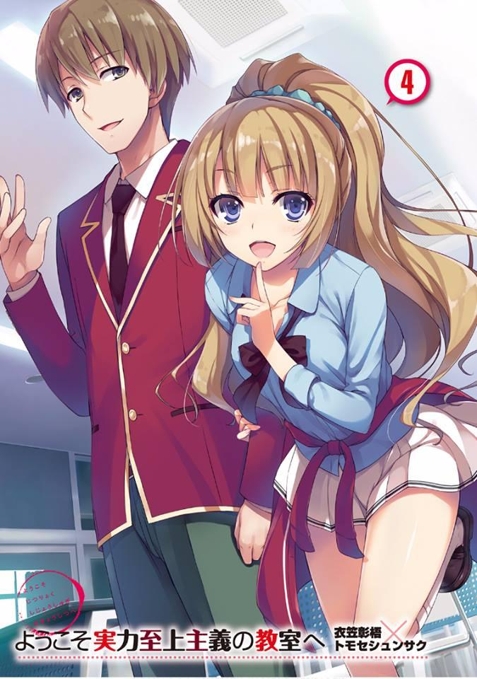
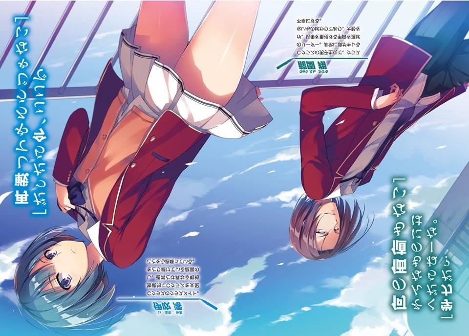
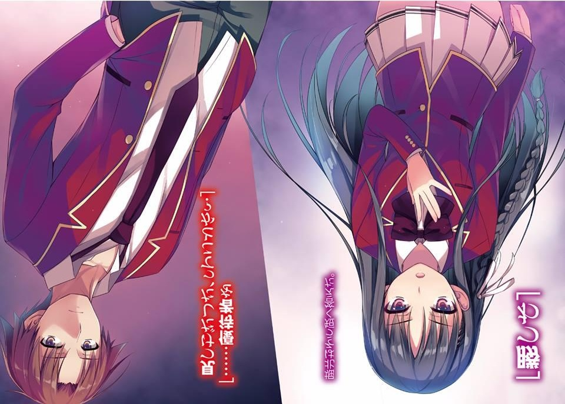
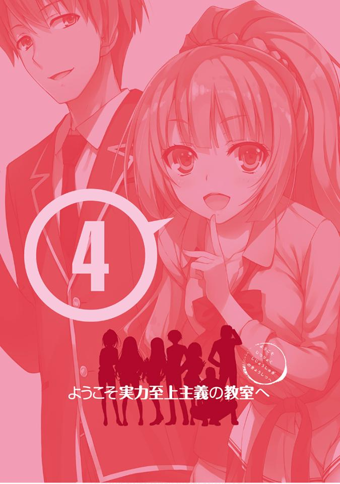
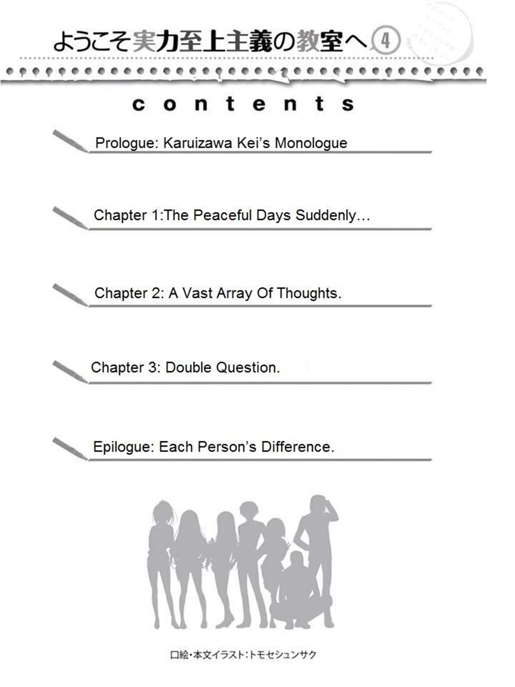
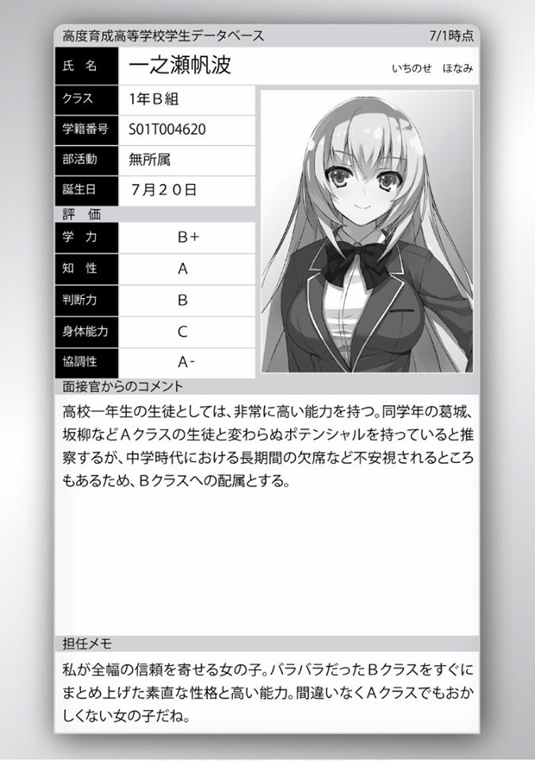
GLADHEIM
TRANSLATIONS
Youkoso Jitsuryoku Shijou Shugi no Kyoushitsu e Volumen 4
EL MONÓLOGO DE KARUIZAWA KEI
Al final, incluso después de ingresar a esta escuela, nada ha cambiado No, quizá desde el principio era que yo no tenía intención de cambiar nada. Para bien o para mal, era lo mismo que aquella vez. La razón de eso es muy simple.
Me entiendo más que cualquier otra persona. Mis fortalezas y mis debilidades, las conozco todas. No conozco a ninguno de los chicos ni a ninguna de las chicas como lo hago conmigo. Aunque entendí eso claramente, no pensé en cambiar. Pero no importa. Porque hace tiempo que dejé de percibirlo como hiriente. Porque yo misma quería esto.
Cuando salí de la ducha al lado de las habitaciones de los estudiantes, me miré en el espejo mientras las gotas de agua se acumulaban en mi piel. ¿Cuántas, cuántas veces he querido romper este espejo en pedazos? Cada vez que veo las heridas del pasado, me recuerda mi horrible pasado. De repente, sintiéndome mareada y con náuseas puse rápidamente mis manos en el fregadero y vomité en él. ¿Por qué? ¿Por qué me miran con esos ojos? ¿Por qué? ¿Por qué tengo que sufrir así?
¿Por qué? ¿Por qué? ¿Por qué? Repetí la misma pregunta innumerables veces.
Palabras que ya no tienen ningún significado.
El pasado es inmutable. Ya no puedo cambiar a nadie ni a nada del pasado.
Dios ha sido muy cruel conmigo. Mi personalidad fue destruida por la pesadilla de aquella vez, también perdí mi juventud, mis amigos y a mí misma. Necesito corregir ese error ahora. No importa cuánto me odien, es mejor que sufrir eso otra vez. Sí. No necesito la “juventud”. No necesito “amigos”. Lo más importante es que me proteja. Haré lo que sea necesario para asegurar eso. Yo soy... un parásito. Una criatura débil incapaz de sobrevivir por sí misma.
LOS PACÍFICOS DÍAS REPENTINAMENTE...
Han pasado tres días desde la prueba en la isla deshabitada. En el lujoso crucero que nuestra escuela nos proporcionó, nada de importancia estaba sucediendo y se había establecido una calma pacífica. Para los estudiantes que todavía están en el mejor momento de su juventud, teniendo que sobrevivir en una isla como esa, la mayoría perdería su juicio. Al final del día, los chicos seguimos siendo poco más que bestias y carnívoros sexualmente activos.
Mientras observábamos a las chicas que estaban perdiendo el tiempo, los chicos añorábamos una experiencia predestinada con las chicas. Este es un lujoso crucero en el que puedes perderte en un mundo de ensueño y olvidarte de todo lo malo. Incluso si la gente se enamorara aquí, no sería extraño en absoluto.
Además, ya he escuchado bastantes historias de estudiantes relacionándose entre sí en este crucero y que nacen nuevas parejas cada día.
Desafortunadamente, ese tipo de encuentro es poco probable que suceda conmigo y continúo pasando este tiempo solo y aislado. Mi situación es la misma que antes de la prueba en la isla. No. ¿Quizá el ambiente a mi alrededor cambió?
Aunque fue en contra de mi voluntad, me vi obligado a cambiar mi trayectoria original después de ingresar a esta escuela. Inicialmente, elegí ingresar a esta escuela por una razón muy específica. “Contactar con el exterior hasta la graduación está prohibido”. Esa regla escolar fue la razón por la que entré. En este momento, “cierto hombre” está tratando de contactarme desde el exterior.
Chabashira-sensei fue quien me informó de esto. Además, ella me chantajeó para que la ayudara a llevar a la clase hasta la clase A, amenazándome con expulsarme si no obedecía. Hubiera sido una historia estúpida, pero al carecer del poder para negarme, me vi obligado a aceptarlo. No tengo manera de averiguar la verdad de sus aseveraciones, así que decidí ir a lo seguro y asumir que era cierto.
Pero no seré chantajeado por ella por siempre. Por ahora, reuniré la información necesaria y, dependiendo de las circunstancias, tendré que dar el primer paso.
Un dulce diablo susurra esto en la parte posterior de mi cabeza: “Atrápalos antes de que te atrapen”. Eso es todo lo que necesito hacer. Pero ese tipo de
pensamiento violento atravesó mi mente solo por un momento, rápidamente regresé a mi normalmente modo de pensar pacifista. Pensé, “Si tan solo tuviera el poder para sacar de balance el eje de la Tierra con un golpe”. Si pudiera hacer eso, no habría necesidad de preocuparse por cosas tan triviales. Al decir eso, soñé con vivir en el mundo de Dragon Ball. Al principio los estudiantes se sentían incómodos después de que la prueba terminara, pensando que algo más vendría. Pero no pasó nada. El crucero era sereno, pacífico y agradable. Casi como si las vacaciones de verano ya estuvieran sobre nosotros. Naturalmente, los estudiantes estaban en un ambiente festivo. Durante este viaje de dos semanas parece que la última semana no sería más que unas vacaciones lujosas y sin parar para los estudiantes.
Los estudiantes estaban especialmente relajados ya que la prueba en la isla acababa de terminar. Y no es exactamente algo malo. El hecho de que los estudiantes pudieron mantener la calma durante la prueba en sí es la razón por la que pudimos obtener buenos resultados.
— ¿Hmm? ¿Has estado en tu habitación todo este tiempo?— Mi compañero, Hirata Yousuke, fue quien me llamó.
— No hay razón para que salga, no tengo a nadie con quien pasar el tiempo— Le respondí.
— Eso no es verdad, están Sudou y Horikita— me dice.
De hecho, Sudou y Horikita son personas que técnicamente puedo categorizar como “amigos”. Pero solo porque estés categorizado como “amigo”, aún hay jerarquía. Y si te encuentras al final de esa jerarquía, el trato entre amigos seguirá siendo diferente. A veces, cuando la gente sale, solo te invitan a una de cada 10 salidas. Soy ese tipo de persona, que existe solo para ser invitado una de cada 10 salidas.
— Creo que Ayanokouji-kun podría hacer más amigos si fuera un poco más agresivo— me dice Hirata.
Esta persona es un hombre popular que muchos estudiantes aprecian y apoyan considerablemente. En particular, las chicas parecen confiar mucho en él.
También tiene una novia como Karuizawa. Un hombre tan afortunado y feliz como Hirata, nunca entenderá el sufrimiento de un solitario como yo.
— La forma de hablar de Ayanokouji-kun ya está bien, solo necesitas un tema para conversar— continúa diciéndome. No necesito ese tipo de cruel bondad.
No necesito palabras de chicas como “Eeh... parece que podrías ser popular”.
Porque si les respondo “Entonces sal conmigo”, dirán “Eso es un poco molesto”.
Es porque no pude hacer ningún amigo ni tener novia, que me vi obligado a pasar tiempo solo de esta manera. Hirata luego me dice
— Planeo salir con Karuizawa-san a las 12:30 a almorzar juntos. ¿Te gustaría acompañarnos? Estoy seguro de que será divertido tenerte con nosotros.
— ¿Es solo Karuizawa?— le pregunto.
— No exactamente, hay otras 3 chicas que estarán con nosotros. ¿No te agrada eso?— Pregunta.
Si tengo que admitir la verdad, he querido hablar un poco con Karuizawa desde hace un tiempo. Pero... no hay necesidad de apresurarse. Además con otras chicas viniendo con nosotros, será difícil iniciar una conversación con ella y definitivamente no podré animar el almuerzo.
— Tendré que pasar, después de todo, no creo que me lleve bien con el grupo de Karuizawa— le digo a Hirata.
Con la finalización de nuestro primer semestre, las relaciones entre nuestros compañeros de clase ya están claramente definidas. No hay manera de que pueda forjar una nueva relación con alguien más en este punto. Ya puedo imaginarme la aversión de Karuizawa hacia mí. Hirata se sentó cerca de mí, después de darse cuenta de que no quería iniciar nuevas relaciones con la gente.
— Puedo entender que seas renuente, pero quiero que dependas de mí—me dice finalmente Hirata.
Hirata estaba listo para ayudar en cualquier momento y en cualquier lugar con esa cara agradable. Amablemente rechazo su oferta con un movimiento de cabeza.
— Solo quedan 10 minutos para el almuerzo, creo que deberías dejarme ahora— le digo a Hirata.
— No hay necesidad de apresurarse, además creo que es divertido estar contigo así como ahora— Hirata responde rápidamente.
A primera vista, puedes pensar que simplemente intento sonar fuerte o poner excusas, pero en realidad estoy bastante satisfecho con mi situación actual. Por supuesto, cuando llegué aquí, estaba pensando que podría hacer 100 amigos y entré con ese tipo de determinación. Pero ese impulso se calmó rápidamente.
Pude hacer amistad con los 3 idiotas, Horikita, Kushida y Sakura. En general, mi vida social en la escuela no está yendo tan mal, puedo estar convencido de eso.
Pero el tipo llamado Hirata no podía dejar que un compañero de clase se revolcara en la soledad de esta manera.
Me dice:
— Entonces, ¿qué tal si almorzamos solo nosotros dos, estarás feliz con eso?— procede a preguntarme.
Solo éramos nosotros dos en este momento, con Hirata mirándome fijamente.
Parece que insistirá en esto hasta el final.
— Estoy bien con eso, pero debes considerar los sentimientos de Karuizawa— le digo a Hirata.
— Está bien, puedo comer con Karuizawa-san cada vez que quiera, pero contigo Ayanokouji-kun, tengo pocas oportunidades de que comamos juntos— responde Hirata.
Una persona amable como Hirata no se daba cuenta del hecho de que básicamente le estaba pidiendo a otro hombre que almorzase con él.
Rápidamente pensé que quizás él “bateaba para ese lado”. Después de todo, a pesar de su loca popularidad, Hirata siempre era capaz de mantener su sentido de la racionalidad como hombre.
— No quiero que Karuizawa me odie después— le digo en un intento de rechazar amablemente su invitación. Parece que logró funcionar al apelar a la conciencia de Hirata.
— Está bien, Karuizawa-san no es del tipo que se enoja contigo por algo así— me responde.
No, no. Karuizawa es definitivamente ese tipo de chica, pensé. Incluso si pretende ser dócil delante de Hirata, definitivamente es el tipo dominante cuando se trata de las otras chicas. Pensé que tal vez ella no ha revelado ese lado suyo a Hirata. Casi parecía un amable maestro tratando de ayudar misericordiosamente a los malos alumnos.
— Creo que después de todo cancelaré el almuerzo con Karuizawa-san— me dice.
Rápidamente saca su teléfono y llama a Karuizawa. Traté de detenerlo, pero Hirata usa sus manos para cubrir mis ojos y detenerme.
— ¿Hay algo que te gustaría comer?— me pregunta.
Me vi obligado a escuchar a Hirata cancelar la cita para el almuerzo con Karuizawa.
— Puedo comer cualquier cosa... me gustaría evitar las comidas pesadas si es posible— finalmente le dije.
El crucero tiene muchos restaurantes. El menú va desde comida chatarra, como ramen y hamburguesas hasta algo así como cocina francesa. Como todavía es de día, me gustaría comer alimentos ligeros si es posible.
Como pensé, Hirata realmente canceló su cita con Karuizawa por esto. No pude escuchar claramente la voz de Karuizawa a través de la llamada, pero Hirata la cortó por la fuerza y canceló la cita de todos modos.
— ¿Estás realmente bien con esto?— le pregunto.
— Por supuesto. Vayamos a la cubierta. Si solo son aperitivos, será más fácil de comer allá afuera— me dice. Hirata abrió la puerta y me sacó de allí.
— Gracias por cooperar durante la prueba en la isla. No puedo agradecerte lo suficiente, Ayanokouji-kun. Incluso me ayudaste a buscar al culpable— me dice Hirata.
— No me lo agradezcas. El crédito pertenece a Horikita. Ella es la que encontró al culpable que robó la ropa interior— le dije rápidamente.
— Por supuesto que es cierto, pero aun así quiero agradecer a Ayanokouji-kun que cooperó conmigo sin reservas— me dice.
Hablando de ropa interior, todavía hay algo que quiero preguntarle. Miré a mi alrededor para ver si había gente.
— ¿Le devolviste su ropa interior a Karuizawa?— le pregunto.
— Sí, después de todo Ibuki-san fue la culpable, así que fue capaz de aceptarlo sin problemas— me dice.
La ropa interior de la que hablaba era del incidente durante la prueba en la isla, donde robaron la ropa interior de una de las chicas, Karuizawa Kei, y las cosas se volvieron rápidamente turbulentas. Especialmente porque la ropa interior se encontró en uno de los bolsos de los hombres, la relación entre los chicos y las chicas se hizo tensa. Pero Hirata logró resolverlo devolviendo la ropa interior y encontrando al culpable. En cualquier caso, todo resultó bien. Era una situación delicada, así que estaba preocupado por lo que podría haber pasado.
Me preocupaba que, incluso si se trataba de Hirata, devolver la ropa interior robada a una chica podría haber resultado mal. El hecho de que haya podido devolver sin problemas la ropa interior de una chica podría significar que ya ha subido los escalones a la adultez. Desde el ascensor en el crucero hasta la cubierta, los estudiantes parecían estar disfrutando de sus vacaciones de verano con sus vestimentas favoritas.
Debido a que también había una piscina a bordo, estudiantes hombres y mujeres usaban trajes de baño y nadaban en la piscina. Esto era inevitable, ya que la tensión de la prueba había desaparecido. Podía ser porque, el deseo de rebeldía de los estudiantes que fue reprimido durante la prueba de la isla, finalmente se liberó y resultó en esta situación. Esto se agravó por el hecho de que no es necesario pagar ningún punto por el uso de las instalaciones proporcionadas
por
el
crucero,
incluidos
alimentos
y
bebidas.
Independientemente de tus puntos, las cosas antes mencionadas son todas gratis. Por supuesto, tienes que pagar por los de trajes de baño y otros equipos de natación, pero aparte de eso, todo lo demás es gratis.
Cuando llegamos al restaurante, ya se habían llenado más de la mitad de los asientos. Los dos rápidamente tomamos unos de los asientos vacíos que aún quedaban en el abarrotado restaurante.
— Para ser honesto... tengo algo de lo que me gustaría hablar contigo— me dice Hirata.
Mientras miraba el menú, la voz de Hirata me pidió eso.
— ¿Qué es?— le pregunto.
Por supuesto, había un motivo oculto. Es por eso que era tan insistente en comer conmigo No me quejo porque ya que hizo todo lo posible por invitarme, debe haber una razón para ello.
— Puede que no sea el mejor escuchando, pero... ¿tienes la versión corta?—
le pregunto.
No soy un buen orador ni bueno escuchando, por eso solicité la versión resumida.
— Me gustaría que seas el puente entre Horikita-san y yo, creo que Horikitasan será una persona indispensable para la Clase D en el futuro y me gustaría mucho trabajar con ella— me dice Hirata.
Ya veo, así que necesita mi ayuda para eso. Asentí mientras Hirata seguía hablando mientras me disculpaba conmigo.
— El otro día, fue gracias a los esfuerzos de Horikita-san que la Clase D
obtuvo una victoria inesperada. La moral de la clase es altísima. Creo que el número de estudiantes a los que les agrada Horikita-san también ha aumentado, lo cual es un gran cambio a la situación anterior— me dice.
— Supongo que es verdad— digo.
La chica llamada Horikita Suzune es una estudiante de la clase D quien casualmente también fue mi primer amiga aquí. Pero, aparte de eso, es una persona solitaria y sin amigos. La única habilidad que tiene es la capacidad de ser una estudiante con honores en el sentido académico. Pero a cambio, su
debilidad es que ella es mala en habilidades sociales y a menudo tiene una actitud exigente que causa dificultades a la hora de interactuar.
— En este momento, siento como si juntos, ella y yo, y todos los demás trabajando en equipo, pudiéramos ascender juntos a la Clase C, a la Clase B y finalmente a la Clase A— dice Hirata con optimismo.
Si hubiera escuchado esta historia de alguien más, la hubiera dejado de lado como algo conveniente. Pero Hirata planteó el tema de Horikita desde el comienzo del semestre. Desde el principio, debe haber sentido el potencial que tenía Horikita.
No siento ninguna mala voluntad de Hirata. No me importa ayudarlo en este sentido, la tarea en sí es relativamente simple. Pero incluso si puedo unir a Hirata y Horikita, solo eso no resolverá el problema.
— Pero incluso si intentas cerrar la brecha entre Horikita y tú, eso no pasará tan fácilmente, Horikita es ese tipo de persona— Incluso si trato de arreglar la relación entre Horikita e Hirata, le parecerá una interferencia innecesaria.
Si ella se siente de esa manera, en realidad podría ampliar la brecha entre ella y el resto de la clase.
Sus interacciones con Kushida al comienzo del primer semestre son una prueba de eso.
— Por supuesto que entiendo ese hecho, Horikita-san no se abrirá ante nadie más que Ayanokouji-kun. No tengo la intención de forzar esto, es por eso que me gustaría que seas el puente que conecta mi existencia a la de Horikita-san— dice.
Y entonces se supone que debo decirle esto a Horikita, es lo que está diciendo.
Esto va en ambas direcciones, también necesitaré transmitir los sentimientos de Horikita sobre el asunto a Hirata.
De hecho, si actúo como intermediario de Hirata, Horikita no tendrá que trabajar junto con el resto de la clase y podremos construir un puente invisible de relaciones cooperativas.
— Es más fácil decirlo que hacerlo, generalmente soy el que sigue a Hori...
para ser más preciso, nunca le he dado a Horikita ninguna opinión antes.
Si de repente comienzo a dar mi opinión sobre algunos asuntos, parecería extraño— le respondo.
— Pero ahora no tengo mejores ideas. Incluso si tuviera que hablar con Horikita-san sobre esto ahora mismo, no tengo la confianza de poder convencerla de que trabaje con nosotros. Este es mi último recurso— me dice Hirata.
— ¿No es un poco prematuro echar mano de los últimos recursos en este momento?— le pregunto. Ciertamente entiendo ahora su deseo de trabajar con Horikita. Pero si es así, no tiene más remedio que acercarse directamente a Horikita sobre este asunto. Entiendo que hacer eso podría ser difícil para él, pero trabajar con otros como equipo también es difícil.
Hirata debería haber sido capaz de darse cuenta de algo tan obvio como esto. Él es quien se preocupa por esta clase y piensa en ello y aprecia más los lazos de amistad entre ellos. Pero todavía hay una pregunta sobre él. Allá en la isla, parecía casi temer algo y se perdió de vista a sí mismo. Aún recuerdo el extraño comportamiento que Hirata tenía en la isla. Cuando la unión de la Clase D se vio comprometida por el incidente, parecía haber estado casi “vacío”. Ese no es un comportamiento normal.
Por ahora, ordeno sándwiches y algunas bebidas. Comida ligera en general, fácil de ingerir. Los estudiantes estaban nadando en la piscina en la cubierta mientras que otros estaban comiendo vestidos en sus trajes de baño. El ambiente entre los estudiantes parecía ser festivo. Si Ike y Yamauchi estuvieran aquí, estarían babeando más por los trajes de baño de las chicas que por la comida misma.
Hirata, por otro lado, no les prestaba ninguna atención a las chicas, sino que me miraba fijamente.
— Sí, como dijo Ayanokouji-kun, puede que haya pensado muy poco en mi plan— admitió.
También es honesto y es capaz de reconocer sus errores en juicios racionales rápidos. Esa es una de las fortalezas de Hirata. Pero parecía que su deseo de
cooperar con Horikita era más fuerte ya que no mostraba ninguna señal de renunciar a persuadirme.
— Parece que tendré que volver a pensar en mi propuesta, Horikita-san es un tipo de persona muy seria. ¿Cómo te las has arreglado para llevarte bien con ella Ayanokouji-kun?— me pregunta.
Para fortalecer su relación con Horikita, parece que Hirata quiere hacerse amigo de ella primero, y para eso me pide consejo. Creo que esa es la actitud correcta a tomar y si hay algo que pueda hacer, me gustaría echarle una mano.
— Déjame corregir uno de tus puntos. No es que me lleve bien con Horikita ni nada por el estilo, parece que ni siquiera me reconoce como amigo—
señalo.
— Pero parece que Horikita solo se lleva bien contigo, Ayanokouji-kun.
Eso me hace especial, porque soy el único capaz de llevarse bien con esa persona. O tal vez eso es algo que un hombre que fácilmente puede hacerse amigo de 40 personas dice. Debido a la frustración que siente por no poder hacerse amigo de esta persona en particular.
— No seas tan impaciente, acabamos de terminar el primer semestre,
¿sabes?— le digo.
La cohesión de la clase está directamente relacionada con el tiempo que pasamos juntos. O en algunos casos, cuando se enfrentan repentinamente a condiciones difíciles, como durante la prueba en la isla. Por supuesto, puedes forzar la cohesión de la clase actuando hacia tus compañeros de clase, pero ese tipo de cohesión es muy frágil y se desmorona fácilmente.
— También debería agregar que Horikita no es del tipo que hace amigos fácilmente— dije. Lo dije simplemente para que Hirata pudiera entender eso más rápido.
— ...Eso podría ser cierto— Tal vez podría haber sido impaciente en ese sentido, pero la cara de Hirata mostró una reacción—. Admito que no estaba pensando en sus sentimientos sino en mi deseo de cooperación—
me dijo Hirata con una sonrisa mientras asentía. Estoy seguro de que
entiende ahora—. Lo siento, te invité a salir aquí solo para escuchar mi petición egoísta, vamos a comer ¿sí?
Tal vez también lo notó, pero después de un rato, Hirata también se dio cuenta de que alguien se acercaba y me miró avergonzado.
— Ah... así que aquí estabas, Hirata-kun. ¡Vamos a almorzar juntos!— Una voz feliz nos llamó. Era Karuizawa quien se nos acercaba.
— Umm... Karuizawa-san, estoy seguro de que te llamé hace un momento para decirte acerca de la cancelación del almuerzo, pero...— Hirata estaba tartamudeando.
Karuizawa y sus amigas acercan otra mesa, la juntan con la nuestra, mientras Karuizawa me saca rápidamente del grupo. El almuerzo de repente se volvió bastante ruidoso y, por supuesto, tengo problemas para socializar. Pero no necesito preocuparme. Ya estoy acostumbrado a situaciones como esta. En este caso, necesitaré usar mi habilidad especial “escapar rápidamente de la escena”.
Recogí mi comida y silenciosamente me fui. Mis ojos se encontraron con los de Hirata por un momento, pero pronto estuvo rodeado de Karuizawa y las otras chicas y ya no pude verlo.
Creo que esa es una de las desventajas de hacer demasiados amigos. Pierde el tiempo que puede usar en sí mismo al tener que pasarlo con otros. Incluso si Hirata tiene algún problema personal en el que necesite consultar a alguien, estoy seguro de que no puede pedirle consejos a Karuizawa, así que tendrá que mantenerlos dentro de sí.
1
Después de dejar Hirata con Karuizawa y sin tener con quien pasar el rato o con quien hablar, decidí regresar a mi habitación. Utilicé las escaleras en lugar del ascensor para bajar al barco y llegar al tercer piso donde está mi habitación.
Noté que había manchas húmedas en el pasillo. No era solo mi habitación, sino que las manchas se extendían por todo el corredor. Caminé a lo largo de las manchas, las seguí y noté a un hombre que caminaba grácilmente por el pasillo
vistiendo nada más que pantalones de natación. Toda la parte superior de su cuerpo estaba desnuda.
— ¡S-señor! ¡Es un problema para nosotros si camina por el pasillo mientras está mojado!— Uno de los empleados, al darse cuenta de la situación de emergencia, se apresura a hablar con el hombre. El empleado ya llevaba una toalla en las manos, como si siempre la llevara para situaciones como esta.
— Ja, ja, ja. Parece que me has encontrado— declara el hombre.
— Sí, señor. Es la cuarta vez que lo encuentro así. Se lo he dicho en innumerables ocasiones, pero por favor seque su cuerpo antes de regresar al barco. H-hacer algo como esto será un gran inconveniente para los otros huéspedes— el empleado parecía estar diciendo.
Así que esta es la razón por la cual el empleado había preparado la toalla por adelantado, ya había visto suceder esto muchas veces antes.
— Creo que es un principio nunca secar mi cuerpo— dijo Kouenji mientras gotas de agua caían de todo su cuerpo. De repente, dejó de caminar.
— ¿Tienes lápiz y papel?— le preguntó al empleado.
— ¿Eh?... eh, tengo un cuaderno y un bolígrafo— le respondió rápidamente, sin entender exactamente a dónde iba con esto mientras sacaba torpemente un bolígrafo y su bloc de notas.
— ¿Sabías que el autógrafo de una celebridad puede tener un precio estratosférico, y a veces vale decenas de millones en el extranjero?—
Kouenji le dijo al empleado.
— Y... ¿qué hay de eso?— le preguntó a Kouenji en respuesta.
Una vez que había terminado de garabatear algo en el Bloc de notas con el bolígrafo, Kouenji rápidamente se lo devolvió al empleado. Estaba lejos, así que no pude ver bien, pero parece que había escrito su nombre “Kouenji Rokusuke”
en el bloc de notas.
— ¿Q-qué es esto?— el empleado le preguntó dócilmente.
— ¿No es obvio? Es un autógrafo. Un autógrafo. Aunque está escrito en algo de tan poca calidad, en el futuro sin duda tendrá un gran valor. Te lo daré como regalo. Acéptalo con gratitud— Kouenji le dijo al empleado.
Parece que Kouenji no es tan malo, después de todo, le dio su autógrafo al empleado como medio de expresar su gratitud, con la esperanza de que le sea útil. Pero de alguna manera dudo que sea de mucha utilidad para el empleado, lo más probable es que haya sido un desperdicio de papel y tinta.
— No me hagas ver como un tonto, soy el hombre que en el futuro se encargará del futuro de Japón. Como agradecimiento por ayudarme, te dejaré trabajar en un barco de lujo mucho más grande. Lo suficientemente grande para hacer que este parezca el barco de un plebeyo— declaró Kouenji al empleado.
Personalmente, pensé que preferiría que el barco no fuera demasiado grande y corriera el riesgo de hundirse como el Titanic. Sin embargo, Kouenji parecía estar riendo satisfecho. El empleado parecía haber perdido la determinación de detener a este hombre y solo miró abatido el piso ahora mojado.
Los rumores dicen que los compañeros de clase evitan descaradamente a Kouenji debido a su personalidad bastante egoísta. Parece que varios de mis compañeros ya han pasado por lo que este joven empleado acaba de experimentar. Estoy seguro de que si se tratara de Hirata, se aseguraría de llamar a Kouenji, aunque sea ignorado como el empleado en este momento.
Pero el hombre llamado Kouenji es como veneno, y aquellos que interactúan con él, amigo o enemigo sufrirán por ello. Para evitar tal problema, simple y silenciosamente pasé a un lado de ellos.
— Oh. ¿No es el Chico Ayanokouji? Qué casualidad— Kouenji de repente dice mi nombre.
Al escucharlo repentinamente decir mi nombre, volteé a mirarlo y vi al joven empleado sonriendo felizmente, ya que el objetivo de los caprichos de Kouenji se había desplazado de él hacia mí, como diciéndome “Finalmente soy libre”. De hecho, Kouenji parecía pertenecer a una violenta especie alienígena que devoraría con avidez a todas las especies nativas en un río.
— ¿Tienes algún asunto conmigo?— tranquilamente le pregunto.
— No, no. Nada de eso. Simplemente te estoy llamando como compañero de clase. Después de todo, eres mi compañero de cuarto— Kouenji me
contestó como si su respuesta fuera algo natural. Luego se acomodó el cabello y casi como una escopeta, gotas de agua volaron de su cabello y aterrizaron en mi cara y uniforme.
Por supuesto, Kouenji parecía tan absorto en sí mismo que ni siquiera se dio cuenta de mi situación.
— Entonces me excusaré— el joven empleado, que previamente estaba viendo este espectáculo desplegarse, dijo rápidamente y se alejó arrastrando los pies, claramente no estaba dispuesto a involucrarse más en este asunto.
Por supuesto, tampoco deseo estar a solas con Kouenji en una situación como esta.
— ¿De qué estabas hablando con Kouenji?— Le pregunté rápidamente.
Por un momento, el empleado parecía estar un poco enojado ya que perdió la oportunidad de escapar de Kouenji, pero obedientemente me respondió:
— Parecía que estaba mojado, así que pensé en darle una toalla... pero parece los he importunado a ambos, por favor discúlpenme— me dijo mientras salía corriendo de la escena.
— Ya veo. ¿Entonces estaba intentando cuidarme?— Kouenji lo notó.
— S-sí, eso parece ser— rápidamente le dije en respuesta. De alguna manera, parecía que había logrado alejarme de Kouenji y volver a mi habitación.
Aun así, qué casualidad encontrarme con Kouenji en mi camino de regreso aquí.
A pesar de que era incómodo, supongo que iba a suceder de cualquier forma, considerando la problemática falta de espacio cuando estamos todos reunidos en este barco. Deseando evitar otro encuentro incómodo, opté por girar a la derecha en lugar de a la izquierda y decidí regresar a mi habitación en otro momento. Hirata y Yukimura, que también comparten la misma habitación que yo, deberían regresar pronto. Fui al tablón de referencia cercano en el que se ilustra un mapa del barco de una manera clara y comprensible, además describe diversas rutas de escape en caso de emergencia. Mientras caminaba con indiferencia por los pasillos del área del segundo piso, parecía que no había
muchos estudiantes aquí en este momento. Entonces vibró el teléfono en mi bolsillo. Lo saqué y vi que tenía un correo. Cierta chica me había llamado. Como no tenía nada mejor que hacer en ese momento, decidí aceptar y me dirigí a su encuentro.
— Hah... hah... hah— Para cuando me acerqué a la chica que me envió el mensaje, Sakura, pude escuchar los ansiosos suspiros que salían de su boca.
— ¿Qué pasa?— le pregunto.
— Waaah... ¿A-Ayanokouji-kun?— parecía haber sorprendido a Sakura, ya que se asustó y dijo mi nombre con voz sorprendida.
— Perdón por sorprenderte— le dije.
— N-no... yo-yo solo estaba un poco nerviosa— Pensé que si ella está tan nerviosa por encontrarse con un simple amigo como yo, su vida debe ser bastante dura.
— Ayanokouji-kun, tus compañeros de cuarto son Hirata-kun, Yukimura-kun y Kouenji-kun... ¿verdad?— me preguntó.
— Sí, ¿pasa algo?— Me sorprendió escucharla preguntar algo así.
— Umm... sobre eso... Estoy un poco preocupada por la gente con la que estoy compartiendo habitación…— se interrumpió.
Parece que Sakura no se lleva muy bien con sus compañeras de cuarto, ya que en primer lugar nunca ha sido buena para hacer amistades. Al ver su expresión de preocupación, puedo entender la gravedad de sus problemas.
— ¿Te preocupa que no puedas llevarte bien con ellas?
— No estoy segura. Siento que quiero ser su amiga. Pero hay una parte de mí que también quiere estar sola. No tengo remedio, ¿verdad?— me dice Sakura.
Su voz se apagó débilmente, pero a menos que yo sepa con quién comparte habitación, no puedo darle ningún consejo adecuado en este momento.
— Entonces, ¿quiénes son tus compañeras de cuarto?— le pregunto.
— ...Son Shinohara-san, Ichihashi-san y Maezono-san...— respondió con voz abatida mientras me daba los nombres de sus compañeras de cuarto.
Es una reunión de chicas con muy fuertes y diferentes personalidades, a diferencia de Sakura. Hablando de Shinohara, ella es una chica que es amiga íntima de mi compañera de clase Karuizawa. Es una chica testaruda que con frecuencia pelea con los chicos y no se contiene contra personas que no le agradan. No creo que tenga nada en contra de Sakura, pero dudo que tengan muchas ganas de hacer amigos.
Ichihashi suele ser más madura, pero a veces tiene una actitud un tanto impulsiva como Shinohara. No sé mucho sobre Maezono, pero definitivamente parece tener una actitud algo desagradable y ciertamente me dejó una mala impresión. Para Sakura, esto debe ser como ser arrojada a una cueva de leones.
Quería acariciar su cabeza para animarla un poco.
— ¿Pero por qué pedirme ayuda a mí en particular?— pregunté.
— ....Pensé que si era Ayanokouji-kun... podría ser capaz de conseguir un buen consejo...— dijo.
Parece que ella depende bastante de mí, pero rápidamente se disculpa conmigo.
— Lo siento, Ayanokouji-kun también debe estar ocupado, disculpa por depender de ti de esta manera— dijo.
— No hay problema, no me importa que me pidan consejo, pero tengo dudas sobre mi capacidad para ayudarte— Respondí rápidamente.
Lamentablemente, no conozco a ninguna de las chicas que Sakura acaba de nombrar, así que probablemente no sea de mucha ayuda. Mientras pensaba en mi respuesta, la puerta a la habitación se abrió.
— Oh. Son Ayanokouji-kun y Sakura-san, ¿qué están haciendo ustedes dos aquí?— Era otra de mis compañeras de clase, Kushida Kikyou, quien entró al salón de invitados para saludarnos. La expresión previamente brillante de Sakura se ensombreció rápidamente y la atmósfera se volvió incómoda.
Aunque Kushida claramente no estaba al tanto, la usualmente antisocial Sakura rechazó su presencia y se retrajo dentro de sí. Por supuesto, Kushida siguió hablando sin preocuparse por nada en el mundo.
— Está bien, no voy a molestarlos. Estaba en camino de encontrarme con algunos amigos— nos dijo Kushida.
— Entonces, voy a regresar...— Sakura me dijo débilmente.
Aunque Kushida estaba tratando de disculparse, Sakura retrocedió y corrió hacia su habitación.
— Lo siento. ¿Quizás llegué en un mal momento? ¿No debería haberlos llamado?— Kushida intentó disculparse. Pensé que no había necesidad de disculpas, Sakura es naturalmente mala formar relaciones.
— De todos modos, no he vuelto a hablar contigo desde que regresamos al barco, Kushida. Has salido con muchos amigos— le dije.
Kushida es la ídolo de la clase. Naturalmente es la chica más popular. Estaba realmente haciendo honor a sus palabras de querer ser amiga de todos, con la excepción de algunos solitarios como Sakura.
— Hoy salgo con la Clase C, ¿quieres venir conmigo, Ayanokouji-kun?—
Kushida me preguntó.
— Err... ¿puedo ir?— pregunté.
— ¿Vas a venir?— sonaba sorprendida.
Esto definitivamente se perfila como un mal día, pensé.
Kushida parecía algo desconcertada por mi respuesta. Rápidamente pensé que necesitaba rechazar esta invitación.
— Estoy bromeando, sabes que no soy del tipo que pasa el tiempo así— le dije.
— Hmm... Me sorprendiste un poco, Ayanokouji-kun, eres muy gracioso— me dijo Kushida.
— ¿De verdad?— pregunté. No creo que esos fueran sus pensamientos reales, sus verdaderos pensamientos definitivamente serían mucho más espantosos que eso.
— Entonces me iré— me dijo.
Justo cuando dijo eso, tanto el teléfono de Kushida como el mío vibraron al mismo tiempo. Incluso en modo silencioso, el tono se podía escuchar
claramente, deben ser instrucciones importantes enviadas por la escuela a todos los estudiantes.
— Me pregunto qué será— murmuró.
A pesar de diversas instrucciones que hemos recibido después de comenzar la escuela, esta es la primera vez que nos contactan de esta manera. En estas vacaciones de verano es la primera vez que recibimos instrucciones así. Al mismo tiempo, un anuncio comenzó a escucharse a través de los altavoces del barco.
— Este es un anuncio para todos los estudiantes, deben haber recibido un correo en sus teléfonos. Verifiquen el contenido del correo y sigan de cerca esas instrucciones. Si no ha recibido el correo, comuníquese con el miembro del profesorado disponible más cercano. Este es un anuncio muy importante, así que por favor asegúrese de no perderlo. Repito--- — la voz repitió el mensaje.
— ... es el correo que recibimos ahora mismo ¿verdad?
— Probablemente.
El mensaje de la escuela llegó a nuestros teléfonos al mismo tiempo. Lo siguiente estaba escrito en el correo en mi teléfono:
“Un examen especial comenzará pronto. Reúnanse a la hora designada en las habitaciones designadas. Los estudiantes que lleguen más de 10 minutos tarde a la reunión recibirán una penalización. Vaya hoy a la habitación 204 en el segundo piso a las 18:00. Como solo quedan 20 minutos hasta entonces, lávese las manos, mantenga el teléfono en modo silencioso o apáguelo”.
Entonces será una “prueba especial”. Esto no va a ser como los exámenes escritos ni una prueba de aptitud física. Al igual que la prueba de la isla, esto es algo que las escuelas normales no harían. Solo nuestra escuela nos pondría a prueba de esta manera.
Nada más sobre el examen estaba escrito. ¿Es algo que podemos inferir del correo o todavía no se conoce el examen? De cualquier manera, solo hay una forma de averiguarlo. El punto de encuentro parece ser el cuarto 204 a las 18:00.
Solo restan 20 minutos.
— ¿Puedo ver tu correo?— Kushida me pregunta.
Se lo enseño. Ella también me muestra su mensaje, pero a pesar de que la estructura básica es la misma, el punto de reunión para ella era dos habitaciones más abajo de la mía y la hora de reunión era a las 20:40 en lugar de a las 18:00.
— Me pregunto por qué nos darían instrucciones tan extrañas— ella se pregunta.
— ....Ni idea— Lo único cierto en mi mente era un mal presentimiento sobre esto.
Nunca esperé que nuestro crucero tuviera este tipo de examen establecido, pero parece ser la realidad. Nos da rienda suelta para ir a cines, lugares para fiestas y restaurantes buffet, todo a nuestra voluntad. Traté de rememorar todo eso para tratar de adivinar el contenido de este misterioso examen. Desafortunadamente, no pude encontrar ninguna pista. Rápidamente envío un mensaje por correo a Horikita y ella me respondió casi al instante.
“¿Recibiste un correo de la escuela en este momento?”.
“Sí”.
“Tengo la reunión a las 18:00. ¿Y tú?”
“La mía es a las 20:40. Parece que nuestras horas para la reunión están asignadas de manera diferente”.
“Ya veo. A las 20:40 ¿eh?” Dije.
El mismo horario de reunión que Kushida. Me pregunté si iban a dividir a los chicos y las chicas. Pero eso no puede ser, me dijeron en mi correo que el examen comienza a las 18:00.
“Tengo curiosidad sobre esta diferencia en los horarios de inicio, esto podría dar lugar a una sensación de injusticia entre los estudiantes de diferentes grupos”.
“No puedo decirlo con seguridad en este momento”. Enviamos y contestamos mensajes, pero pronto llegó un mensaje de Horikita.
“Hay cosas que me gustaría discutir más a fondo, pero parece que no hay tiempo. Debido a que la hora de tu reunión es antes. Por favor asegúrate de informarme” simplemente dijo.
“Entendido” le respondí.
Luego apagué mi teléfono.
— ¿Ayanokouji-kun?— Mientras estaba concentrado en chatear con Horikita, Kushida me miraba como preguntándome qué sucede.
Pensé brevemente si debería decirle a Kushida sobre su mismo horario de reunión que Horikita, pero sería una molestia hacerlo. Decidí esperar y ver cómo se desarrollaban las cosas. No debería ser demasiado tarde, incluso si actuaba después de obtener más información.
2
Recibí un correo de la escuela que me daba el punto de encuentro designado y la ubicación. 5 minutos antes de la hora designada llegué a mi destino.
Habitación 204 en el segundo piso. Los estudiantes en el pasillo estaban arrastrando los pies a sus habitaciones asignadas. No pude identificar a todos y cada uno de ellos, pero los estudiantes pasaron de un lado a otro y entraron a sus habitaciones asignadas.
— Estudiantes de otras clases, ¿eh?— Me pregunté en voz alta.
Al principio pensé en esperar fuera de la habitación, pero pensándolo de nuevo, imaginé que la reunión ya podría haber empezado sin mí, así que me apresuré hacia la habitación. Llamé y recibí una respuesta rápida.
— Entra.
Aparentemente me habían dado permiso para ingresar, luego entré a la habitación. Ahí vi al maestro de la clase A, Mashima-sensei sentado en una silla.
Había dos estudiantes masculinos sentados delante de Mashima-sensei. Ambos eran de la Clase D y personas que reconocí.
— Ahh. Entonces uno de los 2 restantes de nuestro grupo es Ayanokouji-dono. ¡Kopo!.
El estudiante que hizo esta declaración y la terminó con esta extraña onomatopeya no era otro que Sotomura. Un chico geek de nuestra clase que es tan otaku como parece. Una persona familiarizada con la maquinaria y la historia, así como otras partes de la trivia, aunque inesperadamente es malo con la comunicación.
— ¿No es extraño, Ayanokouji?— el que me hizo esa pregunta fue el que estaba sentado junto a Sotomura llamado Yukimura. Sotomura y Yukimura.
Realmente nunca noté la relación entre ellos. Mirando al pasado me pregunto cómo comenzó su particular amistad.
— ¿Qué estás haciendo? Siéntate— recibimos instrucciones de sentarnos por parte de Mashima-sensei.
De esta manera, me senté en silencio junto a Yukimura, quien a su vez se sentó junto a Sonomura. Algo extraño que me preocupó un poco es que había otra silla junto a mí que todavía estaba vacía. Parece ser que nos pusieron en grupos de cuatro estudiantes de la misma clase con un maestro que nos supervisaba.
— Hay una persona más que se unirá a nosotros, esperemos tranquilamente a que llegue— nos dijo Mashima-sensei.
A juzgar por el tono con el que nos dijo esto, que esta persona llegue tarde no es un gran problema, incluso si tenemos que esperar. Por supuesto, para garantizar la equidad para todos los estudiantes, tiene sentido darnos la explicación del examen cuando todos los miembros del grupo estén reunidos.
Independientemente de si se trata de un examen escrito o de sobrevivir en una isla deshabitada, esto sigue siendo lo mismo. Sin embargo, este examen parece que tendrá lugar en este pequeño cuarto. ¿Cuál es el significado de esto? O tal vez me estoy preocupando demasiado. En cualquier caso, obtendré respuestas tan pronto como llegue el último miembro de nuestro grupo. Sentado en la silla, pensé que no había necesidad de más conversación hasta entonces. Esperando a nuestro último miembro, un pesado silencio cayó sobre nosotros. La hora programada ya está aquí, así que personalmente me gustaría que nuestro último
miembro aparezca lo más rápido posible. El tictac del reloj era el único sonido que llenaba la habitación. Pronto, la manecilla del reloj dio las 18:00 y Mashimasensei miró el reloj una sola vez antes de que alguien llamara a la puerta. Como en mi caso, el maestro le dijo a la persona que ingresara.
— Disculpe— se escuchó una voz cuando por fin el último miembro de nuestro grupo se unió a nosotros. Era Karuizawa Kei quien entró a la habitación y se sentó en la silla a mi lado.
— Eeeh... ¿por qué están Yukimura-kun y los otros aquí?— Preguntó Karuizawa.
Eso es lo que también me gustaría saber. Me sentí un poco avergonzado en este punto. Sotomura no estaba pensando en la situación en absoluto, pero Yukimura parecía un poco extraño.
— Pensé que el correo le decía a los estudiantes que todos fueran puntuales, llegas tarde— Mashima-sensei reprendió a Karuizawa.
— Lo siento— Karuizawa le respondió brevemente. Karuizawa parecía insatisfecha con las palabras de Mashima-sensei y nuestra existencia en general.
Mis ojos se encontraron con los de Karuizawa por un momento y ella rápidamente levantó su silla y colocó cierta distancia entre nosotros. Incluso si incrementaba solo 1 mm la distancia entre nosotros, me sentí un poco deprimido, ella odiaba la idea de estar cerca de mí.
— Sotomura, Yukimura, Ayanokouji y Karuizawa. Ahora explicaré el contenido del examen especial— nos dijo Mashima-sensei.
Pude adivinar más o menos que este sería el caso por el correo que recibimos, pero sentí cierta curiosidad sobre cuál sería el examen en sí.
Pero la composición del equipo de 4 estudiantes y 1 maestro todavía me confundía. Tenía una sensación problemática con respecto a este examen.
— Ok, espere un minuto. No entiendo cuál es el significado de esto, ¿qué quiere decir con explicar el examen? El examen ya ha terminado ¿no? ¿Y
qué hacen estas personas aquí? ¿No es extraño?— Karuizawa inmediatamente lanzó un aluvión de preguntas a Mashima-sensei.
Me preguntaba si no podría callarse por un momento. Pensé para mis adentros si se había molestado en leer el correo apropiadamente antes de venir aquí.
— No voy a responder más preguntas en esta etapa, así que escucha en silencio— Mashima-sensei respondió instantáneamente a Karuizawa mientras la miraba severamente.
Obviamente, los profesores no tenían la intención de responder esas preguntas en este punto. Mashima-sensei es visto como un maestro frío y estricto por los estudiantes, parece que esto es verdad. Chabashira-sensei era el tipo de maestra indulgente que enseñaba con calma. Por otro lado, parece que Mashima-sensei siempre es decisivo y llano en su tono.
— En este examen especial, todos los estudiantes de 1er año se dividirán en grupos según sus signos del zodíaco y todo el examen se llevará a cabo en grupos de estudiantes que comparten el mismo signo como ustedes cuatro, el propósito de la prueba es evaluar su “capacidad de pensamiento”— Mashima-sensei nos explicó.
Entonces, según los signos del zodíaco, ¿eh? Entonces se formarán 12 grupos de todos los estudiantes de 1er año. Entonces, la clase D se dividirá en 3 grupos y se agregará a la combinación de las otras clases para formar los 12 grupos necesarios para cada signo del zodíaco. ¿Y qué querían decir con “capacidad de pensamiento”? Si lo interpreto literalmente significaría que estaría probando nuestra capacidad de pensar.
— ¿Qué quiere decir con “capacidad de pensamiento”?— Karuizawa, a quien solo le pidieron que se quedara callada comenzó a hacer preguntas de nuevo. Debe haber sido por reflejo, pero parece que no escuchará las palabras de Mashima-sensei.
— Ya te dije que no responderé preguntas— Mashima-sensei le dijo severamente otra vez. Incluso Karuizawa parecía entender la gravedad de la situación mientras se quedaba callada.
Por supuesto, la miré y parecía tener una expresión de insatisfacción en su rostro. Pero elegí callarme y escuchar. Yukimura y Sotomura también deben tomarse la situación muy en serio ya que estaban escuchando intensamente a Mashima-sensei.
— Hay tres atributos requeridos que las personas que funcionan bien en la sociedad deben dominar: Acción, Pensamiento y Trabajo en Equipo. Estas habilidades son necesarias para que todos ustedes se conviertan en adultos exitosos. La última prueba en la isla enfatizó bastante el trabajo en equipo, sin embargo, ésta enfatizará su pensamiento. La capacidad de pensar críticamente, analizar la situación actual y resolver el problema se pondrá a prueba en este examen. La capacidad de trabajar creativamente con imaginación y trabajar con determinación para resolver el problema, esos rasgos serán vitales para esta tarea— Mashima-sensei nos explicó la esencia general del examen.
Por supuesto, todavía tenía varias preguntas con respecto a este examen que quisiera hacerle. Muchos aspectos del examen son aún inexplicables y nada claros para mí.
— Por lo tanto, este examen se realizará con 12 grupos divididos según sus signos del zodíaco y el examen se realizará en esas condiciones—
continuó Mashima-sensei—. ¿Hay alguna pregunta?— finalmente dijo.
— No entiendo en absoluto, explíquelo de una manera más clara. Entiendo el hecho de que estamos divididos en 12 grupos, pero ¿por qué diablos estoy con estos tipos? ¿Dónde está Hirata-kun? ¿Dónde están las otras chicas?
Todavía no entiendo este examen— dijo Karuizawa nuevamente.
Al menos se abstuvo de dirigirse a Mashima-sensei francamente y añadió los honoríficos al final, sin importar cuán poco entusiasta. Sin embargo, creo que las quejas de Karuizawa tienen algún mérito en ellas. El contenido del examen sigue siendo en gran parte un misterio y mucha de la información que recibimos es ambigua y se puede interpretar de múltiples maneras. Si nuestra clase está realmente dividida en 3 grupos, debería haber al menos de 12 a 15 personas en esta sala y no solo 4. ¿Tal vez sea por su tamaño y hay más grupos que solo 12?
Me pregunté esto en silencio. No. Debería haber habitaciones en este barco lo
suficientemente grandes como para albergar a tantos estudiantes, pero esta pequeña habitación fue elegida. ¿Eso significa que a pesar de que estábamos divididos según nuestros signos del zodíaco, debe haber más de 12 grupos?
— En primer lugar, ustedes cuatro, de ahora en adelante se considerarán parte del mismo grupo por el resto del examen. Hay otros cuartos con otros estudiantes recibiendo la misma explicación que están recibiendo ahora. Algunos de ellos podrían convertirse luego en parte de su equipo—
Mashima-sensei continuó explicando.
¿Estudiantes que más tarde podrían estar en el mismo equipo que nosotros?
Solo somos cuatro en esta sala en este momento. Quizás los miembros restantes están divididos en otras salas muy parecidas a esta y... ¿el propósito del examen es formar aliados entre diferentes grupos de estudiantes? Me preguntaba esto mientras Mashima-sensei continuaba la explicación.
— Si ese es el caso, ¿por qué no reúne a todos los miembros aquí y lo explica todo? Además, ¿por qué estos tres chicos están en el mismo equipo que yo? ¿Por qué tengo que unirme a estos tres desagradables chicos? De verdad, realmente no me gusta la situación. Preferiría estar con Hirata-kun— Karuizawa continuó describiendo sus deseos egoístas, pero parece que la paciencia de Yukimura se ha agotado.
— Cállate un momento y escucha. Parece que el examen ya comenzó. Si dices cosas egoístas como esta y nuestro equipo recibe una evaluación negativa, ¿te responsabilizarás por ello? Incluso en la isla, eras el eslabón débil en la cadena retrasando a la clase. No sigas deteniendo a la clase más que esto— Yukimura fríamente le dio un sermón a Karuizawa.
— ¿Eh? ¿Cuándo demonios retrasé a la clase, eh? Realmente me estás enojando— Karuizawa le replicó a Yukimura. La imagen de los dos discutiendo nos abrumaba a mí y a Sotomura y ambos nos quedamos en silencio.
— Ustedes dos cálmense, primero Yukimura, tus preocupaciones son infundadas. El examen aún no ha comenzado, nada negativo le sucederá a nuestro equipo. Además, este examen no tiene que ver con tu actitud, no se puntuará en ese aspecto— Intervine rápidamente.
— ¿Ves? Ahora lo entiendes, ¿verdad?— Karuizawa miró orgullosamente a Yukimura como si fuera su victoria.
Por otro lado, Yukimura me mira con decepción por haber elegido el bando de Karuizawa. Pero Yukimura, no tuve más remedio que intervenir, ¿sabes? pensé en silencio.
— Sin embargo, Karuizawa, también necesitas cambiar tu actitud hacia los profesores, ¿sabes? Si sigues así, podría ser una mancha en tus registros académicos y entiendes que eso no es algo bueno ¿no?— Reprendo suavemente a Karuizawa.
Esta vez, Yukimura se hurga la nariz mientras se ríe de Karuizawa. Mashimasensei nos miraba como si fuéramos un grupo de niños de primaria discutiendo entre nosotros.
— Miren, el hecho de que ustedes 4 estén en un grupo no puede ser anulado sin importar qué. Así que si quieren obtener buenos resultados, asegúrese de llevarse bien— nos regaña Mashima-sensei.
— Ahh... esto apesta. No puedo tratar con estos tres tipos. ¡Yo quería a Hirata-kun!— Karuizawa se queja nuevamente.
— Heh, pero si los tres trabajamos juntos y combinamos nuestros ingenios, podríamos ser tan buenos como Hirata-dono y formar un equipo ideal para ti— dice Sotomura.
— Eh, asqueroso. Incluso si hay 100 o 200 copias de ustedes, aun así no serían tan buenos como un pelo de Hirata-kun— replica Karuizawa bruscamente.
No me importa particularmente lo que Karuizawa piense de nosotros, pero decir algo así delante de mí sigue siendo hiriente. Pero dado que Karuizawa no se despega de Hirata, creo que no se puede evitar, una vez que ha sido separada de él de esta manera.
— Por ahora, simplemente llamaré a Hirata-kun y hablaré con él— dice Karuizawa.
Karuizawa nos echó un vistazo mientras suspiraba con disgusto. Pensé para mis adentros que iba a ser una compañera problemática. Lo más probable es que Yukimura haya pensado lo mismo que yo.
— Si no hay más preguntas, continuaré con mi explicación— afirmó Mashima-sensei.
— Sí, sí. Lo entiendo. Pero ¿por qué nosotros cuatro somos los únicos que recibimos esta explicación? Dijo que habrá otros miembros más adelante,
¿por qué no dar la explicación en ese momento? Si esto es algún tipo de truco o acoso a los estudiantes, entonces, en serio quiero que lo detenga— Karuizawa le devolvió el fuego rápidamente.
— No es necesario que te preocupes por el pequeño número de nuestro grupo, si eso es lo que te preocupa, esto no es un truco ni acoso. No se trata de una sola clase dividida en grupos sino de 3 a 5 personas de cada clase divididos en grupos. Corremos el riesgo de confundir a los estudiantes si el examen en sí mismo no se explica así por adelantado—
explicó Mashima-sensei.
Así que esa es la razón por la que este pequeño número se reunió en esta sala.
Los otros tres no parecen haber entendido la explicación de Mashima-sensei y estaban reflexionando en silencio. Naturalmente, tampoco es como si pudiera entenderlo al instante. El tictac del reloj una vez más llenó la habitación silenciosa.
— E-espere un minuto. ¿Lo que quiere decir es que podríamos estar haciendo equipo con grupos de otras clases? Esto es cada vez más y más difícil de entender. ¿No se supone que las otras clases son el enemigo?—
Preguntó Karuizawa confundida.
— Estoy de acuerdo con Karuizawa, sensei. Hasta ahora solo hemos estado compitiendo contra las otras clases. Es difícil aceptar que de repente se supone que debamos abandonar todo eso y hacer equipo con ellos.
Puedo entender las preocupaciones de Karuizawa y los demás, pero no es como si los estudiantes tuviéramos derecho de elegir, las reglas las determina la escuela.
— No pienses de esa manera, Yukimura, tu vida en la preparatoria acaba de comenzar. No siempre pienses en competir y reflexiona más sobre el futuro— Mashima-sensei le reprochó a Yukimura que dijera eso.
— Lo siento— respondió.
— En este momento no necesitas pensar en “entender” sino simplemente
“pensar”. El grupo al que fuiste asignado es el signo del zodíaco (Conejo).
Aquí está la lista de todos los miembros asignados a este signo. Es necesario que devuelvan la lista cuando salga del cuarto, así que no duden en memorizar la lista si lo desean— explicó Mashima-sensei.
La hoja de papel de tamaño postal se pasó entre los cuatro. Se leía el nombre del grupo (Conejo) y los nombres de los 14 estudiantes asignados a este signo.
Y al igual que Mashima-sensei dijo, aparte de nosotros cuatro, los estudiantes restantes de este grupo zodiacal pertenecían a las clases A, B y C. La lista era la siguiente:
Clase A: Takekoto Shigeru, Machida Kouji, Morishige Takuro
Clase B: Ichinose Honami, Hamaguchi Tetsuya, Beppu Ryouta
Clase C: Ibuki Mio, Manabe Shiho, Yabu Nanami, Yamashita Saki
Clase D: Ayanokouji Kiyotaka, Karuizawa Kei, Sotomura Hideo, Yukimura Teruhiko
En nuestro grupo había varios nombres que reconocí de otras clases. Ichinose de la Clase B e Ibuki de la Clase C. Parece que todos hemos sido asignados al grupo del zodíaco (Conejo).
Por supuesto, no puedo imaginar lo que tendremos que hacer para el examen, pero de alguna manera comparto las preocupaciones de Karuizawa y Yukimura de que no podremos trabajar juntos después de todo el tiempo que pasamos compitiendo. Miré a Karuizawa que estaba sentada a mi lado y vi que ella también estaba igual de confundida. Tal vez se sentía desafortunada de que terminara en el mismo grupo que Ibuki.
— No te preocupes, todas esas preguntas que seguramente tienes en este momento, las responderé ahora. Creo que podrás comprenderlas una vez
que haya explicado todo esto. Lo más probable— Mashima-sensei continuó.
Lo más probable, ¿eh? Quizás tenía dudas sobre la capacidad de Karuizawa para comprender después de todas las quejas que había hecho. Pero de todos modos nos explica diligentemente las razones de este grupo inusual.
— En este examen ignoraremos por completo cualquier diferencia entre las clases A a D. Si ustedes también pueden hacerlo, definitivamente será un camino mucho más fácil para aprobar este examen—explicó.
— Ignorar cualquier diferencia... ¿qué quiere decir?— Karuizawa preguntó de nuevo.
— Por favor, cállate por un momento, no puedo concentrarme en la explicación con tu parloteo— Yukimura la regañó con un tono exasperado.
— A partir de este punto, ustedes ya no pertenecen a la Clase D, sino al grupo (Conejo). Ya sea que aprueben o no, ya no importan en su clase, sino a su “grupo” como un todo— Mashima-sensei continuó.
Creo que estoy empezando a comprender de qué se trata, aunque aún no estoy seguro del panorama general.
— Hay cuatro resultados en este examen, ni más ni menos. Las explicaciones sobre esto también se han impreso en papel para lo usen, sin embargo, no pueden sacarlas de esta habitación ni fotografiarlas. Así que memorícenlas aquí si lo desean— Mashima-sensei nos dice.
Nos mostró un papel ligeramente arrugado, parece que otros estudiantes ya han visto este documento antes que nosotros mientras miramos el papel.
Las reglas básicas del examen son las siguientes: Explicación del examen especial de diferentes grupos
“En esta prueba, la piedra angular será un estudiante “objetivo” que se elija de cada grupo. Al usar sus habilidades de pensamiento crítico, alcanzarán uno de los cuatro posibles resultados al final del examen.
A las 8 a. m. del día en que comienza el examen, deberán enviar a los otros grupos el hecho de que han elegido a un estudiante “objetivo” de entre ustedes.
El examen en sí tendrá lugar principalmente entre las 4pm y las 9pm de mañana (los estudiantes podrán actuar como deseen durante el día).
Durante una hora, dos veces al día, deberán reunirse con sus grupos asignados y hablar.
El contenido de la charla quedará a la discreción de cada grupo.
Al final del examen, deberán identificar los estudiantes “objetivo” de los otros grupos. Esto se hará entre las 9:30 y las 10:00 PM. Solo se puede enviar una respuesta por cada grupo.
Las respuestas se deben enviar al profesorado a través de una determinada dirección que se proporcionará a sus teléfonos móviles.
El estudiante “objetivo” no puede ser el que envíe las respuestas.
Solo deben responder la identidad del estudiante “objetivo” del grupo que les asignan. Cualquier otra respuesta será marcada como inválida.
Los detalles de los resultados del examen se enviarán por correo a los estudiantes antes de las 11:00 PM del mismo día.”
Por supuesto, esas eran las reglas básicas que necesitábamos seguir para este examen. Hay más reglas detalladas y explicaciones en el papel, así como una lista de artículos prohibidos. Parecía haber más reglas y regulaciones que las que se nos dieron para la prueba de la isla desierta. Y los siguientes son los cuatro resultados posibles que podríamos obtener:
“Resultado 1: si las respuestas del estudiante “objetivo” y de los otros miembros del grupo son todas correctas, todos recibirán puntos privados (incluso miembros que no sean el alumno “objetivo”).
Resultado 2: si hay respuestas incorrectas o preguntas no respondidas por personas que no sean el estudiante “objetivo”, solo el estudiante “objetivo”
recibirá 500,000 puntos privados”.
Pero antes de que pudiera leer más sobre las reglas, noté que Karuizawa y Sotomura asentían con la cabeza como si entendieran el contenido del examen.
Y Mashima-sensei que se quedó mirando todo esto continuó la explicación con un tono plano e inmutable.
— Por ejemplo, digamos Yukimura, que fuiste elegido como el estudiante
“objetivo” de este grupo. Eso significa que debes ser el único estudiante
“objetivo” ya que solo se permite un “objetivo” para este examen. Ahora, suponiendo que Yukimura sea elegido como el “objetivo”, significa que el nombre del “objetivo” del grupo (Conejo) se escribirá como Yukimura. Una vez que la elección esté completa, simplemente compártanlo con los otros miembros de su grupo asignado. Y entre las 9:30 y 10:00 PM del final del examen, todos en el grupo simplemente necesitan enviar la respuesta
“Yukimura” al profesorado. Si esto se hace, se cumplirá la condición del primer resultado y todos los miembros del grupo recibirán 500,000 puntos privados como compensación. Además, el estudiante “objetivo” recibirá 1
millón de puntos privados por guiar exitosamente al grupo a este resultado— Mashima-sensei continuó su explicación.
— ¿U-un millón? Woah....
— ¿E-eso significa que todos obtienen 500,000 puntos y si eres elegido como el “objetivo” recibes aún más....?
Esta cantidad de puntos es algo que cualquier persona en cualquier clase querría para sí misma. Dado que el estudiante “objetivo” en este caso recibirá el doble en compensación de puntos, se dispararía a la cima de la clase en puntos.
— Ahora, para el segundo resultado posible. En el caso de que la identidad del “objetivo” del grupo (Conejo) fuera descubierta incorrectamente al final del examen y el profesorado sea notificado sobre esto, solo el “objetivo”
seguirá recibiendo los 500,000 puntos, mientras que el resto se irá sin puntos— Mashima-sensei nos explicó más a fondo.
Es extraño que el examen se haya estructurado de esta manera, tal como lo plantean, no hay mucha diferencia entre el resultado 1 y el resultado 2. En cualquier caso, el “objetivo” seguirá recibiendo una gran cantidad de puntos. No hay ninguna razón para que alguien sabotee deliberadamente a su grupo y
busque el resultado 2, a menos que no quieran darle puntos a otras clases y asegurarlos para su clase.
— La posición de “objetivo” ciertamente es envidiable. Diría que incluso es injusta para los demás miembros. No importa el resultado que obtengamos, tendrá puntos y en el primer caso incluso obtendrá un millón de puntos—
parece que Karuizawa quiere ser elegida como la estudiante “objetivo”, para tener la oportunidad de obtener más puntos.
Por supuesto que no la culpo. Es natural querer ser el “objetivo” dado su estatus privilegiado. Pero aún es pronto para decirlo, todavía quedan otros 2 resultados posibles por revelar y debe haber algún truco oculto en esos resultados para que estos puntos se otorguen al “objetivo”.
— Sensei, ¿cuáles son los posibles resultados tres y cuatro? Todavía no nos lo ha explicado.
— ¿Entendieron los dos primeros resultados? Si es así, puedo proceder a explicar los resultados restantes— dijo Mashima-sensei.
— Sí... lo entiendo. Por favor, díganos los resultados restantes.
Mashima-sensei luego nos dijo:
— Los resultados restantes están impresos en la parte posterior del papel, pero asegúrese de esperar antes darle vuelta— Mis manos se congelaron justo antes voltear el papel al otro lado.
Mashima-sensei simplemente nos miró con sus ojos penetrantes mientras gradualmente comenzamos a entender las reglas de este examen.
Parece que desde el momento en que leímos las instrucciones, el examen ya había comenzado.
— E-espere un minuto, no entiendo— Aunque Mashima-sensei nos dejó las reglas claras, parece que Karuizawa todavía no puede entender las instrucciones.
Sus habilidades académicas no eran tan malas como Sudou e Ike, pero como Karuizawa no pone mucho esfuerzo en ello, parece que su capacidad para procesar información es excepcionalmente mala.
— Muy bien, explicaré un poco más. ¿Alguna vez has jugado el juego Jinrou?— Mashima-sensei nos preguntó.
— ¿Juego Jinrou? Estuvo de moda por un tiempo, así que lo he jugado antes.
Es bastante interesante.
Estaba un poco desconcertado cuando nos mencionó por primera vez ese nombre.
— N-no me digas, Ayanokouji-kun. ¿Nunca antes has oído hablar del juego Jinrou? Increíble— me dijo Karuizawa.
Incluso si crees que no se puede evitar, en primer lugar, el concepto mismo de
“juegos” no era algo con lo que yo estuviera familiarizado, ni tampoco el concepto de “jugar con otros”.
No lo estoy....
Sin embargo, Karuizawa aparentemente también se dio cuenta de esto y me miró con ojos tristes y comprensivos.
— No sé cómo decirlo, pero no tener amigos es terrible, ¿no?— Dijo Karuizawa.
Karuizawa se ofreció a explicarme el juego de Jinrou.
— Los amigos se reúnen y se dividen en dos categorías: aldeanos y lobos. Y
el grupo sobreviviente es el que gana el juego. ¿Entiendes?— Karuizawa me pregunta.
¡No! No lo entiendo en absoluto, pienso internamente. Estoy seguro de que sería un dios o un Buda si pudiera entenderlo a partir de esta breve explicación.
Mashima-sensei luego comenzó a explicar con más detalle. Va algo así: Fue un estadounidense el que inventó este juego llamado Jinrou. No hay restricciones en el número de jugadores, aunque hay una restricción en la cantidad mínima de jugadores requerida para el juego en sí. El juego en sí tiene jugadores divididos en dos roles: aldeanos y lobos y cada jugador debe jugar uno de estos roles. Puede haber roles adicionales agregados, pero la esencia del juego es que el último grupo superviviente gane, ya sean los aldeanos o los
lobos. Los lobos se mezclan con los aldeanos y fingen ser uno de ellos. El juego en sí demora aproximadamente dos horas y en ese momento, los aldeanos deben identificar cuál de ellos es un lobo disfrazado y ejecutar al sospechoso.
Por otro lado, en la “noche”, el lobo disfrazado puede “devorar” al aldeano. Al hacer esto, cada bando puede reducir el número de jugadores del otro. Cuando solo quede un superviviente, se decidirá la victoria y la derrota.
Pero me preguntaba por qué este examen se compararía con un juego así. Con las reglas actualmente establecidas, “lobos” y “aldeanos” se ven obligados a cooperar entre sí para dirigirse al primer resultado que es el más deseable. Para decirlo simple, todavía hay un truco escondido en este examen que ni “lobo” ni
“aldeano” conocen todavía.
— Por supuesto, ya saben que solo puede haber un “objetivo” en el grupo.
Una vez que se revela la identidad del “objetivo”, el tercer y cuarto resultados se vuelven posibles para el grupo.
— Y eso... es lo que está escrito en el otro lado de este papel... ¿está bien darle la vuelta ahora?
Mashima-sensei simplemente asintió cuando Karuizawa le preguntó y juntos, volteamos el papel. Los dos resultados posibles que restaban estaban allí.
— Para estos dos resultados, el profesorado aceptará la respuesta en cualquier momento durante el período del examen de 24 horas. También seguiremos aceptando respuestas para estos resultados restantes 30
minutos después del final del examen. Pero si todavía hay un error en la respuesta durante estos períodos se aplicará una penalización.
“Resultado 3: en el caso de que alguien que no sea el “objetivo” responda la pregunta antes de esperar el tiempo asignado y la respuesta sea correcta, la clase a la que pertenece el que responde recibirá 50 puntos cada uno y el que responda recibirá 500,000 puntos para sí. Por otro lado, las clases cuyo “objetivo” haya sido identificado recibirán una penalización de -50 puntos para toda la clase. Una vez que esto se haya logrado, la prueba habrá terminado para el grupo. Sin embargo, si un miembro que
pertenece a la clase del "objetivo" responde correctamente, el resultado anterior se invalidará y el examen para ese grupo continuará.
Resultado 4: en el caso de que alguien que no sea el “objetivo” responda la pregunta antes de esperar el tiempo asignado y las respuesta sea incorrecta, la clase a la que pertenece el que responde recibirá una penalización de -50 puntos cada uno, pero el "objetivo" seguirá recibiendo 50,000 puntos privados Si la respuesta es incorrecta, el examen del grupo terminará. Sin embargo, si un miembro que pertenece a la clase del
“objetivo” es el que respondió incorrectamente, la respuesta se considerará inválida y no será aceptada”.
Ya veo, entonces los resultados restantes dan una imagen más detallada del examen. Si solo los resultados 1 y 2 fueran posibles, los “objetivos” compartirían sus respuestas con todos los miembros del grupo y no habría nada que hacer más que cooperar. Sin embargo, al agregar la opción de “traicionar” al grupo, la dinámica del examen se modificó en un parpadeo. Si el “objetivo” revelara su identidad a todos los miembros de su grupo, inevitablemente serán atacados por
“traidores” instantáneamente. Dado que ahora hay más resultados que el primero, nadie esperará tanto tiempo. Los traidores buscarán inmediatamente puntos seguros para ellos. Y los “objetivos” mismos, en un intento de sabotear las posibilidades de ganar puntos de las otras clases y aumentar las posibilidades de su propia clase, ocultarán deliberadamente su identidad y tratarán de hacer pasar a otros como el estudiante “objetivo”. Por supuesto, eso significa que todos obtienen menos puntos por no “cooperar”, pero a cambio, tendrán la oportunidad de que las otras clases sean penalizadas.
— Naturalmente, la escuela tendrá en cuenta las cuestiones de privacidad e incluso al final del examen, solo publicaremos los resultados para cada grupo y cada alumno. Los nombres del “objetivo” y la persona que descubra su identidad no se divulgarán. Es posible emitir una identificación temporal si lo desean. Sin embargo, no es necesario tener miedo de que se revele su identidad después del examen. Por supuesto, si no desean ocultar su nombre, pueden exhibir con orgullo los puntos recibidos— dijo Mashima-sensei.
Ahora entiendo, también existe la posibilidad de que el “objetivo” pueda guardar silencio sobre su identidad sin revelarla a nadie más en el grupo y asegurar muchos puntos de esa manera, o compartir su identidad con el resto del grupo y tener como objetivo el mejor resultado. Por ejemplo, incluso si Yukimura fuera el
“objetivo”, teóricamente podría hacer pasar a Sotomura o Karuizawa como el
“objetivo” a los miembros de las otras clases y engañarlos de esa manera. Eso significa que el resultado dependerá de la cantidad de “buena voluntad” entre los miembros. Se necesitará bastante investigación y distracción.
Ahora tiene sentido comparar esto con el juego Jinrou. Pero la ventaja de los
“lobos” no se puede decir que sea absoluta. Después de todo, los “aldeanos”
también tienen la opción de matar sin piedad a sus objetivos. De hecho, en este caso, incluso existe la posibilidad de una lucha interna entre los “aldeanos”.
Repasé las reglas nuevamente en mi cabeza en silencio. La escuela ha establecido 12 grupos basados en el número de signos del zodíaco, asignando a todos los estudiantes de 1er año a sus respectivos grupos compuestos por un cierto número de personas. Y cada grupo contiene una mezcla de estudiantes de todas las clases que se ven obligados a cooperar como “amigos”. La cantidad de personas puede variar ligeramente según el grupo, pero parece que se colocan aproximadamente 14 personas en cada grupo. Y en cada grupo, solo habrá un estudiante marcado como el “objetivo” y dichos “objetivos” serán informados de que son el objetivo y la respuesta. En otras palabras, incluso si el “objetivo” no participa activamente en el juego, su ganancia en esto está garantizada. Por lo tanto, si el resto de los miembros no pueden identificar correctamente al “objetivo”, son ellos los que no podrán responder correctamente. En otras palabras, esta es la esencia del examen que estamos experimentando actualmente.
Las cuatro opciones disponibles para el grupo ahora son:
Compartir la identidad del “objetivo” y superar este examen juntos como un todo.
Responder incorrectamente y el grupo pierde pero el “objetivo” recibe puntos.
Un traidor descubre la identidad del “objetivo”.
El traidor ignora el juicio del “objetivo”.
La única diferencia en estas opciones es la cantidad de puntos otorgados a cada miembro del grupo. El mejor resultado sería que la identidad del “objetivo” se comparta con todos y se espere hasta el final del examen para responder correctamente para recibir 500,000 puntos cada uno y el "objetivo" recibiendo 1
millón de puntos. Pero la dificultad de llegar a ese resultado es extremadamente alta. Existe la posibilidad de ser traicionados. Dado que los miembros naturalmente querrán puntos como recompensa por realizar este examen, traicionarán antes de que los traicionen.
Entonces, si alguien más responde incorrectamente, solo el "objetivo" ganará en ese caso, por lo tanto, los otros miembros también priorizarán la búsqueda del
"objetivo" en su propio grupo. La mayoría de los estudiantes desearán evitar riesgos al cooperar y si no se les puede convencer para que trabajen juntos, lo más probable es que se conviertan en traidores dentro de su grupo. Además, será muy difícil tener en mente el primer resultado si el “objetivo” se mantiene en silencio y evita revelar su identidad. En cualquier caso, el “objetivo” recibirá 500,000 puntos casi con garantía por lo que también podría considerarse un boleto al cielo. Sin embargo, también hay desventajas de tener esta posición.
Una vez que has sido elegido como el “objetivo”, depende de ti guardar silencio sobre este asunto o compartir esta información con los demás. Dependiendo de las circunstancias, puede haber acoso o celos dirigidos hacia ti de otras clases o incluso de tu propia clase debido al trato preferencial dado al “objetivo”. También existe el peligro de que un traidor descubra la identidad del “objetivo”, en cuyo caso ya no tendrá que esperar hasta el final del examen para enviar su respuesta por correo a los profesores. De esta forma, la prueba para el grupo finaliza de inmediato y el traidor obtiene 50 puntos para su clase al obtener puntos privados para ellos también. Eso significa que al sabotear otra clase, uno puede actuar para ayudarse y a su clase. Un resultado ideal para la mayoría de los estudiantes.
Por supuesto, esa es la posición más desventajosa para el grupo como un todo.
En esta prueba, la capacidad de “pensar” es ciertamente un factor crítico, pero es comprensible teniendo en cuenta los riesgos asociados con este examen.
Hay 12 grupos para los cuales se decidirán 12 resultados diferentes.
Dependiendo de lo que ocurra durante esta prueba, una gran diferencia en puntos que no se puede reducir puede superarse fácilmente. En otras palabras, si todo va bien en este examen, es posible que la Clase A caiga a la D y que la Clase D suba a la A de un solo golpe. Dudo que esto suceda aquí, pero la sola idea de que es posible en este examen me sorprendió. Esta también debe ser la razón por la cual las reglas para este examen son mucho más estrictas que la prueba de la isla desierta.
— Los artículos y acciones prohibidas también se enumeran aquí a detalle, así que mírenlas también— aconseja Mashimasensei.
Las acciones prohibidas son, por ejemplo, robar los teléfonos de otros estudiantes y el uso de intimidación para obligar a revelar información como la identidad de los estudiantes “objetivo”. Enviar por correo las respuestas al profesorado usando el teléfono de otro estudiante sin permiso dará como resultado el mayor castigo para el estudiante conocido como “expulsión”.
Estas son todas las estrictas condiciones que no estaban presentes en la prueba de la isla desierta.
Además, en caso de que se descubra cualquier actividad sospechosa, la escuela comenzará una investigación exhaustiva sobre el asunto para garantizar que no se cometan violaciones de las reglas. Naturalmente, en el caso de que mientas sobre acciones prohibidas que hayas hecho, la posibilidad de
“expulsión” siempre está ahí. Parece que todo será monitoreado por la escuela detrás de escena. Una vez que comience el examen, la comunicación entre los estudiantes de diferentes grupos también estará prohibida durante un cierto período de tiempo. Romper esta regla será arriesgarse a la “expulsión”. La gravedad de estas reglas hace que se incrusten profundamente en mi mente mientras las memorizo.
— Se reunirán mañana a la 1 p.m. y a las 8 p.m. para las discusiones grupales. El cuarto en el que se reunirán tendrá el nombre de su grupo escrito en una placa frente a él. Una vez que hayan ingresado a ese cuarto, no podrán irse hasta que el tiempo establecido para la discusión haya pasado. Si ocurre una emergencia en ese período de tiempo, comuníquese con el maestro de su salón de clases inmediatamente.
Asegúrese de haber usado el baño antes de la hora de la reunión— dice Mashima-sensei.
— ¿Qué quiere decir con que tendremos que permanecer en el cuarto?
¿Cuánto tiempo estaremos allí?
— Como está escrito en la explicación, el tiempo de discusión será de 1 hora dos veces al día. Además de su presentación a los otros miembros de su grupo, pueden usar ese tiempo como deseen. Una vez que haya transcurrido una hora, pueden elegir permanecer en la habitación o irse—
continúa Mashima-sensei.
¿Eso significa que el contenido de las discusiones se dejará en manos de los estudiantes?
— Es algo molesto pero al menos lo entiendo... waah, preferiría una prueba divertida a esto— dice Karuizawa.
— Una vez que se haya decidido el “objetivo”, la escuela no aceptará ninguna solicitud de cambios para eso. Además, cualquier acción como copiar, eliminar, transferir o alterar los correos a los profesores está estrictamente prohibida, así que tengan esto en cuenta— Mashima-sensei concluye.
En otras palabras, está absolutamente prohibido alterar el correo de un grupo en beneficio de otro. Si lo pones al contrario, significa que el correo enviado a los profesores está certificado al 100% como perteneciente al grupo real.
— Oi, Ayanokouji. Has estado en silencio durante todo esto, ¿estás seguro de haberlo entendido correctamente?— Fue Yukimura quien me preguntó desde mi lado izquierdo con una voz ambiguamente preocupada.
— Sí... lo entiendo en su mayoría. Si tengo alguna pregunta, me aseguraré de preguntarte después— le digo.
— Maldita sea, ¿por qué mi grupo está lleno de estos cabezas huecas?—
Yukimura refunfuña.
Una vez hecho esto, a nuestro grupo se le indicó que podía retirarse y nos levantamos al mismo tiempo para salir de la habitación.
— Tan problemático como pueda ser, ya estamos unidos en un solo grupo, por lo que es esencial que profundicemos nuestra unidad como equipo. El
“objetivo” se anunciará mañana, pero ¿por qué no nos quedamos y charlamos solo nosotros cuatro?— Yukimura nos sugiere.
Sin embargo, Karuizawa ignoró por completo sus palabras mientras sacaba su teléfono y comenzaba a alejarse de nosotros.
— Oi, Karuizawa. ¿Me estás escuchando?— Yukimura le pregunta a Karuizawa que se alejaba.
Me impresionó que ella pudiera ignorarlo así, o tiene una mente de acero o ha ignorado por completo nuestra existencia.
— Ah... ¿Hirata-kun? Hay algo que me gustaría preguntarte— parece que Karuizawa quiere quejarse con Hirata de nosotros. Ella simplemente se aleja de nosotros y pronto desapareció.
— Maldición, mi grupo está realmente lleno de cabezas huecas— Yukimura refunfuña de nuevo.
No me molesté en esconder mi suspiro cuando me alejé también para regresar a mi habitación. Parece que nuestro crucero agradable ha terminado y ha comenzado la segunda ronda de pruebas.
— Esto algo muy problemático, formar equipo con una perra— Sotomura comienza a escupir veneno sobre Karuizawa una vez que se fue. Como Sotomura estaba enamorado del mundo en 2D y considera que esas chicas son perfectas, una verdadera chica 3D como Karuizawa definitivamente le daría asco.
— Debo estar de acuerdo contigo, sin embargo, para ser sincero, parece que nos va a traer problemas durante todo el examen— dice Yukimura mientras Sotomura responde:
— Verdaderamente es la perra entre las perras— como si estuviera de acuerdo con él.
— En el caso de que uno de nosotros sea anunciado como el “objetivo”
mañana por la mañana, no nos lo digamos de inmediato. No se sabe quién podría estar escuchando. Las paredes tienen oídos. Mantengámonos informados en un lugar seguro.
Estuve de acuerdo con ese plan. De hecho, es un barco grande, pero en realidad no se sabe quién esté escuchando.
— Aunque Karuizawa ya no está, aún me gustaría discutir los planes para mañana solo nosotros tres. Por favor, quédense un poco más— Yukimura nos suplica.
— Debo declinar, ya que no podré responder a tus expectativas. Verás, tengo que volver a mi habitación para ver el nuevo anime Love Love Alive— dice Sotomura mientras desaparece al instante casi como un ninja.
Yukimura niega con la cabeza y suspira como si se hubiera rendido con nosotros.
Ahora que esto ha terminado, será mejor que informe a Horikita. Me gustaría saber si su grupo recibió las mismas instrucciones que nuestro grupo (Conejo) y le enviarle los detalles de nuestra plática si es necesario. Una vez que reciba más información de Horikita, puedo comenzar a formar una estrategia.
3
Una vez que volví a mi habitación, tuve problemas para dormir. Noté un ruido y miré hacia arriba aunque no vi a mis compañeras de cuarto, Yukimura y Kouneji.
Sin embargo.
— Lo siento, ¿te desperté?— Fue Hirata quien dijo eso mientras organizaba su equipaje diligentemente y me miraba disculpándose.
Parecía que se estaba preparando para salir de la habitación ya que se estaba poniendo su uniforme.
No hay necesidad de disculparse, de todos modos no estaba durmiendo. Sólo pensaba.
— Estaba a punto de salir por una bebida ya que estoy sediento— le digo.
Por supuesto, no le mencioné esto a Hirata, pero estaba en camino de verificar como estaba Horikita.
— ¿Puedo acompañarte? Recibimos el correo de la escuela y es casi la hora— me dice Hirata.
Eran casi las 20:30, la misma hora que el correo le indicaba a Horikita para que fuera a la reunión.
— Parece que un examen bastante inusual está por comenzar, al menos así es como me siento— me dice Hirata.
Parece que Hirata ya sabe de qué se tratará el examen después de escucharlo de un alumno que recibió la explicación antes que él.
— Fue Yukimura-kun. Me dijo en la cafetería antes. Acerca de tu grupo (Conejo) y de cómo cada uno recibía explicaciones— admite Hirata.
A Yukimura no le agrada mucho Hirata, ¿pero aun así le dijo porque podría aumentar las posibilidades de éxito de nuestra clase aunque sea un poco? De cualquier manera, si conoce el contenido del examen antes de la explicación, será más fácil reunir pistas de ésta. En ese caso, al cooperar con una persona popular como Hirata, puede ser una ventaja para ti.
— Si hay algo que hayas descubierto, Ayanokouji-kun, por favor, compártelo conmigo— me dice Hirata.
— Me pregunto sobre eso, a diferencia de Horikita, tú o Yukimura no soy especialmente inteligente, así que no he pensado mucho en este examen— le respondo. Por supuesto, no había forma de que le dijera a Hirata más de lo necesario.
— Me preguntaba por qué se tomarían la molestia de separarnos en grupos para explicarnos lo mismo por separado— me dice Hirata.
De hecho, como dice Hirata, sería mucho más eficiente y requeriría menos tiempo explicar a todos los miembros de un grupo reunidos a la vez y que por separado. La escuela está usando un método obviamente ineficiente, pero lo más probable es que no sea por capricho. Es más probable que no haya una razón detrás de este método. Quizás la “capacidad de pensamiento” evaluada en este examen es parte de eso.
— Aunque estoy pensando en preguntarle a sensei más tarde— admite Hirata.
Me pregunto si los engranajes girarán eficientemente en este caso. Me pregunto si Hirata, que tácitamente representa a la Clase D, podrá trabajar eficientemente con los estudiantes de otras clases teniendo en cuenta todas las reglas que tenemos que cumplir en este examen.
4
El lugar donde se realizaría la reunión de Hirata no estaba tan lleno como cuando la mía había tenido lugar. Había algunos estudiantes, unos estaban sentados en las escaleras cerca del ascensor, otros estaban jugando con sus teléfonos y algunos todavía estaban especulando sobre la explicación que iban recibir.
— Yo... dudo que todos estos sean parte de mi grupo— murmura Hirata.
Incluso una inspección superficial mostraba que había más de 10 personas reunidas aquí. Todos se miraban mientras jugaban con sus teléfonos.
Desafortunadamente, no conocía a estudiantes de otras clases y no pude identificar a la mayoría de ellos.
— ¿Quién es el que acabamos de pasar?
— Ese es Morimiya-kun de la Clase A. Y el que está cerca del ascensor es Tokito-kun de Clase C.
Ya veo. Me aseguro de recordar los nombres y las caras de alumnos de las otras clases. Por supuesto, este número es aún poco comparado con la multitud que vi esta tarde. Cuando me encontré con Hirata en su punto de reunión, varios estudiantes, hombres y mujeres, se reunieron frente a la puerta de la sala de reuniones. Y entonces nos acercamos a la multitud en silencio.
— Si no estoy equivocado, también eres del grupo de las 20:40, ¿no es así?— El que preguntó eso en voz baja era Katsuragi de la Clase A.
Una persona tranquila con una actitud madura que es difícil de creer que sea en realidad un estudiante de primer año de preparatoria. Su físico es bastante bueno. Las primeras impresiones de él podrían estar más en el rango de un estudiante universitario. Todavía hay bastantes personas que lo favorecen como líder de la Clase A.
— Si es así, ¿tiene algo que ver contigo?— una chica con largo cabello negro respondió a su pregunta sin vacilación ni miedo.
— No. Solo quería hablar con todos ustedes, ya que a partir de mañana colaboraremos como parte del mismo grupo.
La chica a la que Katsuragi hizo esta declaración no era otra que Horikita Suzune. Parece que Hirata y Horikita estarán en el mismo grupo que Katsuragi.
— ¿Ahora quieres hablar? Es gracioso. El otro día nos ignoraste cuando fuimos a hablar— Horikita le espetó.
En la prueba de la isla deshabitada, Horikita y Katsuragi se encontraron una vez.
En ese momento, Katsuragi mostró poco o ningún interés en Horikita. Parecía ser diferente ahora.
— Si un día asciendes de la Clase D a la Clase C, recuerda que la Clase A no mostrará piedad antes de aplastarte— Katsuragi advierte a Horikita.
— Eso es algo muy mezquino de decir, después de todo, entre la clase A y las otras, la brecha de puntos es demasiado amplia para superarla—
Horikita contraataca.
— Naturalmente, pero se requiere precaución cada vez que una clase puede ascender potencialmente a una posición más alta. Diría lo mismo a la Clase B o la Clase C.
Casi sonaba como si Katsuragi declarara la guerra contra la Clase D. Pero no se podía evitar, después de la última prueba, obviamente seríamos reconocidos como una amenaza. Casi en sincronización, los estudiantes alrededor de Katsuragi se reunieron para mirar a Horikita de una manera intimidante. Una chica ordinaria estallaría en llanto después de haber sido mirada así, pero Horikita apenas mostró alguna reacción a esta intimidación. De repente, el rostro
de las chicas a nuestro alrededor mostraron expresiones de adoración cuando un hombre pasó silenciosamente a nuestro lado.
Era un estudiante de la clase B llamado Kanzaki. Aunque su cabello era bastante largo para ser estudiante, tiene una personalidad directa y no se involucra demasiado en actividades frívolas. No sé mucho más sobre Kanzaki, pero la líder de la Clase B, Ichinose, parece confiar en él. Después de haberse conocido durante la prueba en la isla, Kanzaki parece estar al tanto del intelecto de Horikita y se movió hacia Katsuragi como si fuera a proteger a Horikita de él.
— No necesitas hablar con Katsuragi, después de todo, la situación es lo que es— le dijo Kanzaki a Horikita.
— No te preocupes, estoy acostumbrada a que la gente desprecie a la clase D— Horikita contesta su oferta de ayuda.
— Ya veo, alguien de una clase como D debe estar acostumbrado a recibir este trato, debo admitir que compartía la misma opinión con respecto a tu clase. Pero el incidente que ocurrió en la isla me hizo revisar mi punto de vista hacia la clase D— Katsuragi hizo ese comentario mientras se quitaba algo de polvo de su ropa—. Pero solo porque tuviste suerte y ganaste una vez, me gustaría que no te vuelvas arrogante y creas que ahora somos iguales— Katsuragi sigue.
— ...¿Qué se supone que significa eso?— Horikita le pregunta.
— Lo que estoy tratando de decir es que hay un momento en la vida de todos cuando tienen suerte y logran cerrar la brecha un poco. Pero no seas arrogante solo por este incidente de suerte. La diferencia entre nuestros puntos de clase sigue siendo tremenda— le dice Katsuragi.
Ya veo, parece que está diciendo que los resultados de una prueba no afectarán tanto el prestigio de las clases. Por supuesto, Horikita seguramente lo sabe también. Como nada de esto fue su logro, Horikita no estaba feliz ni consternada por sus palabras. Pero es vital que el crédito vaya a ella para continuar ocultando mi existencia.
— Acabamos de comenzar nuestra vida en la preparatoria, la diferencia puede ser grande, pero no olvides que es la escuela la que decidió
arbitrariamente quién asistía a cada clase y nos distribuyeron en esas clases como consecuencia— Kanzaki intervino de manera digna.
— Hirata, parece que eres parte de un grupo bastante problemático— le dije.
— Fue inevitable en el momento en que nos agruparon con Katsuragi-kun y Kanzaki-kun, creo.
— No... eso no es todo— murmuré.
— ¿Hmm?
— Kukuku. Parece que hay un montón de debiluchos reunidos aquí, déjenme divertirme— Fue Ryuuen quien dijo eso.
— Ryuuen, ¿eh?— Katsuragi perdió su expresión antes tranquila e incluso la expresión de Kanzaki cambió a una de alerta.
— ¿También has sido asignado a esta sala o solo pasas por aquí?
— Desafortunadamente estoy contigo— Ryuuen responde instantáneamente a esa pregunta mientras otros tres estudiantes obedientemente caminan detrás de él.
Casi se parecía a Katsuragi en ese aspecto, pero el contexto era diferente.
Parecía una situación con un rey y sus sirvientes. Los estudiantes detrás de Ryuuen tenían expresiones aterrorizadas en la cara y se movían en silencio con movimientos obedientes.
— ¿Qué tal si montan un espectáculo para mí? La Bella y la Bestia podría ser el título— dijo Ryuuen mientras miraba a Horikita y Katsuragi respectivamente. Ahora que se dio cuenta de la provocación obvia, Katsuragi regresa a su yo normal y tranquilo.
— Originalmente pensé que nuestro grupo tendría estudiantes con una gran capacidad académica, pero después de verte a ti y a tus lacayos puedo ver que ese no es el caso— Katsuragi devuelve el fuego.
— ¿Capacidad académica? ¡Qué montón de tonterías, tener capacidad académica no significará nada!— replica Ryuuen.
— Escuchar eso de ti es una vergüenza, la capacidad académica es el factor más importante que determina tu éxito futuro en la vida y tu capacidad para impactar el futuro. Incluso se dice que Japón está construido sobre una sociedad académica— Katsuragi regaña a Ryuuen por su anterior observación, pero no parece haber desconcertado a Ryuuen en absoluto.
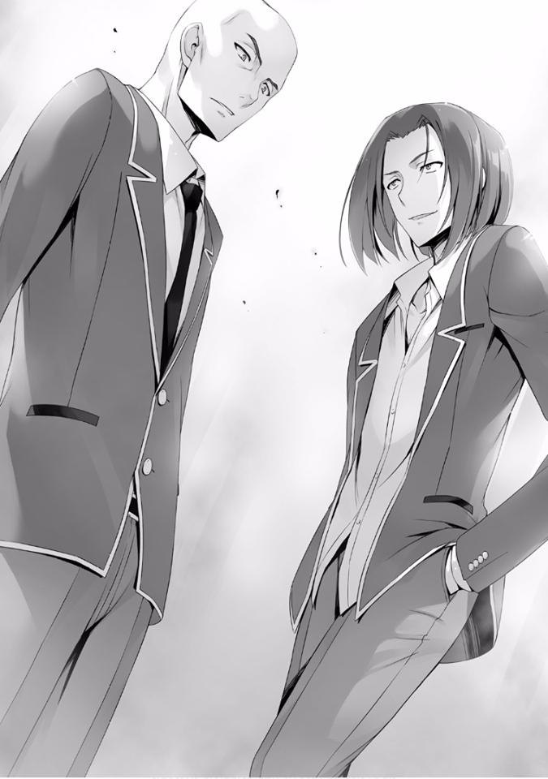
Pensé que decir algo así a un idiota como Ryuuen sería ineficaz. Detrás de él, sus tres lacayos obedientemente asienten con la cabeza ante las palabras de su líder.
— No olvidaré este insulto.
— ¿Huh? ¿Insulto? No recuerdo haber hecho algo así, ¿te importaría refrescar mi memoria?— Ryuuen se burla de Katsuragi.
— No importa, ya que estamos en el mismo grupo, deberíamos tener la oportunidad de hablar más tarde— Katsuragi termina la conversación viendo cómo la explicación de su grupo estaba a punto de comenzar.
— ¿Hmm? ¿Hirata-kun? ¿e incluso Ayanokouji-kun? ¿Qué están haciendo aquí?— Fue Kushida quien nos llamó cuando se acercó al grupo con una extraña expresión en su rostro.
— ¿Podría ser que Kushida-san también esté en el grupo de las 20:40?—
Hirata le pregunta.
— Sí. No entiendo lo que está pasando, pero me dijeron que viniera aquí a esta hora por correo... y wow... parece que se ha reunido un grupo increíble de personas— dice Kushida mientras caminaba saludando a los estudiantes reunidos aquí uno por uno.
— ¿Estás bien, Hirata? Parece que esto va a ser difícil— le pregunto a Hirata.
— Está bien, no me importa, no importa quién esté en mi grupo, tendré que hacer todo lo posible— Hirata como siempre respondió de manera muy positiva.
Kushida puede no conocer las circunstancias, pero Hirata es un tipo inteligente.
Como ya había recibido la explicación de este examen antes, al observar al grupo de personas reunidas aquí, pude entender más o menos lo que sucederá.
— Ummm... en cualquier caso, ¿parece que algo difícil está a punto de comenzar?— Kushida pregunta.
— Sí, parece que es mejor que te prepares para ello— le digo.
— Ajaja... como Hiratakun dijo, también tendré que hacer todo lo posible.
Además, nunca tuve la oportunidad de hablar mucho con Katsuragi-kun o Ryuuen-kun, me gustaría ser amiga de ellos dos también— Kushida dice hacia Katsuragi y Ryuuen.
— No voy a quedarme aquí por esta estúpida conversación, seguiré adelante.
Ya casi es hora— Horikita simplemente negó con la cabeza y nos dio la espalda, pero no antes de mirar fríamente a Ryuuen y su grupo.
Me gustaría felicitar a Horikita por esto. Las personas con voluntad débil tienden a bajar la cabeza y congraciarse con el grupo y tratarse a sí mismos como el más bajo en la jerarquía. Horikita, por otro lado, sin perder un segundo, fríamente los rechazó a todos y se mantuvo como siempre.
— Parece que ni siquiera debería haberme molestado en preocuparme—
murmuré.
Por supuesto, no estoy seguro de cuánto tiempo puede mantener esa actitud con los miembros de su grupo, pero no debería ser demasiado. Esa es mi intuición
— Entonces, buena suerte— lancé un simpático deseo de buena suerte en dirección de Hirata y decidí abandonar la escena.
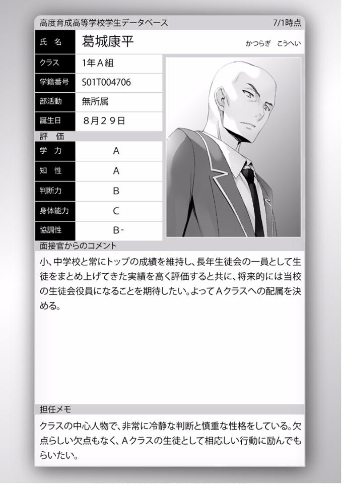
Una gran variedad de pensamientos
PARTE 1
Hora del desayuno. Me aseguré de evitar el buffet popular entre los estudiantes y regresé a la cubierta del barco. En la terraza hay una cafetería llamada “Blue Ocean” donde casi no hay estudiantes. Elegí sentarme allí en una mesa vacía a la sombra y llamé a la camarera. La hora actual es 07:55 AM. Un minuto antes de la hora señalada para la reunión, la persona que estaba esperando apareció ante mí con una expresión vacía.
— Estás aquí temprano.
Era mi compañera de la Clase D, Horikita Suzune. Ella se sienta a mi lado y es una de las pocas personas a las que podría llamar amiga en esta escuela. Y
también es una existencia muy problemática que sabe un poco sobre mis verdaderas capacidades. Ella se sentó en el asiento frente a mí.
— Esperé durante una hora— me quejé con ella. Por supuesto, solo estaba tratando de molestarla un poco.
— No me importa, ya que llegué a la hora acordada, incluso si me esperaste 10 horas, no podría importarme menos.
De acuerdo. Supongo que no puedo molestarla así, solo terminará lastimándome.
— ... ¿No quieres pedir nada?— Pregunto.
— No. No hay necesidad de eso. Continuemos nuestra plática de ayer.
Horikita, a quien no le gusta la charla ociosa, quería ir directo al grano y parecía querer informarme de lo que sucedió ayer. Lo único que me dijo de antemano fue la ubicación de esta reunión.
— Entonces, ¿los estudiantes llamados por la escuela forman un grupo?— le pregunto.
— Sí. Justo como dijiste, 12 grupos con 4 posibles resultados y el “objetivo”
se nos comunicará hoy por correo a las 8:00 de la mañana. Si hay
pequeñas diferencias, supongo que podrías achacarlo a la diferencia entre los profesores— me dijo.
— ¿Quiénes son los miembros de tu grupo y cuántos hay?— Rápidamente le pregunto.
Conocí a algunos de los estudiantes de ayer, pero no me molesté en decirle eso.
— Realmente fue bastante sorprendente, casi como si fuera a propósito y no solo una coincidencia— me dice Horikita.
Después de decirme eso, Horikita me entrega un trozo de papel. Parece que memorizó los nombres de los miembros de su grupo y los escribió en una hoja de papel para mostrármela. El nombre de su grupo es (Dragón) y debajo estaban los nombres de los miembros de su grupo.
Clase A: Katsuragi Kohei, Nishikawa Ryouko, Shita Shinji, Koharu Yano.
Clase B: Ando Sayo, Kanzaki Ryuuji, Tsukabe Hitomi.
Clase C: Oda Takumi, Suzuki Hidetoshi, Sonoda Masashi, Ryuuen Kakeru.
Clase D: Kushida Kikyou, Hirata Yousuke, Horikita Suzune.
En primer lugar, parece que Hirata y Kushida fueron los elegidos de la Clase D
para este grupo. Dos estudiantes con honores para representar a nuestra clase.
Dejando de lado a la normalmente solitaria Horikita, juntar a estos dos en el mismo equipo probablemente formaría la combinación más fuerte que la Clase D
tiene que ofrecer actualmente. Esperaba que otra persona estuviera en su grupo como en mi caso pero parecía no ser esa la situación. Kouenji tiene un poder abrumador, pero incluso si se le agregara al grupo, dudo que sea útil.
Honestamente, no estoy seguro de en qué grupo fue puesto o si incluso se preocupó lo suficiente como para ir a la reunión.
— Ya veo... rememorando, supongo que esta combinación era inevitable—
murmuré.
Incluso si hago una lista de los nombres que actualmente conozco, serían Katsuragi de la Clase A, Kanzaki de la Clase B y Ryuuen de la Clase C. Estos son grandes nombres que representan sus clases. Es casi como un equipo de ensueño en términos de fútbol.
— Pero también hay algo antinatural aquí. Si la intención es reunir a los grandes nombres en un grupo, siento que no es natural que Ichinose esté en nuestro grupo (Conejo) y no en el grupo (Dragón).
— Estás preocupado por Ichinose-san en tu grupo, ¿verdad? En este momento, solo su clase sabe lo excelente que es realmente. No siempre significa que la cara pública de la clase sea la líder— me dice Horikita.
— ¿Te estás refiriendo a ti?— le pregunto. Pero sí creo que Horikita tiene un punto. Todavía no sabemos de lo que Ichinose es realmente capaz.
También puede ser que su habilidad académica sea sorprendentemente baja.
— De esto puedo entender un poco cómo nos han dividido en 12 grupos.
Ayanokouji-kun y Karuizawa-san son muy similares ¿no es cierto? En términos de calificaciones. Quizás nos están agrupando en términos de nuestros puntos actuales. Pero la única falla en esta teoría es que Yukimura-kun también está entre los que tienen mejores calificaciones y lo mismo ocurre con Kouenji-kun— Horikita se fue apagando.
Parece que Horikita estaba tratando de sacar una hipótesis para la agrupación revisando los resultados de los parciales y del examen final para encontrar una razón para la división específica de estudiantes.
— Pero tienes un punto, Sotomura y yo tenemos calificaciones similares...
luego están Hirata y tú.
Por otro lado, si estuviéramos agrupados basándose únicamente en nuestras calificaciones, Kouenji debería estar en la parte superior. Naturalmente, no tengo dudas de que las calificaciones se toman en consideración, aunque también debe haber algún factor desconocido que desempeñe un papel en cómo se forman los grupos. Si es posible, me gustaría ver las listas de otro grupo para determinar esto.
— En cualquier caso, esto es un problema, liderar efectivamente a este grupo y superar el examen.
Por supuesto, era inevitable en el momento en que todas estas personas con excelentes habilidades se reunieron en un solo grupo. Y luego está el hecho de que la compatibilidad de Horikita con Ryuuen es como fuego y agua. Horikita
probablemente no lo acepte aunque le diga esto, así que elegí callarme. Sin embargo, por el contrario, creo que Horikita podrá trabajar eficientemente con un tipo de persona sencilla como Katsuragi. Su forma de pensar, de que la persona más inteligente se lleva todo, significa que su compatibilidad es alta.
— Ya es hora, me pregunto si realmente llegará el correo.
Una vez que el reloj llegó a las 8:00 AM, nuestros teléfonos vibraron a la vez.
Inmediatamente los dos confirmamos la llegada del correo. En el momento en que terminé de leer el contenido de mi correo, Horikita acercó su teléfono mostrándome el suyo, yo hago lo mismo para que verifiquemos los detalles de nuestros correos y compararlo con el del otro. Decía lo siguiente:
“Después de un período de consideración exhaustiva, no ha sido elegido como el “objetivo”. Por favor, actúen juntos como uno solo y desafíen el examen de esa manera. El examen en sí comenzará a partir de la 1:00 PM de hoy. El examen se llevará a cabo durante tres días a partir de este momento. Si pertenece al grupo (Dragón), suba inmediatamente a la sala señalada como tal en el segundo piso”.
El correo que nos llegó a Horikita y a mí eran “casi iguales”. Excepto por la diferencia en los nombres de los grupos, las otras palabras en el correo eran exactamente las mismas.
— Supongo que si hubiéramos sido elegidos como el “objetivo” el correo sería un poco diferente, informándonos de ese hecho.
— Parece que ninguno de nosotros ha sido elegido como el “objetivo” de nuestros grupos. No sé si estar muy contenta o muy triste.
— Si eres el “objetivo”, dependiendo de tus elecciones personales, podrías guiar a tu grupo a cualquiera de los cuatro resultados posibles— dije.
En otras palabras, ser el estudiante “objetivo” en este examen le da a dicho estudiante una ventaja abrumadora. Si puede mantener una gran cara de póquer, fácilmente podría obtener al menos 500,000 puntos privados.
— Sin embargo, no me gusta. Es casi como si me dijeran que no califico para ser el estudiante “objetivo”— me dice Horikita.
Incluso después de haber sido incluida en un equipo de ensueño como lo es su grupo, Horikita todavía piensa que es la mejor. Supongo que es algo que se espera de ella.
— En este examen, hay una enorme diferencia entre el alumno seleccionado como el “objetivo” y los no seleccionados, ya que todos los demás estudiantes deben esforzarse por descubrir la identidad del “objetivo” y siempre existe la posibilidad de que la diferencia de puntos entre las clases puede cerrarse después del examen— dice Horikita.
Está bien. Por supuesto, incluso si la Clase D falla, no llegaremos a tener puntos negativos. Pero la ligera ventaja que obtuvimos después de la prueba de la isla deshabitada puede reducirse o desaparecer por completo, dependiendo de nuestro rendimiento aquí. También comienzo a formar en mi interior una estrategia para lidiar con este examen. Teniendo en cuenta los miembros de mi grupo y el mecanismo por el cual opera el examen, el objetivo al que debo aspirar se vuelve claro.
— No sé cómo actuarán los estudiantes cuyos nombres yo ni siquiera conozco, tendré que interactuar directamente con ellos para eso. Pero he pensado en una forma de deshacerme de ellos si es necesario— admito esto a Horikita. Pero obviamente no es una estrategia que pueda ejecutarse en el acto. Primero debe configurarse y el tiempo debe ser perfecto.
Pero es posible.
— Estaré esperando tus resultados— Horikita finalmente me dice.
— Yo también. Estoy esperando ver en qué dirección dirigirás a tu grupo— le respondo de la misma manera.
Aun así, no podía evitar la incómoda sensación que tenía. La selección del
“objetivo” no es aleatoria, las palabras de Mashima-sensei ayer solo fortalecieron mi sensación de eso, hay cierta diferencia entre los que se seleccionaban y los que no.
— En cualquier caso, te preguntaré esto ahora, pero ¿en quién de nuestro grupo desconfías en este momento? A juzgar por la situación, la mayoría de las otras clases ya deberían haber obtenido la misma información que nosotros— me dice Horikita.
Horikita ha estado actuando de forma extraña desde que recibió esta información, pero supongo que teniendo en cuenta quiénes son los miembros de su grupo no se puede evitar.
— Ryuuen—admito.
— Qué respuesta tan rápida.
— Porque no hay nadie tan sospechoso como él— respondo.
— ¿Qué pasa con Katsuragi-kun? Es por su culpa que la Clase A pudo asegurar el sitio más deseado en la prueba de la isla. Eso también es algo notable. ¿No crees que deberíamos sospechar de él?— Horikita pregunta.
Por supuesto que es un logro excelente para un estudiante de 1er año. Entonces, si me preguntan quién es el alumno con mayor excelencia del grupo, diría que Katsuragi. Por otro lado, el más sospechoso sin duda sería Ryuuen.
Durante la prueba en la isla, sin lugar a dudas, la Clase D ganó. Sin embargo, Ryuuen también logró obtener una ligera victoria en cierto sentido. Pero Ryuuen, por ese hecho, se me hizo fácil ver a través de él. Pero pensando al revés, eso también significa que Ryuuen ahora podría desconfiar de la Clase D. Me gustaría evitar revelarme a toda costa. Él no puede saber que fue gracias a mí que Horikita logró todos esos éxitos en la prueba de la isla.
— Si bien la identidad del “objetivo” es algo de lo que preocuparse después de leer el correo que acaba de llegar, estaba pensando en algo. ¿No es extraño el correo que nos envía el colegio? Y el estricto...— antes de que Horikita pudiera terminar la frase. La silencié rápidamente al poner mi dedo índice frente a mis labios y hacer un gesto de silencio. Hablando del rey de Roma, una sombra apareció ante nosotros.
— Buen clima, ¿verdad, Suzune? ¿Qué vas a desayunar?— Dos personas se nos acercaron mientras sonreían. Era Ryuuen de la Clase C y también había otra persona con él.
— No digas mi nombre tan informalmente, Ryuuen-kun. Y tú, es increíble que te atrevas a mostrar tu cara frente a nosotros después de lo que hiciste, Ibuki-san— Horikita arremete contra Ryuuen y la chica a su lado, Ibuki Mio que también está en mi grupo (Conejo).
Ibuki pareció ser ligeramente provocada por esto, pero simplemente apretó su labio inferior sin decir nada. Ryuuen, por otro lado, sonreía como si estuviera disfrutando de la situación. En la prueba de la isla deshabitada, Ibuki se infiltró en nuestra clase como espía. Finalmente, Horikita la descubrió y tuvieron una pelea en la que Horikita recibió un golpe directo. Horikita insistió en que perdió porque estaba enferma durante el examen, aunque no me importa cuál de ellas sea más fuerte. Además, Ryuuen ya ordenaba a Ibuki que permaneciera en silencio mientras nos daba una mirada condescendiente.
— Creo que el correo ya ha llegado, así que ¿cómo estuvo? ¿Te convertiste en el “objetivo”?— Preguntó Ryuuen.
— No hay forma de que te lo diga, o quizás tú nos lo digas— responde Horikita.
— Si eso es lo que deseas— dijo Ryuuen mientras se sentaba en un asiento vacío cercano— Pero antes de eso, por favor, dime, ¿cómo te las arreglaste para lograr ese resultado en la prueba de la isla?
— No tengo nada que decirte— Horikita responde bruscamente.
Horikita estaba completamente calmada cuando respondió, no podía detectar temblor en su voz. De hecho, ella posee una gran habilidad para la actuación.
Pero Ryuuen no pareció ser provocado en absoluto por su respuesta.
— No me importa de cualquier manera, pero de acuerdo con su informe, no hiciste mucho durante la prueba en la isla para lograr que tu clase consiguiera esos resultados— dice Ryuuen mientras señala a Ibuki.
— No soy tan idiota como para que alguien como ella pueda descifrarme.
Solo estaba recuperando fuerzas a causa de mi fiebre.
En respuesta a esa provocación, Ibuki inmediatamente se levantó y declaró.
— Entonces tengamos una revancha aquí y ahora, vamos a pelear— le dijo a Horikita.
Sin embargo, Horikita no hizo caso a ese desafío y simplemente dijo:
— Desgraciadamente, tendré que rechazarlo, ya que violaría las normas de la escuela para este examen. Sin embargo, si usas la violencia conmigo, informaré de ello a la escuela. Entonces, Haz lo que quieras.
Ibuki caminó enojada hacia Horikita después de eso, pero se detuvo sin poder ponerle una mano encima. Usar la violencia aquí sin lugar a dudas resultará en sanciones por parte de la escuela. Y lo más importante, Ibuki, como una de las subordinadas de Ryuuen, no tenía derecho a ejercer sus deseos personales. La talentosa Ibuki que odia a Ryuuen. Esa fue la razón por la que fue elegida por Ryuuen como la enviada a la Clase D para espiar en la prueba anterior.
— Ya que todos estamos aquí, tomemos un café. Parece ser un buen momento para beber.
Sorprendentemente, Horikita se contuvo y pidió a la camarera su café de la mañana. También pedí el mismo café. Sin embargo, Ryuuen parecía no dar señales de irse y quería continuar la conversación mientras observaba a Horikita en silencio. Entonces finalmente le dijo a Horikita:
— Por lo que parece, ayer, Katsuragi estaba actuando con cautela hacia ti.
— No es sorprendente. Después de todo, él nunca hubiera pensado que alguien de la Clase D como yo, sería capaz de esas hazañas. ¿Nos es por eso que ustedes están aquí? Todos están en guardia contra mí,
¿verdad?— Horikita responde a Ryuuen.
— Kuku. Ni siquiera voy a negarlo. De hecho, estoy aquí para confirmar tu capacidad por mí mismo— dice Ryuuen mientras Horikita toma un sorbo de su café— Pero también debes saber que mis métodos son diferentes de los de Katsuragi, además de que una chica seria como tú definitivamente no sería capaz de formular una estrategia como la de la prueba de la Isla.
— No me importa, pero ¿cómo sabes cuál fue mi estrategia durante la prueba en la isla? Después de todo, lo que se anunció solo fueron los resultados—
le dice Horikita.
Hacia una calmada Horikita, Ryuuen solo le sonrió.
Parecía estar diciendo “Katsuragi no conoce el método que usaste”, lo que podría significar que sabe cómo nuestros alumnos lograron los resultados en la prueba en la isla.
— Entonces, me pregunto si puedes explicar cómo lo hicimos— Horikita pregunta.
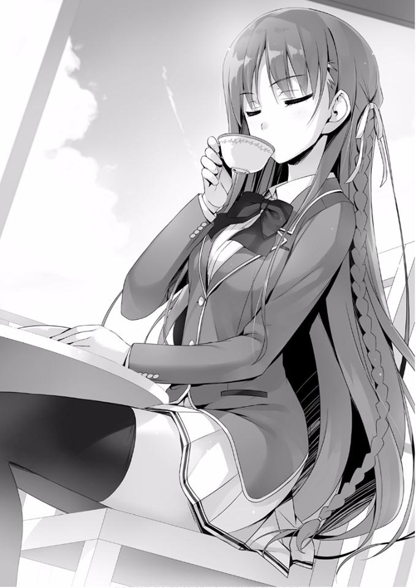
Ryuuen simplemente se rió antes de decir:
— Al final del examen, cuando se escribieron los nombres de los líderes, la única razón por la que respondimos mal fue porque el líder había sido cambiado por otra persona antes del final del examen y ya no eras tú.
— Eso no es nada impresionante, cualquiera podría imaginar algo tan simple como eso con pensarlo un poco, incluso Katsuragi, del que te burlaste—
responde Horikita.
— No, no. Cree que fuiste tú quien lo planeó todo. Pero desde mi punto de vista, incluso tú no hubieras predicho que serías la líder o que tendrías que retirarte antes de que terminara el examen— Ryuuen le dice.
— Es solo una cuestión de seguridad prepararse para los obstáculos más básicos. Tomé todo en cuenta en el momento en que Ibuki-san se infiltró en nuestra clase. No hay nada innovador en lo que acabas de decir—
Horikita responde a Ryuuen.
— De todos modos, lo importante es el nuevo líder de la prueba de la isla, el que cambió contigo al final. Es el que mueve tus hilos detrás de escena—
dijo Ryuuen mientras miraba directamente a Horikita y también silenciosamente observándome mientras estaba justo detrás de Horikita.
No sé qué tan serio fue sobre esa premisa, pero si me descubre aquí, definitivamente me atacará de inmediato.
— No sé de lo que estás hablando, apenas tengo amigos con los que planear algo. De todos modos, el único que puedo considerar de alguna manera cercano es Ayanokouji-kun, pero él solo me ha estado retrasando, y de todos modos no es de los que le guste cooperar— Al llamar la atención sobre mi presencia, Horikita hizo que me viera como alguien irrelevante para el gran esquema de cosas— Quizás él es el que tira de mis hilos— le dice Horikita a Ryuuen.
— Ya veo— Ryuuen me mira gentilmente una vez antes de apartar los ojos.
Parece que la actuación que hicimos funcionó y Ryuuen ya no me prestó ninguna atención. Creyendo que ha entendido mi posición en lo que respecta a la capacidad académica, la capacidad física y las habilidades de comunicación de la actuación de Horikita. Después de todo, dichos parámetros se pueden usar
fácilmente para evaluar el nivel de amenaza de una persona en la mayoría de los casos. Aparentemente las cosas no salieron según lo planeado en esta reunión, pero Ryuuen todavía nos sonrió sin vergüenza ni enojo en sus expresiones.
— Es una lástima, cuando pensé que finalmente había encontrado a alguien que planea de la manera que me gusta. Pero es una lástima que el que tira de los hilos de Suzune hiciera su movimiento demasiado pronto. La carta de triunfo que usaron en la prueba de la isla debería haberla guardado para este examen, pero terminaron mostrando su mano demasiado temprano en el juego. Suzune, si te encuentras con el que tira de tus hilos más tarde, por favor dale este mensaje por mi— Ryuuen finalmente le dijo a Horikita.
— Gracias por el consejo— Horikita fríamente le dijo a Ryuuen.
— No hay de qué.
— Realmente crees que alguien está tirando de mis hilos, ¿no?— Horikita le pregunta.
Ryuuen no respondió su pregunta. No debe tener dudas sobre su convicción a pesar de que no había ninguna prueba o confirmación por parte de Horikita.
Después de todo, el hombre llamado Ryuuen cree en sí mismo por encima de todo y no se parece al tipo de persona que acepte el consejo de otro. Parecía haber tomado esta falla con calma y parecía divertirse al conversar con Horikita.
De repente, Ryuuen sacó su teléfono sin aviso y antes de que nadie pudiera reaccionar, rápidamente tomó una foto de Horikita sin su permiso.
— ¡No me tomes una foto!— Horikita le dice bruscamente.
— No digas cosas así, te diré algo bueno— Ryuuen dice mientras miraba la foto de Horikita que había en su teléfono— Hay otra persona en la Clase D
que está maquinando aparte de ti— Ryuuen le da una pista a Horikita.
— Eso es algo bueno, en lugar de pedirme todo, deberían ser capaces de tomar sus propias decisiones— Horikita devuelve el ataque.
— En cualquier caso, me alegro de poder hablar contigo, Suzune. Recuerda, esto es un juego. Definitivamente encontraré al que se mueve en las sombras. Todo es un objetivo para mí— le dice Ryuuen.
— Solo déjame preguntar una última cosa. Entiendo que seas cauteloso conmigo, pero ¿por qué obsesionarte tanto conmigo? ¿No hay otros que te importen? Como Ichinose-san en la Clase B o Katsuragi-kun en la Clase A y según los rumores esta persona conocida como Sakayanagi. Debería haber tipos por encima de la Clase C por los que normalmente te preocupes. Dijiste que me dirías algo bueno, así que respóndeme al menos eso— Horikita le pregunta a Ryuuen por qué se centró así mucho en la Clase D.
— Es porque ya sé más o menos sus capacidades y ninguno de ellos es lo suficientemente capaz como para ser mis enemigos. Si quisiera aplastarlos, podría aplastarlos cuando quiera— dijo Ryuuen con valentía.
— ¿Qué tal la rumorada Sakayanagi?— La persona que hizo esa pregunta no era Horikita sino Ibuki.
Parece que Ibuki quería confirmar este hecho con Ryuuen. Y Ryuuen, quien habló sin problemas hasta ahora, esperó un rato antes de contestar.
— Voy a guardar a esa mujer para el postre. Sería un desperdicio comerme a Sakayanagi ahora— dijo por fin. Ryuuen se levantó y, junto con Ibuki, dejó nuestra mesa.
— ¿Quizás estás insatisfecha?— Le pregunté a Horikita una vez que Ryuuen se había ido.
— No, no tengo esos sentimientos. Simplemente me disgustó la forma en que manejaste la situación. En primer lugar, en nuestro camino hacia la Clase A, se suponía que yo llamaría la atención y no tú— dijo en respuesta.
— Ese puede ser el caso, pero este tipo es Ryuuen. Es impredecible.
Pensé para mis adentros, a pesar de lo que nos mostró antes, Ryuuen ya sospechaba algo en su mente. De eso casi no hay duda. Yo, por supuesto, no sé lo que Ryuuen está pensando. Pero el momento en el que apareció fue bastante peligroso.
— Puede ser nos haya estado espiando desde el principio, pero el momento en que apareció fue demasiado bueno.
Quizás Ibuki está involucrada en esto. El solo hecho de que Ryuuen la haya traído a la reunión con nosotros debería significar que tenemos que suponer que también intentará recabar información sobre nosotros en nuestro grupo.
— Dudo que alguien realmente sospeche que eres el que está trabajando detrás de escena. La reputación que has acumulado a lo largo del semestre como una persona “común” será muy difícil de sacudir— me dice Horikita.
No estoy seguro de si tomar eso como un cumplido o un insulto, pero es cierto que no importa cuánto me investiguen, es probable que no encuentren nada especial. Normalmente, ninguna persona en su sano juicio se rebajaría deliberadamente a tal mediocridad de la forma en que lo hago, así que estaré más o menos a salvo del escrutinio de Ryuuen.
Sin embargo, como estoy cerca de Horikita, debería ponerme en la lista de vigilancia. Además, el hecho de que Ibuki esté en el mismo grupo que yo significa que estaré bajo cierta medida de vigilancia. Una vez que vi a los estudiantes comenzar a salir a cubierta, me levanté de mi asiento.
— La discusión ha terminado por ahora, ¿verdad? En ese caso, voy a volver a mi habitación para dormir— le dije a Horikita.
— Sí, por ahora no queda nada que discutir. Todo lo que tenemos que hacer es actuar en nuestros grupos. Buen trabajo por hoy. Asegúrate de informar si ocurre algo— me dice Horikita cuando me voy.
Al menos he visto que cuando se enfrenta a la adversidad, Horikita ha demostrado su disposición a defenderse. Pero independientemente de la compatibilidad personal, Hirata y Kushida deberían poder controlarla. Supongo que volveré a mi habitación y dormiré hasta la tarde. A pesar de que el examen ha comenzado oficialmente, de todos modos no hay nada que hacer hasta entonces.
PARTE 2
— Perdón por hacerlos esperar. Geppu, geppu. Si comes tres comidas pesadas para el almuerzo, naturalmente estarás lleno. Pensé en ponerme a dieta, pero parece que fracasé— Sotomura se acercó a mí mientras se frotaba la barriga, que se había hinchado de toda la comida que había ingerido antes.
Transmitía una imagen completamente diferente de alguien que afirmaba querer seguir una dieta. Llegó a donde Yukimura y yo estábamos esperando.
— Es problemático que el examen haya comenzado, apenas comí. ¿Es eso una bandera para “en este momento no puedo usar mi fuerza completa”?
— ...He estado deseando decirlo por un tiempo, pero ¿no puedes dejar esa extraña forma de hablar?— Yukimura responde a Sotomura.
Por supuesto, desde la perspectiva de alguien que no entiende a Sotomura, sus palabras pueden parecer casi brujería. Pero solo tienes que acostumbrarte, supongo. Por el contrario, a veces hablar de una manera inusual como esa puede ser interesante.
Pero si hablo ahora, podría incurrir en la ira de Yukimura y le dejo continuar con su diatriba.
— Pofu~ ¿No te gusta mi forma de hablar? ¿Con qué estarías satisfecho entonces, Yukimura-dono?
— Solo habla normalmente— Yukimura responde a Sotomura.
— Ok, de ahora en adelante seré el más débil de los protagonistas fuertes.
Normalmente no tengo motivación para hacer nada, pero la verdad es que tengo un poder capaz de destruir el mundo, digno de nombrarme Cheat-kun. Como es la tendencia actual.
Yukimura, después de haber renunciado a convencer a Sotomura, simplemente comienza a caminar delante de nosotros. Como llegábamos un poco tarde, empezamos a caminar apresuradamente hacia nuestro destino.
— Ayanokouji, hay algo que deseo preguntarte, respóndeme—Está hablando en un tono acorde a un personaje de tipo protagonista.
— ¿Qué te gustaría preguntar?
— Me preguntaba cuál es tu tipo de dialecto favorito, ya que seguramente estarías feliz si una linda heroína hablase en ese dialecto— La forma en que lo dijo sonaba genial, pero el contenido del diálogo siempre era igual para él.
— No... no hay un dialecto particular que me guste— Como que nací y crecí en Tokio, no hay manera de que sepa acerca de dialectos.
— ¿Todavía no has tenido la oportunidad de experimentar el dialecto del
“moe”?— me pregunta.
¿Cuántos estudiantes de esta escuela creen que poseen el atributo de dicho dialecto? Podría simplemente terminarlo ahora, pero hasta que lleguemos a nuestra sala de reuniones designada, supongo que podría matar algo de tiempo hablando con él.
— ¿Tienes un dialecto favorito?— le pregunto.
— Por supuesto, te diré mi sistema de clasificación de dialectos. En tercer lugar tendría que ser el dialecto Kansai. Emite una impresión estricta pero cercana. El segundo lugar sería para el dialecto de la belleza en la nieve, el dialecto de Hokkaido. El uso del dialecto en el mundo 2D también está muy extendido, por lo que es el definitivo dialecto del “moe”.
Dije que quería matar el tiempo hablando con él, pero nada de esto tenía sentido para mí. Pero antes de que pudiera responder de alguna manera, Sotomura comenzó a silbar una extraña onomatopeya que sonaba “doururururururu”.
— El número uno en mi clasificación del dialecto debería ser el dialecto que de lolis a Oneesans usan de manera versátil, el dialecto Hakata. Se dice que es el dialecto definitivo con una gran variedad de discursos. Estos tres dialectos son mis mejores 3— Sotomura continúa.
Desafortunadamente, no pude entender lo que quería decirme, aunque me di cuenta de que era un apasionado del tema. Parecía que al menos había logrado matar el tiempo, ya que cuando terminamos la conversación, habíamos llegado frente a la sala de reuniones designada con el nombre de nuestro grupo (Conejo) escrito en una placa en el segundo piso. Como el examen ya estaba en marcha,
los estudiantes se apretujaban en el pasillo y me dieron una sensación de claustrofobia.
— La hora de jugar terminó ayer. De ahora en adelante, lucha por ti y por tu clase— Yukimura dirigió principalmente esas palabras a Sotomura, pero también asentí con la cabeza en señal de agradecimiento.
— Haaa... no importa cuántas veces lo mire, es un equipo lamentable el que tengo— Esa declaración vino de una de las chicas que entraron a la habitación, nos miraron y suspiraron.
Era una de las chicas bonitas de la Clase D (aunque un poco llamativa).
Karuizawa Kei. Incluyéndola, 11 personas estaban actualmente en nuestra habitación sentadas en sillas dispuestas en una formación circular. Por el número de sillas que aún quedan vacías, pensé que probablemente éramos los últimos en llegar. No podría identificarlos solo con la lista, pero había varios estudiantes además de Ichinose e Ibuki en la sala que reconocí. Había un estudiante de la clase A, que se acercó a mí durante la prueba de la isla para proponer una alianza para sabotear la clase D. Pero no reconozco a la mayoría de los otros estudiantes masculinos y femeninos en la sala. Parece que nosotros, que ayer éramos rivales, nos veríamos obligados a cooperar en este examen.
Naturalmente, no solo nuestra clase, sino que las otras también se sentían confundidas y torpes por este repentino arreglo. Optamos por sentarnos en las sillas, ya que permanecer de pie nos haría destacar aún más. Los estudiantes instintivamente se sentaron en grupos según las clases, pero Karuizawa e Ibuki se sentaron lejos del círculo de estudiantes como si estuvieran aisladas del resto.
— Hmm... ¿qué pasa?
— ¿Notaste algo, Ayanokouji?
— ...No, no es nada.
Pensé que Karuizawa enfrentaría a Ibuki en el momento en que la viera.
Después de todo, fue la Ibuki Mio en frente de nosotros quien fue responsable de robar su ropa interior en la prueba de la isla. Pensé que iría en busca de venganza de inmediato, pero tal vez Karuizawa es más madura de lo que esperaba, o quizá ya había terminado con su venganza. En cualquier caso, el hecho de que Karuizawa ni siquiera pareciera molesta no era natural. Pero antes
de que pudiera expresar esas preguntas, llegó un anuncio de los parlantes instalados en las habitaciones del barco.
— A partir de ahora, comenzaremos con la primera discusión grupal— Solo eso.
Un breve anuncio, como nadie en este grupo conformado por diferentes clases se conocen bien, no había nadie dispuesto a tomar la iniciativa y comenzar la discusión.
Y así, un aire incómodo se apoderó de la habitación. Luego, la chica llamada Ichinose Honami dio un paso adelante con una sonrisa brillante y después de confirmar que nadie más tomaría la iniciativa. Habló.
— Conozco a la mayoría de la gente aquí, pero supongo que de acuerdo con las instrucciones de la escuela, debemos presentarnos primero. Ya que también hay personas que quizás aún no se conozcan— habló con el grupo.
Definitivamente no es fácil ser el líder de un grupo como este, uno debe ser capaz de inspirar a los estudiantes, algunos de los cuales incluso podrían ser de clases contrarias, y unirlos a todos para aprobar el examen. Pero a Ichinose no pareció desagradarle, de hecho, parecía divertirse liderando el grupo. Algunos estudiantes de la Clase A no pudieron ocultar su sorpresa cuando inesperadamente tomó la iniciativa.
— No creo que haya necesidad de eso. La escuela lo pide como una formalidad. Solo los que quieran presentarse deben hacerlo— fue Machida quien le dijo a Ichinose.
— Si Machida-kun no desea hacerlo, entonces ciertamente no puedo forzarte.
Pero ¿sabes?, puede haber una grabadora escondida en algún lugar de esta sala. Si desobedecemos las instrucciones de la escuela, puede que no solo seas tú, sino todo el grupo el que sea castigado— Ichinose responde rápidamente a Machida. Básicamente, ser egoísta aquí puede costarle a todo el grupo. Poniéndolo así, incluso el tipo llamado Machida de la Clase A no puede evitar aceptar su razonamiento.
Luego comenzaron las presentaciones con ella misma. Pienso en el primer día de la preparatoria y en cómo eché a perder mi presentación. Pero cuando llegó mi turno de presentarme al grupo, terminó siendo la misma, aburrida y monótona presentación de ese día.
— Yaa~ho Ayanokouji-kun. Parece que estamos en el mismo grupo. Vamos a llevarnos bien.
Ichinose me llamó con tono amistoso y condescendiente mientras volvía a mi asiento. Una vez que las presentaciones de todos terminaron, Ichinose una vez más se acercó para hablar.
— Bueno, hemos hecho lo que la escuela nos indicó. ¿Cómo les gustaría continuar a partir de ahora? Si alguno de ustedes se opone a que yo sea el líder, ¿podrían decirme?— Ichinose habló en un tono como preguntando si alguien quisiera tomar el puesto de líder.
Por supuesto, decirlo de una manera como esa aseguró que nadie nunca le arrebatara el liderazgo. Puede haber estudiantes entre nosotros que no estén satisfechos con la forma en que Ichinose hace las cosas, pero temiendo la posibilidad de que la responsabilidad del liderazgo les sea impuesta, ninguno hablaría ahora.
— Dado que a nadie le gustaría tomar el puesto de líder, ¿puedo proceder?
En primer lugar, creo que deberíamos debatir aspectos del examen que algunos todavía no comprendemos del todo, o cualquier otra pregunta o inquietud que pueda haber al respecto. De otra manera, esta situación confusa continuará tal como está— dijo Ichinose al proponer el primer tema de discusión. No hubo resistencia del grupo a su sugerencia y no hubo manos o voces levantadas es su contra.
Cosas como esa pueden ocurrir cuando extraños se reúnen en grupo y el hecho de que pueda actuar sin temor a tal oposición es la característica de un verdadero líder. Ichinose puso sus manos en sus caderas y sonrió resueltamente.
— Me gustaría preguntarles a todos aquí algo y les pediré a todos que asuman que nadie es el “objetivo”. Me gustaría preguntar si todos aquí
quisieran trabajar juntos para aprobar este examen a través del resultado 1.
Si todos piensan que este es el mejor curso de acción o no— Ichinose nos pregunta.
— ¿Eh? ¿Qué quieres decir? ¿No es obvio?— Karuizawa fue la que respondió a su pregunta.
Ella actuaba como si entendiera todo, aunque lo más probable es que no, pero en una situación como esta, el primero que diga lo que piensa puede decidir su lugar en la jerarquía del grupo, ya sea superior o inferior. Yukimura, y una chica de la Clase C llamada Manabe también parecieron darse cuenta de esto, respondiendo de la misma manera como si estuvieran sincronizados con Karuizawa. Obviamente, si es posible, tiene sentido que todos aquí quieran el primer resultado.
Estando de acuerdo con la declaración de Ichinose, uno de los estudiantes varones de la clase B levantó las manos. Si mal no recuerdo, el nombre que dio durante su presentación fue Hamaguchi Tetsuya.
— Estoy de acuerdo con ella, por supuesto, cooperar entre nosotros como grupo es el curso de acción obvio— dijo. No fue una mala pregunta para comenzar la discusión, debo admitirlo.
Parece que algunos de los estudiantes aún no lo han notado, pero al hacer una pregunta aparentemente casual y obvia como esta, es posible discernir quién no es el “objetivo” mientras se fomenta una actitud positiva entre los miembros del grupo. Si uno juega correctamente, en esta etapa incluso puedes ser capaz de reducir la lista de sospechosos del “objetivo”. Todavía puede ser difícil discernir entre negro o blanco con certeza con esta sola pregunta. Ichinose, la que hizo la pregunta. Karuizawa, quien le respondió primero. Entonces Yukimura y Manabe que siguieron la respuesta de Karuizawa. Y Hamaguchi de la Clase B. No sería sorprendente si el “objetivo” estuviera entre ellos y audazmente respondieran a la pregunta inmediatamente.
Me uní a ellos para no arruinar la atmósfera que tenían.
— Somos un grupo y nuestros puntos privados son bajos, me gustaría cooperar si es posible. ¿Qué hay contigo Sotomura?— Pregunto.
Sotomura, cuyo estómago parece estar adolorido por comer demasiado, se frotaba el vientre cuando lo llamé, causando que sus hombros se sobresaltaran.
— Por supuesto, también cooperaré ya que obtengo puntos por hacerlo—
responde.
Parece que Sotomura todavía está tratando de mantener su actuación genial y misteriosa. Y observándonos a todos, estaban los estudiantes de Clase A que consistían solo en estudiantes varones.
Parecen observarnos con calma para ver qué dirección tomará la discusión del grupo.
— Ichinose, esa pregunta es injusta ¿no? Si no eres el “objetivo”, al decir eso, logras reunir al grupo entero contra él, y no hay nadie que disienta descaradamente contra ti y se declare como traidor después de lo que dijiste. Es casi como si estuvieras declarando al “objetivo” como el malvado por no hablar, creo que es una pregunta muy inapropiada la que nos has hecho— Fue Machida quien le dijo eso a Ichinose con un tono severo en su voz.
Él parece ser muy diferente de los estudiantes de Clase D y Clase C que simplemente lo aceptaron y estuvieron de acuerdo con Ichinose. Casi parecía como si se tratara de un interrogatorio y estaba mirando y criticando las palabras de Ichinose. Hamaguchi, habiendo escuchado la queja de Machida, le contestó con calma
— ¿No es una pregunta razonable para este tipo de examen? Ichinose-san no usó ningún tipo de amenaza para obligarnos a cooperar o divulgar información, si no quieres, todo lo que tienes que hacer es permanecer en silencio— Hamaguchi rápidamente detiene las críticas de clase A hacia Ichinose.
Parece que una guerra civil ya está surgiendo entre el grupo, Machida no estaba sorprendido en absoluto por la represalia de Hamaguchi, casi como si ya hubiera esperado que esto sucediera.
— De hecho, tenemos derecho a permanecer en silencio. Y, como tal, eso es lo que haremos el resto de la Clase A y yo, guardaremos silencio—
Machida rechazó sin rodeos la oferta de Ichinose de cooperar.
Y los estudiantes restantes de la Clase A siguen su ejemplo. Y los alumnos restantes que aún no respondieron también optaron por guardar silencio.
— ¿Tal vez fui demasiado atrevida con esa pregunta?— En respuesta a este inesperado rechazo, Ichinose sonrió amargamente.
— No, Ichinose-san. Tu pregunta fue perfectamente razonable. Pero supongo que su cautela es más fuerte de lo que esperábamos. Dime, entonces, Machida-kun. ¿Qué preguntas considerarías apropiadas? Podríamos hablar sobre nuestras comidas favoritas y pasatiempos, pero dudo que el examen cubra algo por el estilo. Eso significa que no tienes nada que ofrecer al grupo excepto tu silencio— Hamaguchi le dice a Machida.
— ¿Nada más que ofrecer? No hay algo como eso— Machida intenta responder.
— Yo mismo no sé lo que Ichinose-san pretendía con esa pregunta, pero en este examen, sé que discutir las cosas entre los estudiantes es vital. En el caso de que sigas negándote y guarden silencio, no tendremos más remedio que continuar nuestra discusión sin la Clase A. Por lo menos, podrías ayudarnos a decidir con qué tema deberíamos comenzar—
Hamaguchi responde a Machida.
Hamaguchi tiene razón, es exactamente como dijo, manteniendo silencio no nos acercaremos más a encontrar al “objetivo” o a superar el examen. Machida debería saber esto también, a pesar de que cruza los brazos y guarda silencio.
Al ver la situación como una puerta de un castillo cerrada, Ichinose intenta abrirse paso.
— En ese caso, aunque con dudas, supongo que tendremos que decidir el líder con voto mayoritario. Indudablemente habrá sospechas dirigidas a aquellos que se niegan a responder la pregunta y podemos nombrar al
“objetivo” más adelante. ¿Todos estarían bien con eso?— Con esas palabras Ichinose rompió el castillo conocido como Clase A.
Horikita también piensa de manera similar a Ichinose, pero la diferencia entre ellos es que Ichinose es capaz de poner fácilmente de su lado a las personas que la rodean. Pelear en una batalla mientras recibes la aprobación de las personas a tu alrededor la hace una presencia muy poderosa en esta situación.
Francamente, Ichinose ya tiene el voto de la mayoría en sus manos desde el momento en que tomó la iniciativa en la discusión. Por lo que pude ver, nadie más en la escuela es capaz de hacer lo mismo que ella. Katsuragi y Ryuuen no podrían hacer lo que ella hizo. Hirata y Kushida tampoco podrían hacerlo.
— ...¿Me estás amenazando?
— No me malinterpreten, solo queremos discutir las cosas con todos ustedes.
Pueden decidir por sí mismos lo que desean discutir y lo que no desean discutir. Pero me gustaría que las personas participen en esta etapa, ya que es una condición requerida en este examen— Machida parece no comprender sus palabras y comienza a murmurar de forma extraña.
— Este examen, ¿puede realmente resolverse simplemente hablando?
¿Realmente crees que descubriremos el “objetivo” simplemente hablando entre nosotros? ¿O vas a bajar tu cabeza y rogar para que se revele?—
Machida finalmente le dice a Ichinose.
Ya veo, parece que el enfoque de Clase A para este examen ya ha sido decidido, pero ese enfoque no parece ser de Machida. Creo que estoy empezando a ver al hombre actuando detrás de Machida.
— Entonces, ¿hay otra manera?— Ichinose le pregunta a Machida, teniendo plena confianza en su punto de vista. Pero, por supuesto, esto es algo que la Clase A ya esperaba que ella pidiera.
— ... Sí. Hay una manera de superar clara y definitivamente este examen—
Uno de los estudiantes de la Clase A habló de repente. Tanto Ichinose como Hamaguchi no pudieron ocultar su sorpresa ante esto.
— ...¿Podrías explicarnos su estrategia?— ella les pregunta.
— Claro. Somos un “grupo” después de todo, así que es natural compartir esa información— Machida, no, a toda la Clase A se le ocurrió una estrategia extremadamente simple— La estrategia que se nos ocurrió fue...
no hablar en absoluto desde el inicio del examen hasta su finalización—
dijo por fin.
Lo dijo lo suficientemente fuerte para que todos escucharan, sentados al margen de la discusión, para poder escuchar también. Parecía que tanto Karuizawa como Sotomura también entendían lo que él quería decir.
— Es una propuesta bastante única, pero ¿cómo se propone que vamos a pasar el examen sin ninguna discusión en absoluto? ¿O estás sugiriendo que dejemos la identidad del “objetivo” permanezca completamente oculta hasta el final?— En lugar de Ichinose, fue Hamaguchi quien intervino y habló.
— De hecho, el verdadero atajo para pasar este examen lo más eficientemente posible es hacerlo sin hablarnos en absoluto— Machida dijo en respuesta.
— No puedo creerlo. Esto está empezando a hacernos pensar que el estudiante “objetivo” se encuentra entre los estudiantes de la Clase A y esta medida se está tomando para ayudar a proteger su identidad mientras comparten información solo entre sus compañeros de clase.
Naturalmente, si el "objetivo" está en su clase, no es necesario hablar con nadie ni participar en ninguna discusión. No se puede evitar que Hamaguchi sospeche de ellos después de eso. No solo Hamaguchi, sino que tampoco se puede evitar si todos los demás sospechan de ellos.
— No, no importa en qué clase esté el “objetivo”, no afectará el resultado. Si simplemente no hablamos entre nosotros, podemos ganar, esa es la estrategia que Katsuragi-san ideó para nosotros.
— ¿Katsuragi-kun?... Ya veo— Ichinose pareció entender también en el momento en que escuchó que se mencionaba el nombre de Katsuragi.
Machida luego volteó hacia Yukimura, quien no pareció entender su explicación, y comenzó a detallar su estrategia.
— Solo puede haber cuatro posibles resultados en este examen. Creo que ya les han informado sobre todos. ¿Cuál crees que es el resultado que todos deberíamos evitar en este examen?— Machida de repente se voltea hacia Karuizawa y le hace la pregunta.
— Ehhh... ¿el resultado donde alguien descubre la identidad del “objetivo” y traiciona al grupo?— ella responde.
— Exactamente, en el momento en que surja un traidor, perdemos como grupo. Si el traidor responde correcta o incorrectamente, ambos caminos llevan a una pérdida. Pero, pensando al revés, ¿qué pasa con los otros posibles resultados?— Machida mira hacia Yukimura en busca de una respuesta.
— ¿Los otros posibles resultados? ¿Un resultado donde no se produce un resultado negativo?
— De hecho, no hay desventajas en ninguno de los dos resultados posibles restantes. Los puntos de clase no aumentarán ni disminuirán drásticamente, y además ganaremos una gran cantidad de puntos privados. El único perdedor en este escenario sería la escuela. No hay necesidad de encontrar al estudiante “objetivo”. Discutiendo entre nosotros, solo terminaremos sospechando que alguien quiere ocultar al “objetivo” y terminaremos tropezando en algún lado y cometeremos un error.
— Reconocemos la solidez de esta estrategia hasta cierto punto, sin embargo, mientras no sepamos a qué clase pertenece el “objetivo”, siempre existe la posibilidad de que la diferencia de puntos entre las clases pueda ampliarse aún más. Si el “objetivo” pertenece a una determinada clase y termina favoreciéndola, dicha clase puede ganar millones de puntos en forma de puntos privados. Aunque los punto de clase en sí mismos no se verán afectados, estoy seguro de que todos entienden el impacto de lo que esa diferencia en puntos privados puede hacer para una clase— Hamaguchi contrarresta los puntos de Machida.
Hamaguchi tiene razón, los puntos privados también son extremadamente útiles.
Uno puede comprar puntos de prueba, o incluso cambiar de clase dependiendo de cómo elijas usarlos. Hamaguchi tiene razón al suponer que el “objetivo”
puede elegir favorecer a su clase para usar puntos privados de esa manera.
Pero este argumento no funcionará contra la Clase A, después de todo, Katsuragi ya debe haberse dado cuenta del “truco” oculto en este examen. De lo contrario, no nos habrían propuesto esta estrategia audaz.
— Piénsalo cuidadosamente, la escuela definitivamente no le daría a ninguna clase una ventaja injusta en un examen como este. Hasta el punto que enfatizaron su imparcialidad antes del comienzo del examen durante la sesión informativa. Por supuesto, no se puede negar el hecho de que solo
hay un “objetivo” en cada grupo pero eso no es importante. Lo importante es que cada clase tiene una oportunidad “igual” de tener un “objetivo”. No se puede negar el hecho de que en este examen, tanto la Clase A como la Clase D comienzan en la misma línea de partida— dice Machida.
Para quienes abogan por la estrategia de Katsuragi, naturalmente insisten en que no haya discusión y se permita que los puntos se distribuyan equitativamente entre las clases, independientemente de a qué clase pertenezca el “objetivo”.
Pero Hamaguchi respondió rápidamente a la inesperada propuesta de la Clase A.
— Admito que la escuela se aseguró de que todas las clases comenzaran en equidad. Y si confías en lo que dijeron, ciertamente tu línea de pensamiento no está mal. Pero no podemos estar seguros de ese hecho—
Era la cruel verdad, pero Hamaguchi hizo todo lo posible para expresarlo de todos modos.
La escuela ciertamente trataría de evitar influir al asignar al estudiante “objetivo”
a clases específicas. Eso sería fácil de adivinar para cualquiera.
— Creo que tú también lo entiendes, pero al hablar entre nosotros ahora, solo crearemos sospechas y dudas, y podría causar un colapso en las relaciones de nuestro grupo. De hecho, existe la posibilidad de que encuentres al “objetivo” de esta manera, pero también corremos el riesgo de que surja un traidor y haga que el grupo sufra debido a sus propios intereses— Machida continúa.
— Tienes razón, no es malo si todos nos beneficiamos mientras la escuela pierde en el proceso— dice Ichinose al aceptar la estrategia que Katsuragi ideó para el examen.
Machida nos estaba mirando con una cara que parecía estar diciendo que él fue quien propuso el curso de acción lógico, pero no parece que Ichinose esté dispuesta a aceptar dócilmente su estrategia.
— Pero ejecutar esa estrategia será difícil, tal vez incluso más difícil que si simplemente hablamos entre nosotros. No hablaré, no dudaré y no
traicionaré. A menos que todos los estudiantes aquí puedan cumplir con eso, esa estrategia no tiene sentido. Dado que la escuela ya garantiza el anonimato de los estudiantes, la confianza entre ellos también se convierte en un problema. Sería genial si los puntos se pudieran distribuir por igual entre todos nosotros al final, pero ¿no existe también el riesgo de que alguien rompa esa confianza y tome todos los puntos para sí?
En ese caso, un alumno obtendría los puntos mientras lo oculta del resto de la clase. De hecho, provocaría una atmósfera incómoda.
Parece que el plan de Katsuragi es mantenerse a la defensiva, casi como si construyera una barrera para el grupo. Esa es su estrategia. Obtener la cooperación de todos en el grupo seguramente sería difícil, pero la estrategia en sí misma solo requiere que uno no hable en absoluto, una táctica simple que todos puedan cumplir fácilmente. Se puede decir que es una estrategia que anula los planes de la escuela y hace que el examen sea discutible.
— ¿No está bien? No veo ningún problema en esto. Una vez que termine el examen, podemos simplemente hablar entre nosotros en nuestras clases y compartir los puntos del examen— El sentimiento de Sotomura parece ser compartido por los estudiantes de la Clase C, ya que la chica llamada Manabe también estuvo de acuerdo con él.
— También estoy de acuerdo, siempre y cuando podamos compartir nuestros puntos después de terminado el examen. Mejor eso que correr el riesgo de que surja un traidor y sabotee al grupo, tampoco es realista intentar descubrir al “objetivo” simplemente hablando entre nosotros— Yukimura parecía estar sumido en sus pensamientos al decir eso, pero incluso él no planteó ninguna objeción contra la estrategia. Sintiendo que la oposición se había calmado, Machida se rió un poco.
— Ya veo, de hecho, como dice Machida-kun, el problema se puede resolver después del examen en cada clase, ¿eh?— Ichinose dice con los brazos cruzados mientras mira a su clase, luego a la clase D y clase C—. Me gustaría obtener el consenso del grupo, ¿está bien? Si están de acuerdo con la estrategia, levanten la mano— dice ella.
Yukimura y Sotomura de la Clase D, así como algunos estudiantes de la Clase C
vacilaron ante eso, pero después de un rato, aunque indecisos, levantaron la mano.
— Ibuki-san, ¿y tú? ¿Podemos escuchar tu opinión también?— Ichinose le pregunta a Ibuki.
— No tengo ninguna opinión en particular, no pasa nada ahora, así que continúa como quieras— No parece que Ibuki quiera dar nada en esta etapa. Ella es claramente diferente de los otros tres estudiantes de la Clase C.
Como Manabe y los demás no parecían sorprendidos, esta parece ser la actitud habitual de Ibuki.
— Ya veo, esa es tu idea entonces. ¿Qué hay de Karuizawa-san?— Ichinose le pregunta a Karuizawa.
— De verdad... estoy molesta por todo esto. Si obtenemos puntos o si recibo puntos es una cuestión diferente. No es que tengamos la garantía de obtener puntos hablando entre nosotros ¿verdad?... Yo, Me gustaría que este examen termine lo más rápido posible para poder volver a pasarla bien— dijo. A pesar de que Karuizawa solo dijo sus pensamientos, parece que sus palabras también resonaron en muchos otros estudiantes.
— Entonces, ¿qué hay de Hamaguchi-kun?
— Dejaremos nuestra decisión a Ichinose-san— le responde rápidamente.
Parece que la confianza de su clase hacia Ichinose es inquebrantable, ya que los otros dos estudiantes de la Clase B también asintieron con la cabeza.
— Gracias, entonces, por último, ¿qué hay de Ayanokouji-kun?— Ichinose se voltea para preguntarme, el único que aún no ha dado su opinión.
— Creo que la estrategia está bien, además, la mayoría ya estuvo de acuerdo con eso. Y de todos modos soy del tipo que es malo hablando— Dije eso a favor de la estrategia de Katsuragi. Pero... no parece que Ichinose simplemente acepte la estrategia propuesta por Katsuragi.
O más bien, si simplemente se postran y aceptan el flujo de cosas aquí, el futuro de la Clase B sería ciertamente oscuro. Porque en la estrategia de Katsuragi, hay un elemento que es difícil de aceptar.
— Entonces está decidido— dice Machida.
— Espera. Machida-kun... la estrategia de Katsuragi-kun ciertamente no es mala, no habría necesidad de dudar de nadie, estar al acecho de nadie o herir a nadie. Puedo entender por qué todos querrían seguir esta estrategia. Es difícil ver alguna falla en esta estrategia, pero si lo piensas detenidamente, ¿no es porque eres de la Clase A que puedes proponer esa estrategia? Hay una falla que no podemos ver oculta en esta estrategia— dice entonces Ichinose. Ichinose resurgió, casi parecía un submarino hundido emergiendo repentinamente del mar.
— ¿Una falla oculta? ¿Cuál sería?— Yukimura le pregunta a Ichinose con una voz que sonaba como si no lo hubiera pensado tanto.
— De hecho, suponiendo que cada clase tenga las mismas posibilidades de tener asignado al “objetivo”, no hablar entre nosotros es la mejor manera de obtener una gran cantidad de puntos para todos. Solo hay ventajas para esta estrategia en ese aspecto. Sin embargo, sería injusto para las clases más bajas que esta oportunidad se desperdicie— explica.
— ¡E-eso es....!
— Todavía no sabemos cuántos exámenes especiales ocurrirán antes de la graduación Y la diferencia actual que la Clase A tiene con las otras clases es notable. La estrategia de trabajar juntos también se planteó durante la prueba de la isla. En otras palabras, cada vez que hay un examen, la Clase A seguirá utilizando esta estrategia, lo que causará que la posición final de las clases no cambie hasta la graduación— explica Ichinose.
La cara de Yukimura se tensó de inmediato ante esta explicación, como si se preguntara cómo no se había dado cuenta de algo tan evidente. Machida había formulado su proposición de manera tan inteligente que la atención de todos se centraba solo en evitar una “pérdida” y no consideraban nada más. Por eso incluso Yukimura lo aceptó tan rápido, sin considerar el resultado a largo plazo.
— Incluso si podemos ganar puntos de esta manera, no puedo pasar por alto una oportunidad tan valiosa— concluye Ichinose.
— Parece que Ichinose-san ha tomado su decisión, vamos a seguir su ejemplo— dice Hamaguchi.
— Espera un momento, Ichinose. Sé lo que intentas decir, pero si actuamos de acuerdo con tu propuesta, solo hay un posible resultado. Pero incluso si todos cooperamos juntos, todas las clases obtendrán la misma cantidad de puntos. El resultado que deseas no ocurrirá. ¿O estás tratando de descubrir el “objetivo” a través de la discusión y la Clase B nos traicionará para obtener todos los puntos? Justo ahora preguntaste deliberadamente a todos si desean el primer resultado. Pero no creo que seas confiable—.
Machida contraataca.
— Dices que la distancia entre las clases no cambiará. Pero eso es incorrecto.
Mira la cantidad de estudiantes de cada clase. 4 de la Clase D y C. 3 de la A y B. De cualquier manera, la cantidad de puntos de cada clase recibirá cambiará y la diferencia también puede cambiar, ¿verdad?
— Sin duda, ¿pero tú y la Clase B con menos estudiantes aceptarán este resultado? ¿Eres lo suficientemente santa como para sacrificar la posición de tu clase y ayudar a las clases más bajas a avanzar?— Machida le pregunta a Ichinose.
— De lo contrario, la Clase A ciertamente se beneficiará de la estrategia actual. Sería especialmente problemático si el “objetivo” estuviera en la Clase A.
Por supuesto, si el “objetivo” no está en la Clase A, no habría necesidad de que Ichinose fuera tan agresiva. Sin embargo, mientras exista esa posibilidad, ella insistirá en la necesidad del diálogo.
— También estoy de acuerdo con Ichinose-san, no podemos permitir que la Clase A lleve la delantera con esta estrategia— continúa Hamaguchi.
Me impresionó la primera vez que escuché la estrategia de la facción Katsuragi, pero ahora que Ichinose y Hamaguchi lo han señalado, suena más como un farol que otra cosa. Algo que se planeó en el momento en que se les informó sobre la naturaleza del examen.
Supongo que es solo porque conoce los métodos de Clase A que pudo contrarrestar sus argumentos de esta manera. Incluso los estudiantes que
alguna vez se mantuvieron a favor de su estrategia probablemente ahora serán neutrales o tal vez incluso estarán del lado de Ichinose. El campo de batalla ahora es la Clase B liderada por Ichinose contra Clase A liderada por Machida, mientras que se disputan como pueden influenciar a las clases D y C. Y ahora la marea cambiará a favor de la Clase B.
— Ya veo, tú también has tomado una decisión. Solo recuerda que los de la Clase A ya hemos hecho nuestra elección. Por cualquier razón que sea, no te hablaremos de aquí en adelante. Son libres de discutir lo que quieran entre ustedes— dice finalmente Machida y con eso los tres estudiantes de Clase A se acercaron a la esquina de la habitación en silencio.
Parece que pasarán el resto del tiempo asignado de esa manera. Estoy seguro de que los otros estudiantes de la Clase A están haciendo lo mismo en los otros grupos ahora mismo. Al hacer esto, si el “objetivo” resulta ser de la Clase A, será extremadamente difícil encontrarlos.
— Ahora, ¿qué deberíamos hacer?— Ichinose se dirige a las tres clases restantes y pregunta— Odio ser la que los excluye, pero si esa es la decisión de su clase no se puede evitar. Si desean unirse a nuestra discusión, díganlo en cualquier momento— Ichinose dirige esas palabras a la Clase A.
Ichinose hizo todo lo posible para llamar a la Clase A, pero parece que ya se decidieron. La clase A permaneció en silencio y no respondió en absoluto.
— ¿No es imposible encontrar al “objetivo” sin la cooperación de la Clase A?— Fue Yukimura quien hizo esa pregunta quejándose con Ichinose.
Su actitud ahora era completamente diferente a la de hace un tiempo, cuando estaba listo para aceptar la estrategia más conveniente de la Clase A, pero supongo que Yukimura quiere mantener a la Clase D como un participante activo en las discusiones.
— Sí, si el “objetivo” está en la Clase A, será bastante difícil localizarlo con precisión. Pero yo diría que la probabilidad está a nuestro favor en una proporción de 3 a 1. Incluso si no conocemos el “quién” si sabemos el
“dónde”, al menos será más fácil para nosotros, ¿no crees?— Ichinose no
parece querer saber exactamente “quién” es el “objetivo”, sino que quiere quiere saber a qué “clase” pertenecen, especialmente si están en la Clase A.
— No se puede evitar que se nieguen a hablar. Y si el “objetivo” está en una de las tres clases restantes, los habría tratado horriblemente. Pero si el
“objetivo” está en la clase A, me gustaría discutir lo que debemos hacer después de eso.
Ichinose contraatacó audazmente contra la estrategia de Katsuragi al formar una alianza entre las tres clases restantes.
— ...Todavía no puedo confiar en ti— Fue Yukimura quien habló en contra de Ichinose. Manabe de la Clase C también parece estar de acuerdo con Yukimura.
— Si el “objetivo” está en la Clase A, ¿no será difícil identificarlo?
— No creo que tengamos que pensar tanto en este momento, ahora, deducir la clase a la que pertenece el “objetivo” debería ser suficiente, ¿no?—
Ichinose responde.
Si lo miras desde la perspectiva del "objetivo", la idea de que tres clases se unan para ubicarte es aterradora.
— Esta es solo mi proposición al comienzo de la discusión. Si continuamos nuestro diálogo, seguramente aparecerán mejores ideas. Es decir, el examen recién comenzó. Podemos tomarnos nuestro tiempo para decidir cuales ideas usar y cuales no— continúa Ichinose.
Para empezar, nadie podría haber discutido contra la idea de Machida o la idea de Ichinose, ya que nadie tiene nada más que ofrecer. Como dijo Hamaguchi, no sería justo para ellos rechazar su propuesta sin tener una oferta mejor. Por ahora, no debería precipitarme sin antes haber averiguado cómo actuarán los demás. Después de todo, las personas con poca capacidad de comunicación tienden a verse arrastradas por el flujo en situaciones como esta.
— Eres Karuizawa-san, ¿verdad? Hay algo que quiero preguntarte— la chica de la clase C llamada Manabe llamó a Karuizawa. La misma Karuizawa no parecía esperar que la llamaran, y rápidamente se alejó de su teléfono.
— ¿Qué?
— Tal vez es solo mi malentendido, pero durante las vacaciones de verano,
¿tuviste una discusión con Rika?— preguntó ella.
— ¿Eh? ¿Qué se supone que significa eso? ¿Quién es Rika?— Karuizawa pregunta.
— Ella es de nuestra clase. ¿La que lleva gafas? ¿Usa su cabello como un dango? ¿No la recuerdas?— Manabe le responde.
— No. Tienes a la persona equivocada— Karuizawa la rechaza como si no tuviera nada que ver con ella y miró de nuevo hacia su teléfono. Pero las siguientes palabras de Manabe causaron un cambio en la expresión de Karuizawa.
— ¿No es extraño? Escuchamos una historia diferente. Esa Karuizawa de la Clase D intimidó a nuestra Rika. Que ella estaba esperando en la cola del café y tú la empujaste fuera de ella— dice Manabe.
— ...No sé de lo que estás hablando. ¿Tienes un problema conmigo?—
Karuizawa responde.
— En realidad no, solo estoy comprobando. Si eso es cierto, quiero que vayas a disculparte con Rika. Ella es del tipo que se calla sobre asuntos como este, así que es nuestro trabajo como compañeros de clase defenderla— dice Manabe.
Parece que no es solo nuestra clase, Karuizawa también tiene fama de ser una alborotadora en otras clases. Aparto mis ojos de ellas. Después de todo, incluso la Clase C puede ser difícil de manejar. Karuizawa también intenta ignorarlas, pero parece haber enojado a Manabe.
Manabe sacó su teléfono y apunta la cámara hacia Karuizawa.
— Entonces no te molestará si lo reviso nuevamente con Rika, ¿verdad? Si no hiciste nada, entonces seguramente no tendrás ningún problema con eso ¿cierto?
Y en ese momento, Karuizawa repentinamente se levantó y agarró el teléfono de las manos de Manabe.
Ella utilizó un poco de fuerza cuando el teléfono voló por el aire y cayó al suelo con un ruido sordo.
— ¡¿Qué demonios estás haciendo?!— Manabe le gritó a Karuizawa.
— Esa es mi línea, no me tomes fotos sin mi permiso, ¡ya te dije que no lo hice!
Ambas estaban negando las afirmaciones de la otra, y mientras su discusión se intensificaba, Ichinose las miraba como si tratara de discernir quién está en lo correcto y quién está equivocada.
— ¿Qué vas a hacer si mi teléfono se rompe?
— ¿Qué? ¡Solo díselo a la escuela y consigue uno nuevo!
Karuizawa responde bruscamente a Manabe.
— ... había algunas fotos importantes en ese teléfono.
Manabu le dice mientras levanta el teléfono y mira a Karuizawa con ojos rencorosos. Otras dos estudiantes de la Clase C respaldaron a Manabe parándose frente a Karuizawa como para intimidarla.
— ¿Qué... estás tratando de decir que soy la mala aquí?
— Si realmente eres inocente, ¿por qué estás tan a la defensiva? Déjame tomar tu foto— le dice Manabe a Karuizawa.
— Yo.... no quiero.
Esperaba que Karuizawa respondiera aún con más fuerza, pero parece sorprendentemente débil. O más precisamente, a pesar de que trataba de parecer fuerte, pude escuchar miedo en su voz. Tal vez es solo mi imaginación.
— ¿No estás tratando de ocultar tus actos?— Manabe centra la cámara en Karuizawa como si tratara de tomarla a la fuerza.
Las chicas de la Clase C miran cómo se desarrolla esto mientras se ríen cruelmente disfrutándolo. Solo la otra estudiante de Clase C, Ibuki, adoptó una actitud diferente y no se unió. Miró a Manabe disgustada, pero no la detuvo.
— Esto es estúpido— dijo Ibuki.
— ¿Estúpido? ¿Qué se supone que significa eso? Esto no tiene nada que ver contigo, Ibuki-san. Ni siquiera eres amiga de Rika— Manabe le dice a Ibuki.
— Así es, no tengo ningún interés en esto. Así que solo estoy observando—
dijo Ibuki con los brazos cruzados mientras apartaba la vista de la escena.
A Manabe no pareció gustarle la actitud que Ibuki tomó con ella, pero en lugar de confrontar a Ibuki, ella comenzó a levantar su voz contra Karuizawa. Eso podría ser porque hay una jerarquía definitivamente establecida en la Clase C en la que Ibuki se ubica por encima de Manabe.
— En cualquier caso, voy a tomar esa foto— dice finalmente Manabe.
— ¡No!... por favor di algo para detenerla— Karuizawa miró hacia Machida de la Clase A y le suplicó que la ayudara.
— Manabe, si Karuizawa se opone, entonces detente— Machida habla.
— E-esto no tiene nada que ver contigo, Machida-kun.
— No importa, por lo que he escuchado, parece que estás equivocada Manabe. Si Karuizawa se niega a dejar que le tomen una foto, está mal hacerlo a la fuerza y en contra de su voluntad. Sería mucho mejor si hablas con tu amiga para confirmar tu historia— Machida reprendió a Manabe.
Por supuesto, Machida está en lo cierto si lo que dice es verdad. Pero tomar fotos de alguien en contra de su voluntad es una violación de los modales.
Manabe también reconoce este hecho ya que se retira cuando la enfrentan con esos argumentos, aunque no parece que esté satisfecha con detenerse aquí.
— Detente con las acusaciones extrañas, de verdad. Y gracias, Machidakun— Karuizawa miró a Machida respetuosamente y le da las gracias.
Aunque era de la Clase A, no parecía ser completamente desalmado. Sin embargo, Takemoto y los otros estudiantes no parecían estar interesados en absoluto.
— ... solo hice lo correcto— Machida responde a Karuizawa con un ligero sonrojo.
¿Tal vez este es el comienzo de un nuevo amor entre Machida y Karuizawa?
Pero Karuizawa ya tiene un novio llamado Hirata, así que hay un pequeño problema allí. Pero parece que el conflicto entre la Clase C y Karuizawa será un problema en el futuro.
PARTE 3
La discusión nunca se resolvió. Pasó una hora y se hizo un anuncio por parte de la escuela donde permitía a los estudiantes salir de las salas de reuniones. Los de la Clase A fueron los primeros en irse.
— Son libres de hacer lo que quieran.
Con eso, salieron de la habitación y cerraron la puerta detrás de ellos, dejando la habitación en silencio. Aunque Ichinose rechazó la estrategia de Katsuragi, al final no hubo argumentación entre nosotros. ¿Todavía está escondiendo algo?
¿O realmente ella no pensaba en nada más allá de esto?
— Bueno, habrá 5 reuniones más como esta, así que terminemos esta sesión aquí ¿de acuerdo?— Ichinose dice con una voz refrescante.
Básicamente, parece que el consenso al que hemos llegado es por ahora dedicar tiempo por nuestra cuenta a discutir. Habiendo procesado bastante información, la Clase D y probablemente la Clase C también están agotadas. Tal vez no sea tan mala idea disolver el grupo por ahora.
— Voy a regresar— Karuizawa dijo rápidamente mientras se levantaba para irse, pero le temblaban las piernas como si se sintiera entumecida.
Pero en su pánico por salir de la habitación, Karuizawa accidentalmente pisó el pie de Manabe.
— ¡Ay!— Manabe gritó de dolor.
— Ahh... lo siento, no era mi intención— Karuizawa se disculpó suavemente antes de salir rápidamente de la habitación.
— ¿Qué... qué diablos?— Manabe nos gritó. Parecía estar enojada tanto por el dolor como por la actitud de Karuizawa y nos está atacando.
Rápidamente aparto mis ojos para evitar involucrarme y escapar.
— Vámonos, también me gustaría saber de Hirata.
Dado que las otras clases ya estaban haciendo sus movimientos, parece que Yukimura también busca una estrategia para la nuestra. Sotomura se levantó en respuesta a lo que dijo Yukimura. Al final, solo los tres de la Clase B e Ibuki se quedaron en la sala.
— Tengo hambre otra vez, ¿crees que haya buffet?— Sotomura pregunta.
No, no, eres el anormal aquí. ¿Qué clase de cuerpo tienes para poder digerir todo eso que comiste en una hora? Normalmente, engordarías si comes mucho.
Pero dudo que mi consejo llegue a su corazón.
— Oye, Yukimura, ¿notaste que Karuizawa estaba actuando extraño?— Le pregunté inmediatamente después de que salimos de la habitación. Pero Yukimura solo hizo una cara extraña.
— Ella siempre es extraña— dijo con seriedad.
Una respuesta directa, pero eso no es lo que quería escuchar, es solo mi intuición, pero definitivamente había algo inaceptable en el comportamiento de Karuizawa. Sotomura no parecía haber notado nada. Encendí mi teléfono que había apagado cuando ingresé a la sala y había mensajes de Sakura. Revisé el contenido y parece que ella quiere verme si tengo tiempo.
— Justo a tiempo— Estaba pensando en contactar a Hirata y Horikita para preguntar cómo fueron sus reuniones, pero también podría obtener más información de Sakura.
“Hmmmm... ¿Dónde deberíamos encontrarnos?” Creo que por ahora, el mismo lugar de encuentro que ayer debería estar bien.
Cuando le envié eso por correo a Sakura, instantáneamente recibí una respuesta. Seguramente habrá muchos estudiantes en este momento, pero si los ignoramos, probablemente tampoco nos prestarán atención. Ya que la primera discusión grupal acababa de terminar, una gran multitud de estudiantes me esperaba en el ascensor.
Como solo diez personas pueden subir al elevador, pensé que sería más eficiente usar las escaleras. Y mientras me dirigía a la planta baja por las escaleras, llegó un nuevo mensaje a mi teléfono.
“Está un poco lleno, así que me dirigiré hacia la proa del barco... lo siento”.
“Ahh... parece que Sakura no puede manejar a una multitud”.
Luego cambié de dirección y comencé a dirigirme hacia la proa también. Es un barco lleno de todo tipo de instalaciones de lujo, pero la proa ofrece una amplia vista del mar desde la cubierta. Como tal, en el momento actual, había pocos estudiantes allí. De hecho, parece que no hay nadie allí en este momento, lo que me deja toda el área para mí.
Pero incluso con toda la cubierta para nosotros, Sakura estaba escondida detrás de una esquina cerca de un pilar a mi espera. Sería grosero gritar, así que me acerqué a ella.
— ...Me gustaría... ¿qué tal?— Era un susurro el que escuché de ella a través del viento, pero no pude entenderla bien—. ¿S-s-s-saldrías… c-c-c-conmi-Sakura estaba murmurando para sí misma, pero simplemente me pareció espeluznante.
— Sakura. ¿Qué estás haciendo?— Le pregunté en voz baja para no sorprenderla.
— ¡¡Toooooooooooooooooouuuu!!!— Sakura grita mientras salta un poco. En realidad, me sorprendió.
— ¿D-d-d-d-desde c-c-c-cuándo llegaste?
— Acabo de llegar aquí— le dije.
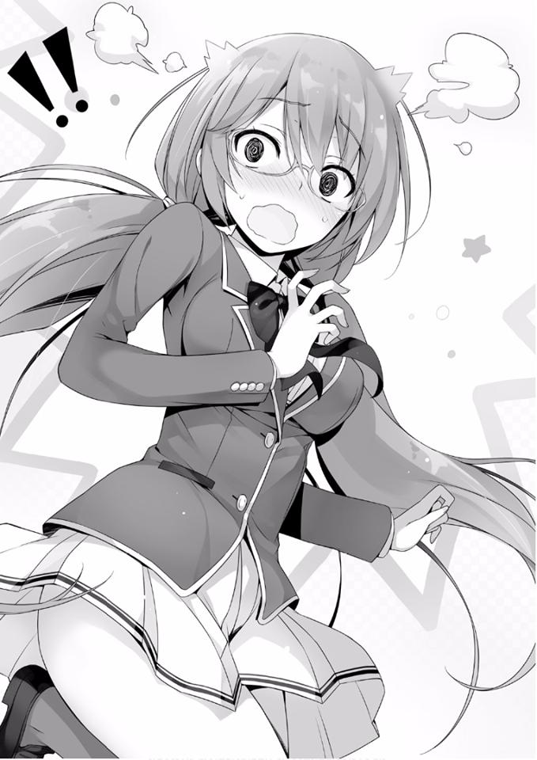
Su cautela hacia sus alrededores casi me recordó a un pequeño animal asustado. ¿Pero estaba Sakura hablando con su amigo imaginario o un fantasma?
— ¿Has oído? ¿Oíste lo que acabo de decir?
— Fragmentos. Pero no sé a qué te referías con esas palabras— Sakura parecía aliviada de que no haya escuchado lo que dijo— ¿Y? ¿Por qué querías verme?— pregunté.
— Eeehh.... eso es... sí, oh, cierto. Me sentía ansiosa sobre el examen.
Luego me paso un trozo de papel, y cuando lo miré y revisé, contenía una lista de nombres.
Clase A: Sawada Yasumi, Shimizu Naoki, Nishi Haruka, Yoshida Kenta Clase B: Kobayashi Yume, Ninomiya Yui, Watanabe Kihito Clase C: Yuuki Yuuya, Nomura Yuuji, Yajima Mariko Clase D: Ike Kanji, Sakura Airi, Sudou Ken, Matsushita Chiaki Sakura pertenece al grupo (Vaca). Parece que las cosas también son intensas en este grupo. Los hombres en el grupo son Sudou e Ike, hombres que no simpatizarían con la difícil situación de Sakura. Y en este examen, uno se ve obligado a pasar tiempo con otros miembros del grupo de la misma clase. Si estuviera en el mismo grupo que ella, podría ayudarla, pero tal como están las cosas, no hay mucho que pueda hacer ahora mismo.
Cuando llegue la hora de que el grupo luche como uno, no pueden darse el lujo de estar separados o de vacilar. Podría ayudarla comunicándome secretamente con ella por teléfono durante la mitad del examen, pero si adoptara ese comportamiento extraño, llamaría la atención sobre mí. Y en un examen como este, una acción como esa podría significar la diferencia entre la vida y la muerte.
— Pensé que sería genial si hubiera alguien que conocieras de las otras clases, pero supongo que no— dije.
Lo pensé, pero si quería ayudarla, Ichinose y Kanzaki son los únicos a los que puedo pedir ayuda. Pero como Ichinose está en mi grupo, será difícil para ella ayudar. No confío en Sudou e Ike con Sakura.
— Lo siento... tampoco tengo amigos— le digo.
— Oh, por favor no te disculpes, tampoco tengo amigos.
Me dice Sakura. Esto es triste, somos como dos personas que compiten entre sí para ver quién puede ser más patético.
Entonces, en lugar de estar orgulloso de mi falta de amigos, cambié a un tema diferente.
— Por cierto, también quería preguntarte algo, Sakura— le dije.
— ¿Eh? ¿A mí? ¿Qué?
— Me preguntaba si Yamauchi te contactó de alguna manera después de que terminó el período de discusión— le dije.
— ¿Yamauchi-kun? No, no lo ha hecho. ¿Pasa algo?— ella pregunta.
— Ya veo.
Cuando estábamos en la isla, para hacer uso de Horikita, me vi obligado a usar a Sakura primero. Para manipular a Yamauchi, prometí darle la dirección de Sakura a cambio de su cooperación. Por supuesto, no tengo la intención de darle la dirección a Yamauchi sin el consentimiento de Sakura, pero todavía no se lo he dicho a Yamauchi. Estaba preocupado de que se haya acercado a Sakura, pero parece que estaba preocupado por nada.
— Mientras tanto, si hay algo en tu mente ponte en contacto conmigo— le digo.
— ¿Está bien?
— Sí, es lo mínimo que puedo hacer por ti— Aunque solo le dije esas vagas palabras, los ojos de Sakura se iluminaron como un niño inocente. Tal vez ella simplemente está feliz de interactuar conmigo de esta manera.
— ¡Definitivamente te llamaré!— ella exclama.
— Por supuesto.
A diferencia de la imagen que usualmente tiene Sakura, ahora parece estar llena de vida y vigor. Parece que está aprendiendo a ser más agresiva día a día.
Aunque solo han pasado unos días desde la prueba en la isla. Sakura se ha vuelto considerablemente extraña. Como era una prueba loca y exigente, parecía haber impactado a una chica de preparatoria como Sakura. No cambió por completo, pero incluso en una situación difícil como esta, aprendió a mantenerse positiva.
PARTE 4
— ¡¡¡Aaaaaaayyyyyyaaaaannnoooooooookkkkkoouuuuuujjiiiii!!!
Y tan pronto como volví al interior del barco, cayó una sombra sobre mí. Con sus manos agitándose sobre su cuello, llegó apurado y parecía entrar en pánico.
Parecía una situación seria. Eso fue lo que vi cuando volví, vi la figura de Yamauchi Haruki, mi compañero de clase que ahora había tomado la forma de un asura demoníaco.
— ¿Q-qué pasa?— Pregunto. Por supuesto, ya sabía cuál era el motivo, pero le pregunté de todas formas.
— ¿Por qué estás preguntando eso? ¿Prometiste decirme la dirección de Sakura, qué diablos pasó con eso?— Desafortunadamente me encontré con Yamauchi. Debería pensar en algo. No estaba apuntando a ti en particular, pero solo quería saber— dijo.
— ¿De verdad crees que un solitario como yo sabría la dirección de Sakura?— Intenté explicárselo y traté de hacerlo sonar sincero para que él lo entendiera.
— ¿Podría ser?... estabas tratando de preguntarle a Sakura su dirección...
¿justo ahora?— él me preguntó. Cuando asentí, la cara de Yamauchi se transformó en una expresión de sorpresa y se derrumbó en el suelo sobre sus rodillas.
— Entonces eso significa... que no sabías su dirección... ¿y aun así me usaste?— él me preguntó.
— Parece que lo hice, sí— lo admito.
— Y, ¿qué pasó? ¿Sakura te dio su dirección?
— ...Lo siento— me disculpé con él.
— Lo siento. ¿Qué quieres decir con lo siento? No estoy pidiendo una disculpa ¿verdad? Estoy pidiendo su dirección— me dice Yamauchi. Una respuesta sin emociones como esa reflejaba la decepción de Yamauchi en mí— ¿Cómo te atreves... cómo te atreves a mentirme a mííííííí?—
Yamauchi me grita. Creo que hice algo malo al usarlo así, pero no puedo darle la dirección de Sakura sin su consentimiento.
Incluso si él le pregunta directamente, ella debería rechazarlo directamente y sin rodeos.
— ¿Me darías un poco más de tiempo?— le pregunto.
— ¿Cuánto? Un mentiroso es el comienzo de un ladrón— me dice.
De todos en la Clase D, nunca imaginé que el primero en llamarme mentiroso sería Yamauchi. Es un shock.
— ¿Entonces, vas a preguntar a Sakura a la fuerza?
— Sí, voy a hacer eso— me dice.
Parece estar cegado por la ira y no está pensando con claridad, aparentemente tiene la intención de obtener la dirección de Sakura por la fuerza si es necesario.
— Sakura dijo que odia a los hombres que solo hablan.
— Solo lo estás inventando, Ayanokouji— dice.
— Sí. No se puede evitar si no te agrado ahora, pero también debería ser obvio por qué no te doy su dirección. Y tratar de preguntarle la dirección a la fuerza es inútil— le digo.
— ...Es solo una excusa. Nunca supiste su dirección, ¿verdad?— Yamauchi baja la cabeza mientras aparta sus ojos de mí.
— Pero sabes que a Sakura le gustan las cámaras digitales, ¿verdad? La verdad es que escuché que la que tiene es un modelo obsoleto, pero no tiene suficientes puntos para comprar una nueva, ¿ves? Yamauchi, si le compras una nueva cámara digital, sería un gran regalo para ella, ¿no estás de acuerdo?— le dije.
— Ohhh... creo que es genial... pero tampoco tengo ningún punto—
finalmente admite.
— Verás, en este examen, al esconder al “objetivo”, convertirte en un traidor, o guiar a tu grupo hacia la victoria, puedes ganar puntos suficientes para comprarle una cámara digital, ¿me equivoco?— Le digo a Yamauchi.
— E-entonces, si trabajo duro, ¿todavía hay una posibilidad de que pueda acercarme a Sakura?— Ahora me he asegurado de que haya una sola conclusión a la que llegará Yamauchi.
— En este momento, tú, Yamauchi Haruki, debes esforzarte para mostrar tu masculinidad. Esa es la única forma en que puedes acercarte a la antigua ídolo Sakura— Lo aliento.
Existe la posibilidad de que al estimularlo de esta manera, trabajará a su máximo potencial y obtendrá mejores resultados en este examen.
— Lo haré. Lo haré. ¡Lo haré! Voy a trabajar duro y conseguiré a Sakura—
Yamauchi dice emocionado.
— Sí, Yamauchi, puedes hacerlo. Si eres tú, definitivamente lo lograrás— Lo aliento.
— ¡Ooooooohhhhhhh! ¡Definitivamente voy a ganar en este examen!
De alguna manera, parece que logré dirigir su ira en una dirección diferente, hacia el examen. Quizás su ira regrese hacia mí cuando termine el examen, pero por ahora parece que evité el problema. Si hay un problema terrorífico aquí, es el hecho de que Yamauchi estará demasiado entusiasmado y se enfocará directamente al “objetivo”.
— Te lo diré por si acaso pero...— decidí decirle esto por su propio bien.
— ¿Qué?— él me pregunta.
— Nada. Pero si encuentras el “objetivo” en tu grupo, no lo dejes que las otras clases se te anticipen— le digo.
— Por supuesto que no.
Pero sería mejor si Yamauchi no encuentra al “objetivo”. Beneficios a largo plazo sobre beneficios a corto plazo y todo eso.
PARTE 5
Dado que es un hecho que solo la Clase A tiene garantizada “cualquier opción de educación o empleo después de la graduación”, es ciertamente difícil para otras clases cooperar con ellos. Las Clases B y D cooperan para derrotar a las Clases C y A. Eso también significa que, a la inversa, la Clase C y la Clase A pueden formar una alianza para vencer a la Clases B y D. Teniendo esto en cuenta, cuando todas estas clases son forzadas a estar en un grupo, ¿qué pasaría? Es casi como meter carnívoros y herbívoros en una jaula. No hay una forma factible de organizar dicho grupo.
Sin embargo, aún por pura casualidad, es posible que se produzca la unión entre esas clases. Mientras su gente con personalidades fuertes como Hirata o Ichinose, tomen la delantera. Pero incluso eso es todavía una tarea difícil.
La clase A no participó en la segunda discusión. Pero dado que la Clase A lo hace a propósito, también era imposible que las otras clases tuvieran una discusión seria y el tiempo pasaba lentamente en silencio. Empecé a observar cómo reaccionaban los estudiantes de cada clase. No es que todos tuvieran malas intenciones, pero la mayoría de los estudiantes se contenían, en un intento de mantenerse a salvo.
— Ya que es la segunda reunión entre nosotros, creo que deberíamos comenzar lo antes posible, la cantidad de veces que nos reuniremos así es limitada— Ichinose una vez más tomó la iniciativa. Como se esperaba de la pacífica clase B. Hamaguchi y el otro estudiante de clase B eran exactamente lo mismo.
Siempre intentando comenzar una alianza conjunta sin dudarlo.
Es casi como mirar a Hirata. Sin embargo, a diferencia de Hirata, Ichinose y su grupo definitivamente apuntaban a la victoria de la Clase B en este examen. Y
como los otros estudiantes todavía estaban en guardia, un aire pesado cayó sobre nosotros. Todos se volvían cada vez más desconfiados, cada vez más cautelosos. Sin embargo, los tres estudiantes de la Clase A se liberaron de todas las preocupaciones ya que estaban tocando casualmente sus teléfonos.
No había una regla que dijera que no pudieras contactar a los otros grupos.
El rico es rico y el pobre es pobre, no hay nada más. La Clase A puede darse el lujo de ser distendida ya que, después de todo, dominaban abrumadoramente la competencia.
Imaginé que su pérdida durante la prueba de la isla causaría un cambio en su comportamiento, pero parece que Katsuragi está intentando dar una imagen
“tranquila” de su clase a las otras. Y al pensarlo con cuidado, de hecho es una estrategia muy efectiva.
Y especialmente para un hombre que trabaja solo como yo, no puedo romper la pared que la Clase A ha erigido.
— No creo particularmente que necesitemos un avance ahora, pero estoy de acuerdo con la necesidad de una discusión. La Clase A puede estar tratando de romper con todo esto, pero creo en la necesidad de encontrar al “objetivo” yo mismo— Yukimura dijo eso como si estuviese de acuerdo con Ichinose.
De hecho, si el “objetivo” está en las otras clases, esta es una oportunidad que no se puede desperdiciar. O tal vez esta actitud es un intento de camuflar el hecho de que Yukimura es el “objetivo”.
— ¿Pero puedes realmente encontrarlos simplemente hablando? No lo creo.
El “objetivo” es difícil de encontrar, o más bien el examen en sí es difícil—
Karuizawa habló.
— Entiendo tus preocupaciones, Karuizawa-san. Pero, ¿no es solo una cuestión de perspectiva? Tanto la prueba de la isla como este examen, deben ser una “sorpresa” para los estudiantes ¿no estás de acuerdo?
— ¿Sorpresa?— Karuizawa pregunta.
— Si es grandeza, entonces puedes dejármelo a mí. Esa es mi especialidad.
¡¡¡Mo-e-a-g-a-re!!!— Sotomura grita de repente. Parece que ha cometido un malentendido. No es grandeza, dijeron sorpresa.
— Vivir en un barco como este es divertido ¿no? Puedes hablar o jugar con tu teléfono tanto como quieras, incluso si te ves obligado a asistir a una reunión durante dos horas al día. Todavía eres libre de hacer lo que quieras.
— Bueno... sí, es divertido.
— Exactamente, ¿cierto? Es por eso que tenemos que hablar más cómodamente, como un grupo de amigos. Solo sufrirás si te escondes en un caparazón como Machida-kun— Ichinose intenta convencer a Karuizawa.
Ciertamente, si lo consideras no como un “examen”, sino como unas
“vacaciónes”, es más fácil hablar entre el grupo. Es solo una cuestión de perspectiva, como dijo Ichinose, cuanto más positiva sea su opinión, será más fácil aprobar el examen. Pero después de escuchar lo que Ichinose tenía que decir, Machida simplemente comenzó a reírse.
— Ustedes son libres de hacer lo que quieran, pero es muy poco probable que encuentren al “objetivo” de esta manera. No sé dónde están los
“objetivos”, pero si no están cooperando con sus compañeros de clase, lo harán. Seguramente tomarán la decisión de mantenerse ocultos para ganar puntos de esa manera. Y tal vez el “objetivo” esté realmente dentro de la Clase B. Eso también es posible. ¿Realmente pueden confiar en ellos?— Machida pregunta.
Pronunció esas palabras como si quisiera sacudir los corazones de los estudiantes allí reunidos.
— Lo mismo podría decirse de ti, Machida-kun— le dice Ichinose.
— ...Por supuesto.
Por un momento, Machida rompió el contacto visual con Ichinose. Para ser más precisos, sus ojos vagaron hacia un estudiante llamado “Morishige” sentado a su lado. Pero luego rápidamente volvió al contacto visual y una vez más irradió la imagen “tranquila” de la Clase A.
— No estamos particularmente pendientes de quién es el “objetivo”, recibimos 100,000 puntos mensualmente, no hay nadie en nuestra clase que esté interesado en la recompensa de 500,000 puntos por este examen—
Machida finalmente le dice a Ichinose.
— ¿En serio? ¿Entonces me estás diciendo que no quieres ni siquiera 1
punto extra? No es que la escuela le imponga un límite en la cantidad de puntos que puedes tener— contesta.
— Eso es estúpido. Puedes estar delirando todo lo que quieras, pero no nos acuses innecesariamente— le responde Machida. Ichinose, que seguía sonriendo a Machida durante la discusión, me dio la impresión de ser un oponente difícil.
A pesar de que Machida afirmó que no participaría en las discusiones, Ichinose lo había persuadido para que respondiera. Y mientras él hable, información inevitablemente escapará de él. Al usar a Karuizawa y Yukimura para provocar a Machida, Ichinose había estado recopilando información de la Clase A constantemente. Me pregunto si Machida ya lo ha notado.
Mientras tanto, Karuizawa solo seguía suspirando y jugueteando con su teléfono.
No existen reglas que indiquen que no se puede usar su teléfono durante el período de discusión del examen, pero es de mala educación que lo haga mientras el consenso es encontrar al “objetivo”. ¿O es Karuizawa en realidad es parte de la CIA o el FBI y está transmitiendo información a Hirata por teléfono?
Si es así, la respetaría mucho... pero lo dudo. Por supuesto, Karuizawa nunca pone mucho esfuerzo en algo, así que este comportamiento debería ser normal, pero desde que comenzó el examen, me he dado cuenta de que algo está pasando con Karuizawa. Ella actuando de manera diferente, su encuentro con Ibuki y su discusión con el grupo de Manabe.
Y me di cuenta de algo. Ninguna de sus acciones era de la “habitual” Karuizawa.
En la Clase D, si su reputación es buena o no, no se puede negar que ella, junto con Hirata, unieron a la clase como una sola. Normalmente nos uniría para aprobar este examen, ya sea que tuviéramos la capacidad o no, pero nunca mostró ningún signo de ello. Hirata es Hirata sin importar dónde esté, y Kushida también es siempre Kushida. Pero Karuizawa definitivamente ha cambiado. O tal vez se sienta inferior a Manabe y su grupo, quienes están por encima de ella en términos del sistema de castas de la escuela. Lo que necesitamos ahora para que la Clase D suba entre los rangos no es solo reunir más puntos. En comparación con las clases como A y B, la clase D aún carece de cohesión.
Karuizawa Kei, quien es indispensable para esa cohesión, es una existencia que controla a las chicas de la Clase D. Esa es mi evaluación actual. Es por eso que estoy preocupado por ella ahora mismo. Necesito determinar si ella será una
existencia útil o una existencia inútil para mí. No puedo darme el lujo de tomarme mi tiempo en este caso, considerando que el período del examen en sí es corto. Dependiendo de las circunstancias, podría necesitar usar la fuerza con ella. Inmediatamente una vez que pasó 1 hora, la Clase A deja la habitación.
Parece que pretenden mantener su postura de guardar silencio hasta el final.
Ichinose suspira y dice:
— Bueno... supongo que este será un examen difícil. ¿Qué hay de ti, Ayanokouji-kun? ¿Es esto difícil para ti?— ella me pregunta.
La que me llamó, sorprendentemente, fue la estudiante llamada Ichinose Honami. La chica que gobierna la Clase B.
Ella siempre está calmada, es inteligente y tranquila. Parece que se dio cuenta de que aún no había dado ninguna opinión en particular sobre el examen y me preguntó. Si estuviese en su misma clase, me habría enamorado de ella. Es tan encantadora. No solo la Clase B, los chicos de otras clases también deben haberse enamorado definitivamente de ella. En clasificaciones de popularidad, Ichinose y Kushida serían rivales directos.
— Honestamente, soy del tipo que se sienta y relaja en un examen como este— le digo.
— Todavía es demasiado pronto para rendirse, ¡trabajemos juntos para llevar esto en una dirección positiva!— Ichinose me anima. Parece que está decidida a luchar duro— Incluso si continuamos las discusiones, dudo que el “objetivo” simplemente se exponga. El beneficio de ocultar su identidad supera los inconvenientes de revelarla. Si algo sale mal, la predicción del peor escenario de la Clase A podría hacerse realidad— dice Ichinose.
A pesar de decir un comentario negativo como ese, los ojos de Ichinose no perdieron su confianza. Entre los diversos pensamientos que tuve sobre ella, no pude entender cómo era capaz de mantener esta actitud en la adversidad.
— De cualquier manera, es el final de la discusión de hoy. Buen trabajo, ustedes dos.
— No hay tal cosa. No hicimos mucho— Ichinose va con sus compañeros de clase inmediatamente después de eso.
La he estado observando hoy, pero no he podido determinar cuáles son los verdaderos objetivos de Ichinose. Pero al menos nuestro grupo está produciendo resultados de esta manera. Por lo que sé, ella podría estar confeccionando una estrategia que no puede dejar que nadie más sepa. Cuando Manabe de la Clase C y sus amigas se levantaron para salir de la habitación, las seguí. Una vez que llegaron al ascensor, casualmente llamé a Manabe.
— ¿Tienes un poco de tiempo?— le pregunto.
Una vez que me notó, rápidamente subió su guardia, ya que probablemente no esperaba que la llamara.
— Escuché tu discusión con Karuizawa. Algo sobre empujar a alguien en un café o algo así— Le dije.
— ¿Y qué pasa con eso?— ella responde.
Normalmente no me mostrarían ningún interés, pero cuando abordé este tema, las tres chicas centraron su atención en mí.
— No estoy 100% seguro, pero creo que vi a Karuizawa empujar a tu amiga en el café— les dije.
— ¿De verdad?— Manabe me preguntó con rigidez. Asiento con la cabeza.
— Sí. No me gustó cómo actuó en ese entonces, así que pensé en avisarles— admito.
Encendí el fuego de la discusión entre Karuizawa y las chicas de la Clase C
deliberadamente. A decir verdad, no vi que Karuizawa hiciera algo así, pero mentí para crear esta situación.
Ahora, Manabe y las demás seguramente tomarán medidas contra Karuizawa.
Estoy muy emocionado de ver cómo responderá Karuizawa a eso, y cómo cambiará...
PARTE 6
Cuando volví a mi habitación, ya era tarde y me desplomé en la cama sin hablar con nadie. Cerca de las 00:00, pensé en irme a dormir pero luego escuché un
ruido. Era Hirata quien me miraba ansiosamente. Yukimura también, estaba sentado en el sofá instalado en nuestra habitación.
— Buen trabajo, Ayanokouji-kun. Llegas bastante tarde— me dijo.
— Sí. Hablando de eso, quería preguntarte algo Hirata— le digo.
— Debes estar cansado, pero si estás bien con solo un rato, me gustaría preguntarte algo— Hirata me dice exactamente lo mismo al mismo tiempo que yo— ¿Hmm? ¿Querías preguntarme algo también?— Hirata me pregunta.
— No, te escucharé primero, Hirata. Mi pregunta es algo trivial— Yukimura también parece querer preguntar algo, probablemente esté relacionado con el examen.
Si me niego a escuchar ahora, el estado de ánimo en la habitación será incómodo. Cambiando a mi jersey, me acerco a los dos. Hirata se mueve un poco para dejarme espacio para sentarme en el sofá. Quería preguntarle a Hirata si tenía información sobre la persona conocida como Sakayanagi, pero no hay problema en escucharlo primero.
— Yukimura-kun me consultó sobre el examen, así que pensé en informarte a ti también— me dice Hirata.
— Sin embargo, le dije que no te incluyera para no molestarte.
Supongo que Kouenji, que está en la misma habitación que nosotros, no estaría interesado en esta conversación.
— Lo siento, chico Hirata, en este momento estoy perfeccionando mi belleza física— fue lo que dijo.
Kouenji, con la parte superior del cuerpo desnudo, hacía flexiones en la habitación. Parecía estar sudando bastante, pero eso no parecía afectarlo en absoluto.
No es algo que un estudiante normal de preparatoria pueda hacer. Pero Kouenji está participando de manera adecuada en este examen, pensé. Hirata respondió como si conociera mis pensamientos exactos.
— Kouenji-kun en realidad está participando en su grupo. Después de todo, se restan puntos si no aparece— ofreció Hirata— En realidad, recibí noticias de mis amigos de que dos de nuestros compañeros de clase han sido asignados como “objetivo”— me dice Hirata.
— ¿Qué? Eso significa-
— No puedo decírtelo, solo me dijeron porque confían en mí— Hirata nos derribó.
— ¿Estás diciendo que no confías en nosotros, Hirata? Si lo sabes, también tengo derecho a saber. Si sabemos quién es el “objetivo”, podríamos obtener una pista para aprobar el examen mejor. Además, es natural que como compañeros de clase compartamos información entre nosotros—
Yukimura le dijo eso a Hirata.
— Sí... la verdad por eso también pensé en consultarte sobre esto...— dijo Hirata. Es por eso que quería hablarnos así, ya sabía quiénes eran algunos de los “objetivos”.
— Oye Hirata, será mejor que nos digas por teléfono, solo por las dudas. No se sabe quién esté husmeando— le dije.
— Tienes razón, denme un momento— nos dijo Hirata.
Hirata luego encendió su teléfono y lo giró en nuestra dirección. Dos nombres estaban escritos allí. Kushida del grupo (Dragón) y Minami del grupo (Caballo).
Estas eran las identidades de dos “objetivos”.
— Lo tengo— dijo Yukimura sin decir nada más.
Ya que Kushida es el “objetivo”, podríamos estar en ventaja en el extremadamente disputado grupo (Dragón). Pero el hecho de que el “objetivo”
sea de nuestra clase también es un pensamiento aterrador.
Hubiera sido mejor si el “objetivo” estuviera en otra clase.
— No te preocupes, todo va bien— me aseguró Hirata con una cara de confianza.
Parecía estar diciendo que los tres miembros del grupo (Dragón) de la Clase D
son personas capaces que no traicionarán su identidad sin importar qué.
— Incluso en el grupo (Conejo), cada clase debería tener la misma probabilidad de obtener un “objetivo”. Pero creo que la Clase D podría tener tres “objetivos”, uno en el grupo (Conejo) que seguramente mantiene su identidad escondida ahora mismo.
— Sí. La idea de Yukimura-kun es correcta. Quizás hayan consultado a alguien más en lugar de a mí. Después de todo, consultar a alguien sobre eso aumenta el riesgo de ser descubierto— dice Hirata.
Mientras estábamos teniendo esta seria discusión, Kouenji comenzó a cantar desde el otro lado de la habitación. Después de haber sido paciente durante un tiempo, parece que Yukimura finalmente perdió la paciencia con Kouenji después de escuchar su tonada que parecía no tener fin.
— Kouenji, ¿puedes dejar de tararear esa molesta canción? Y no te diré que lo hagas en serio, pero al menos participa en este examen hasta el final.
No te retires repentinamente como lo hiciste en la prueba de la isla—
Yukimura reprendió a Kouenji.
— No se pudo evitar, en ese momento mi cuerpo estaba en mal estado, no puedo hacer lo imposible— respondió simplemente Kouenji.
— Geh... era solo una enfermedad fingida.
— Pero pensar que el examen continuará durante dos días más, suena realmente problemático— Kouenji, que continuaba con sus flexiones, dijo esto antes de levantarse y poner su toalla en la cama.
— ¿Problemático?
Ni
siquiera
estás
pensando
en
el
examen
adecuadamente— Yukimura acusó a Kouenji.
— No tiene sentido continuar con un examen tan poco interesante, después de todo, solo es una simple prueba para encontrar a un mentiroso— le dijo Kouenji.
Kouenji luego sacó su teléfono y jugueteó con él por un tiempo. Entonces, de repente, todos nuestros teléfonos sonaron a la vez y recibimos un correo de la escuela.
— Kouenji, ¿qué hiciste?— Yukimura le gritó.
Entonces, Hirata y yo corrimos a revisar el correo en nuestros teléfonos. Decía:
“La prueba del grupo (mono) ha terminado. Los alumnos del grupo (mono) ya no están obligados a participar. Tengan cuidado de no molestar a los demás estudiantes”.
— ¡El grupo (Mono) es el tuyo, Kouenji!
— Exactamente. Ahora recupero mi libertad. Adiós— Kouenji simplemente dijo eso antes de tirar su teléfono y desaparecer en el baño, dejándonos a todos en estado de shock.
— ¡N-no jodas! ¡Todos estamos haciendo lo mejor que podemos y ese tipo-!
— No lo sabemos todavía, tal vez él hizo algo...
— Eso es imposible, solo lo está haciendo para estar libre lo más pronto posible— Todos reaccionamos a esta noticia.
No creo que Kouenji haya tomado el examen en serio. Sin embargo, él es extremadamente perceptivo y su capacidad de observación es notable. Si lo que dijo sobre el examen de “encontrar al mentiroso” es cierto, puede sobresalir en él.
Las acciones de Kouenji se hicieron conocidas por todos los estudiantes cuando el teléfono de Hirata comenzó a sonar sin parar por la gran cantidad de mensajes.
El chat estaba desbordado por las voces de los estudiantes que se sorprendieron con las noticias. Estoy seguro de que a Katsuragi, Ryuuen e Ichinose también les sorprendió esto. Nadie debe haber esperado que aparezca un “traidor” el primer día del examen. Horikita también ha enviado un mensaje a mi teléfono.
“Lo siento. Las cosas parecen confusas. Te llamaré ahora” ese era el mensaje.
— Mierda. Gracias a Kouenji, las cosas han escalado más allá de una simple discusión.
— Voy a salir un poco.
Parece que Yukimura no podrá dormir después de ser irritado por las acciones de Kouenji. Habiendo confirmado que la discusión se había calmado, silenciosamente salí de la habitación.
Aunque las acciones de Kouenji han terminado el examen de un grupo, no puedo seguir pensando en esto para siempre. Honestamente, mis acciones
estarán limitadas en este examen. Incluso si lo planifico, será difícil guiar a todos los grupos restantes a una victoria para la Clase D. Incluso podrías llamarlo una tarea imposible. Si todos los estudiantes trabajaran juntos, sería posible, pero eso no está sucediendo.
Y no puedo interferir con la respuesta de otro grupo usando mi teléfono. Hay otros métodos, pero no hay tiempo y lo que está en juego es valioso. Si tuviera información que pudiera cambiar las cosas sería otro asunto. Los que tienen la llave son Hirata y Kushida de la Clase D.
— Esto es imposible— Hay tres días más incluyendo las vacaciones. Lo que es imposible es imposible.
Incluso si obtuviera su cooperación absoluta, no tengo suficientes ojos y oídos de mi lado. No puedo saber qué está sucediendo en las discusiones de cada grupo que hay. Por supuesto, incluyendo Horikita y Sakura, todavía podría haber una posibilidad. Como era de esperar, necesito más ojos y oídos para este examen.
PARTE 7
Un cielo lleno de estrellas se extendía ante mí. Había llegado a la cubierta del barco en la noche tratando de encontrar un lugar.
— Esto es increíble...
Era de una magnitud superior a lo que solemos ver en libros e imágenes. Era una vista hermosa. Este es el tipo de vista nocturna que no podías ver en las grandes ciudades. Y había algunos estudiantes masculinos y femeninos mirando al cielo estrellado mientras se tomaban de las manos y se frotaban los hombros.
Me sentí un poco solo viendo eso. Como estaba oscuro y con poca luz no pude ver sus caras.
Y de todos modos no me interesan mucho las salidas románticas.
Pero entre los estudiantes que miraban hacia el cielo nocturno estaba la silueta de una chica que estaba parada sola.
— No, no.
Incluso si la llamo ahora, no puedo simplemente decir “¿por qué no vemos las estrellas juntos?” Y tratar de coquetear de esa manera. No quiero estar allí cuando llegue su novio. Pero estaba interesado en ver quién era esa chica, así que me acerqué a ella. La chica se dio cuenta de mí y se volteó para mirarme.
— ¿A... A... Ayanokouji-kun?
— Esa voz... ¿Kushida?— Y entonces la chica, Kushida, emergió de las sombras mirándome con una cara de sorpresa— ¿Estás sola?
Quizás Kushida está aquí para encontrarse con su novio. Pensando eso hizo que mi pecho se contrajera y doliera.
— Sí. No puedo dormir ahora mismo— me dijo.
— Oh, ya veo.
Entonces ella no está aquí para una cita nocturna con su novio. Me sentí aliviado al saber eso. Parece que Kushida acaba de salir de la bañera, había un aroma muy reconfortante proveniente de ella, llevaba una camiseta. Parece que es el mismo olor que el champú que nos dieron en nuestras habitaciones.
— ¿No tienes frío?— le pregunto.
— Estoy bien. Más importante aún, ¿estás aquí solo, Ayanokouji-kun?— Me pregunta. Cuando asentí, Kushida se rió felizmente.
— Entonces, ¿estamos los dos solos? Estoy un poco feliz— dice.
— .......
Debería haber dicho algo genial en este punto, pero por supuesto que no pude decirlo. Por el contrario, mi ritmo cardíaco aumentaba al estar a solas con Kushida en un lugar lleno de parejas. En el fondo Kushida debe odiar la situación.
— En cualquier caso, me voy yendo— le digo.
— ¿Ya te vas?
— Sí, ya tengo sueño— le respondo. Por supuesto yo no quería dormir, pero no se puede evitar.
— Ya veo, te veré mañana, ¡Ayanokouji-kun!
— Buenas noches, Kushida.
Después de intercambiar despedidas con ella, gire patéticamente la espalda para irme. Pero entonces:
— ¡¡¡Espera!!!— Kushida gritó y saltó a mi pecho. Podía sentir su calor incluso a través de su camiseta en este frío clima.
— ¿K-K-K-Kushida? ¿Q-qué estás haciendo?— le pregunto. Por supuesto, en esta situación inesperada, estaba entrando en pánico. Estaba más allá de mi comprensión.
— .....
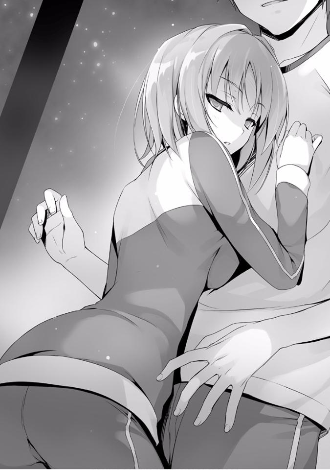
Pero Kushida no me respondió de inmediato. Luego, en voz baja y chirriante, me dice:
— Lo siento... de repente me... me sentí un poco solitaria estando yo sola.
Ella me susurró eso mientras estaba en mi pecho. Esas palabras fueron como un golpe de un boxeador para mí y mi cerebro quedó en blanco por un momento.
Y por unos segundos más, Kushida siguió ocultando su rostro en mi pecho. Y de repente, como si un hechizo se hubiera roto, me soltó y se distanció.
— L-lo siento. Repentinamente abracé a Ayanokouji-kun... ¡buenas noches!
No podía ver la cara de Kushida muy bien en la oscuridad, pero tenía la sensación de que también estaba sonrojada. Y sin decir nada, Kushida se escapó, dejándome allí parado tocando mi pecho para sentir el calor que ella dejó atrás.
Gracias a esto, no podré dormir más esta noche. No puedo volver a mi habitación así. Así que decidí caminar alrededor del barco por un tiempo.
— Aahhh... eso me sorprendió. Ahora que se terminó, me siento un poco sediento— me digo.
Debería haber algunas máquinas expendedoras en el primer piso, así que decidí ir allí antes de regresar a mi habitación. Pero luego, cerca de la máquina expendedora, encontré un extraño grupo de tres personas. Eran Chabashira-sensei, Hoshinomiya-sensei de la clase B y Mashima-sensei de la clase A.
Estaban sentados en el sofá y pasaban el tiempo tranquilamente. Esta área técnicamente no está prohibida para los estudiantes, pero dado que hay un bar en el que ninguno de ellos puede ingresar, generalmente evitan venir aquí.
Vine aquí para cambiar de ambiente, pero parece que me he topado con la oportunidad de obtener algo de información. Borré mi presencia y lenta y silenciosamente me acerqué a ellos.
— Saben, ha pasado un tiempo. Desde que los tres nos juntamos así.
— Es el destino, al final todos elegimos el camino del maestro.
— Basta. No tiene sentido hablar de eso.
— Oh, sí, hablando de eso, te vi en una cita. Nueva novia, Mashima-kun, estás sorprendentemente motivado en ese aspecto.
— Chie, ¿y tú? ¿Qué le pasó a tu antiguo hombre?
— Jaja, rompí con él después de dos semanas. Verás, soy el tipo de chica que lo hace con un hombre y termina con él antes de que la relación se ponga seria— responde Hoshinomiya-sensei.
— Eso suele ser lo que dice el hombre, ¿sabes?
— Ahh, pero no lo haré con Mashima-kun. Eres mi mejor amigo, odiaría arruinar nuestra amistad— le dice a Mashima-sensei.
— Relájate. No se trata de eso.
— Uwaaa... eso es un shock en sí mismo— Hoshinomiya-sensei vierte whisky en un vaso y lo bebe todo de un solo trago. Comparado con eso, Chabashira-sensei estaba bebiendo lentamente sake como si fuera un cóctel.
— Más importante aún, ¿qué vas a hacer, Chie?
— ¿De qué estás hablando tan de repente?
— Por lo general, la política aquí es poner a todos los representantes de cada clase en el grupo (Dragón).
— No tengo la intención de perder el tiempo aquí. De hecho, en cuanto a la actitud y las calificaciones, Ichinose-san es el mejor de mi clase, pero la probabilidad de éxito en la sociedad no se puede medir solo mediante parámetros numéricos. Decidí que había un obstáculo que ella debe vencer antes de eso. Además de que ponerla en el grupo (Conejo) es apropiado. Un conejo es lindo ¿verdad? Haciendo pyon-pyon, al igual que Ichinose-san— dijo Hoshinomiya-sensei.
— Espero que tengas razón.
— Las palabras de Hoshinomiya son razonables, ¿hay algún significado oculto detrás de ellas?
— Simplemente no quiero que hagas juicios basados en rencores personales.
— ¿Sigues hablando de lo que pasó hace 10 años? Pensé que habíamos superado eso...
— Eso me pregunto, son del tipo que se que van de la boca tan pronto como no estoy enfrente de ustedes. Y eres del tipo que no está satisfecha a
menos que estés un paso adelante. Es por eso que pusiste a Ichinose en el grupo (Conejo) ¿cierto?
— ¿Qué quieres decir? Explícate, Hoshinomiya.
— Realmente pensé que Ichinose-san necesitaba aprender una lección, así que la saqué del grupo (Dragón). Hablando de eso, Sae-chan también se está enfocando un poco en Ayanokouji-kun. Es solo una coincidencia ¿no?
Coincidencia, coincidencia. Cuando terminó la prueba en la isla, ¿parecías contenta de que Ayanokouji-kun fuera el líder?— Dijo Hoshinomiya-sensei.
— Eso no está relacionado.
Pero Mashima-sensei asintió como si estuviera convencido. Luego habló con Hoshinomiya-sensei con un tono estricto.
— No hay una regla específica para esto, pero quiero proteger nuestra moral.
Me gustaría evitar informar sobre el fracaso de un colega— dijo.
— Oye, es posible que no confíes en mí. Pero no me culpes, Sakagami-sensei también es un problema ¿cierto? La clase C ya tiene una mala reputación ya que otra persona debería haber estado en el grupo (dragón) pero Ryuuen-kun fue enviado en su lugar— ella respondió.
— De hecho, los estudiantes de este año parecen ser todos especiales.
Ya obtuve bastante información sobre el examen, así que decidí regresar. Si me quedaba, solo me enredaría en más problemas. Ya sé que Ichinose fue enviada a vigilarme. Parece que mis movimientos ya han sido notados y restringidos.
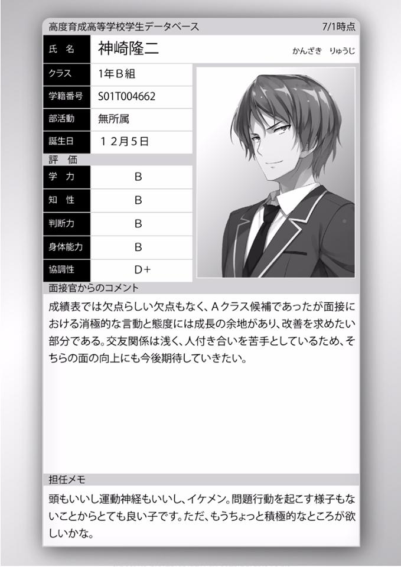
PREGUNTA DOBLE
PARTE 1
— ...¿Estás bromeando?— Horikita me saludó con un tono de voz recriminatorio.
— Desafortunadamente es cierto. Kouenji se levantó repentinamente y terminó el examen para su grupo —Le respondo.
— ¿Eres idiota? ¿Por qué no lo detuviste de hacer un alboroto como ese?
Era tu responsabilidad como compañero de habitación —me dice.
— Eso es imposible, además no sirve de nada llorar por algo que ya está hecho —dije.
El método de fuerza bruta que Kouenji había usado para terminar el examen de su grupo había estado circulando alrededor de los estudiantes causando que la clase estuviera llena de bullicio. Es por eso que en la charla de ayer, Horikita había querido encontrarse conmigo directamente. Parece que todavía no está convencida mientras movía la cabeza de un lado a otro.
— Lo regañaré por ello la próxima vez que lo vea, me gustaría evitar estos incidentes en el futuro —me dice Horikita.
— Deberías saber que no tiene sentido, las palabras no le llegan.
Simplemente te verás envuelta en su ritmo. Por ahora, concentrémonos en nuestros grupos —dije en respuesta. Como es mi compañero de cuarto, podría culparme por no haberlo detenido a tiempo, así que decidí cambiar de tema.
— Sin duda, mi grupo está lleno de enemigos problemáticos, pero no me quedaré atrás —me dice Horikita.
Su actitud es más fuerte que nunca, y supongo que tendré que decírselo a ella en este caso. Por mi parte, también estoy teniendo problemas para tratar con Ichinose, a quien Hoshinomiya-sensei envió a vigilarme.
— Hablando de eso, ya que también eres una chica, me gustaría preguntarte algo —le digo.
— ¿Qué pasa con eso? Siempre he sido una chica, ¿sabes? —responde al instante, después de haber malinterpretado mis palabras como sarcasmo mientras me mira con ojos ligeramente decepcionados.
— No, no es eso, no es eso. Solo estaba diciendo que me gustaría preguntarte algo ya que eres una chica —Como parecía que ella se enojaría más si seguía tratando de poner excusas como esa, rápidamente me puse a trabajar—. Me gustaría obtener información sobre Karuizawa —
le digo.
Como planeo hacer contacto con Karuizawa, necesito información sobre ella. Si tuviera que hacer una clasificación de los chicos en la clase, estoy seguro de estar en la parte inferior.
— Entonces, ¿quieres consultarme sobre el tema de Karuizawa-san? —
Horikita me pregunta. Asiento con la cabeza.
— Me gustaría mantener un seguimiento de los miembros de mi grupo, pero me resulta un poco difícil. Debería ser capaz de lidiar con Sotomura y Yukimura, pero Karuizawa es un problema. Después de que terminó la prueba en la isla, Karuizawa te invitó una vez a almorzar ¿verdad? —Le digo a Horikita.
— Debes saber que la rechacé, no estoy interesada en Karuizawa-san. Si quieres información sobre ella, ¿por qué no vas a preguntarle a Hirata-kun?
Si es él, seguramente podrá ayudarte —Horikita me responde.
Eso es cierto, pero antes de que comenzara el examen, había perdido la oportunidad de almorzar con Karuizawa y Hirata. Seguramente Hirata también recuerda el incidente, así que me gustaría evitar preguntarle en este momento.
— ¿Te preocupa que ella sea el “objetivo” o algo por el estilo? —Horikita de repente me pregunta.
— Es parte de eso. Pero en este momento, es imposible para mí entender el comportamiento de Karuizawa. Tengo curiosidad —le dije.
— Entonces es una pérdida de tiempo, su comportamiento no tiene ninguna razón. Si te preocupas por ella, será una pérdida un desperdicio —me responde.
— Horikita, no creo que sea bueno decir eso sobre los demás.
— ¿Decir eso sobre los demás? ¿Qué quieres decir? —Me pregunta.
— Por supuesto, solo has visto el lado egoísta e irritante de Karuizawa hasta ahora. Pero ¿sabes que probablemente también tiene un lado bueno? —le respondo.
— ¿Tiene realmente un lado bueno? No puedo imaginarlo. ¿No está llena de defectos? —Horikita me pregunta. Por supuesto, en este momento, en lo que respecta a cooperación, debo admitir que Horikita es igual o mejor que ella.
— Cuando conoces a alguien por primera vez, el primer instinto es juzgarlos por su apariencia ¿verdad? Ya sean geniales o lindos o lo que sea.
Entonces los juzgas a través de la plática para ver su ser interior. Ya sean sociales o agresivos o pasivos o lo que sea —Habiendo dicho eso, Horikita se cruza de brazos y espera mis próximas palabras—. Pero incluso eso sigue siendo el exterior. Su mentalidad real no será inmediatamente visible con eso. Toma a Kushida, o Ibuki o incluso a mí, como ejemplo. La personalidad “principal” y la personalidad “secundaria” están bien divididas
—le digo a Horikita.
— ¿Karuizawa-san también tiene una división? —me pregunta.
— Es algo que la mayoría de las personas tienen, incluso si no lo saben.
Horikita, tú también las tienes —Porque cada vez que está delante de su hermano, ella siempre expone su verdadera naturaleza frágil.
— Todavía no estoy del todo convencida, pero puedo entender que la conoces mejor a través del contacto directo —me dice Horikita.
Por supuesto que es más fácil decirlo que hacerlo, porque si no hubiera decidido esforzarme, nunca podría conocer la verdadera naturaleza de Karuizawa.
— ¿Y? ¿Hay algún uso para Karuizawa-san? —Horikita me pregunta.
— No puedo expresarlo claramente en palabras todavía, pero si tuviera que decir, sería la “capacidad de gobernar”. Tiene iniciativa y no se puede negar que su estatus en la Clase D es inquebrantable —le digo a Horikita.
Sin embargo, en nuestro grupo (Conejo), todavía no he visto ese lado de ella. Es por eso que pensé en determinar la verdadera naturaleza de Karuizawa lo más rápido posible.
— Suponiendo que ella tenga esa capacidad, ¿qué vas a hacer? ¿Traer a Karuizawa-san a nuestro grupo? —me pregunta.
— Me pregunto sobre eso— le digo. Mientras pensaba sobre mi respuesta, ese hombre de ayer volvió a nosotros.
— Hey, ustedes dos. ¿Están teniendo una pequeña cita a la sombra?— era Ryuuen quien dijo eso.
No estaba con Ibuki hoy, sino más bien, estaba acercándose a nosotros con una sonrisa espeluznante en su rostro.
— Estás bastante libre, incluso si me acorralas así, no hay nada que puedas ganar —Horikita reprende a Ryuuen.
— Yo soy el que decide eso. Entonces, ¿has decidido tratar de encontrar al
“objetivo”? —Y nuevamente Ryuuen se sienta en una silla cercana sin permiso.
— Sean cuales sean mis planes, no te lo voy a decir —dice Horikita.
— Es una pena, pensé en discutirlo contigo. Parece que todavía no has progresado en tu búsqueda —le dice Ryuuen a Horikita.
— Eso es interesante, ¿estás diciendo que sabes quién es el “objetivo”? —
Horikita le pregunta.
Mirándola con una expresión extraña, Ryuuen le responde como si hubiera esperado que le preguntara eso desde el principio.
— Ya he descubierto quién es el “objetivo”, ¿me creerías si dijera eso? —
Ryuuen le pregunta a Horikita.
— No, no. No eres alguien como Ichinose-san o Katsuragi-kun con aliados de su lado. Solo tienes enemigos. Nadie reuniría ese tipo de información para ti —Horikita responde a Ryuuen.
— Eso no es cierto. De hecho, no estoy en el club de “hacer amigos” como ellos. Pero hacer amigos y reunir información son dos cosas completamente diferentes —dice Ryuuen en respuesta.
Le habló a Horikita con una actitud como la de un profesor decepcionado con su alumno por no obtener la respuesta correcta.
— Desafortunadamente, ya he sumergido mis manos en este examen.
Dependiendo de las circunstancias, la Clase C podría ser la única que gane —dice Ryuuen.
— D-de ninguna manera.
No, lo que dice podría ser verdad. La escuela siempre hace exámenes basados
en criterios muy específicos. Los exámenes parciales fueron los mismos, los finales fueron los mismos y la prueba de la isla también fue la misma. Si comprendes las “reglas” detrás del examen, es posible lograr un puntaje alto y producir buenos resultados. Si eso es cierto, este examen no es diferente. Si es él, debe entender este hecho.
— Es muy simple, solo tienes que encontrar al “objetivo”. Desarma la estructura del grupo y analízalo hasta que encuentres la respuesta.
— Sin duda, cualquiera hubiera pensado eso. Pero ¿responderán honestamente? Dado que la escuela garantiza el anonimato, uno puede permanecer en silencio y ganar 500,000 puntos de esa manera —Horikita le dice a Ryuuen. Pero Ryuuen dice con calma en respuesta a la duda de Horikita.
— Solo tengo que asegurarme de que sea una situación en la que responderán honestamente y sin mentiras.
— ¿Una situación para hacer que respondan honestamente y sin mentiras?
—Horikita le pregunta.
— Como que les pregunté a todos su contacto, simplemente puedo preguntarles uno por uno sin que la escuela lo sepa nunca —Ryuuen dice.
— ¿Estás loco? Esto está prohibido por la escuela. Si lo descubren, serás expulsado —le dice Horikita en estado de shock.
— No es un problema. Estoy parado aquí ahora porque no es un problema.
Entiendes el significado de eso ¿cierto? —Ryuuen dice.
Era un método de fuerza bruta que Ryuuen solo podía usar porque tiene la talla de un tirano absoluto. Si mira a la fuerza el teléfono del alumno de otra clase, sin duda Ryuuen sería denunciado y expulsado. Pero Ryuuen es dominante en la clase C. Sea lo que sea que haga, nadie dirá una queja. Y si no hay queja, no hay problema. Significa que las acciones de Ryuuen aún se encuentran dentro de los límites seguros de las reglas de la escuela. Esa debe ser la estrategia de
Ryuuen. La estrategia de despojar por la fuerza a la clase C de todos sus secretos. Y si eso es cierto, Ryuuen podría tener las identidades de hasta tres
“objetivos”. Eso sería una gran pista para él en este examen.
Para ponerlo de una manera fácil de entender, sería como escribir la pregunta y la respuesta en diferentes lados de un panel. Normalmente no sabrías la respuesta a menos que gires el panel. Pero si el panel está doblado como un papel, es posible obtener una pista de la respuesta del otro lado. Básicamente, Ryuuen ya puede saber los nombres de todos los “objetivos” en este examen.
— Parece que finalmente comprendes la situación —dice finalmente Ryuuen.
— ...Sí. Pero si ya sabes la respuesta, ¿no deberías haberla enviado a la escuela? —Horikita le pregunta.
— Tal vez solo estoy bromeando.
— No sabes cuando alguien más llegará a la respuesta, no deberías estar tan tranquilo si es así —dice Horikita en respuesta.
No hay pruebas, pero tengo la sensación de que la suposición de Horikita es correcta. Si él ya sabe la respuesta, no tiene sentido demorarla. Debería haberlo terminado en cuando pudo.
— Entonces, finalmente estoy en la última etapa.
— Ryuuen-kun, por cierto, ¿puedo preguntarte algo?
— Ayer el examen del grupo (Mono) terminó. ¿Qué piensas de eso? —
Horikita le pregunta.
— Nada en particular, no me importa lo que estén haciendo los debiluchos —
Ryuuen simplemente dijo esas palabras mientras se alejaba.
— No sé cuánto de lo que dijo es verdad
Horikita tenía una expresión perpleja en el rostro mientras miraba la espalda de Ryuuen que se alejaba.
Y luego, miré debajo de la silla de Horikita y allí encontré un teléfono con el modo de grabación activado. En ese teléfono, una conversación. Solo una conversación fue enviada a éste. No tenía ni timbre ni vibración activada. Y no vi todo el contenido de la conversación, pero por un momento, vi las palabras: “Lo siento por lo de ayer” enviadas por alguien a Ryuuen.
¿Tal vez hay algo mal con su clase? No quería profundizar más en eso y volví a mi postura normal en mi silla. También Horikita entendió rápidamente la situación, y ágilmente sacó su teléfono y me escribió.
“Si ese teléfono es realmente suyo, mejor no hablar descuidadamente”. Lo que ella dice es verdad.
— ¿Crees que lo que Ryuuen dijo era verdad? Lo que dijo sobre encontrar a los “objetivos” de cada clase.
Horikita me miró con sorpresa por un momento, pero luego entendió el significado detrás de mis palabras.
— Eso me pregunto. No puedo asegurarlo con 100% de certeza, después de todo, no hay mucho tiempo para este examen.
— También lo tienes difícil.
— Voy a hacer que trabajes hasta morir, también tenemos que encontrar a los “objetivos” lo más rápido posible —me dice Horikita.
— Es más fácil decirlo que hacerlo, no hay forma de que yo pueda hacer eso
—le digo.
— Tampoco espero demasiado de ti, pero solo quería información de ti sobre el grupo (Conejo) —dice.
Al tener esta conversación, pude resaltar el talento de Horikita y mi propia incompetencia. Al hacerlo, la sospecha se desviaría de mí hasta cierto punto.
Después de todo, Ryuuen intentaba escuchar a escondidas usando su teléfono.
— Si no hay una expectativa particular sobre mí, lo intentaré —le digo a Horikita.
Luego, sin decir nada más, Horikita presionó un botón en el ascensor y se fue.
Ahora, ¿debería volver a mi habitación y dormir? ¿O proponer una estrategia para el examen?
En cualquier caso, decidí dejar el teléfono de Ryuuen tal como está. Y con eso, decidí regresar a mi habitación. También puedo aprender más sobre el grupo de Horikita de Hirata allí. Y afortunadamente, Hirata también está en la misma habitación que yo. Él debería acercarse a este examen con una perspectiva
diferente de Horikita. Pero Hirata no estaba en la habitación cuando llegué allí, solo Yukimura. Y él estaba sentado en el borde de la cama con una expresión severa en su rostro.
— ¿Pasa algo? —le pregunto.
No puedo ignorar a un compañero de habitación así, Yukimura se dio cuenta de que estaba allí, ya que suspiró silenciosamente y me murmuró algo.
— Se trata de nuestro grupo. ¿Por qué tenemos que tener a Karuizawa y Sotomura? —él gruñe.
— ¿Qué pasa contigo? Tan de repente.
— ¿No has oído? Parece que hay un patrón para la asignación de grupos. El grupo (Dragón) tiene asignados a los estudiantes excelentes. Eso empeora las cosas —dice.
Ya lo veo. Es por eso que se siente ansioso. De hecho, el grupo (Dragón) al que pertenece Horikita tiene a los mejores.
No hay dudas sobre eso a juzgar por la conversación de los profesores de ayer y la evaluación de Ryuuen. Sin embargo, si nos limitamos a la capacidad académica, Yukimura también estaría allí con Hirata y Horikita. Por supuesto que no estará satisfecho al ser colocado en el grupo (Conejo). Yukimura evitó usar el nombre de Horikita directamente, pero él me estaba mirando atentamente. No hay nada que pueda hacer, incluso si dices eso. Luego decidí ir a mi cama y esperar hasta que Hirata regrese. Pero Yukimura me estaba mirando con ojos sospechosos.
— Ayanokouji. Solo quiero consultar contigo para estar seguro. Pero tú no eres el “objetivo” ¿verdad? —Yukimura me pregunta.
— Voy a negarlo, pero ¿hay siquiera significado en verificar? —Le pregunto en respuesta.
— Por supuesto, en este examen la “cooperación” es esencial. En otras palabras, si cooperas no perderemos —me dice.
— Eso es verdad. Desafortunadamente, realmente no soy el “objetivo”.
— Es cierto, ¿verdad? Será mejor que no trates de conseguir puntos para ti
—me dice Yukimura.
Dado que parece ser su política personal dudar de los demás, no era sorpresa que Yukimura me respondiera eso.
— No soy el “objetivo”, ¿puedo creer que tú tampoco lo eres, Yukimura? —le pregunto.
— Por supuesto, no lo soy. Por cierto, Sotomura tampoco es el “objetivo —me dice Yukimura.
Esta fue una confirmación entre amigos, casi como una palabra clave que dice
“no se traicionen”.
— También le pregunté a Karuizawa y ella también negó ser el “objetivo”, pero creer en sus palabras es un asunto diferente —continúa Yukimura.
Parece que Yukimura, a quien no le gusta Karuizawa, está inclinado a no creer en sus palabras. Por supuesto, para estar seguro, podría haber simplemente revisado su teléfono pero dada la relación entre ellos, eso es difícil. Parece que Yukimura estaba satisfecho por ahora ya que no preguntó nada más. Enterré mi cara en la almohada y cerré los ojos. Me sentía incómodo con que alguien en la habitación me mirara dormir, pero no es tan desagradable. Puedo ser tan adaptable como un camaleón cuando lo necesito, en términos de hacer amigos también. Parece que incluso Yukimura ha comenzado a reconocerme como un amigo. Me duermo después de escuchar el ligero suspiro de Yukimura desde el otro lado de la habitación.
PARTE 2
Por la tarde, una vez más fui a la sala de discusión del grupo (Conejo). Pero incluso en el mismo lugar y el mismo espacio, dependiendo de con quien estés, la atmósfera cambiará inevitablemente. Llegué a la sala diez minutos antes del comienzo de la discusión y la que llegó justo después de mí fue Karuizawa.
Cuando me vio, su expresión cambió a una disgustada e inmediatamente desvió la mirada de mí. Luego se sentó en una esquina de la habitación (la esquina más alejada de mí) y comenzó a juguetear con su teléfono. No es como si tuviéramos una pelea o algo así, o que no nos llevemos bien. Lo voy a poner simple, ella me odia. Pero ese es el peor tipo de relación que se puede tener.
Si hay una razón detrás del odio, hay espacio para la reconciliación. Sin embargo, si solo hay una aversión ambigua hacia mí, no puedo hacer ningún avance con ella. En este momento, mi posición con ella es bastante mala. Pude haber salido de la habitación y pasar el tiempo en el pasillo hasta que Ichinose y los demás llegaran. Pero no puedo irme porque la atmósfera se está poniendo difícil aquí.
Rápidamente corregí mi postura de una manera digna de un verdadero hombre.
En cualquier caso, este tipo de examen es especialmente malo para mí.
Principalmente porque gira en torno al concepto de “diálogo”, lo cual es una debilidad para mí. Después de pasar todo el semestre como un solitario, no es que de repente pueda comenzar a cultivar una imagen sociable. Pero Karuizawa parece no tener intención de guardar silencio ya que colocó el teléfono cerca de su oreja y comenzó a hablar.
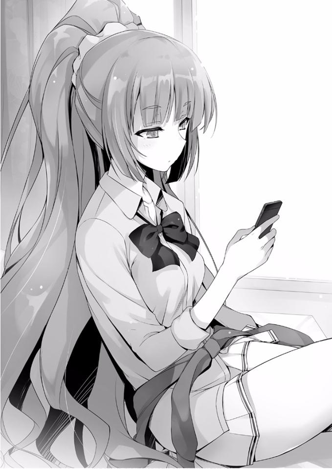
— Ahh, Rinocchi, ¿cómo están las cosas allí? Aquí las cosas son terribles —
le habló a su amiga por teléfono.
Como éramos las únicas personas en la sala, naturalmente pude escuchar cada detalle de su conversación. La peor parte es que una vez que ella termina su llamada, un incómodo silencio descendió sobre la habitación. Entonces ella me habló
— Aah... hablando de eso ¿eres el “objetivo”? Parece que Yukimura-kun y Soto... algo, no lo son— ella me pregunta.
Al menos recuerda el nombre de Sotomura, pensé. Como no había nadie más en la habitación, parece que ella eligió hablar conmigo.
Fue una pregunta que Yukimura también me hizo hace un momento. No se puede evitar que todos quieran comprobar esto conmigo.
— No— le respondo.
— Ya veo, entonces está bien —pero a diferencia de Yukimura, no volvió a preguntar para confirmarlo.
— ¿Confías en mí?— le pregunto.
— ¿Ha? ¿Dijiste que no eres el “objetivo”, verdad? —ella me responde.
Me sorprendió que ella confiara tan fácilmente en mis palabras. No es como si alguna vez nos hubiéramos llevado bien o algo así. Pero supongo que no hay necesidad real de confirmarlo, porque lo que realmente pretendo en este examen no son los puntos.
Lo que quiero confirmar es si esta persona conocida como “Karuizawa Kei” es realmente una existencia útil o no.
— Ambos llegaron temprano —Parece que los tres estudiantes de la Clase B
han llegado al mismo tiempo.
— Vamos a llevarnos bien hoy también —le respondo a Ichinose. Ichinose también llamó a Karuizawa con esas palabras, pero la ignoró y continuó jugueteando con su teléfono.
Y como ayer, los miembros se reunieron antes de la discusión. Parece que la situación aún no ha cambiado en absoluto.
La clase A tomó rápidamente su distancia y solo las tres clases restantes se reunieron para formar un círculo. Al ver eso, Karuizawa se levantó y se unió a la Clase A y se sentó junto a Machida. Esa acción probablemente fue tomada como una medida defensiva contra Manabe. Machida no participaba activamente en las discusiones, pero su “presencia” era muy fuerte y su voz era influyente en el grupo. Y todavía existe la diferencia de fuerza entre un estudiante y una estudiante, que deja a Manabe y las chicas de Clase C
incapaces de hacerle nada a Karuizawa con Machida alrededor.
Si Karuizawa hubiera decidido depender del poco confiable yo o Sotomura, Manabe y su grupo no dudarían en atacarla. Pensando de esa manera, la decisión de Karuizawa de elegir a Machida es correcta.
— Está bien, si pasa algo, definitivamente te salvaré —Machida le promete a Karuizawa.
— Gracias, Machidakun —responde Karuizawa.
Parece que al confiar en él, Machida se ha vuelto demasiado consciente de Karuizawa. Como ella es una linda chica en el exterior, no se puede evitar, incluso si sentimientos de protegerla nacen dentro de Machida. Dejando de lado esta nueva historia de amor, el problema real en este momento es el examen. Al igual que nosotros, las otras clases probablemente también entiendan. Deben haber hablado de ello como nosotros, y deben saber si el “objetivo” está en su clase o no.
— Ahora, he estado pensando en ello desde anoche. Pero, creo que deberíamos discutir entre nosotros una forma de descubrir quién es el
“objetivo” —dice Ichinose.
— ¿Eso de nuevo? Ya te dije que hay personas con las que no puedes negociar. Y sin participar nosotros, no hay manera de que puedas descubrir al “objetivo” ¿no? —las palabras que se burlan de Ichinose así, provienen de la Clase A.
— No lo creo, creo que es una cuestión de confianza. Y es por eso que hoy vamos a jugar a las cartas con todos. Por supuesto que no lo haré
obligatorio, así que solo las personas dispuestas se unirán —Ichinose continúa mientras saca una baraja de cartas con una sonrisa.
— Jajajaja, ¿construir confianza con un juego de cartas? Eso es estúpido —la Clase A continúa con sus burlas.
— Pueden pensar eso, pero si lo prueban es sorprendentemente divertido. Va a ser una larga hora para que la pasen solo en silencio. Está bien si no se sienten aburridos —dice Ichinose en respuesta y, como de costumbre, en la Clase B todas las voces le dan su consentimiento.
— También participaré. De todos modos estoy libre —agrega Sotomura.
Pero, por supuesto, parece que nadie más está dispuesto a estar de acuerdo con el plan de Ichinose, así que levanto mi mano ligeramente y le doy mi consentimiento.
— Entonces somos nosotros cinco. Por ahora estoy pensando en jugar Daifugo. ¿Hay alguien que no entienda las reglas? —nos pregunta Ichinose.
Por supuesto, hasta cierto punto, también entiendo las reglas de los juegos de cartas. El daifugo incluido. No parecía haber problemas con todos los demás y el juego comenzó sin problemas. Los otros que no están jugando no muestran interés en nosotros o nos envían miradas de vez en cuando. Ichinose procedió a barajar las cartas que estaban divididas equitativamente entre nosotros cinco. Tengo un Joker, 2 y 3 de bastos. Parece que se ha formado una mano bastante intensa. Mi mano actualmente abrumaría a la mayoría de los otros jugadores, pero en Daifugo, no se puede decir con certeza si la mano más fuerte siempre gana. Una revolución puede ocurrir y debilitar tu mano y enviarla a una caída en picada.
Pero no se puede negar el hecho de que mi mano me da una ventaja. Debería pensar en una estrategia sólida para utilizar esto. Tengo que admitir que jugar a las cartas es una experiencia mucho más profunda de lo que jamás imaginé. Sin mencionar que la personalidad de cada jugador se destaca en el juego. Ichinose, por ejemplo, no lucha solo con su mano, sino que también analiza cuidadosamente a los otros jugadores y usa su ritmo para su ventaja.
Hamaguchi está apostando todo en el final del juego. Parece que sus estrategias reflejan sus personalidades.
— ¡Una vez más!— Sotomura gritó.
Me esperaba que Sotomura, quien suele estar muy bien informado sobre los temas relacionados con lo otaku, exhibiera una personalidad mucho más tranquila. Pero parece que es de los que se enoja cuando comienza a perder.
Pero también parece ser el tipo de persona que se enfría rápidamente ya que volvió a la normalidad una vez que terminó el juego.
Creo que esto es lo que Ichinose esperaba. Explorar las personalidades y las características de los jugadores. Por supuesto, solo ayudó un poco, y el diálogo con el resto del grupo todavía no se lleva a cabo. Pero eso no significa que solo a Sotomura, sino que también podría haber estado vigilando mi comportamiento.
Desde la perspectiva de Ichinose, me pregunto cómo soy visto. Desde un punto de vista objetivo... Estoy seguro de que soy un hombre realmente aburrido.
Activo con una buena mano pero pasivo con una mala. Debo parecer un hombre muy común. Este enfoque es mejor que adaptarse al juego y desorientar las observaciones de Ichinose. Y así continuamos jugando a las cartas, comenzando con Daifugo y al final incluso habíamos jugado Old Maid. Y para cuando terminamos, ya había pasado una hora. Ni la Clase A ni la Clase C se unieron, y al final de todo, solo nosotros cinco habíamos participado en los juegos.
— Fue divertido, a veces es bueno jugarlo de la manera anticuada —dijo Sotomura, aparentemente más feliz jugando a las cartas que tener que sentarse durante una hora discutiendo.
Pero solo repitiendo estos juegos como una especie de táctica de guerra psicológica, todavía no puedo ver cuáles son los verdaderos objetivos de la Clase B. Estoy seguro de que es algo que solo Ichinose sabe.
— Entonces... me despido.
— ¿A dónde vas?
— No puedo permitir que la Clase A se escape así.
— ¿Entonces vas a ir a ver a Katsuragi-kun?
Parece que Ichinose está planeando ponerse en contacto directo con el hombre que planificó la estrategia de fortaleza atrincherada de la Clase A. Aunque normalmente no soy el tipo de persona social, debería aprovechar esto.
— Si te parece bien, ¿puedo acompañarte? —le pregunto.
— Por supuesto que estoy completamente de acuerdo con eso, ¿quizás Ayanokouji-kun también está interesado en Katsuragi-kun? —Ichinose me pregunta.
No es que ella fuera cautelosa conmigo, sino genuinamente estaba curiosa mientras inclinaba la cabeza cuando me preguntaba.
— Ese no es el caso, es solo que Horikita también está en el mismo grupo que Katsuragi —le contesto.
— Ya veo, ya veo. Entonces vayamos juntos, ¿nos vamos? Nos vemos luego, Hamaguchi-kun —dijo Ichinose mientras se iba conmigo, asintiendo como si estuviera convencida de mi razonamiento.
Hamaguchi la ve irse. A pesar de ver a Ichinose como su líder, parece que Hamaguchi también es capaz de tomar acciones individuales. Esto es muy diferente de la relación rey-súbdito que Katsuragi y Ryuuen tienen con su clase.
Mientras las discusiones sean al mismo tiempo, la hora en que terminan también debería ser la misma. Ichinose aceleró su paso por el corredor para llegar antes de que el grupo (Dragón) terminara su reunión.
— Démonos prisa, ¿de acuerdo? —me dice.
Y con esto, Ichinose camina rápidamente hacia el destino con ligera urgencia.
Como todas las habitaciones están ubicadas en el mismo piso, es posible recorrer rápidamente la distancia entre la habitación de un grupo y otro. Solo pasaron uno o dos minutos desde que terminó el período de discusión, y los estudiantes en la sala todavía están dispersos. Y pronto llegué frente a la habitación del grupo (Dragón).
Por supuesto, no podíamos escuchar las voces de las personas adentro, pero aún podíamos sentir su presencia, así que nos detuvimos frente a la habitación.
Quizás el hecho de que nadie salga significa que hay una larga discusión en curso. Le envié un mensaje, pero Horikita aún no lo marca como “leído”.
— Parece que se están tomando su tiempo.
— Es difícil imaginar que Ryuuen y Katsuragi tengan una conversación entre ellos. ¿O tal vez este es el poder de la Clase B?
— Eso me pregunto, Kanzaki-kun no es de los que llaman la atención de esa manera... y hablando de que Horikita-san y los demás son de clase D ¿no?
Parece que la clase D también tiene una alineación considerablemente notable allí— Ichinose me dice en respuesta.
No es solo Horikita, también están Hirata y Kushida. Y aproximadamente 10
minutos después del tiempo asignado, la puerta de la habitación del grupo (Dragón) finalmente se abrió. La primera persona que salió de la habitación fue la que Ichinose estaba buscando, Katsuragi. Varios estudiantes de la Clase A lo seguían.
Después de haber notado a Ichinose, Katsuragi se giró para mirarla.
— Ichinose, ¿qué estás haciendo aquí? Esto no es una coincidencia ¿verdad?
— Hay algo de lo que me gustaría hablar contigo Katsuragi-kun. ¿Tienes algo de tiempo? —le pregunta.
— El intervalo del examen es largo. No obstante, no tengo nada que hacer, así que hay tiempo más que suficiente —le dice.
Como se esperaba, no ignoró a Ichinose, líder de la Clase B, y respondió a sus preguntas. Habiendo entendido la intención de Katsuragi, los estudiantes a su espalda se adelantaron y se fueron sin él.
— No hay problema si solo soy yo, ¿verdad? —le pregunta a Ichinose.
Asintiendo con la cabeza, Ichinose se mueve rápidamente hacia la pared para no molestar a los que pasan. Habiendo logrado unirme a la conversación, estoy junto a Ichinose. Y desde la perspectiva de Katsuragi, el haberme visto como el único observador parecía aceptable y no dijo nada.
— A juzgar por nuestras discusiones, puedo más o menos entender la estrategia de Katsuragi-kun. Prohibiste hablar a todos los estudiantes de la
clase A en los grupos, ¿verdad? De ser así, ¿reconsiderarías esa decisión?
Este examen gira en torno al diálogo, ¿no es así?— Ichinose le pregunta a Katsuragi.
En nuestras tres discusiones, la Clase A obstinadamente mantuvo silencio. Y
ese tipo de fortaleza no es algo que Ichinose pueda romper de golpe. Para Ichinose, esta debe ser una oportunidad para romper esa defensa. Ahora, veamos la respuesta de Katsuragi.
— Una petición razonable. Pero eso es algo de lo que me he cansado muchas veces desde ayer, hasta el punto que pienso que llegas tarde a preguntarme esto, Ichinose— responde.
Parece que la estrategia de Katsuragi ha recibido mucha más atención de la esperada.
— Tenía mis propias circunstancias que considerar, en cualquier caso Katsuragi-kun, ¿reconsiderarías tu estrategia de guardar silencio? —
Ichinose le pregunta. Katsuragi parecía estar considerando las quejas planteadas en su contra por las otras tres clases.
— La respuesta es la misma sin importar quién lo pida, esta es una estrategia que hice para ganar. Y hay un razonamiento detrás de ella. Dices que este examen gira en torno al diálogo. Pero si hay algo con lo que no estoy de acuerdo, es esto. Este examen es una prueba para “pensar”. Sería problemático si malinterpretases ese aspecto del examen. Por eso, teniendo en cuenta el examen, decidí prohibir la discusión. No hay problema con eso— Katsuragi responde a Ichinose—. Mis palabras pueden ser torpes, pero no están equivocadas. No solo este examen, sino también en los que vienen. Buscaré formas de lograr resultados sin hacer nada. Jugaré para mantener la posición actual de la Clase A. Creo que no hay nada de malo en eso— le dice.
— Sí, si esta fuera una competencia directa entre clases, Katsuragi-kun tiene la idea correcta, pero en un examen con las clases mezcladas como este,
¿es la manera correcta de hacer las cosas?— Ichinose le pregunta.
Ichinose contactó a Katsuragi para intentar cambiar su opinión, pero esta vez parece que Katsuragi ha tomado la decisión correcta. Solo hay cuatro resultados
posibles para este examen. Los estudiantes pueden optar por aprobar el examen a través de cualquiera de éstos. Sin interesarse en la lucha entre clases, Katsuragi parece enfocarse solo en liderar la clase A en este examen.
— Más discusión no tiene sentido, Ichinose. Debes saber que no voy a cambiar mi decisión —le dice.
— Romper una montaña sin moverte un centímetro, ¿es eso?— Ichinose comentó con una sonrisa amarga.
Al no haber visto señales de que se dé por vencido, parece que ha entendido que Katsuragi no estará de acuerdo con nuestra idea. Realmente esperaba este tipo de resultado desde el principio.
— ¿Todavía vas a luchar?
— Por supuesto, ese es el punto de este examen.
Ichinose y Katsuragi. Dos élites poderosos chocando directamente.
— Lo siento, pero ya puedo ver los resultados de este examen. Siempre que nosotros, de la Clase A, nos neguemos a cooperar, sus acciones estarán severamente limitadas. No habrá posibilidad de que ganen.
De hecho, incluso con tres clases perfectamente unidas, este examen no es fácil de aprobar. Tan pronto como se revele la identidad de un “objetivo”, alguien está propenso a convertirse en traidor. Mientras el traidor pueda obtener algo, será difícil mantener la cooperación hasta el final. Si la recompensa no se distribuye de manera equitativa y justa, tampoco tendría sentido cooperar.
— Dime algo. Si fueras la líder de la Clase A, ¿no hubieras usado la misma estrategia que yo? —Katsuragi pregunta a Ichinose.
— Quién sabe, todavía no he visto las cosas desde la perspectiva de la Clase A. Si estás en posición de cazar de esta manera, ¿no debería ser después de que hayas tenido mucha experiencia en ser la presa? Correr desde el principio es algo difícil.
Como si escuchara tonterías, Katsuragi cerró los ojos y se cruzó de brazos y finalmente se encontró los ojos con Ichinose una vez más.
— Esta es solo mi opinión personal, pero creo que si estuviéramos en la misma posición, tú también habrías renunciado al diálogo y elegido la misma estrategia que yo. Si es para proteger a mi clase, no me importa recibir críticas de otras clases en absoluto.
Katsuragi lo dice con la suposición de que Ichinose comparte la misma convicción que él. E Ichinose simplemente sonríe suavemente en respuesta a su evaluación de ella.
— Lo siento por tomar tu tiempo, creo que ahora entiendo. Tus sentimientos y tu forma de pensar —le dice.
— Es bueno escucharlo. Disculpa —Ichinose no se movió ni una pulgada cuando vio a Katsuragi irse.
— Este examen, es realmente fácil cuando juegas a la defensiva, ¿eh? No debería haber hecho algo innecesario —dice Ichinose.
En ese frente, solo las clases con gran necesidad de puntos tendrían que descubrir pistas desesperadamente, pero incluso así existe un gran riesgo.
Eliminar el “objetivo” podría causar problemas para la clase también
— Aun así, Kanzaki-kun y los demás todavía no salen.
Aunque Katsuragi y la Clase A se fueron primero, los otros aún no se han mostrado. 1 hora es la cantidad mínima de tiempo requerida para la discusión, pero tomarse más tiempo no está prohibido.
— ¿Vas a esperar a Kanzaki? —Le pregunto a Ichinose.
— Ayanokouji-kun, también estás esperando a Horikita-san, ¿no? Me gustaría escuchar lo que tienen que decir, esperemos juntos.
Ella puede hablar con Kanzaki cada vez que quiera, pero mis oportunidades de hablar con Horikita son limitadas. Ya que Katsuragi la rechazó, también podría querer escuchar las opiniones de otras clases. En primer lugar, no creo que haya una manera de romper la estrategia de Katsuragi. Y a partir de ese momento, esperamos alrededor de 30 minutos y la puerta de la habitación del grupo (Dragón) finalmente se abrió. Los que salieron fueron los estudiantes de la Clase C, excepto Ryuuen, y también Kushida y Hirata.
— ¿Hmm? Ayanokouji-kun, ¿qué estás haciendo aquí? ¿Estás esperando a Horikita-san?
Cuando me vio, Kushida se acercó de forma extraña.
El recuerdo de lo que pasó con ella ayer vino a mi mente y mi cuerpo se puso rígido de inmediato. Pero parece que Kushida sigue siendo la misma de siempre y no ha mostrado señales de cambio. Es un poco desafortunado
— Hola, Kushida-san.
— Uwaa, es Ichinose-san. Hola. Esto es inesperado y una extraña combinación.
Parece que Kushida no sabe que nos conocíamos y no pudo ocultar su sorpresa.
— Estoy esperando a Horikita-san y Kanzaki-kun, pero ¿todavía están hablando adentro? —le pregunta a Kushida.
— Esos dos todavía están hablando con Ryuuen-kun, parece que puedes entrar —Kushida hace un gesto hacia la puerta invitándonos a entrar.
— Está bien, está bien. Puedo esperar si aún están en medio de la discusión.
— Está bien. El límite del examen es de solo 1 hora. Más allá de eso, puedes entrar y salir como desees. Además, no sabes si todavía están hablando del examen o no —y con una actitud un poco agresiva, Kushida abre la puerta y nos obliga a entrar.
Como me obligaron a entrar y sin motivo para negarme, entré junto con Ichinose.
Mis ojos se encontraron con los de Hirata por un momento.
Y en la sala, tres personas estaban sentadas un poco separadas entre ellas.
Parecía una situación de tres estados. Pero no era una atmósfera tensa, sino relajada. En el momento en que los intrusos pusimos un pie en la habitación, sus miradas se volvieron de inmediato hacia nosotros. Horikita y Kanzaki no mostraron mucho cambio en sus expresiones, pero Ryuuen parecía haber encontrado algo divertido mientras se reía. Luego levanta la mano y llamó a Ichinose.
— Hey. ¿Has venido hasta aquí para hacer un reconocimiento? No seas tímida, toma asiento.
— Esta es ciertamente una combinación interesante. Estoy muy interesada en escuchar de lo que has estado hablando después de la hora obligatoria.
— Kuku, por supuesto. Originalmente, debes haber pensado que estarías en el lugar de Kanzaki. Pero el hecho es que perteneces a un grupo diferente.
Y a un pequeño equipo con apenas lo esencial. O tal vez solo sea eso el tipo de persona que eres —le dice a Ichinose.
— Vamos, Ryuuen-kun. La colocación fue decidida por la escuela, ¿cómo podría haberlo sabido? Estamos peleando basándonos en la información y la situación que nos han dado. Por la forma en que lo dices, parece que es al revés y ¿la escuela intencionalmente nos agrupó?
Ichinose actúa como si ella no se hubiera dado cuenta o notado nada, pero Ryuuen no es el tipo de hombre que cree en algo así. Mientras se ríe, se mueve rápidamente y cierra la distancia entre él e Ichinose. Y parece que él ni siquiera se ha dado cuenta de mi presencia. Pero, personalmente, me gustaba más de esa manera.
— Si todavía no te has dado cuenta, te lo diré. En este examen, esos profesores decidieron intencionalmente los grupos. Eso es obvio. Eso también significa que hay una razón por la que fuiste excluida de este grupo a pesar de ser la líder de la Clase B —Ryuuen le dice a Ichinose.
— Hmm. Entonces no es una agrupación aleatoria sino predeterminada.
Sabía que el grupo de Ryuuen-kun estaba formado por gente extremadamente talentosa, pero parece que otros grupos también se deciden así. Gracias por tu información. Pero, ¿está bien? ¿Darme la información así? —ella le pregunta.
Que Ichinose responda así era de esperarse, pero no me perdí el cambio en la expresión facial de Ryuuen. Normalmente, al escuchar hechos que uno no debería haber sabido, habría sorpresa, ansiedad o duda. Pero sin perder el ritmo, Ichinose le había agradecido su información. Esa no fue una respuesta natural.
Por supuesto, mirándolo desde la perspectiva de su interlocutor, la reacción de Ichinose la hacía parecer que ella había sabido esta verdad todo el tiempo, pero que simplemente estaba ocultándolo. Incluso si él no está seguro de esto, la posibilidad de que le haya sacado esta información por instinto también es alta.
Fue solo una breve conversación, pero los dos parecieron sacar un poco de información uno del otro.
En este caso, si Ichinose notó las agrupaciones intencionales por parte de la escuela no es importante. Lo que es importante es “por qué”, si se dio cuenta, decidió guardar silencio sobre el asunto. Eso es lo que significa luchar por leer los movimientos de los demás.
— Pero aun así... —y con una cara exasperada, Ryuuen finalmente volteó hacia mí— A mí también me gusta perseguir el culo de una mujer. Pero eres peor que eso ¿no? Primero Suzune y ahora Ichinose. Siempre estás colgando del trasero de una mujer —me dice.
Por supuesto que esa no era mi intención, pero ahora que lo pienso, él tampoco está equivocado y no puedo negar eso.
No es que Ryuuen esté particularmente interesado en mí, ya que no dice nada más después de eso.
— Has venido en un buen momento, Ichinose. Tengo una propuesta interesante que hacerte.
— ¿Propuesta? En cualquier caso, te escucharé. ¿Qué es?
— Es una charla sin sentido. Una pérdida de tiempo incluso prestarle atención —aparentemente ya había escuchado esa propuesta, Horikita rápidamente se retrajo como para evitarlo.
— Es una propuesta para trabajar juntos y aplastar a la Clase A. Pero parece que Suzune y Kanzaki me han rechazado —dice.
— ¿Qué quieres decir?
— Verás, le hablé a Suzune al respecto antes, ya conozco las identidades de todos los objetivos de la clase C.
Y al igual que Katsuragi tenía su estrategia. Ahora parece ser el turno de Ryuuen de hablar de la suya.
Parece que hemos evolucionado más allá del escenario en el que estábamos por la mañana.
— Tres clases combinarán fuerzas y compartirán información, lo cual también incluye las identidades de todos los “objetivos” y omitirán las reglas de la escuela para este examen —así que eso es lo que significaría la alianza de las tres clases.
— Es una idea bastante audaz. Pero cuán realista es, es un asunto completamente diferente. En primer lugar, ¿cómo podemos confiar en que Ryuuen-kun ya conoce los “objetivos” de la Clase C?
— No puedes confiar en mí y eso es natural. Entonces, ¿hacemos un contrato para este caso? Un compromiso de compartir entre nosotros las identidades de los “objetivos” y formar una conspiración contra la A. De esa manera, dejando la A un lado, tres las clases formarían efectivamente un asedio contra ella.
Pero esta es una estrategia que parece colapsar si la Clase A se niega a seguir el juego.
— Incluso si redactamos un contrato, sin saber quién te va a traicionar, no tiene sentido. Todo habrá terminado si la Clase C nos traiciona.
La declaración de Horikita era el seguimiento natural de esa propuesta. Según la información que he reunido, parece que Ryuuen ha formado una alianza con la Clase A durante bastante tiempo. Y durante la prueba de la isla, Ryuuen ha demostrado su propensión a la traición.
El hecho de que Katsuragi no haya presentado una sola queja en su contra muestra cuán bien este hombre hace su trabajo.
La estrategia en sí misma no es tan mala, sin embargo, el problema es que Ryuuen es quien la propuso.
— Lo que Horikita-san dice es razonable, a menos que también conozcamos la identidad de los “objetivos” como Ryuuen-kun, esta es una propuesta no tiene sentido.
— Es inútil hacerse la tonta, no hay manera de que no hayas analizado a las clases también —le replica Ryuuen a Ichinose.
Ambos tenían sonrisas en sus caras, pero la atmósfera entre ellos había cambiado ligeramente, como agujas pinchando su piel por todas partes.
— Me estás sobreestimando. No he hecho tal cosa, y además, esta propuesta es de muy alto riesgo y poco beneficio. Temo que no puedo aceptarlo —Ichinose le dice a Ryuuen.
— Hay un momento para los secretos y uno para las acciones.
— Puede ser desde tu punto de vista, pero ahora que estás reuniendo información tan agresivamente. ¿No es tu sueño elevarte a la Clase B de esa manera?
— Horikita-san de la Clase D también se opone. Desde el principio, no había forma de que esta propuesta fuera aceptada.
— No se puede evitar, después de todo, Suzune tiene una razón para rechazar la propuesta.
— ¿Qué se supone que significa eso? —Horikita le pregunta a Ryuuen.
— Entiendes, ¿no? Para que esta estrategia funcione, primero debes comprender perfectamente tu propia clase. Y para la Clase D que no tiene trabajo en equipo, es una tarea imposible ¿verdad? Y también es imposible para la Clase A que actualmente está dividida en dos facciones
—responde.
La situación cambia una vez más, ahora parece como si una atmósfera nublada hubiera descendido sobre la habitación.
— Pero para mí, que gobierna la clase y para la increíblemente popular Ichinose, esta estrategia es posible. En este momento propuse una alianza de tres clases, pero incluso si solo son dos clases, aún es posible. La probabilidad de ver a través de las reglas del examen puede disminuir un poco, pero si soy yo, ciertamente puedo llevarlo a cabo. Si puedo hacerlo, tanto A como D podrían quedar al desnudo— dice Ryuuen.
Descubrir los "objetivos" de las Clase A y D trabajando las dos clases. Esa era la propuesta de Ryuuen.
El hecho de que Ryuuen propuso audazmente esta estrategia a la Clase B
solicitando su cooperación frente a Horikita, Kushida, yo y la Clase D, en sí es incomprensible e inquietante. Incluso si esta estrategia no es perfecta, parece que Ryuuen podría obtener algo conociendo las identidades de los “objetivos” de
la clase y llegaría a ese punto en un paso más. Si es así, este será un momento vital para la Clase D.
— Estas podrían ser palabras innecesarias, pero ¿no significa eso que tu estrategia aún es imperfecta?
Pensé que ella simplemente observaría pero ahora la postura de Horikita parece ser una que lo marca como enemigo. Incluso si Ichinose decide aliarse con la Clase D, aún no sabemos cuánto podemos confiar en ella.
Y teniendo en cuenta eso, sería un error fatal permitir que Ichinose establezca una conexión con Ryuuen aquí.
— ¿Comprendes ahora la situación, orbitador?— Ryuuen se ríe burlándose de mí, pero decidí no guardar silencio y respondí con mi honesta opinión.
— Si las clases B y C forman una alianza, naturalmente esta vez las clases A y D formarían una alianza también, ¿no crees? Admito que la clase D está fracturada en este momento, pero una vez que la posibilidad de perder se convierte en realidad, creo que se unirá. Es lo mismo para la Clase A.
— No es como si me estuviera aliando con Ichinose en este momento. Así que a menos que puedas determinar el hecho de que se formó esta alianza, dudo que Katsuragi coopere contigo— Ryuuen me responde.
Es cierto que Katsuragi es un hombre prudente que no aceptará negociaciones tan ambiguas. Sin embargo, dado que él también ha sufrido a manos de Ryuuen, todavía hay espacio para razonar con él. Después de lo que dije, parece que Horikita también se dio cuenta de que esta propuesta no funcionaría.
— No tiene sentido esta conversación. De todos modos, eventualmente nos enfrentaremos— dijo ella.
— ¿Qué quieres decir con eso, Suzune?
— Todo lo que quiero decir es que él tiene un punto. Si tienes la intención de continuar esta discusión como una reunión estratégica, tendré que asumir que “esto es realidad” y también actuar en consecuencia— responde Horikita.
— Como desees, estoy ansioso por ver si te las arreglas para formar una alianza o no, ¿eh?
Dice Ryuuen mientras lanza hostilidad hacia sus enemigos y al mismo tiempo, extiende descaradamente una oferta de cooperación.
Horikita responde con la determinación de luchar en respuesta a eso. Esto es ciertamente un freno dirigido hacia Ichinose. Si ahora traiciona a la Clase D, todas las otras clases la verán como una traidora. Una persona que traiciona incluso a sus aliados en un abrir y cerrar de ojos por el bien de los puntos. Si esa reputación se quedara con Ichinose ahora, le representará un problema por el resto de su larga vida en la preparatoria.
— Lo siento Ryuuen-kun, pero también hubo personas en Clase B que fueron lastimadas por tus acciones. Aunque sea por el hecho de ganar puntos, no puedo cooperar tan fácilmente contigo.
— Ya veo, eso es desafortunado —le dice Ryuuen a Ichinose.
Pero su rostro muestra que esperaba este resultado desde el principio y no estaba decepcionado en lo más mínimo. Ryuuen se levantó para dejar la habitación y pasar a nuestro lado. Cuando se fue, Ryuuen se giró una sola vez para mirarme. Tal vez lo hizo inconscientemente, pero su mirada se posó en mi rostro.
— ...no puede ser —susurró y se fue. Yo, por supuesto, no reaccioné a esas palabras suyas.
Cuando Ryuuen negó con la cabeza y se fue, Kushida también habló.
— Tengo que irme ahora también, mi amiga me está llamando —
disculpándose así, Kushida salió rápidamente de la habitación después de Ryuuen.
— Parece que vio a través de nosotros —Ichinose suspiró levemente.
— Esto va a ser problemático, ser blanco de alguien así.
— A pesar de que tiene el kanji para dragón en su nombre, es una serpiente de pies a cabeza. Una vez que ha puesto la mirada en su presa, hará todo lo posible para devorarla. Pero en lugar de mí, en este momento, es Horikita-san en la que ha puesto su mirada. En este momento, Ryuuen es más cauteloso con la Clase A, y debería estar consciente del hecho de que la Clase B también será su enemiga algún día —dice Ichinose.
Es cierto, la Clase D solo había emergido de las profundidades en las que se había hundido después de la reciente prueba en la isla. Tal vez sea el resultado de eso, pero ninguna de las otras clases está viendo a la clase D como una amenaza tan grave todavía.
— Debería estar bien, Horikita no es del tipo que se desmorona bajo presión
—le digo.
— Por supuesto.
Dije eso, pero existe la posibilidad de que Horikita aún pueda evolucionar a partir de la presión ejercida sobre ella aquí. De esto estoy seguro. Ya sea ahora o en diez años a partir de ahora, si vas a evolucionar como persona, en general necesitas ser destrozado primero.
— Horikita-san, Ayanokouji-kun. Ya que la gente ahora sabe acerca de la alianza entre nuestras clases, lo preguntaré por si acaso, pero ¿creen que en este examen, una alianza que trascienda las clases puede formarse realmente? —Ichinose nos pregunta.
— No hay una necesidad real de hostilidad, pero pedir cooperación podría ser un poco difícil. El examen en sí está configurado para que dos clases que cooperen perfectamente sea imposible. Es por eso que la cooperación absoluta e inquebrantable entre la Clase B y la Clase D es una necesidad.
No creo que se pueda formar una alianza de este tipo.
— Umm. Como se esperaba de Horikita-san. Entiendes perfectamente el examen. La idea de Ryuuen-kun no era factible desde el principio. Fue una buena elección aliarse contigo —Ichinose le dice a Horikita, aparentemente feliz de que sus ideas parezcan haber coincidido perfectamente— Sí. La estrategia de Ryuuen-kun terminará en fracaso. No hay necesidad de preocuparse por eso. El problema es la estrategia establecida por Katsuragi-kun. Habiendo hablado con él, ¿qué piensan? —Ichinose le pregunta a Kanzaki y Horikita sobre Katsuragi.
— Como te informé ayer, no hay espacio para que los otros grupos hablen con ellos. Él no nos responde y se niega a participar en las discusiones.
No creo que cambie su postura antes del final examen. ¿Es la postura la misma incluso sin Katsuragi presente?— Kanzaki le pregunta a Ichinose.
— Sí. No hay esperanza en mi grupo tampoco. Parece que tendremos que abordar esta situación con un enfoque diferente— La cantidad de períodos restantes para discutir son tres.
Y después de eso, cada grupo tendrá que enviar sus respuestas de forma individual. Ahí es cuando tendremos que hacer una elección. ¿Por la clase o para el grupo? ¿O tal vez solo por ti?
— Entonces volveré a mi habitación.
Como todos los del grupo (Dragón) habían salido de la habitación, Horikita también se levanta para regresar a su habitación. En ese momento, Ichinose se encontró con Hamaguchi que parecía haber estado esperándola afuera. Ichinose miró brevemente la espalda de Horikita, y luego volteó para mirarme.
— Si te parece bien, ¿podrías acompañarme un poco? —Ichinose me pregunta.
— Claro. Está bien.
En este momento no es solo Ichinose sino también otros dos estudiantes de la Clase B, así que se sentía un poco estrecho. Luego al separarse de Kanzaki y llegar a la cubierta, de repente nos saludaron las figuras de los estudiantes que ya habían cambiado a un estado de ánimo festivo.
— Horikita-san puede haber dicho eso, pero todavía creo que todos podemos trabajar juntos y aún hay espacio para la cooperación —Ichinose finalmente me dice.
— ¿Espacio para la cooperación?
— Sí, la Clase A de repente adoptó esa postura y me sorprendió, pero aún hay espacio para la cooperación. Por eso tenemos que exponer todo, ¿no estás de acuerdo? —ella me pregunta.
— ¿Todo?
— Al final del día, este examen se trata principalmente de encontrar al
“objetivo”. Así que eso significa que todo lo que tenemos que hacer es descubrir tantos “objetivos” como sea posible para reducir la posibilidad.
Por eso, te diré... que no soy el “objetivo”. Pero los encontraré, y llevaré a nuestro “grupo” a la victoria —Ichinose me dice eso claramente mientras
me mira a los ojos. Y agrega esto: — Si todavía dudas de que yo soy el
“objetivo” y simplemente me estoy escondiendo, incluso si me preguntas mi respuesta a eso es simple... estoy haciendo todo lo que puedo por la Clase B —Esas palabras me atravesaron con un aura misteriosa que parecía no poder entender.
Habiendo observado el comportamiento de Ichinose hasta ahora, solo queda una cosa por qué cuestionarla. Si realmente quisiera pedir mi cooperación en este instante y desea ganar mi confianza absoluta, debería haber ido un paso más allá. Es decir, revelarme el contenido de su teléfono para asegurarme de que ella no es el “objetivo”. Pero Ichinose no muestra señales de hacerlo, ni siquiera noté signos de que intentara sacar su teléfono. Entonces, ¿debería tomar su declaración como las divagaciones de una mujer mentalmente enferma?
¿O como una historia que todavía tiene un lado oculto? Esa es la razón del aura misteriosa. Puede ser una sabia decisión aceptar honestamente su oferta aquí y ahora.
— ... ¿es absurdo? —Ichinose me pregunta ansiosamente después de recibir solo silencio de mi parte.
— No, lo siento. No es una proposición tan absurda. Me sorprendió que fueras tan honesta conmigo. Normalmente, uno no intentaría llevar a todo el “grupo” a la victoria si realmente fuera el “objetivo”.
— No usaré mentiras en un lugar como este. Lo habría hecho si lo hubiera necesitado durante el examen, pero tanto como pueda, trato de ser honesta —me dice—. Todo lo que te he dicho hasta ahora, tengo la intención de hacerlo para permitir que mi clase gane justamente. Solo pensé en encontrar al “objetivo” para ver si comparten la misma idea. Ah, Ayanokouji-kun, no necesitas responder si no quieres. Solo quería que supieras mis sentimientos. Pensé que sería más fácil si estuviéramos en la misma sintonía —dice.
— Aunque las alianzas perfectas puedan ser imposibles, es una buena idea mantener buenas relaciones. Si no te respondo honestamente aquí, esa relación podría desmoronarse —le contesto.
— No, no. Para nada —trató de evitar que respondiera, pero esto no es algo que deba ocultar aquí.
Lo que dice Ichinose es indudablemente cierto, lo que gana al traicionarme aquí es pequeño. No tiene sentido engañar a la Clase D, que ya se ha hundido hasta el fondo y apenas está ascendiendo nuevamente. Por supuesto, no puedo decir con certeza que ella sea 100% honesta al igual que uno no puede estar 100%
seguro de que no será golpeado por un asteroide y morirá. Pero creo que puedo permitirme ser honesto con ella aquí.
— Yo no soy el “objetivo”. Tampoco lo es Yukimura. Estoy seguro de lo de Yukimura. Pero no sé sobre Karuizawa y Sotomura. Y personalmente, estoy de acuerdo contigo, Ichinose. Sin objeciones —le digo.
Escuché de Yukimura que ni Sotomura ni Karuizawa parecen ser el “objetivo”
tampoco, pero lo mejor será alejar esas aseveraciones tan inciertas de esta conversación. Todavía no puedo decir que no sean “objetivos” con confianza. Y
a juzgar por su actitud y su comportamiento, lo que Yukimura me confió es cierto.
Yukimura no es el “objetivo”.
— L-Lo siento. Parece que te obligué a hablar —Ichinose entonces baja la cabeza ante mí vencida por la culpa.
Pero no hay necesidad de disculparse. Porque un día, soy “yo” quien deberá disculparse con ella por lo que estoy a punto de hacer.
— Hamaguchi-kun, ¿podrías venir aquí por un momento?
— ¿Qué pasa, Ichinose-san? —Cuando Hamaguchi se acercó, Ichinose comenzó a informarle de la situación actual.
Después de escucharla, pareció sorprendido de que Ichinose lograra establecer una relación de cooperación con la Clase D. Pensé que la personalidad de Ichinose por sí sola le habría valido la aprobación de la clase.
— Si él mismo lo ha confirmado, no hay razón para que lo rechace. Tampoco soy el “objetivo”. Está bien confiar en mí —me dice Hamaguchi.
Y teniendo en cuenta su relación con Ichinose, su credibilidad también es bastante alta. Hay muy poco que ganar mintiendo aquí, porque podría arruinar la relación de Ichinose con Horikita si fuera expuesta.
— Entonces todavía no has revisado tu clase —le pregunté.
Si es Ichinose, quien es tremendamente popular, podría haber obtenido la información de su clase incluso sin usar un reino de terror como lo hace Ryuuen.
— Trato de dejar que mis compañeros tomen acciones individuales. Ese tipo de cosas. Hay quienes simplemente quieren puntos para sí mismos. No es como si pudiera decidir el “objetivo” de entre ellos por mi cuenta —dice Ichinose— Puede ser difícil, pero verificaré a los restantes. Si responden con sinceridad, te avisaré después Ayanokouji-kun.
— Estoy agradecido por eso. Pero no es como si te fuera a decir todo sobre la Clase D. Todavía no podemos decir que hayamos establecido una relación positiva en este momento y aún no hay garantía de que lo que acabas de decirme es verdad —le digo a Ichinose.
— Está bien. Mientras solo Ayanokouji-kun coopere conmigo, estaré satisfecha con eso.
Y con esto, los tres discutimos el examen desde un punto de vista neutral y la cooperación dentro del grupo (Conejo) de repente se ha convertido en una posibilidad. Ichinose, Hamaguchi Yukimura y yo. Los cuatro ciertamente no somos el “objetivo”. Puedo estar seguro de Yukimura al menos al observar su comportamiento y actitud. Eso deja a otras 10 personas aparte de nosotros. El
“objetivo” indudablemente se esconde entre esos 10. En cualquier caso, será una tarea más difícil que encontrar al líder durante la prueba en la isla. Esa es precisamente la razón por la cual este es un examen. Los “objetivos” también sentirán presión sobre ellos y siempre y cuando eviten tomar medidas extravagantes, pueden mantenerse ocultos. Parecía injusto al principio, pero la escuela se aseguró de equilibrar el examen.
— Entonces, ¿cómo pretenden encontrar al “objetivo” de aquí en adelante?
Incluso si lo preguntamos directamente, honestamente dudo que se revelen. No es que puedan ser persuadidos solo con palabras como nosotros tres —nos dice Hamaguchi— La meta de este examen es hacer algo al respecto, ¿verdad?
Exactamente, este es un examen del más alto calibre. Extraer información de una persona que intenta desesperadamente mantenerse oculta. Ahora que
Ichinose hace su movimiento, inevitablemente ocurrirá un cambio en la situación actual.
PARTE 3
A menos que uno sea un Esper capaz de leer mentes, encontrar al “objetivo” no será una tarea fácil. Las personas son mentirosas y están más acostumbradas a mentir. Si existe una persona que nunca ha mentido ni siquiera una vez en su vida, esa existencia misma sería una mentira. Para los humanos, las mentiras son una parte inseparable de ellos mismos. Por lo menos, entre la gente reunida en esta sala, uno de ellos es el “objetivo”. Todavía hay tiempo hasta que comience la discusión propiamente dicha, sin embargo, la razón por la que llegué temprano como la última vez fue para observar el comportamiento de todos en el grupo. Y los primeros que llegaron para la discusión de la noche fueron las chicas de la Clase C. Entraron charlando alegremente entre ellas. Al verme, instantáneamente bajaron sus voces de manera disgustada y rápidamente se distanciaron de mí.
Luego estaba Yukimura, quien entró a la habitación con una cara de aspecto afilado. Casualmente saludándome con la mirada, pronto se sentó cerca de mí.
Él no parecía ser diferente de lo usual. Luego vino el grupo de la Clase A.
Machida y Takemoto. Y luego Morishige. Como de costumbre, han decidido guardar silencio, y se sentaron en el otro extremo de la sala. Cerca de donde estaban sentadas las chicas de la Clase C.
— Hey, Machida-kun, hoy, después de esto se acabe, ¿quieres venir a divertirte con nosotras? Estamos planeando divertirnos después de esto, pero no todavía hemos encontrado con quien ir.
— Veamos...— Machida les respondió.
Machida por lo general no participa en la discusión, pero su “presencia” es fuerte.
Dejando a un lado a Ichinose e Ibuki, parece que todas las otras chicas del grupo están interesadas en él. No es como si estuviera celoso ni nada por el estilo... bueno, podría estar un poco celoso de él. O la Clase C había renunciado a encontrar los “objetivos” o quizás todavía era parte de su plan, pero con esas
palabras habían invitado a Machida a divertirse con ellas. ¿Es así como los hombres y las mujeres profundizan sus relaciones? Parece que Machida también está satisfecho con eso, ya que parecía feliz al considerar su invitación.
Entonces Sotomura y Karuizawa entraron a la habitación. Pero en lugar de estar juntos, parecía que acababan de llegar al mismo tiempo, ya que Karuizawa tenía una expresión de disgusto en su rostro. Tan pronto como entraron a la habitación, ella rápidamente puso algo de distancia entre ellos y se movió hacia el fondo de la habitación.
— Oye, ese es mi asiento.
A pesar de haber llegado más tarde, Karuizawa le dice eso a las chicas de la Clase C mientras las mira con odio, aún cuando llegaron antes. Después de ver a las otras chicas coqueteando abiertamente con Machida, parece que Karuizawa se enojó aún más con ellas.
— No sé de qué estás hablando, ¿qué es tu asiento? Solo busca otro lugar para sentarte— le dijo Manabe a Karuizawa.
— Dije que ese es mi asiento. Muévete —respondió ella.
— ¿Huh? ¿No puedes ver que estoy hablando con Machida-kun en este momento? Vamos a estar divirtiéndonos esta noche —le dice Manabe a Karuizawa.
— Machida-kun, por favor díselo tú mismo. Que quieres que me siente a tu lado —Karuizawa le pide a Machida.
Pareciendo un poco avergonzado, Machida parecía estar debatiéndose sobre a quién elegir. Pero Karuizawa pronto entendió la situación, y rápidamente se interpuso entre Manabe y Machida, y tomó la mano de Machida.
— Esta vez, divirtámonos juntos. Sólo nosotros dos. ¿O has elegido a esa chica? Odio a los mujeriegos, así que si vas a ir con esa chica no saldré contigo —le dice Karuizawa a Machida.
Honestamente, me sorprendió que dijera algo así tan audazmente mientras salía con Hirata. De hecho, Machida parecía sentirse atraído por las palabras “solo nosotros dos” y ya había decidido qué chica elegir.
— ¿Podrías moverte por favor? Ahí es donde se sienta Karuizawa. Esta tarde también— le dice Machida a Manabe.
— ¿Huh? ¿Qué se supone que significa eso? Molesto...
Al decir esas palabras con una cara que decía lo mismo, las chicas de la Clase C se alejaron de Machida. Y entonces Karuizawa rápidamente se movió a ese espacio vacío y se sentó. De hecho, ella se sentó tan cerca que era casi como si estuviera pegada a Machida. Honestamente, sus cuerpos ya estaban tocándose en este punto.
Quizás la única razón por la que las personas no pensaban que esas acciones eran frívolas era porque la gente ya sabía cómo era Karuizawa. Tal vez él no sabe que sale con Hirata, o tal vez lo sepa, pero parece que Machida ha comenzado a abrir su corazón a Karuizawa, o ya se ha enamorado de ella. Si solo hablamos de las apariencias, Karuizawa es verdaderamente linda, y si la miras desde la perspectiva de que te gusta, también es posible que nazcan sentimientos protectores dentro de ti. Lo interesante es que el grupo que acaba de formarse ayer ya había empezado a desarrollar su propia jerarquía de poder y ecosistema. Un solitario es un solitario, mientras que una persona popular seguirá siendo popular.
La división de los estudiantes en jerarquías ya está completa. Pero esta jerarquización no se hace de la manera habitual. Por ejemplo, si dos personas comparten el mismo estatus en el grupo, inevitablemente uno se elevará y el otro caerá en estatus. Incluso podría describirse como un entorno de la
“supervivencia del más apto”. Y el que pierde en dicha competencia será degradado a un rango inferior entre sus pares. Tal vez incluso hasta el final de la escalera. Hasta el punto en que su existencia no importaría nada, incluso si no estaba allí. Por ejemplo, alguien como yo. Lo interesante de este examen es que obliga a las personas que antes habían competido entre sí a unirse. Incluso Ichinose, que es extremadamente popular entre su clase, tiene problemas para influenciar a sus enemigos en esta clase. Si fuera Hirata, ¿tal vez podría haber sido capaz de organizar esto en un grupo más apropiado?
— ¡Vamos a llevarnos bien hoy también! —Ichinose llegó y devolvió la vida a la desanimada habitación.
Inmediatamente me di cuenta de que el ambiente en la sala es especialmente denso hoy y decidí no hablar descuidadamente. Pero aun así, las acciones de Karuizawa me parecieron demasiado contundentes e incomprensibles. Si quería acercarse a Machida, no tenía que enojar a las chicas de la clase C para hacerlo.
Solo sentí--- que este evento y el examen en sí no tenían conexión directa.
Como alguien que había estado mirando a Karuizawa desde el comienzo del primer semestre, puedo decirlo después de observar su personalidad y sus acciones. Que Karuizawa quiere estar en la cima. Por supuesto, ella no es una persona tan talentosa como para llegar así a la cumbre del grupo de chicas. Ella carece del talento de Ichinose y algo así normalmente sería imposible para ella.
Pero hay algo como las “relaciones humanas” que entran en juego aquí. Es un hecho que Karuizawa con una fuerte personalidad se convirtió en la líder de las chicas de la Clase D. Además, se convirtió en la novia de Hirata, la fuerza rectora de la clase y también tiene influencia con los chicos. Si uno aplica el comportamiento de Karuizawa en esta instancia, la verdad se vuelve más clara.
Ella se une al hombre más fuerte que puede encontrar como Machida y gana influencia en el grupo de esa manera. Funciona, de hecho las chicas de la Clase C que no pudieron sobreponerse a la influencia de Machida y volvían de mala gana a sus asientos.
Karuizawa acepta el riesgo de ser odiada a cambio de la dominación absoluta.
¿Por un sentido de superioridad?
¿Para autosatisfacción?
¿O simplemente anhela ser el centro de atención?
Todavía no puedo ver la causa primordial de este comportamiento, pero evidentemente algo en ese sentido es responsable de sus acciones.
— Esto no es bueno.
— Sí, si continuamos así, vamos a permitir que el “objetivo” se escape.
El que respondió a mi murmullo fue Yukimura, que estaba sentado a mi lado.
Sería incómodo corregirlo sobre el tema, así que le seguí la corriente.
— Veamos, veamos. La clase A no se unirá a las discusiones como de costumbre. ¿Verdad?
— Por supuesto. Siéntanse libres de continuar la discusión sin nosotros.
Nuestra postura no ha cambiado.
El estudiante sentado al lado de Machida que hizo esa afirmación y que había estado ocultando sus emociones todo el tiempo era Morishige. Lo he visto antes de este examen. De acuerdo con lo que he escuchado, la Clase A actualmente se divide entre dos facciones. La Facción Katsuragi y la Facción Sakayanagi.
Morishige es uno de los que traicionó a Katsuragi durante la prueba en la isla.
Normalmente no escucharía las órdenes de Katsuragi obedientemente, Sakayanagi está ausente de este crucero debido a su mala salud y sin alguien que le dé órdenes directamente, parece no tiene más remedio que seguir las de Katsuragi.
Esperaba que Katsuragi perdiera inmediatamente la influencia en la clase después de su fracaso durante la prueba en la isla, pero parece que no caerá tan fácilmente. Dado que él también había estado guardando silencio durante dos días, parece que incluso Morishige cree que no tiene más remedio que soportar las órdenes de Katsuragi.
— Como va a ser una pérdida pasar una hora así, ¿jugamos a las cartas otra vez? —Ichinose lo dice como si ya se hubiera acostumbrado a esto cuando propuso el juego de cartas.
En este examen, hay diferentes enfoques que se pueden tomar, pero Ichinose parece querer encontrar al “objetivo” a través del diálogo, mientras que Katsuragi tomó el enfoque opuesto al evitar todo diálogo.
Por otro lado, la estrategia de Ryuuen es convertir a todos en un enemigo mientras toma el control absoluto de su clase. Pero no puedo estar seguro de que esas sean sus estrategias hasta que caiga el telón. Después de todo, sería imposible hablar de eso mientras juegas cartas durante una hora entera.
Yukimura parecía estar explorando desesperadamente los alrededores, pero no parece comprender quién es el “objetivo”.
Estoy seguro de que es lo mismo para los otros estudiantes y esa es seguramente la conclusión a la que todos han llegado. Incluso si el diálogo fuera exitoso, es poco probable que el “objetivo” se exponga a sí mismo. Una vez que pasó la hora, observé el orden en que los estudiantes salen de la sala.
Las estudiantes de Clase C que siempre eran unas de las primeras en salir no dan señales de irse todavía. Mientras que la Clase A, siempre la primera en irse, lo hizo como de costumbre. Sin embargo, parece que Machida y Karuizawa están ocupados intercambiando sus números y haciendo arreglos para contactarse. Entonces Yukimura y Sotomura se levantaron para irse.
— Vámonos, Ayanokouji, ¿también te vas, verdad?
— Sí.
Y al mismo tiempo, Karuizawa también se levanta para irse mientras habla con alguien por teléfono, aparentemente hablando de algo interesante. Y cuando se va, las tres chicas de la Clase C también nos pasan para seguirla.
— Esas tres chicas. ¿No te parecen un poco extrañas? —Yukimura parecía haber notado algo inusual sobre ellas y me miró con cara preocupada.
— ¿Eso crees? No he notado nada —le responde Sotomura con un tono demencial de voz.
Dejando de lado la opinión de Sotomura, la intuición de Yukimura es correcta.
Parece que las chicas de la Clase C también están acumulando bastante enojo en ellas. Yukimura y yo salimos un poco de la habitación hacia el corredor exterior. Y vimos a las tres chicas persiguiendo a Karuizawa rápidamente en el pasillo. Preferiría no seguirlas solo. E Ibuki, que también parece desinteresarse de Karuizawa, no está allí.
— ¿Podría ser una pelea entre ellas? —Yukimura me miró como preguntando qué hacer.
— Sigámoslas. Puede que no termine en violencia, pero podrían causar un gran de alboroto.
— Maldita sea, Karuizawa, siempre haciendo cosas que hacen que la gente la odie... aunque yo quería encontrar al “objetivo”.
Mientras Sotomura se marchaba para regresar a su habitación, Yukimura y yo seguimos rápidamente a las cuatro chicas en silencio.
Cuando llegué a una esquina, oí el sonido de una puerta que se cerraba de golpe y vi cómo se cerraba la entrada a la escalera de emergencia. Pero no había ninguna razón para usar las escaleras de emergencia a menos que los elevadores estuvieran descompuestos, lo que significaba que algo más estaba sucediendo aquí.
— Oigan, ¿qué están haciendo trayéndome a un lugar como este? —
Inmediatamente abrí la puerta de la escalera de emergencia y escuché una voz desde el interior.
— No te hagas la tonta con nosotras, empujaste a Rika ¿verdad? Empieza a hablar.
— ... ¿P-P-P-Por qué me acusas? Te dije que tienes a la persona equivocada
¿no?
Las tres chicas se acercaron a Karuizawa y la llevaron de nuevo a la pared para evitar que escapara. Pero incluso en una situación como esta, Karuizawa siguió negando las acusaciones sin disculparse. ¿Realmente no es ella?
— Tengo algo que hacer ahora, ¿te importaría moverte?
— Entonces déjame confirmarlo. Voy a llamar a Rika ahora. Si realmente no eres tú, entonces te perdonaré.
— No sé de qué estás hablando, llamaré a los profesores.
— ¿Qué vas a decirle a los profesores? No es como si estuviéramos usando violencia contra ti ahora mismo. Si les dices, también podríamos decirles que empujaste a Rika y lo haremos un problema para ti también.
Parece que no tienen intención de retroceder mientras agarran los brazos y empujan hacia la pared a una Karuizawa que trataba de escapar.
Una de las chicas comenzó a usar su teléfono para contactar a la chica llamada Rika.
— E-Espera un minuto.
Una vez que se dio cuenta de que la situación era tan grave, Karuizawa intentó evitar que hicieran la llamada.
— ¿Por qué tienes tanta prisa?
— ...Acabo de recordar. Accidentalmente tropecé con esa chica —Karuizawa les dice rápidamente.
— Eres un sucia mentirosa, ¿la has recordado desde el principio, no? No me importa, ¿vas a disculparte con Rika?
— No, ella es la que está equivocada. Esa chica es una cabeza hueca.
Pensé que Karuizawa aceptaría la responsabilidad, pero parece que es tan testaruda como siempre. A pesar de saber que irritaría aún más a las chicas de la clase C, dijo esas palabras.
— Realmente me está haciendo enojar. Estaba pensando en perdonarla por sus acciones si se disculpaba con Rika. No importa, ahora no la perdonaré
—Y con eso, empujó el hombro de Karuizawa con la palma de su mano.
— No ibas a perdonarla de todos modos... ¿verdad? —era una chica llamada Yamashita que siempre seguía a Manabe quien dijo eso.
— Shiho-chan, no puedo contenerme más. Realmente no perdonaré a Karuizawa.
— Lo sé, ¿verdad? Estoy segura de que Rika comparte los mismos sentimientos que tú. Vamos a intimidarla de verdad.
Esta vez, con más fuerza, golpeó el hombro de Karuizawa con su palma de nuevo. Yukimura intentó abrir la puerta rápidamente, pero lo agarré del brazo y lo detuve. Incluso si detuviéramos esto ahora, Karuizawa inevitablemente será atacada nuevamente en el futuro. Pero permitirles usar la violencia como les plazca en este momento servirá como un elemento de disuasión para ellas en el futuro. Y dependiendo del grado de violencia, incluso podría ser posible amenazarlas con contactar a la escuela. Y lo más importante, en este momento la existencia de Karuizawa Kei está a punto de cambiar.
— Ha... haaaa.
Karuizawa parece tener problemas para respirar. O tal vez está sufriendo.
Agarró su cabeza con ambas manos. Pero la visión de su sufrimiento, en lugar de evocar empatía, provocó más ira por parte de Manabe y las otras chicas.
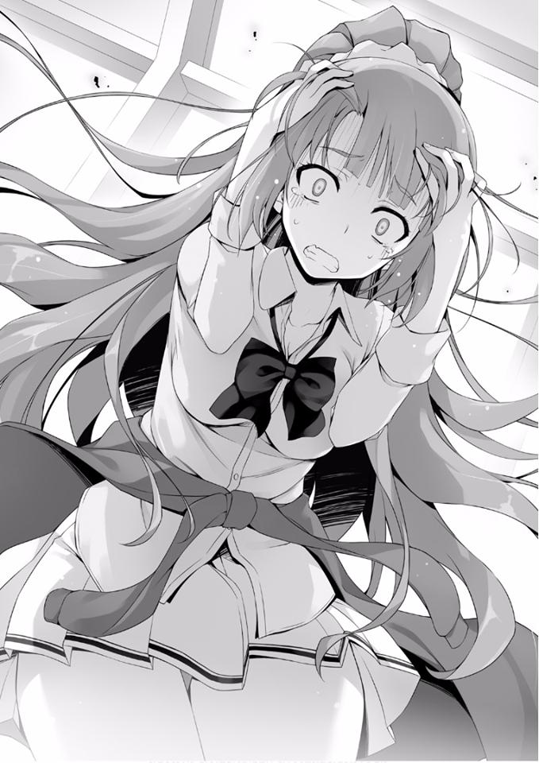
— Incluso aunque actúes así de femenina, ya no te perdonaré —agarró el cabello de Karuizawa y levantó su cabeza con fuerza.
— Siempre odié la cara de Karuizawa, ¿no crees que ella es realmente fea?
— ¿Lo sé, verdad? ¿Quieres cortar su cara? —una de las chicas preguntó.
— D-D-Deténganse.
— “Deténganse”, dice. ¿Qué pasó con esa determinación que tenías hace un momento?
Parecería que cuanto más odias a tu enemigo, más intentas atacar sus ventajas.
Si solo estamos hablando de belleza, no hay duda de que Karuizawa es la mejor.
Pero Manabe, Yamashita y Yabu no estarán satisfechas hasta que rechacen la apariencia de Karuizawa. Después de temblar en silencio, Karuizawa fue incapaz de moverse. Ya no se veía ningún rastro de su ser habitual en este momento. La verdadera naturaleza de una persona siempre sale en un dilema como este. Un poco más de esto y pronto podré ver y conocer más a Karuizawa Kei.
Pero parece que el sentido de justicia de Yukimura había entrado, ya que parece incapaz de contenerse más. Abrió rápidamente la puerta con fuerza y
sorprendió a las tres chicas dentro. Por otro lado, como si hubiera sido salvada, Karuizawa miró a Yukimura con cara de alivio.
— ¿Qué están haciendo?
— ¿Q-Q-QQ-Qué? Estaba hablando con Karuizawa-san ¿Verdad?
Manabe miró a Karuizawa con una expresión amenazante, desafiándola a decir una palabra, pero Karuizawa no es el tipo de persona que se siente intimidada por eso.
— Oye, Yukimura-kun, haz algo. Me secuestraron violentamente de repente y comenzaron a empujarme. Son las peores ¿no? Fueron molestas, así que les dije que me dejaran en paz, pero…
Normalmente, a Karuizawa nunca le importaría Yukimura, pero probablemente ahora esté agradecida con él por haber aparecido para salvarla. Su rostro parecía transmitir su alivio. Pero la Clase C parecía estar mirando con odio a Yukimura. Implicando que esto no tiene nada que ver con él.
— Solo estoy ayudando a Rika con su problema con Karuizawa. Como llegaste aquí debes haber escuchado bien la historia.
— ... Creo que deberías dejarlo pasar. Si tropezaron accidentalmente, no es como si Karuizawa tuviera la culpa ¿sabes?
Yukimura no tuvo más remedio que responder así.
— Cállate. Esto no tiene nada que ver contigo.
— .....
Ya que las chicas Clase C le dijeron que se callara, esta vez Yukimura no tuvo más remedio que aceptarlo obedientemente. Karuizawa entonces comenzó a mirar a Yukimura como si estuviera mirando a un hombre patético mientras lentamente sacaba mi teléfono en silencio.
— Solo déjenme en paz. De lo contrario, llamaré a alguien —les dice Karuizawa.
— ¿Llamar? ¿Llamar a quién? ¿A Hirata-kun? ¿A Machida-kun? ¿O tal vez una prostituta como tú puede llamar a tantos hombres como quiera?
Se dice que una pelea entre mujeres es sucia y no se puede resolver fácilmente mediante la violencia como los conflictos entre hombres. Como alguien que se había involucrado en esto, me resultó doloroso mirar y escuchar.
— Un maestro que pasó por aquí antes, creo que es mejor si se van.
Al no tener otra opción, entré y dije esas palabras para acabar con la pelea.
Estoy seguro de que la Clase C tampoco desea causar una escena aquí.
— Voy a hacerte inclinar la cabeza ante Rika.
Era una amenaza para Karuizawa decir que usarían cualquier medio necesario para eso. Karuizawa trató desesperadamente de actuar con firmeza, pero es obvio que ya no es capaz de eso. Parece que las otras chicas también han sentido la debilidad de Karuizawa mientras la miraban arrogantemente con miradas condescendientes.
— ¿Estás bien?
Incapaz de abandonar a Karuizawa, que parecía estar hiperventilando, Yukimura le preguntó.
— ¡Déjame en paz!— Karuizawa rápidamente apartó la mano de Yukimura mientras él se movía para ayudarla.
— ¿Qué demonios? Vine para ayudarte porque estaba preocupado.
— ¡Cállate! Nadie te pidió que lo hicieras —dijo Karuizawa mientras recuperaba el aliento.
Yukimura dio un paso atrás abrumado por sus palabras. También di un paso atrás para no involucrarme en esto, pero Karuizawa me miró intensamente con una expresión de enojo antes de abrir la puerta de la escalera de emergencia con fuerza. Y luego la cerró de golpe detrás de ella.
— ¿Cuál es su maldito problema? Siempre nos causa problemas.
Entiendo los sentimientos de resentimiento de Yukimura hacia ella. Una
“alborotadora” es una buena forma de describir a Karuizawa.
Pero parecía que también estaba cansado por esta dura experiencia, ya que Yukimura no dijo nada más y salió por la puerta de la escalera de emergencia.
Ahora, solo en la escalera de emergencia, pensé en Karuizawa. Y el lado vulnerable que la líder de las chicas de clase D había mostrado.
La aterrorizada apariencia que Karuizawa tenía ahora no era solo porque estaba siendo amenazada, sino por otra cosa.
PARTE 4
Medianoche después de que el segundo día había terminado. La piscina que estaba llena durante el día ahora estaba en silencio. Estaba allí para esperar una llamada y confirmar una cosa. Dado que los teléfonos que nos asignaron después de la inscripción ya tenían los números de contacto de los profesores, fue una tarea extremadamente simple contactar a Chabashira-sensei. Aunque
estábamos en pleno verano, navegábamos sobre la superficie del océano, por lo que el viento de la noche es bastante frío.
— ... Siento haberte hecho esperar, Ayanokouji.
— Realmente no me importa. Lo que es más importante, lamento llamarla tan tarde.
— Es una consulta de un estudiante, como maestra tengo la obligación de responder. No es nada extraño. Para bien o para mal, esta es la primera vez que me llamas.
Chabashira-sensei, que no maneja a la Clase D con amor, no es muy querida por los estudiantes, incluso hablando bien de ella. Si los estudiantes tienen un problema, es poco probable que la consulten.
— Hay algo que me gustaría preguntar sensei-… su cara se ve bastante pálida —no me di cuenta al principio en la oscuridad. Pero Chabashira-sensei tenía la cara mortalmente pálida.
— ... no te preocupes. Son cosas de adultos. Entonces, ¿qué pasa? —pude más o menos entender la situación ya que podía oler el alcohol que venía de su aliento.
— En esta escuela, me dijo que no hay nada que no se pueda “comprar” con puntos. Pero hay excepciones ¿cierto?
— Supongo que sí, naturalmente existen excepciones. Por ejemplo, si tratas de comprar las vidas de profesores y estudiantes con puntos, no podemos permitir que eso suceda.
— Entonces, la cosa más costosa que se haya comprado con puntos en el pasado-Pero antes de terminar mi pregunta, noté rápidamente la presencia de un espía.
— ¡Ya-ha! Sae-chan. ¿Te sientes bien?
Era Hoshinomiya-sensei quien apareció. ¿Era solo una coincidencia? No, la probabilidad de eso es infinitamente baja. Hubiera sido imposible para ella dar con este lugar sin haber seguido a Chabashira-sensei.
— ... ¿Estás borracha?
— ¿Hmm? No, por supuesto que no, no hay forma de que pueda estar borracha.
— ¿Estás jugando conmigo?
— Realmente... puedes aguantar el licor muy bien, como de costumbre. Tanto ayer como hoy —Hoshinomiya-sensei mantuvo su ritmo y continuó hablando— Hola Ayanokouji-kun. ¿Te sientes bien?
Actuando demasiado familiarizada conmigo, se me acercó, y actuando demasiado familiar otra vez, puso sus manos alrededor de mis hombros, estaba tan cerca que pude sentir el alcohol saliendo de su aliento. Por supuesto, alguien menor de edad como yo no lo sabría, pero ¿es el alcohol tan bueno como bebida? Solo al olerlo, no tengo ganas de beberlo.
— Estoy bien. No estaría aquí si no lo estuviera —le digo.
— Una respuesta linda y realmente impresionante. Entonces, ¿Ayanokouji-kun, te gustan las onee-sans tsundere como Sae-chan? —Hoshinomiya-sensei me preguntó.
— No hagas eso con los estudiantes. Interferirá con nuestra conducta profesional.
Afortunadamente, Chabashira-sensei agarró a Hoshinomiya-sensei por la nuca y la arrastró lejos de mí. Recuerdo la conversación entre profesores que escuché ayer. Incluso los maestros son cautelosos entre sí, compiten entre ellos y se engañan mutuamente para llegar a la clase superior.
No sé si esa competencia está destinada a aumentar el salario de uno como maestro, o si es algo que hay entre Chabashira-sensei y Hoshinomiya-sensei desde sus días de estudiantes. Estoy seguro de que la escuela y los maestros intentan hacer que el sistema sea justo. Si la información se filtrara injustamente, eso en sí mismo sería un problema grave. Los profesores no pueden evitar asumir la responsabilidad de eso. Teniendo esto en cuenta, es muy probable que Ichinose haya sido asignada al grupo (Conejo) sin que se le haya dicho nada en particular. Ella posee una aguda percepción y habilidades de observación. Tarde o temprano ella comenzará a sospechar que algo está pasando. Acerca del “por qué” se le puso en el grupo (Conejo) sin decirle nada en particular. Estaría bien si ella lo ve como una coincidencia. Pero
Hoshinomiya-sensei es mala ocultando sus emociones, por lo que inevitablemente descubriría que la enviaron a vigilar a Ayanokouji Kiyotaka.
Si eso sucede, necesito considerar una contramedida. Y solo por pensarlo, ya he comenzado a fortalecer mis defensas.
— Entonces, ¿de qué están hablando ustedes dos tan tarde en la noche?
¿No es esto en sí mismo un gran problema?
— ¿Un gran problema? Como docente, ¿no es obvio que responda a las ansiedades de mis alumnos y darles asesoramiento sobre ello? —
Chabashira-sensei responde a Hoshinomiya-sensei.
— Pero si eso es cierto, ¿no podrían hacerlo en un lugar más abierto? No hay necesidad de ser sigiloso con él.
Mientras Hoshinomiya-sensei intenta descifrarla, Chabashira-sensei mantiene su sentido de la racionalidad y calma.
— Es lo que el propio Ayanokouji solicitó. Quería consultarme en privado sin que nadie lo supiera —finalmente responde.
— Hmmm... bueno, no es que tenga quejas sobre esto.
— Ya veo, si lo entiendes, vuelve al bar. Me reuniré contigo en breve.
— ¡Ok, ok! Tómate tu tiempo, pero recuerda no hacer nada sexual —
Hoshinomiya-sensei le dice a Chabashira-sensei.
Y dejando atrás una advertencia tan innecesaria, Hoshinomiya-sensei regresó al barco. Parece que es capaz de ocultar su presencia muy fácilmente.
— Lo siento, por ser maestros tan problemáticos.
— Nada de eso.
Chabashira-sensei no dijo nada acerca de que me vigilaran. No sé lo que está pasando entre las dos, pero sinceramente no tiene nada que ver conmigo.
— De todos modos, continuemos donde lo dejamos. Lo más importante que se ha comprado con puntos en el pasado —cuando asentí levemente, Chabashira-sensei me miró pensativamente—. Si lo tengo que decir, sería
“cambiar las reglas de la escuela”. Por supuesto, solo puedes cambiarlas de manera realista. Por ejemplo, podrías cambiar las normas para
permitirte llegar a la escuela un minuto más tarde de lo habitual, algo por el estilo —Chabashira-sensei eligió usar un ejemplo para explicarlo en lugar de un hecho.
— ¿Así que solo un ejemplo?
— ¿Insatisfecho?
— No, está bien. Con esto puedo entender más o menos el sistema escolar y los usos de los puntos mejor.
Eso significa que dependiendo de cómo uses tus puntos, incluso si es por una razón trivial, uno puede desafiar al sistema escolar en sí mismo. Parece que los puntos privados son un activo extremadamente esencial.
— Podrías haber preguntado eso por correo. No necesitabas llamarme— dice Chabashira-sensei.
— Porque enviarle un correo deja un registro. Me gustaría evitar eso —le digo.
Y decidí dejarlo así y me dirigí a una salida diferente a la que Hoshinomiya-sensei acaba de usar. Si bien hay muchas cosas que me gustaría confirmar con ella, supongo que esto es suficiente por ahora.
— Le pediré un favor pronto— le digo.
Y cuando me volví para irme, Chabashira-sensei por un momento me miró con incertidumbre.
PARTE 5
Medianoche. O más precisamente, dos horas después de la medianoche.
Parece que mi compañero de habitación se ha despertado silenciosamente. Con cuidado de no despertar a los otros tres que dormían en la habitación, se levantó lentamente de la cama. Como las reglas de la escuela exigen que los estudiantes duerman con sus camisetas, también pueden abandonar sus habitaciones mientras las usan. Habiendo confirmado que no estaba simplemente yendo al baño, también agarré la llave-tarjeta de mi habitación y me levanté de la cama. No hay garantía de que haga su movimiento hoy, pero parece que los resultados de mi trabajo finalmente se están mostrando.
Una vez que se dio cuenta de que yo también estaba despierto, rápidamente se volteó para mirarme. Nuestros ojos se encontraron. Y sin apartar la mirada de sus ojos, le dije que había algo de lo que necesitaba hablar con él. Respondió que estaría esperando en el pasillo. Luego salió de la habitación, y en el pasillo me estaba esperando con una expresión ligeramente preocupada. Era Hirata quien me estaba allí con esa expresión preocupada.
— ¿Te desperté o ya estabas despierto, cuál? —me pregunta.
— Lo último. Pensé que ibas a salir de la habitación esta noche —respondí.
— ¿Por qué pensaste eso? Esta es la primera noche en que salgo de la habitación.
Evalué la situación y decidí que andarse por las ramas no nos llevaría a ninguna parte y le pregunté con sinceridad.
— ¿No es porque que Karuizawa te contactó esta noche? —pregunté.
Y con solo eso pareció entender todo. Como se esperaba de Hirata, de hecho su habilidad para comprender situaciones no tiene paralelo.
— ¿Sabes algo? —pregunta.
— Después de todo, estoy en el mismo grupo que Karuizawa. No sé hasta qué punto, pero más o menos entiendo la situación —le dije.
Hirata parecía estar esperando que dijera más. Y, de hecho, con esa explicación que acabo de dar, todavía no sería razón suficiente para seguirlo esta la noche.
— Una vez me dijiste que querías que actuara como el puente entre tú y Horikita, ¿verdad? —pregunté.
— Ya veo, entonces estás aquí porque Horikitasan te lo ordenó, ¿no es así?
—pregunta. Esto me ahorra el problema de tener que explicarle más, así que es más conveniente para mí.
— Sí. Ella me ordenó que le informara todo lo del grupo (Conejo), incluida la situación de Karuizawa. Así que una vez que me enteré de su situación y le informé, me ordenó que también te vigilara. Por supuesto, me ordenó escuchar lo que decías a escondidas, pero como me dijiste que fuera el puente entre tú y ella, pensé que en no acercarme sigilosamente. Esta es una oportunidad de escucharlo de ti —le dije a Hirata.
— ¿Qué información quiere? —me pregunta.
— Todo lo que Hirata sabe sobre Karuizawa, y el contenido de tu charla con ella —le dije.
Parece que Hirata, que todavía no conoce las circunstancias del grupo (Conejo), está confundido acerca de por qué necesitaría información sobre Karuizawa en particular, más que la información sobre el grupo mismo. Pero al menos comprende que esta información puede afectar lo que ocurra en el futuro.
— No estoy seguro de cuánto puedo decirte, todavía necesito considerar los sentimientos de Karuizawa-san —me dice Hirata.
Y con eso, Hirata comenzó a caminar por el pasillo. En este escenario tranquilo, tampoco tengo ganas de obligarlo a hablar, así que también lo seguí con calma y sin preocupaciones. Aunque me acosté en la cama por alrededor de dos horas, mi cabello todavía está en perfecto estado. A mí no me importa demasiado, pero para asegurarme de que la gente no se sienta incómoda al mirarme, necesito considerar mi cabello.
— Estoy seguro de que Ayanokouji-kun no dirá nada innecesario, pero lo que estoy a punto de decirte es información extremadamente sensible. Y existe la posibilidad de que Karuizawa-san simplemente se niegue a hablar y regrese. Solo me gustaría que tengas esos hechos en mente —me dice Hirata.
Siempre existe la opción de que simplemente los escuche mientras me oculto, pero no hay forma de que Hirata permita algo así. Como esto es algo que Karuizawa no quiere que nadie más escuche, nunca me permitiría escuchar de esa manera. Entonces en este escenario, lo mejor que puedo hacer es asentir en respuesta.
El lugar de la reunión estaba frente a una máquina expendedora ubicada en un área de descanso en el segundo piso. Estaba en medio de un largo corredor del el barco. Un lugar fácil de notar, pero también es fácil para que alguien se dé cuenta si hay gente escuchándoles. La ubicación hace que sea extremadamente difícil esconderse y escuchar. Karuizawa ya estaba allí, con una jersey, sentada en un sofá mientras esperaba a Hirata. Al principio, cuando lo vio sonrió por un
momento, pero cuando me vio detrás de Hirata, rápidamente perdió la sonrisa y fue reemplazada por una expresión de enojo.
— ¿Por qué está Ayanokouji-kun junto con Hirata-kun? —pregunta.
— Está bien, lo llamé y venimos juntos— Hirata le responde.
— ¿Hirata-kun lo hizo?... ¿por qué? Te dije que quería hablar contigo a solas
—le pregunta.
— Lo sé, pero estaba preocupado por lo que Karuizawa-san me dijo por teléfono. Así que traje a Ayanokouji-kun, que parece entender la situación.
Lo siento por actuar sin consultarte —Hirata se disculpó con ella.
A pesar de que Karuizawa parecía extremadamente insatisfecha con la situación, no parece que simplemente pueda rechazar a Hirata.
— Pero... aún quiero hablar solo contigo —le dice Karuizawa a Hirata.
— Si es necesario, pero nunca me dijiste por teléfono que hablaríamos solos
—respondió Hirata.
Ya podría inferir más o menos ya que esto está relacionado con el problema con la clase C liderada por Manabe. Pero me pregunto cómo abordaría Karuizawa este tema. Si solo quería animarse hablando con Hirata, no había necesidad de insistir en estar a solas con él. Eso significa que desea hablar sobre un tema que no puede permitirse que escuche un extraño. En cualquier caso, permanecer en silencio así sería inútil. Y entonces Hirata comenzó a hablar sobre el contenido de su llamada.
— Me estabas diciendo acerca de la disputa que tuviste con Manabe-san y sus amigas de la Clase C. ¿Cierto? —le pregunta.
En respuesta a esa pregunta, Karuizawa abrió un poco la boca para responder, pero quizá todavía desconfía de mi presencia, no hubo respuesta. Una vez más, Hirata rompió el silencio.
— ¿Ayanokouji-kun ya sabe acerca de tu disputa con Manabe-san y las demás?
— Algo.
Dado que la conversación con ella no parece ir bien, Hirata tiene la intención de preguntarme en su lugar. Karuizawa todavía parecía estar descontenta con la situación, pero obedientemente permaneció en silencio y escuchó nuestra conversación. Esto podría deberse a que yo fui quien vio a Karuizawa siendo acosada por Manabe en ese momento.
— Por lo que Karuizawa-san me dijo, parece que la acusaron primero. Y
luego la arrastraron a un lugar aislado y estaban a punto de atacarla violentamente —me dice Hirata.
— Sí. Eso es verdad. Lo presencié yo mismo. También Yukimura lo vio —le respondí.
— Ya veo... —dijo Hirata mientras me miraba pensativamente.
Luego cerró los ojos. En este caso, me pregunto cuál será el juicio de Hirata.
¿Llamar a Manabe y a las demás y reprenderlas? ¿O informarlo a la escuela?
— Si Manabe-san y los demás realmente usaron la violencia, entonces definitivamente tenemos que hacer algo al respecto. No puedo permitir que los amigos usen la violencia entre ellos —declaró Hirata.
Al escuchar esas palabras rebosantes de un heroico sentido de la justicia, vi a Karuizawa sonreírle a Hirata por un momento. Pero una vez que se dio cuenta de que la estaba mirando, inmediatamente volvió a su expresión enojada.
— Karuizawa-san, fuiste intimidada hasta el punto de no ser capaz de defenderte, ¿cierto? —le pregunta.
— No....
Incapaz de responder correctamente, Karuizawa simplemente lo miró en silencio.
Pero como ella no lo negó, parece ser la verdad.
Al parecer Karuizawa tuvo un problema con una chica llamada Rika en el pasado. Manabe y las demás intentaron que se disculpara por ello. Pero al final, las cosas casi llagaron a los golpes con Karuizawa. Habiendo escuchado la historia, Hirata asintió.
— Ya veo, es por eso que me dijiste algo así —dijo por fin.
— ¿Algo como eso? —pregunté.
— Karuizawa-san me dijo que la defendiera y me vengara de Manabe-san y las demás —me dice Hirata. Esta es una charla mucho más directa de lo que esperaba.
Pero desde la perspectiva de aquel que recibió el acoso, supongo que se tendrá una mentalidad de matar o morir. Y de hecho, cuando Hirata dijo esas palabras, Karuizawa que había estado en silencio hasta ahora, habló.
— ¿Por qué le estás diciendo todo esto...? —le pregunta a Hirata.
— Porque este no es la habitual Karuizawa-san. No eres el tipo persona que intenta luchar contra la violencia con violencia, Karuizawa-san —Hirata le responde.
— Pero ella está siendo intimidada ¿verdad? Si realmente eres su novio, entonces tienes la obligación de salvarla —le digo a Hirata.
— Sí, sé que ese es el caso. Pero no creo en esta conversación de ojo por ojo. ¿Sabes? —Hirata me responde.
Las personalidades de estos dos que aún no conozco, sentí diferentes convicciones que se entremezclaban allí.
— ¡Pensemos juntos en esto, cómo llevarnos bien con Manabe-san y su grupo! —declara Hirata.
— Eso es imposible. Fui atacada por ellas. Por favor, entiende... —Karuizawa le suplica a Hirata.
— ¿Sin provocación? ¿No fue porque primero acosaste a Morofuji-san, Karuizawa-san? —Hirata le pregunta a Karuizawa en tono acusador.
Por Morofuji, estoy seguro de que Hirata se refiere a la chica llamada Rika.
También hizo su investigación sobre ellas, supongo, de alguna manera es increíble.
— Pero eso es... no tenía otra opción... Shinohara-san y las demás me estaban mirando —dijo Karuizawa.
— Así que básicamente porque Shinohara estaba allí, no tenías otra opción,
¿es eso lo que quieres decir? —pregunté.
— ¡Cierra la boca!
Una vez que expresé mi pregunta, Karuizawa inmediatamente gritó que me callara. El grito resonó en el pasillo.
— Te lo ruego, por favor sálvame... Hirata-kun me protegerás ¿no? —
Karuizawa le suplica a Hirata.
— Por supuesto que tengo la intención de protegerte, pero no le haré nada a Manabe-san ni a las demás. Trataré de encontrar la manera de que hablen y se lleven bien —le dijo Hirata.
— ¡Te digo que eso es imposible! Si las cosas fueran así de fáciles, ni siquiera te pediría ayuda en primer lugar —dijo Karuizawa.
Parece un poco extremo, pero puedo entender los sentimientos de Karuizawa.
La posición en la que está ahora es mucho más peligrosa de lo esperado. No me sorprendería si esto se convirtiera en un grave incidente violento. La escuela tiene ciertas reglas. Fumar para estudiantes menores de edad es un ejemplo, y por supuesto, esa es una regla que está presente en cualquier preparatoria de todo el país. Sin embargo, hay estudiantes que logran hacerlo una o dos veces a escondidas.
En otras palabras, hay cosas que las reglas no pueden evitar. La intimidación es una de ellas. Hirata parecía estar preocupado por Karuizawa, pero al mismo tiempo, también estaba preocupado por Manabe. Parece que Hirata intenta resolver esto calmando pacíficamente a ambas partes.
En otras palabras, Hirata no parecía estar pensando en ella como novia, sino simplemente como otra amiga normal.
— No importa cuál sea el motivo, no puedo hacer lo que esperas que haga.
Para mí, Karuizawa-san es realmente una querida compañera de clase. Si hay algo que te moleste, te protegeré. Pero sea cual sea el motivo, tampoco le hará daño a nadie más, incluso si es un estudiante de la Clase C —declaró Hirata.
— ¡Mentiroso! ¡Dijiste que me protegerías! —Karuizawa le gritó a Hirata.
— ¿Mentiroso? Te dije desde el principio que tomaría esta posición —le respondió Hirata. Hirata dijo cosas que los estudiantes de Clase D
encontrarían difíciles de creer—. Te lo dije desde el principio, ¿no? Que no
somos novios. No es real. No me importa fingir que salgo contigo, pero no te ayudaré así y no dependerás de mí —declaró Hirata.
Parece que la relación de la que nadie dudaba entre estos dos, en realidad era fingida todo el tiempo.
— ...¿Por qué me estás diciendo esto ahora? —preguntó Karuizawa.
Seguramente esta es una queja contra lo que escuché hace un momento. Y
ahora entiendo cuál es el objetivo de Hirata, utilizó a Karuizawa hace un momento para revelar información como tributo a Horikita. Algo como eso.
— Pensé que para salvarte, se necesita una nueva perspectiva —dijo Hirata.
No es que haya abandonado por completo a Karuizawa, realmente está tratando de salvarla a su manera. Se acercó a Karuizawa, que parecía haber perdido la compostura, pero no intentó tocar su frágil y delicado hombro.
— ¿Estás diciendo... que necesito usar la violencia yo misma? —preguntó Karuizawa.
— No dije eso. Haré todo lo posible para salvarte. Por la mañana, tengo la intención de hablar con Manabe-san y las demás. Pedirle que deje de molestar a Karuizawa-san. Puede que no te guste, pero tengo la intención de decirles que quieres disculparte con ellas —dijo Hirata.
— ¡Eso no es lo que yo quiero! —Karuizawa respondió.
De hecho, parecía que Karuizawa le estaba pidiendo a Hirata que tomara represalias contra Manabe y los demás por intimidarla. Tomando eso en consideración, esta parece ser la verdadera esencia de Karuizawa. Su verdadera personalidad. Más que nada, parece que hay algo a lo Karuizawa que teme más.
— Ya veo. Si ese es el caso, entonces no hay nada que pueda hacer por ti.
Lo siento —Hirata fríamente le dijo eso.
Incluso en una situación como esta, él es capaz de mantener la calma. Pero incluso manteniendo la calma, Hirata le dio a Karuizawa, quien no podía hacer nada más que depender de él, una sentencia de muerte.
— Ayanokouji-kun, si tienes alguna idea, dinos —Hirata me preguntó. Parecía estar tratando de darme ese papel.
— ¡No es necesario! ¡Si no vas a escuchar mi solicitud, entonces no necesito a alguien como tú! —Karuizawa gritó eso mientras pateaba por el pasillo una lata de jugo de la máquina expendedora.
El jugo del interior de la lata estaba esparcido por el piso y su sonido resonó por el pasillo.
— Nuestra relación termina aquí y hoy. ¡Se acabó! —Karuizawa le dijo eso a Hirata.
En lugar de revelar la verdad de su relación, Hirata parecía molesto consigo mismo por no poder ayudarla. A pesar de que Karuizawa huyó, Hirata no mostró signos de perseguirla. Eso significa que ya ha decidido que ella no es de la que necesita preocuparse en este momento.
— Ayanokouji-kun, hay ciertas cosas que no puedo hacer. Es por eso que estás aquí, me gustaría que entiendas eso —me dice Hirata.
Estaba tratando de extraer información sobre Karuizawa usando Hirata, pero en su lugar, parece que Hirata aprovechó la oportunidad para dejarme el papel de salvar a Karuizawa de sus problemas.
— Parece que quieres ser más que un puente que conecta a todos, eso es muy egoísta de tu parte. Eres el aliado de todos ¿no? —Le pregunté a Hirata.
— Sí. Estoy del lado de Karuizawa-san y también estoy del lado de Ayanokouji-kun. Pero dependiendo de con quién estoy hablando, también termino cambiando mi actitud. Eres mucho más capaz de lo que todos los demás piensan —me dijo Hirata.
— Me estás alabando demasiado —respondí.
— Realmente tengo mucha confianza en leer los sentimientos de otras personas. Es por eso que lo puedo decir —continúa Hirata.
Me gustaría investigar más sobre esa confianza suya, pero supongo que hablar sobre la solución del problema es lo primero.
— En primer lugar, una vez más me gustaría preguntar acerca de tu relación con Karuizawa. Parece que es solo una fachada y no es real —le pregunté.
— En este momento, ¿Ayanokouji-kun ya sospechaba esto? —me pregunta.
— Han pasado casi cuatro meses desde que comenzaste a salir con Karuizawa. Pero no he visto señales de que tu relación haya progresado desde entonces. Por supuesto, podrías considerar la opción de mantener una relación pura y platónica con ella. Pero siempre has mantenido la distancia con ella y aun se llaman por sus apellidos —dije.
Incluso si su relación física no hubiera progresado, si se hubieran acercado emocionalmente, habrían cambiado su forma de llamarse entre ellos. Pero para bien o para mal, la relación entre Hirata y Karuizawa no había mostrado signos de progreso. En una relación entre un hombre y una mujer, no mostrar signos de progreso o cambio es extraño.
— Eso es cierto. No estábamos saliendo, solo salimos juntos porque sentimos que era necesario. ¿Comprendes la contradicción aquí? —Hirata me pregunta.
A pesar de no salir realmente, todavía era necesario hacerlo. Eso significa que sus objetivos se alinearon. ¿Y eso significaría que existe un beneficio en que salieran? Entonces, ¿quién es el que está solicitando esto y quién acepta la solicitud? Eso es obvio. Karuizawa fue quien le pidió a Hirata que simulara su relación y Hirata simplemente aceptó su solicitud. Sabiendo eso, las acciones que pueden explicar este hecho se han incrementado.
— Los rumores comenzaron aproximadamente tres semanas después del comienzo del semestre, y desde ese momento la popularidad de Karuizawa se disparó.
Este fenómeno también se puede observar en nuestro grupo. Al unirse a Machida, Karuizawa pudo posicionarse más agresivamente que antes y su influencia en el grupo también creció proporcionalmente. En otras palabras, así fue como Karuizawa se convirtió en el muérdago de Hirata. (NT: para los que no sepan, el muérdago es una planta parásita).
— Entonces fingiste ser el novio de Karuizawa para ayudar a elevar su estatus.
Le pedí la verdad y Hirata simplemente me sonrió. Por un momento pensé que esta era toda la verdad, pero me di cuenta de que las piezas aún no encajaban.
¿Tal vez ella usó a Hirata y Machida para estar en la cima del sistema de castas de la escuela? No, solo eso no explica la situación. Si quería dominar la clase todo lo que necesitaba era pedirle a Hirata que saliera con ella y Hirata probablemente estaría de acuerdo. Su solicitud era una orden demasiado alta.
La actitud diaria de Karuizawa es muy fuerte, y a veces también interpreta el papel del agresor en una intimidación. Pero ¿por qué aceptar eso sin cuestionarla?
Y... Karuizawa realmente usó a Hirata y los demás para aumentar su estatus en la clase. Eso también es un asunto cuestionable. En este caso, no puedes decir que usó Machida solo para aumentar su influencia en el grupo. En todo caso, ella no mostró ningún interés en lo que hacía el grupo y permaneció en silencio la mayor parte del tiempo. Si es así, no era necesario usar a Machida.
Entonces, ¿cuál fue exactamente... el disparador que provocó que se acercara a Machida?
Ahora finalmente siento que entiendo a la chica llamada Karuizawa Kei. “Para protegerse” ¿eh? Por proceso de eliminación, la única respuesta que queda es la verdad. No hay confusión.
— ¿Entiendes ahora, no? Para ser sincero, cuando escuché esta respuesta de ti, tenía la piel de gallina —dijo Hirata.
— Acabo de enterarme por Horikita, eso es todo, que Karuizawa tiene sus propios motivos para usar a Hirata y los demás —respondí.
Traté de engañarlo de esa manera, pero Hirata no es un hombre tan simple como para caer en algo como esto.
— Ayanokouji-kun, si tuviera que decírtelo honestamente... podría sonar grosero, pero te encuentro espeluznante. Como una existencia ominosa. Si te he ofendido, me disculpo —me dice Hirata.
— ¿Ominoso? ¿Por qué piensas eso? —pregunté.
— Te he estado mirando desde que comenzó el año escolar. Pero el Ayanokouji-kun de ese entonces y el Ayanokouji-kun de este momento son como personas totalmente diferentes. La presencia que emites y las palabras que usas. Casi como si fueras una persona diferente de lo habitual —me dice Hirata.
Hirata tiene la capacidad de discernir las acciones y el comportamiento de las personas a su alrededor y nunca pasar por alto eso. No podía evitar que notara la diferencia en mí.
— Ya te lo dije, ¿no? Es gracias al consejo de Horikita. Le conté a Horikita todo sobre mi grupo. Y acabo de obedecer las órdenes que ella me dio, eso es todo. El incidente en la prueba en la isla también fue igual. Horikita hizo los juicios correctos y guió a la Clase D a la victoria. Y la clase ganó muchos puntos como resultado. En otras palabras, también hay beneficio para mí si hago esto. Ella es terriblemente mala comunicándose como ya sabrás, así que simplemente le transmito lo que dices y recibo órdenes de ella —le dije a Hirata.
Paso mucho tiempo con Horikita, y Hirata, que me conoce muy bien, seguramente no dudará de esas palabras que dije.
— Si se trata de Horikita-san, seguramente debe haber juzgado que salvar a Karuizawa-san llevaría a la clase a obtener alguna ventaja —dijo.
— Sí.
— Pero todavía creo que eres increíble, Ayanokouji-kun. Eres diferente de Ike-kun o Yamauchi-kun —admite Hirata.
— Soy inferior a ambos —respondí.
— Incluso si solo estás siguiendo las órdenes de Horikita-san, sigues siendo tú quien me está hablando ahora mismo. No es que la conversación incluya solo los detalles de su orden. Adaptarse al ritmo de la conversación requiere una lógica clara, no es algo que simplemente puedas pensar en un instante —dijo Hirata en respuesta.
— ......
Parece que Hirata es mejor de lo que esperaba. A pesar de su deseo de salvarla, puede mantener sus habilidades en altos estándares.
— Es algo que dijiste, la razón por la que acepté la petición de Karuizawa-san de ser su novio fue para ayudarla a “protegerse”. Eso es lo que ella solicitó.
Que quiere que la salve. Puede que sea difícil que lo creas pero, durante sus años de primaria y secundaria, durante 9 años completos, recibió una cantidad horrible de acoso —me dice Hirata.
— No dudo de ti, pero esta historia es real ¿verdad? —Pedí confirmación.
Parece que la hiperventilación de Karuizawa más temprano en el día fue provocada por su pasado. Ya que lo vi, no puedo evitar creer en el trauma de su pasado.
— Por supuesto que conocí a Karuizawa-san después de que ella ingresó a esta escuela, pero lo entiendo. Conozco la apariencia, el olor y la presencia de una persona que ha sido víctima de intimidación. Por eso acepté salir con ella, usando su posición como mi novia, Karuizawa-san sería capaz de escapar de su pasado de ser acosada. Creo que en este momento, la actitud que tiene no es la verdadera Karuizawa-san. Ella está tratando desesperadamente de actuar con dureza ¿no? —Hirata me dijo.
Normalmente pienso que ella no puede controlar sus sentimientos tan bien. Las víctimas de la intimidación suelen tener personalidades como una flor de sakura.
Simple, obediente y débil. Por otro lado, las personas con una personalidad fuerte como Karuizawa también son propensas a ser intimidadas. Pero, en resumen, la personalidad actual de Karuizawa es falsa. Es por eso que necesita a alguien como Hirata o Machida a sus espaldas. Alguien que pueda gobernar el terreno por ella. Al hacerlo, puede recuperar su influencia.
— Puedo entender eso ahora más o menos, pero espera, ¿cuáles son los beneficios para ti por hacer esto? —Le pregunté a Hirata.
Esto puede ser un dicho común, pero el amor es una parte de la juventud para los estudiantes. Hirata es muy popular entre las chicas. Entonces, pretendiendo salir con Karuizawa, se daría por vencido con el verdadero amor.
— ¿Beneficio? Ese sería Karuizawa-san viviendo su vida en la preparatoria sin ser intimidada. Eso es todo —me respondió Hirata. Solo dijo eso. No es
hipocresía ni amor, y tampoco por él mismo—. ¿No me creerás si esa es mi única razón? —pregunta.
— No es que desconfíe de ti, pero hay un significado más profundo detrás de eso, ¿no es así? —Le pregunté a cambio.
Hirata no dudará si es para salvar a un amigo, pero también reconoce a Manabe y los demás como amigos. La forma en que se preocupa por los demás casi se puede describir como una enfermedad.
Como me ha contado todo al respecto, sin duda Hirata también siente que es necesario que me cuente sobre esto. Él compra algunas bebidas enlatadas de la máquina expendedora y me arroja una. Agradecidamente lo acepté.
— Hasta mi segundo año de secundaria, si tengo que decirlo honestamente, era un tipo promedio que no se destacaba demasiado —me dice.
— Hirata era... realmente no me lo puedo imaginar —respondí.
La imagen era demasiado diferente del hombre que siempre muestra un excelente liderazgo.
— No me distinguía demasiado, pero tampoco era invisible. Mi amigo también era así. Era realmente normal. Tenía un amigo con el que me llevaba muy bien desde que era un niño llamado Sugimura-kun. Un niño. Durante seis años en la primaria estuvimos juntos en la misma clase. Y como también éramos vecinos, siempre íbamos y volvíamos de la escuela juntos —dijo Hirata con una voz llena de nostalgia.
Y entonces Hirata recuerda su pasado.
— Cuando ingresamos a la secundaria, por primera vez, quedamos en diferentes clases. Pero aun así, al principio seguimos yendo a la escuela y regresando a casa juntos. Pero los días en que lo hacíamos comenzaron a reducirse gradualmente y comencé a jugar con niños de mi nueva clase.
Es una historia normal que podrías haber escuchado en cualquier parte —
continuó.
Es normal que en un entorno nuevo, uno inevitablemente haga nuevos amigos.
No había nada inusual en eso.
— Pero, verás... a pesar de que estaba ocupado jugando con mis amigos, sin darme cuenta, en realidad Sugimura-kun estaba siendo intimidado —
continuó Hirata mientras agarraba con fuerza su lata de jugo.
Incluso un extraño sabría lo que está sucediendo.
— Sugimura-kun me envió un SOS muchas veces. Muchas veces apareció con la cara lastimada y heridas en todo el cuerpo, pero en su lugar le di prioridad jugar con mis nuevos amigos y nunca lo tomé en serio.
Sugimura-kun, quien originalmente tenía una personalidad testaruda, siempre peleaba con facilidad, así que nunca pensé profundamente acerca de su situación. Pero cuando ambos nos convertimos en estudiantes de segundo año, nos reunimos. Y en ese momento, Sugimura-kun se había descorazonado, la imagen alegre ya no estaba allí y las marcas dejadas por puñetazos y patadas permanecían. Ni siquiera se le permitía ir al baño y se veía obligado a salir en medio de la clase. Ese tipo de cosas se convirtió en rutina —Hirata me dice.
— Entonces lo viste y...
— Sí. Creo que tú también lo entiendes. Pero no hice nada. No podía hacer nada. Tenía demasiado miedo de convertirme en el nuevo objetivo. Tenía miedo de que mi vida agradable fuera destruida... y a Sugimura-kun, que siempre había estado junto a mí, seguí fingiendo no verlo. Creía que un día los matones se aburrirían de él. Que un día Sugimura-kun dejará de ir a la escuela y el acoso se detendría. O que alguien más intervendría y lo salvaría. Seguí pensando en cosas egoístas como esa —continuó.
— Y esa persona Sugimura... ¿qué le pasó al final? —Le pregunté a Hirata.
— Incluso ahora, el recuerdo de ese día está grabado en mi cabeza. Después de la práctica de fútbol de la mañana, volví a mi clase. Y allí, vi a Sugimura-kun y decidí esperar hasta entrar. Honestamente, en ese momento me sentía incómodo. A pesar de que era un amigo con el que jugaba desde que era niño, en ese momento casi se sentía como un extraño para mí. No podía evitar tener pensamientos crueles como que sería intimidado junto con él. Quizás Sugimura-kun también vio mi negro corazón, pero no dijo nada. Y como un pedido de ayuda... ese día, en mitad de la clase, saltó por la ventana —me dice Hirata.
— ¿Saltó? ¿Está muerto? —pregunté.
— Parece que fue declarado con muerte cerebral. Pero incluso ahora, sus padres están esperando la recuperación de Sugimura-kun y creen en ello.
Pero si él está vivo o muerto ahora, no lo sé. Los eventos de ese día fueron tan surrealistas, todavía me pregunto si fue simplemente un sueño o una alucinación. Fue increíble. Porque en el momento en que Sugimura-kun saltó, me volví muy consciente. Al atesorarme, empujé a mi querido amigo hasta su muerte —dijo. Y ese fue el nacimiento del hombre llamado Hirata Yousuke—. No creo que esto resulte en la salvación de Sugimura-kun, pero al menos, quiero redimirme. Y para hacer eso, pensé que la única forma era salvar a alguien como él —continuó Hirata.
— No es como si no supiera cómo te sientes, pero el mundo no es tan simple,
¿verdad? Incluso ahora, alguien en algún lugar está siendo intimidado. Y
como ese Sugimura del que hablabas, están tratando de suicidarse. No puedes detener a esas personas, ¿verdad? —le dije a Hirata.
— Por supuesto que lo entiendo. No soy un héroe de la justicia. Pero me gustaría salvar a las personas que tengo enfrente. Tengo que salvarlas.
Esa es mi responsabilidad por el pecado que llevo conmigo —dijo Hirata.
— Entonces, ¿qué vas decidir sobre este caso? Quieres salvar tanto a Karuizawa como a Manabe. Pero esa es una tarea imposible —le dije.
— Sé que es una tarea contradictoria, es por eso que estás aquí —dijo.
Ya veo, parece que nota su propia anormalidad. En cualquier caso, no puede evitar querer salvar a las personas que conoce.
— Nunca pensé que llegaría el día en que le contara esta historia a alguien más. Nadie lo sabe, esa es la razón por la que elegí esta escuela —
continuó. Luego, después de terminar el jugo, lo tiró al cubo de basura.
— ¿Puedo confiar esto a Horikita-san? —pregunta por fin.
— Si puedes prometer no hablar a medias, estoy seguro de que Horikita hará algo al respecto —le respondí.
— Entonces elegiré creer en ustedes dos. Porque ese también es mi ideal —
me dijo Hirata.
Parece que por ahora Hirata no participará en el asunto de Karuizawa. Y muy probablemente a partir de ahora, cuando esté en problemas, confíe en mí. Pero eso también significa que he logrado asegurar la cooperación de Hirata. Ese es
un gran poder el que he ganado de mi lado. Es natural que también tenga su recompensa.
— Hirata. Como tienes una gran red social, me gustaría pedirte un favor.
¿Puedes escucharme? —pregunté.
Y con eso dicho, le entregué a Hirata un pedazo de papel. Y después de leerlo, aceptó mi solicitud sin siquiera hacer una mueca desagradable.
— Y también Ayanokouji-kun. Desde que comenzó del examen, hay una cosa que te he estado ocultando. Sé quién es el último “objetivo” entre los estudiantes de la Clase D... —dijo.
PARTE 6
El día del intervalo del examen, elegí tomar un determinado curso de acción, pero inesperadamente me llamó Sakura, así que decidí escucharla.
— Parece que el examen del grupo (Vaca) terminó —dije.
— Sí...
Revisé el correo de mi teléfono que también fue enviado por parte de la escuela a Sakura junto con todos los otros estudiantes. Simplemente decía: “La prueba para el grupo (Vaca) ha terminado. Los miembros del grupo (Vaca) ya no están obligados a participar en el examen. Asegúrense de no molestar a los demás estudiantes”.
Era el mismo mensaje enviado después del examen del grupo (Mono). Sakura me miró con ojos incómodos.
— ¿Hice algo malo? —ella pregunta.
— No, no es eso. Solo significa que alguien en el grupo (Vaca) informó del
“objetivo” a la escuela —le dije.
Dejando de lado el caso que ocurrió gracias al alboroto de Kouenji, tal vez la traición se está volviendo más frecuente en este examen. O bien fue “traición por tener la seguridad” o “traición por estar apurado”.
— Por cierto, Sakura, ¿eras el “objetivo” de tu grupo o era otra persona? —le preguntea.
Cuando lo hice, Sakura negó sacudiendo la cabeza de un lado a otro para negarlo.
— N-no. No era el “objetivo”. Pero, no estoy segura acerca de Sudo-kun y los demás... —respondió ella.
Para Sakura, que había sido parte del grupo (Vaca) por solo dos días, parece que no tiene idea de qué hacer con la situación.
— No lo pienses demasiado, después de todo incluso yo todavía no sé quién es el “objetivo” de mi grupo, —le dije.
— Sí... gracias Ayanokouji-kun. Estoy feliz de que me lo hayas dicho.
— ¿Cómo fue la situación con la Clase A? Según los rumores, parece que no participaron en las discusiones —le pregunté.
— Eso es... sí. Al igual que como los otros han estado diciendo. No hablaron en absoluto —me respondió.
Parece que Katsuragi ha estado llevando a cabo su estrategia en todos los grupos. Eso significaría que los que causaron este evento deberían ser la Clase C. Pero en ese caso surgiría una pregunta. Ryuuen había ignorado las reglas establecidas por la escuela. Pero dado que la escuela no anuncia los detalles del examen, es imposible determinar si estoy en lo correcto o no en este momento. Es precisamente por eso que es difícil descubrir la pauta detrás de este examen.
Si lo interpreto equivocadamente, terminaría autodestruyéndome y recibiendo mucho daño.
Además del grupo (Vaca), el hecho de que los otros grupos aún no hayan terminado sus exámenes debe significar que incluso Ryuuen aún no ha encontrado la respuesta.
Después del final de un examen misterioso como este, sin duda, muchos estudiantes también se sienten confundidos.
— Si hay algo más, siéntete libre de consultarme en cualquier momento —le dije a Sakura.
— Gracias, Ayanokouji-kun. Nos vemos.
Después de despedirme de Sakura, quien se fue mientras balanceaba su pequeña mano lindamente de un lado a otro lado, me dirigí hacia el sótano.
Luego descendí a los niveles más bajos del barco donde la gente no suele ir.
Aunque el área estaba prohibida para los estudiantes, estaba desbloqueada para permitir el acceso de la tripulación. El área donde se encuentra la sala del tablero de controles, aunque de fácil acceso, no es un lugar popular para las personas.
Aunque si uno grita con voz fuerte, se formarán ecos, ya que este lugar está prácticamente automatizado, normalmente nadie viene a este lugar.
Solo hay dos entradas y salidas de este lugar. Incluida la normal, la otra es una puerta que conduce a la escalera de emergencia e incluso la tripulación por lo general no la usa. Por el polvo que se había acumulado en esa puerta, podía decir eso. Eso significa que puedo monitorear la situación simplemente observando el acceso que normalmente se usa.
Además, es más conveniente para mí, parece que los teléfonos no tienen recepción aquí. De vez en cuando, se logra captar señal, pero la mayoría de las veces es extremadamente difícil enviar un correo electrónico o un mensaje de texto desde aquí, y mucho menos hacer una llamada.
— Todas las piezas están en su lugar —murmuré.
Todo lo que queda es ejecutar el plan paso por paso para no cometer un error.
Primero tendré que ponerme en contacto con Hirata, luego pedirle que llame a Karuizawa a este lugar. Para asegurarme de que haya suficiente tiempo para todo, tendré que llamar a Karuizawa aquí al menos una hora antes. Para eso, volví a subir a los pisos superiores para hacer la llamada.
Estoy seguro de que será cautelosa después de los acontecimientos de la conversación de la noche anterior, pero si Hirata la llama nuevamente para hablar a solas con ella, Karuizawa seguramente responderá a eso. Ella dijo que
rompería con Hirata, pero si realmente termina con él, ella será la única que sufrirá por eso. Mientras Manabe y su grupo la ataquen, para Karuizawa, la existencia de Hirata es necesaria para que continúe su vida escolar.
“Ya le pedí a Karuizawa-san que esté allí a las 4PM. Te enviaré la dirección de Manabe-san ahora”. Recibí un correo de Hirata.
Como era de esperar, ha escuchado mi solicitud de manera excelente y ha logrado llamarla aquí. Como beneficio adicional, Hirata incluso sabía la dirección de contacto de Manabe quien es de otra clase. Si no lo hiciera, tendría que correr el riesgo de preguntarle a Kushida, así que me ahorra el problema.
“Pero no puedo ayudarte más que esto. No hagas que Karuizawa-san se ponga triste, por favor”. Hirata agregó eso como una postdata en el correo.
Entonces él no quiere que ella esté triste, ¿eh? Si supiera lo que realmente le voy a hacer a Karuizawa, estoy seguro de que Hirata estaría furioso conmigo.
Pero mientras no me encuentre con un problema, está bien. Como tal, incluso si ella se rompe aquí y ahora, siempre y cuando él no se dé cuenta después del evento, no habrá ningún problema. Para usar un ejemplo extremo incluso si cometes un asesinato, mientras no haya pruebas suficientes, eres un hombre libre.
Luego paso rápidamente al mensaje de texto que escribí antes y lo envié. El contenido era el siguiente: “Oye, ¿tienes un momento?”. Una breve oración así de sencilla.
Como regla general, la aplicación de chat que estoy usando solo permite una cuenta por teléfono. Pero hay una pequeña laguna en esa regla, al crear una nueva cuenta principal de SNS (Social Network Service) puedes crear otra cuenta para ti. Por supuesto, normalmente no hay estudiantes que se dividan entre una cuenta principal y una secundaria. Porque no hay mucho beneficio en cambiar entre estas cuentas. Pero al hacerlo, puedo contactar a un tercero sin tener que revelar mi identidad.
Debo proceder delicadamente a partir de ahora. Mientras no cometa un error en el proceso, debería funcionar a la perfección. A pesar de que el mensaje provenía de un remitente anónimo, Manabe respondió rápidamente.
“¿Quién eres?” Manabe, sin conocer al remitente, respondió con esa pregunta.
“¿Hay alguien cerca de ti en este momento?” Respondí.
“No. Estoy sola... ¿quién eres?” ella preguntó de nuevo.
“No muestres esta conversación a nadie. Esto es por tu bien” le dije.
“Como decía, ¿quién eres?” ella preguntó.
“Soy igual que tú. Odiamos a la misma persona. Déjalo en eso” le dije a Manabe.
Aunque el letrero de “leído” apareció inmediatamente, Manabe se tomó su tiempo para responder. Quizás todavía no entiende la implicación de esa oración.
“¿Me has confundido con alguien?” ella finalmente responde.
“No me estoy equivocando, Manabe-san. Me estoy comunicando contigo para informarte sobre la Karuizawa-san que odias tanto. Pensé que podría consultarte sobre la situación, Manabe-san” Le envié eso.
“No sé de qué estás hablando. Por favor, deja de enviarme mensajes” respondió rápidamente.
Parece que está en guardia, sin saber si soy un enemigo o no. Una reacción natural. Necesito resolver este malentendido primero.
“La verdad es que, como compañera de clase, llevo un tiempo resentida con Karuizawa-san. Por eso pensé que podríamos cooperar y vengarnos de ella.
Como soy su compañera de clase, es difícil para mí para tomar venganza sobre Karuizawa-san directamente, es por eso que me gustaría cooperar contigo” le dije a Manabe.
“No sé de lo que estás hablando. Te voy a ignorar” respondió ella.
Aunque desconfiaba de mí, el hecho de que todavía no haya cortado contacto es un testimonio de lo mucho que odia a Karuizawa. Seguramente se debe a su deseo de vengar a su amiga Rika y a su propio odio por Karuizawa. Podía deducir fácilmente eso del hecho de que Manabe usó la fuerza para llevar a Karuizawa a la escalera de emergencia.
“Rika-chan todavía le tiene miedo a Karuizawa-san. ¿No quieres ayudarla como su amiga? Tu cara tiene venganza escrita por todas partes, ¿sabes? Pero la verdad es que no puedes hacerlo aunque quieras. Después de los eventos de ayer, Karuizawa-san está en guardia. Estoy segura de que no dejará a Hiratakun ni a Machida-kun por un tiempo. Y siempre estará con sus amigas, así que tampoco estará sola” le dije a Manabe.
“No necesito tu ayuda. Solo necesito poner a Rika en contacto con Karuizawa-san. La verdad saldrá a la luz” dijo.
“Me pregunto si será así de fácil. No creo que admita su maldad fácilmente. Por el contrario, solo será un problema para Rika-chan. Si Karuizawa-san usa palabras desalmadas, terminará hiriendo aún más a Rika-chan. No, eso no es todo. Si le guarda rencor, incluso podría intimidar a Rika-chan aún más” le respondí a Manabe.
“... ¿entonces qué debería hacer? ¿Estás diciendo que hay una manera?” ella pregunta.
El deseo de Manabe de resolver esto en la próxima confrontación se vuelve claro.
“Sí. Tú y yo podemos cooperar para asegurarnos de que podamos vengarnos de ella en un lugar seguro” le dije.
“¿Y qué garantía hay? Parece que estás planeando venderme a la escuela. De todos modos, parece que estás usando una subcuenta —respondió Manabe.
“Si de verdad crees que estoy vendiéndote, por favor siéntete libre de mostrar este registro de chat a los maestros, Manabe-san. Esta cuenta ha sido registrada en el teléfono de la escuela. En otras palabras, estoy arriesgando mi identidad para vengarme de Karuizawa-san. De esa manera, soy la que tiene la mayor responsabilidad. ¿No es así?” Le dije.
Estoy seguro de que Manabe también entiende esto. Incluso si se trata de una cuenta secundaria, una vez que se analice a fondo, se puede revelar la identidad de la persona que está detrás de ella. Si se trata de eso, yo, como el autor
intelectual de este plan de venganza, asumiría la mayor parte de la responsabilidad e indudablemente sería castigado severamente.
“Entonces, si le muestro esta conversación a la escuela, ¿qué harías? Se acabaría para ti” me pregunta Manabe.
“Creo que Manabe-san no es el tipo de persona para haría eso. Debo confiar para ser confiable” le dije.
“Entiendo lo que estás tratando de decir, más o menos. Al menos te escucharé”
dijo finalmente.
Después de eso, le repito una historia similar varias veces. Acerca de cuánto odiaba a Karuizawa. Acerca de cómo quería vengarme de ella, pero no podía como alguien con una posición más débil. Y sobre cómo escuché que Manabe y sus amigas estaban peleándose con Karuizawa. Me aseguré de ser la víctima.
“Una vez que regresemos a la tierra, el contacto con Karuizawa seguramente se volverá difícil. Como los dormitorios de la escuela están llenos de cámaras de vigilancia, incluso si tratas de llevarla a un área privada, hay ojos que te observarán. Este lugar, un campo de batalla sin escapatoria, es el lugar perfecto para ti” Le dije a Manabe.
Esto aseguraría que Manabe y las demás se den cuenta de este lugar, solo en este barco, pueden vengarse.
“Entonces... ¿qué puedes hacer?” ella finalmente me pregunta.
Manabe, finalmente parece estar de acuerdo con mi plan y comienza a hacer preguntas.
“Puedo llamar a Karuizawa-san. Después de eso, puedes tomarte el tiempo para hablar con ella y solucionar el problema” le dije a Manabe.
Y con eso, a través del chat, le envié un mapa de los niveles inferiores del barco.
“Como los teléfonos no tienen recepción allí abajo. Tampoco puede pedir ayuda.
Y normalmente nadie baja por allí” le dije.
“Ya veo... ¿así que puedes llamar a Karuizawa-san como compañera de clase?”
Manabe pregunta.
“Me gustaría que decidieras ahora si cooperar con mi plan o no. Después de llamarla, puedes decidir si quieres vengarte o no. De esa forma no habría problemas, ¿cierto?” le pregunté.
Después de eso, durante más tiempo, a pesar de que apareció el letrero de
“leído”. No hubo respuesta de Manabe. Entonces. Una vez que llegó la respuesta, me sentí seguro de que tendría éxito. Si fracasaba mi plan para convencerla a través del chat, tenía preparado otro plan en el que tendría que aparecer ante Manabe directamente. Por supuesto que eso era peligroso. Como había tomado varias fotos de ella amenazando a Karuizawa en la escalera de emergencia, podría chantajearla para que siguiera mi plan. Pero el riesgo también era enorme, ya que me gustaría evitar que mi existencia se destaque.
— Ahora. Déjame ver lo que puedes hacer, Manabe.
PARTE 7
A veces, un ruido profundo y chirriante resuena en el oscuro piso. Tal vez eso sucede cada vez que el barco cambia de rumbo, o quizás sea porque el barco ha golpeado algo. Pero a pesar de eso, en un lugar donde solo se puede escuchar el sonido de las máquinas, la chica vino sola.
— ¿Qué es esto? No puedo comunicarme por teléfono —murmura.
Todavía quedan diez minutos antes de la hora acordada. Tal vez llegó temprano para poder calmarse antes de encontrarse con Hirata.
Después de darse cuenta de que el teléfono es inútil, Karuizawa lo metió en su bolsillo nuevamente con una expresión aburrida y se apoyó contra la pared.
Y con el tiempo, ¿qué conclusión sacaba de esto? Sea lo que sea, desafortunadamente, Hirata nunca la escucharía. Cuando llegaron las 4:00 p.m., la única puerta que se usaba en el piso se abrió con un fuerte golpe. Las que
aparecieron fueron el grupo de tres chicas de la Clase C. Las chicas dirigidas por Manabe. Y una más. Una chica cuya aura se parecía a la de Sakura.
Probablemente la chica llamada Rika.
— Todo está bien.
Manabe gritó mientras ponía un pie en la habitación. Y pronto, ella encontró la silueta de Karuizawa. Naturalmente, Karuizawa también los había notado.
— ¿P-P-Por qué estás aquí? —Karuizawa tembló ante la aparición inesperada de esta gente.
Pero en un espacio estrecho con solo una ruta de fuga, escapar es difícil.
— Acabo de verte entrar a este lugar. Sí, este es un buen momento, así que quiero presentarlas. Esta chica es Rika. Karuizawa-san, ¿la recuerdas? —
Manabe pregunta.
Luego tira de Rika al frente, quien estaba escondida detrás de ella. Las dos estaban cara a cara. Karuizawa desvió la mirada y fingió no saber, pero por su comportamiento, es obvio que la recuerda.
— Oye, Rika, la que te empujó antes es Karuizawa-san, ¿verdad? —Manabe le pregunta a Rika.
— Sí... es esta persona —respondió ella.
Habiendo escuchado la respuesta, Manabe sonrió felizmente desde el fondo de su corazón. Por otro lado, Karuizawa, al darse cuenta del peligro de la situación, se puso ansiosa y confundida. Todo lo que tengo que hacer ahora es ver los miserables eventos que pronto se desarrollarán aquí.
Incluso si Karuizawa encuentra un tormento más severo de lo esperado, no tengo ninguna intención de salvarla.
— Discúlpate con Rika.
— ¿Eh? ¿Quién se disculparía? No he hecho nada malo —replicó Karuizawa.
— Actuar con dureza incluso en esta situación, es bastante impresionante.
Pero creo que lo entiendo más o menos —le respondió Manabe.
— ......¿Qué entiendes?
— Esa actitud extraña y aterrorizada. Karuizawa-san, tú ¿fuiste víctima de intimidación, verdad? —Manabe le pregunta
— ....
El hecho de que tan desesperadamente estaba tratando de esconder fue descubierto por una persona que ni siquiera conocía bien.
— Estoy en lo cierto, ¿no? Lo sabía, tenía ese tipo de sentimiento sobre ti.
Desde el principio —continuó Manabe.
— E-Eso no es verdad...
Fue una negación terrible, pero incluso para un buen actor, no podrían convencerla. No es que Manabe tuviera un buen ojo para observar estas cosas.
Es porque ya se lo había dicho a Manabe de antemano. Que Karuizawa había sido intimidada horriblemente desde la infancia. Que ella tenía un trauma severo acerca de eso. No tiene sentido negárselo a alguien que ya sabe la verdad.
— Si te arrodillas y suplicas ahora, podría perdonarte. Eso es en lo que eres buena ¿cierto? Arrodíllate —Manabe le dice a Karuizawa.
— No voy a hacerlo. Además, nunca lo he hecho antes —responde Karuizawa.
Trató de pasar por delante de Manabe intentando de escapar, pero Manabe simplemente agarró su largo cabello y la empujó hacia la pared, golpeándola contra ella.
Después de haber sido tranquilizada dándole un lugar para su venganza, controlar a Manabe seguramente ya no funcionará. Lo que acordamos en nuestra charla fue que simplemente se “encontrara” con Karuizawa.
Ella debería haber dudado en usar la violencia como un medio de venganza.
Pero al encontrarse cara a cara, todo el estrés que debió haber soportado, junto con las expectativas de sus amigas a su alrededor de que se vengara de Karuizawa, aseguraron que Manabe no estuviera satisfecha a menos que hiciera sufrir a Karuizawa.
Eso es precisamente lo que había estado buscando.
Hubo un experimento en la década de 1960 conocido como el Experimento de Milgram. También conocido como el experimento de Eichmann, implicaba la realización de pruebas que incluían un rol de “maestro” y un rol de “alumno” en instalaciones aisladas. La función del maestro es administrar una baja descarga eléctrica al sujeto hasta el punto de que el miedo y el dolor del choque serían recordados por ellos. Luego, la persona a la que se le asignó el rol de “alumno”
se separaba del “maestro” a través de un cristal con un dispositivo instalado que permite que la descarga fluya hacia el “alumno”. El interruptor se confiaba a quien tenía asignado el rol de “maestro”. Esto completa los preparativos para el experimento.
Luego, el experimentador le da al “alumno” una serie de preguntas para que responda al “maestro”. Cada vez que el “alumno” responde incorrectamente, el
“maestro” debe continuar administrando descargas eléctricas. Y con cada error, aumentar el voltaje de las éstas. Finalmente, el interruptor puede subir hasta 450
voltios, que es lo suficientemente potente como para ser fatal para los humanos.
Por otro lado, la más débil era de 45 voltios y solo transmitía un leve picor. Sin embargo, contrariamente al conocimiento del maestro, el dispositivo era falso y los “alumnos” actuaban con dolor a través de gritos que se escuchaban del otro lado.
Incluso si la corriente fluía hacia el sujeto, no había mucha reacción inicialmente, aunque cada vez que se aumentaba el voltaje, el dolor aumentaba de gritar, a gemir y finalmente a silencio. Los sujetos a los que se les asignó el rol de
“maestro” no se vieron amenazados por esto y continuaron aumentando el voltaje a pesar de comprender que aquellos estaban sufriendo. Casi el 66% de los sujetos elevaron el voltaje hasta el punto en que los seres humanos habrían sido asesinados. El experimento muestra claramente que “según las circunstancias, cualquier persona es capaz de mostrar crueldad”.
— ¡Duele! ¡Duele! ¡Duele! ¡Suéltame! —Karuizawa grita de dolor por haber sido tirada del cabello, pero Manabe solo se ríe cómodamente.
En este momento, es un ambiente aislado en este nivel inferior del bsrco. El rol de “maestro” ha sido asignado a Manabe y el rol de “alumno” a Karuizawa según el experimento. Preparé un escenario tan similar al el experimento de Milgram
como pude. Normalmente, incluso con estas condiciones, sería insuficiente pero, dada la historia entre las dos, los resultados del experimento deberían ser válidos aquí.
El sufrimiento y el dolor de Karuizawa, que había estado actuando con dureza hasta hace un tiempo, se sentirán muy bien para ellas ahora mismo.
— Haah.
— Uwa ~ Shiho, estás usando tu rodilla para golpearla demasiado ¿sabes?
Manabe continúa usando su rodilla para atacar el área alrededor del estómago de Karuizawa.
Naturalmente, Manabe, que no está acostumbrado a patear así, tiene movimientos lentos y lánguidos y sus patadas no deberían doler tanto. Pero para Manabe, el dolor en la voz de Karuizawa es la mayor recompensa.
Parecía que estaba pasando el mejor momento de su vida y le susurró a Rika, que había estado distanciándose de ellas hasta ahora.
— Ven Rika, deberías intentarlo también.
— Estoy bien...
— Estamos haciendo esto por ti, ¿sabes? Está bien, nadie está mirando.
Rika parecía rechazar tomar venganza directamente, pero este ambiente aislado no la deja. “Tú también eres mi amiga, ¿verdad?” Si algo como eso se pronunciara aquí, sería difícil para ella continuar rechazándolo. Si esa ira fuera dirigida hacia ella, sería la víctima mañana. Ella no puede negar que después podría encontrarse con los ojos que tiene Manabe ahora mismo.
— Bien... intentaré hacerlo.
Pechi. Con un sonido seco y ligero como ese, Rika golpea a Karuizawa con una bofetada que no causaría dolor.
— ¿Así?
— Eso no funcionará. Debes hacerlo más fuerte, ¡así!
¡Pan! Un fuerte sonido como ese resonó cuando Manabe atacó la mejilla de Karuizawa. En respuesta a eso, Karuizawa sufrió. Y como se le indicó, Rika repite lentamente su bofetada.
Lentamente, la fuerza de sus bofetadas aumentó de manera continua.
— D-D-Deténganse...
— Jaja... esto es divertido... jaja.
Parece que más que Manabe. Rika habría sido una persona más apropiada para el experimento Milgram. Karuizawa, quien había estado presentando una fuerte resistencia hasta ahora, comenzó a mostrar dolor.
— Por favor, perdóname ya...
Entonces pide perdón. Sospecho que al ver esa figura debe haber sido insoportablemente cómodo y agradable.
Como si nunca hubiera tenido tanto miedo, Rika comenzó a golpear y patear con fuerza. Además, lo interesante es que comenzaron a apuntar a los lugares que inicialmente no habían tocado, como debajo de su uniforme y debajo del pelo, lugares que normalmente no se podían ver.
Karuizawa, que ya había colapsado de miedo, simplemente derramaba lágrimas mientras ocultaba su rostro. Y para no ser notado, yo, que había estado observando la escena, me moví sin hacer ruido. Luego, silenciosamente, abrí la puerta de la escalera de emergencia para no alertar a Manabe y a las demás.
Por un tiempo más, la distracción de Manabe seguramente continuará. No importa lo que pase. Una vez que algo ha sido completamente destruido, te ahorra problemas mientras se reconstruye.
Lenta y silenciosamente cerré la puerta detrás de mí y cuando los gritos de Karuizawa fueron bloqueados por la puerta, pronto ya no pudieron escucharse más.
PARTE 8
Después de asegurarme de que el grupo de Manabe se había ido, volví a entrar en la sala. Karuizawa probablemente oyó que se abría la puerta, pero continuó en cuclillas en el suelo llorando. Tal vez su abrumadora sensación de miedo le había impedido notarme.
¿Entonces esta es la verdadera cara de la egoísta e inflexible líder de las
“chicas” de la clase?
Gracias a la sugerencia que le di a Manabe, el uniforme de Karuizawa y la piel expuesta estaban más o menos intactos. Si rasgaran el uniforme o alguien le cortara el pelo, sería difícil engañar a los demás. Si bien la intimidación es común, la singularidad de esta escuela hace que la intimidación sea mucho más difícil de contener. Si hay algo de lo que debería preocuparse, sería que su cara estaba un poco enrojecida debido al abuso físico, para mañana debería desaparecer.
— Karuizawa.
Dije su nombre. Ella levantó su cabeza y finalmente me notó.
— ¿Có..mo...?
El hombre que nunca pensó ver aquí, había visto lo que no quería que nadie viera. Ella comenzó a asustarse.
Pero la experiencia era demasiado traumática como para dejar de llorar de inmediato y pretender que todo estaba bien.
En algún momento dejaré de llorar. En algún momento me calmaré. Mientras él se vaya antes de eso, su pequeño e inútil deseo no se cumplirá.
Silenciosamente esperé.
Después de un rato, los sollozos de Karuizawa gradualmente se volvieron silenciosos. Si pones a 2 personas solas en este ambiente oscuro y aislado, no pueden evitar sentirse mentalmente más cerca. Esto funciona incluso si las 2
personas normalmente se odian. Eso es lo que hacen los humanos.
— ¿Ya te calmaste?
— ...Más o menos...
Karuizawa usó sus mangas para secarse los ojos hinchados.
Todavía está paralizada y no pudo levantarse. Extendí mi mano para ayudarla a levantarse, pero ella no lo tomó.
— ¿Dónde está Hirata......?
— A pesar de que se suponía que ustedes dos se encontrarían aquí, creo que un maestro lo llamó. Yo estaba con él en ese entonces, así que vine en su lugar.
Esta explicación debería ser suficiente para explicar cómo todo terminó así. Por ahora no necesito que sepan la verdad. El primer elemento de la lista de tareas pendientes es hacer que baje la guardia y llenar las grietas de su mente.
— Entonces, ¿por qué estás llorando?
— Es Manabe y su pandilla... No voy a dejar que se salgan con la suya.
Parece que está recordando lo que le acaba de pasar. El cuerpo de Karuizawa comenzó a temblar. Incluso si no quiere mostrarme su ser humillado, el miedo que corrompió su cuerpo no es tan fácil de eliminar.
— No le digas a nadie que lloré. Si lo haces, no te perdonaré.
La debilidad de Karuizawa es que no puede informar lo que le pasó a la escuela.
Si se conoce el asalto físico de Manabe y compañía contra Karuizawa, entonces la escuela querría averiguar el motivo detrás de ello. Para proteger su estatus social, no puede permitir que eso suceda. Es por eso que ahora planea usar a Hirata para vengarse de las chicas.
— ¿Sabes?, vengarte de ellas, incluso alguien como tú puede hacerlo. Son solo chicas después de todo.
— Qué petición irrazonable.
— ¿Tienes miedo de que se venguen después? Y dices que eres un hombre...
— Es evidente por el incidente de Sudou que una simple “venganza” no va a resolver nada. Ojo por ojo solo aumentaría el conflicto. También involucraría a la escuela y comenzaría una investigación. Eso no es lo que deseas, ¿verdad?
— ¿Así que estás diciendo que me lo trague? —Sé cómo responderle, pero elijo callarme—. De igual manera, tal vez, no, seguro que continuaran haciéndome todo tipo de cosas...
El cuerpo de Karuizawa continuó temblando. Es cierto que no hay garantía de que Manabe se detenga con esto. Hay más posibilidades de escapar una vez que regresemos al campus de la escuela, pero Karuizawa no puede seguir jugando a las escondidas por el resto del tiempo que le queda aquí. Al mismo tiempo, nuestros compañeros de clase comenzarán a notar los cambios de Karuizawa. A medida que ambos bandos se acerquen, Karuizawa no tendrá a dónde ir.
Karuizawa se da cuenta de la situación y ahora está extremadamente ansiosa por detener esto. Y esta ansiedad es lo que he estado buscando todo el tiempo.
— Sería una pena si las cosas volvieran a ser como eran antes. Puedo identificarme contigo en eso.
— Ah... ¿Qué dijiste? ¿Qué quieres decir? —Karuizawa está tratando de juzgar cuanto sé.
Vi que la pandilla de Manabe la intimidaba, pero no debería saber de su pasado.
Si realmente no lo sé, entonces su pasado es algo que debe ocultarme.
— ¿Qué quiero decir? Exactamente lo que significa la frase. Contra viento y marea escapaste a este páramo aislado e incluso reclamaste el trono de líder de la clase D. Pero el hecho de que seas víctima de ntimidación no ha cambiado.
— ¿Quién, quién dijiste que es una víctima de intimidación?
— ¡Me refiero a ti, Karuizawa! —Agarré la muñeca de Karuizawa y la arrastré hacia arriba.
— Espera, ¿qué estás haciendo?
Puse a Karuizawa en la pared e hice que su rostro mirara el mío.
— Estabas siendo atormentada por Manabe, ¿verdad? Tiraron de tu cabello.
Abofetearon tu cara. Golpearon tus senos, cintura y estómago. Y así es como terminaste en el suelo, miserable, humillada, sollozando lastimosamente.
— ¿¡…!?
Aunque ella no quería estar cara a cara conmigo, no puede escapar. Como si nos estuviéramos zambullendo el uno en el otro, nos miramos a los ojos. No hay romance en lo que compartimos aquí, es la oscuridad misma.
— Desde que eras pequeña, fuiste víctima. En la primaria, en la secundaria, el acoso no cesaba. ¿No es por eso que quieres detenerlo?
— ¿Has oído... de Hirata?
— No sé si debería decirte esto o no. Hirata se considera como el compañero confiable de todos. Él te ayudará y ayudará a los demás. Incluso si aseguraste tu lugar en la clase D fingiendo ser su novia, él no te servirá de mucho en situaciones como esta. En otras palabras, para un parásito, no es un buen hospedero.
Karuizawa es mucho más inteligente de lo que aparenta. Entiende la alineación neutral de Hirata, por lo que inicialmente no hizo nada estúpido en el grupo (Conejo). Demasiado malo para ella que para mostrar su estatus social, peleó con Rika y por extensión con su pandilla. Esto la llevó a su caída. No podía mostrar este lado débil de ella al resto de las chicas de la clase D.
— Por qué tú...... ¡Qué te da el derecho de sermonearme pretenciosamente!
— ¿Mi derecho? ¿Aún no te has dado cuenta? Debes conocer tu lugar.
¿Sabes quién está frente a ti? No es Hirata. Soy yo. Conozco tu escabroso pasado. Sé acerca de la relación falsa entre Hirata y tú. Sé que Manabe te atacó físicamente y todo lo que pudiste hacer fue gritar desventuradamente. Sé todo esto —Todo lo que Karuizawa Kei no quiere que otros sepan. Yo, un extraño, ahora lo conozco todo—. En otras palabras: si te conviertes en algo problemático, en cualquier momento puedo divulgar esta información.
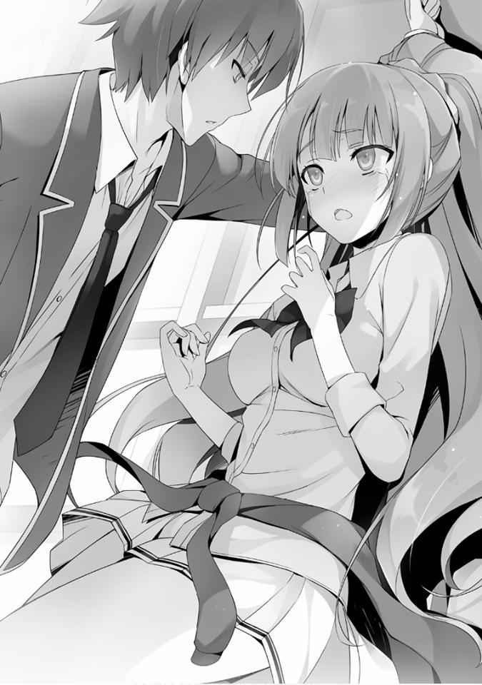
¿Qué tan aterrador sería eso? Karuizawa debería saberlo muy bien.
— ¡No, no bromees! ¿Quién te crees que eres?
— Alguien que sabe la verdad. Eso es todo. ¿No es eso todo lo que te importa?
Cuando me acerqué a ella, Karuizawa giró su rostro para evitar mirarme. Agarré sus mejillas y la forcé a mirarme. Ella desesperadamente quiere evitar mi mirada, pero la fuerza de un hombre es demasiado para que se resista. Cerró los ojos en un inútil intento de escapar.
— ¿Qué…? ¿Qué quieres de mí? ¿Tu objetivo es mi cuerpo?
— Tu cuerpo, eh. Eso podría no ser una mala idea.
Mis dedos se deslizan por los muslos de Karuizawa. La suavidad que siento es casi inhumana. La suavidad de su piel es muy diferente de lo que conozco y de la que tengo.
— ¡¡No!!
Trató desesperadamente de alejarse de mí. Fortalecí mi agarre en sus mejillas y la obligué a mirarme a los ojos.
— No te resistas. Si lo haces, daré a conocer todo a la escuela.
Esta oración, como un maleficio, había maldecido a su cuerpo a una rigidez total.
Ira, horror, miedo, desesperación. Sí, ¿cuántas emociones ha estado llevando Karuizawa? Debería notar que ahora mismo soy completamente diferente de la persona que proyecté en la vida cotidiana.
— Abre tus piernas —le dije.
Las lágrimas de Karuizawa comenzaron a caer cuando lentamente las extendió.
Incluso si sabe que será violada aquí, quiere proteger el lugar que tiene ahora.
El dolor de su intimidación ha tomado el control, y esta es la prueba. Puse mi mano en mi cinturón e intencionalmente jugué con la hebilla metálica. Incluso entonces, Karuizawa no huyó.
Está tratando desesperadamente de aceptar esta nueva realidad. Ella me miró con ojos ahuecados, y murmurba para sí misma.
Mi posición es correcta. Karuizawa Kei es una herramienta utilizable. Mi objetivo no es su cuerpo. La estoy amenazando para ver hasta dónde podría llegar para proteger lo que tiene. Es una apuesta arriesgada para mí revelar mi verdadera naturaleza. Si Karuizawa huye e informa sobre mí, entonces nuestras posiciones serían completamente inversas. Pero esta chica no puede hacerlo.
Ella tiene miedo de su pasado más que cualquier otra cosa. Temerosa de perder el lugar que tiene. Para proteger esto, ella incluso está dispuesta a usar su cuerpo. Eso es lo que significa este lugar para ella.
— No me inclinaré ante ti... No estoy siendo intimidada por ti ... ¡simplemente averiguaste mi debilidad y me estás usando! ¡Idiota, haz lo que quieras y viólame! —Karuizawa aulló, como si estuviera exponiendo su enojo al mundo.
— Pero está bien. Esta no es la primera vez que he sucumbido a las fuerzas...
Ella se rió burlonamente. Karuizawa se giró y me miró a los ojos.
— Hoho... Oye, ¿sabes? Cuando se presenta una verdad inmutable, ¿cómo reaccionan los humanos......? —Ella se sacudió y se abrazó. Con una sonrisa hueca y apagada, me miró distantemente—. Me rindo. Sí, me atacaron y devoraron. Me redujeron a reaccionar mecánicamente ante el estímulo. Ni siquiera podía reunir el valor para resistirme. No podía hacer otra cosa. Todo lo que puedo hacer es recibir.
Cuando finalmente llega a aceptar esta decisión, Karuizawa se levantó la falda y colocó sus manos sobre sus bragas. Agarré sus muñecas y la sostuve contra la pared del barco.
— ¿Qué recibiste? ¿Dónde estaban los dolores que te atormentaban?
— ¿Qué...? Por supuesto que en todo lo que tenía. Mis zapatos tenían tachuelas puestas. El cajón del pupitre estaba lleno de cadáveres de animales. Cuando iba al baño me salpicaban con agua sucia. En mis uniformes escribían palabras como “prostituta”. Me arrastraban por el pelo, los golpes y las patadas eran tan numerosos que no valía la pena
mencionarlos. Cualquier tipo de acoso que puedas imaginar, lo he experimentado. Lo que dije fue solo una muestra seleccionada. Eran tan relativamente “gentiles” que podría reír. Entonces, ¿por qué no te pones a reír? Ríete de mí, de la que continuamente escupían e intimidaban.
Después de experimentar todo esto, es impresionante que todavía pueda armarse de valor y lanzarse a la batalla nuevamente. Su “núcleo” es fuerte, y esta es la razón por la que todavía puede ponerse de pie e ingresar a esta preparatoria.
Entonces eso es lo que está pasando. Pero... esto no es suficiente para explicar algunas de las cosas que noté.
— ¿Son estos los únicos tormentos que has experimentado?
— ¿Qué......?
— Lo que dijiste, ¿era toda la verdad?
Siento que todavía hay algo crítico que hizo añicos su corazón. Esa forma anormal de mostrar sus terrores, no pudo evitar hacerme pensar que hay algo más detrás de eso. Karuizawa está ocultando algo que vale tanto como renunciar a su cuerpo.
— ¿Qué estás escondiendo?
— Que, nad...
Por un momento, Karuizawa giró su cabeza y su mira hacia su cintura del lado izquierdo. Lo noté y extendí mi mano para tocarla.
— ¡Pa, para!
Su grito fue contenido ominosamente por las paredes circundantes, y resonó en el pasillo vacío. Pero mi sospecha fue confirmada por sus gritos. Agarré su uniforme y lo levanté. En su hermosa piel había una fea cicatriz. Una cicatriz que solo puede ser causada por una cuchilla afilada cortando profundamente.
— ¿Es esta tu oscuridad?
— ¡Fu, hu, huhu...!
Esta cicatriz no es un producto de simples chicos atormentándose unos a otros.
Una cicatriz tan profunda debe haber puesto en grave peligro su vida. Incluso si su pasado lleva tal peso, ella todavía elige ponerse de pie. En los últimos días he estado observando a esta mujer llamada Karuizawa Kei. Esta persona, para protegerse, arrastró a la fuerza a la gente que la rodeaba a su territorio. Incluso si recibe desdén por sus acciones, quiere proteger su estatus.
— La desesperación viene en muchos aspectos y formas, pero lo que has experimentado fue, sin lugar a dudas, la desesperación —La oscuridad de Karuizawa. Sus pupilas. Se superpusieron con él.
Aquellos que eligen llevar su oscuridad con ellos se sienten atraídos. Y luego, son devorados el uno por el otro.
Y finalmente, aquellos que llevan la oscuridad, envolverán la oscuridad del otro consigo mismos.
— Qu, qué... ¡Tú......!
Si esta persona está siendo reprimida por su pasado, entonces todo lo que tengo que hacer es liberarla por la fuerza de sus ataduras. Incluso si no la conozco profundamente, puedo sentir la oscuridad que tiene. Sí... Este mundo tiene muchas más cosas que Karuizawa no ha experimentado. En lugares más profundos, incluso una oscuridad más vil ha echado raíces.
— Puedo prometerte una cosa, y eso es que a partir de ahora te protegeré de la intimidación. Soy mucho más confiable que Hirata y Machida.
— ¿Quieres decir que puedes detener a Manabe y su pandilla......?
— Lo que debes hacer ahora es decidir qué tan confiables son mis palabras.
Un pequeño parásito es fácil de expulsar, pero una llama más grande tendría el efecto contrario. Al final, el fuego evolucionará en algo que ni un soplo ni el viento pueden extinguir. Actuarás en mi nombre. Actuaré en tu nombre. Tus emociones no deben entrar en juego aquí. ¿Estás de acuerdo con esta relación?... Primero, deshagámonos de tus preocupaciones —dije y saqué mi teléfono—. Tengo una manera de detener las acciones de Manabe.
Y luego, encendí mi pantalla. En mi teléfono había una foto de Karuizawa siendo asaltada por la pandilla de Manabe.
— Esto es...
— Si les envío esto, deberían reconsiderar hacerte más cosas. Si todavía deciden perseguirte difundiendo rumores, esto me daría buena munición para intervenir.
En cuanto a Manabe y compañía, este incidente en particular debería calmar su enojo. Ir innecesariamente más allá de esto solo las pondría en una posición desfavorable. Solté sus mejillas y luego, con un tono sin emociones, le dije:
— Solo busco a alguien que me ayude. Espero que en el futuro me ayudes cuando surja la necesidad.
— ¿Qué, mi ayuda? ¿Qué quieres que haga...?
— Si la situación actual continúa, la clase D nunca superará a la clase A.
Mientras que las habilidades individuales de los miembros de la clase D
son pasables, estamos muy desprovistos de unión. Somos como arena de playa. Sin embargo, si puedes controlar a las chicas para mí, esta situación gradualmente mejorará.
Y eso te convierte en un ser más valioso que Horikita, que solo sabe cómo luchar sola.
— Tú, ¿qué estás haciendo...?
Ella debe haber pensado que soy una persona normal, así que verme en este estado debe haberla asustado. Pero no me explicaré. Cuantas menos palabras, más aterrador y menos se resiste.
— El primer paso de nuestra cooperación será llevar a nuestro grupo a la victoria en este examen.
— ¿Victoria, pero cómo...?
— Porque tú eres-, ¿no es así?
Cuando escuchó la palabra clave, Karuizawa abrió los ojos ampliamente y me miró. Como si la verdad estuviera reverberando dentro de sus pupilas, su mente, sus ojos. Le presenté la verdad.
Karuizawa parecía un poco perpleja, pero eso también podría ser mejor. Porque un parásito solo puede vivir al unirse a un hospedero. Y ahora que Karuizawa se ha unido a mí, un nuevo hospedero. Su vida no tiene forma de avanzar, si no es conmigo.
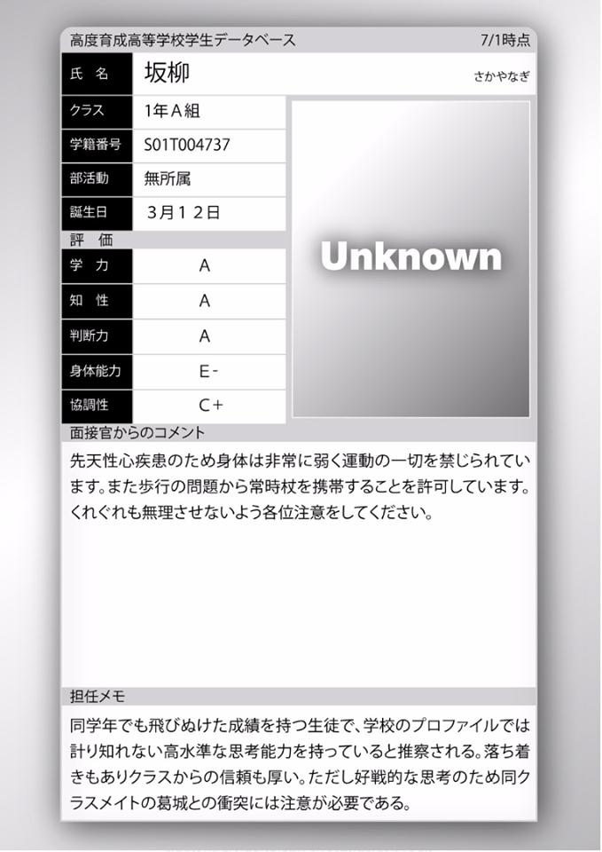
LA DEFERENCIA ENTRE CADA PERSONA
PARTE 1
El último día del examen había comenzado. Y a diferencia de la vez en la isla deshabitada, el tiempo pasa rápidamente en un lujoso barco. Además, cada día había dos horas de debate sin que se discutiera demasiado contenido.
Mientras que el plan de frente unido de Ryuuen y el plan de la fortaleza de Katsuragi continuaban como siempre, Ichinose Honami de la Clase B pasaba su tiempo sin poder contraatacar esas estrategias.
— Waah. ¡Perdí otra vez! ¿Quizás soy mala en Old Maid? —Ichinose dice mientras esparce las cartas en su mano frente a mí.
A pesar de ser el quinto período de discusión que hemos tenido, Ichinose una vez más sugirió jugar a las cartas. Hubiera cuestionado este enfoque, pero parece que nadie en la Clase A está dispuesto a participar en la discusión. Así que solo un pequeño grupo de personas pensaban que sería mejor jugar que pasar tiempo sin rumbo fijo en los juegos de cartas.
El contacto de Manabe y las demás con Karuizawa fue un poco preocupante, pero parece que el efecto de enviarle esas imágenes funcionó de manera excelente. Y ahora se están alejando sumisamente de ella. Karuizawa también creyó en eso y actuó como de costumbre.
Por otro lado, mirándolo desde la perspectiva de Manabe, la persona misteriosa que envió la conversación debe haber sido Yukimura o yo, que estábamos presentes en el incidente de la escalera de emergencia. Añadí en el chat que recibí las imágenes de un compañero de clase, pero está claro que cualquiera de los dos debe ser el que tomó las fotos.
Eso o esas imágenes se las dieron a la misteriosa persona que envió el chat como algo interesante. Manabe debe haber obtenido ese tipo de idea de todo este asunto.
Mientras no pueda asegurar con certeza que fui yo el responsable, no puede tomar medidas contra mí. Porque no tiene sentido averiguar la identidad de la persona que tomó esas imágenes.
— ¿Está bien que me quede aquí así?
Yukimura dijo eso mientras estaba sentado a mi lado con una expresión triste y deprimida
— Estás triste, Yukimura-kun. Aquí es donde juegas con tu corazón y te sacudes de tu ira. Revancha. ¡Revancha!
— Voy a pasar. De todos modos, no me apetece. Más importante aún, ¿está bien, Ichinose-san? Poner fin al examen de esta manera. Pensé que eras la que estaba a cargo de este grupo y nos guiaba a todos a través del diálogo —Yukimura le pregunta a Ichinose.
Y en respuesta a eso, Ichinose, cuyas manos habían estado sosteniendo las cartas, se detuvo brevemente.
— ¿No es eso demasiado conveniente para ti, Yukimura-kun? Si realmente quieres ganar, no confíes en que alguien más lo haga por ti y usa tu propio poder para ganar —le replica Ichinose a Yukimura.
— ... Lo sé. Lo entiendo —contestó Yukimura.
El hecho de que no puede permitirse tener esa responsabilidad, estoy seguro de que Yukimura también es consciente de ese hecho. Pero a pesar de saberlo, supongo que todavía quería cambiar esta atmósfera resignada.
Yukimura, que posee calificaciones de primer nivel, sería uno de los más confiables si el examen midiera puramente nuestra destreza académica. Pero el hecho de que estés dotado académicamente no siempre se traduce en levantar el ánimo de las personas. No es como si pudieran inventar ideas novedosas.
Hay cosas en el mundo que no se pueden hacer simplemente memorizando palabras y ecuaciones.
Durante las vacaciones de verano, hemos tenido dos exámenes especiales, incluso Horikita se vio obligada a enfrentar su impotencia frente a ellos. Me pregunto si en este punto muerto, Ichinose y Machida y los demás también
sienten esta irritación. Sin embargo, incluso esa frustración, siempre y cuando no termine rompiendo tu espíritu, eventualmente puede ser utilizada para fortalecerte.
PARTE 2
— Y con la próxima reunión, el examen habrá terminado. ¿Cómo están las cosas de tu lado, Ayanokouji-kun?
Tengo mi última reunión con Horikita. El mundo exterior ya ha sido envuelto por la oscuridad. Los registros de nuestra conversación permanecen en el teléfono.
Para evitar eso, nos estamos reunimos cara a cara.
— Ningún cambio particular de mi lado. Parece que el “objetivo” podrá escapar con seguridad. ¿Y tú? —le pregunto a ella.
Pensé que no podía esperar mucho de Horikita, pero...
— Ganaré —respondió brevemente.
— Entonces, ¿has encontrado al “objetivo”? —pregunté.
— No sé quién nos esté escuchando, así que aún no puedo contarte los detalles, pero no me importaría si crees en mí. Todo irá bien —me respondió Horikita.
De Hirata, ya escuché que el “objetivo” del grupo (Dragón) es Kushida. Por supuesto, estoy seguro de que Ryuuen y Kanzaki ya han hecho todo lo que está en su poder para descubrirla. Pero parece que Horikita ha navegado con éxito a aguas seguras y sobrevivido.
Si ella tiene tanta confianza, estoy seguro de que no hay mucho de qué preocuparse. Tendremos que esperar que 500,000 puntos aparezcan más adelante. Podría incluso describirse como una victoria sólida para nosotros en ese caso.
— ¿Tal vez quieres consultarme algo? —pregunta.
— No hay necesidad de eso. Haz tu movimiento como quieras —le dije.
Incluso si ella me contó sobre el grupo (Dragón), no es que pueda hacer mucho para ayudarla.
— Entonces, dijiste que necesitabas hablar conmigo sobre algo, ¿qué es? Me gustaría evitar el contacto descuidado si es posible —me dice Horikita.
Quizás ella desconfía de la existencia de Ryuuen que ha estado acechándola.
No siento ninguna amabilidad por su actitud, pero sería problemático para mí si Horikita repentinamente adopta una actitud amable hacia mí.
— No puedes permitirte el lujo de estar aterrorizada por la mirada de Ryuuen para siempre, ¿sabes? —le dije a Horikita.
— A juzgar por ese tono, ¿puedo suponer que tienes un plan? —me pregunta.
Pero parece que no espera mucho de mí, ya que parecía sorprendida cuando asentí en respuesta a eso.
— He traído a Hirata a nuestro lado. Creo que puedo construir una relación de cooperación con él en el futuro —le dije a Horikita.
— Realmente no quiero nada de eso —responde ella.
— Está bien. No te pido que te involucres con Hirata personalmente. Me encargaré de la charla, así que solo síguenos el ritmo —dije.
— ...No me gusta esto. No me gusta que te muevas así a mis espaldas —me dijo Horikita.
Pensé que ella diría algo como esto.
— Entonces muestra la cara cuando discutamos las cosas. Incluso si no puedes forzarte a decir algo, puedes mantenerte al tanto de las discusiones para que no haya ningún problema, ¿no? —le pregunté.
— Supongo que sí.
Todavía parecía estar insatisfecha, pero si le doy a Horikita la opción de participar o no, no puede negarse. Además, la existencia de Hirata es una gran ayuda para la clase, y después de ver su liderazgo en la isla deshabitada, Horikita seguramente lo comprenderá también.
— Incluyendo a Hirata, hay otra persona que me gustaría presentarte. Por favor, libera un poco de tiempo antes de que termine el examen —le dije.
— Todavía no me gusta. No incluyas más personas de las necesarias —
responde.
— Por favor, considéralo como una consecuencia de tu presencia en la primera línea de batalla. Además, esa persona seguramente nos será útil
—le dije.
— Creo que más o menos puedo entender lo que está pasando... pero está bien. Reunámonos aquí justo después de que el examen termine —
respondió Horikita.
Después de intercambiar esa promesa, miro la hora en mi teléfono.
La última discusión tendrá lugar en 30 minutos.
— En este examen, me pregunto cuántos grupos se decidirán por traidores —
dijo Horikita.
— Eso me pregunto. Me sorprendió que el examen del grupo (vaca) terminara de repente, pero dudo que algo así se repita. Creo que los resultados más probables serán el “objetivo” escapando cuando se termine el examen —
respondí.
— Supongo que sí. También creo eso.
Y solo por un momento, Horikita desvió la mirada. Ese es un gesto inconsciente que hacen los humanos cuando están preocupados por algo.
— ¿Qué pasa? —le pregunté.
— Nada. Es solo que sentí que algo andaba mal con la forma en que se desarrolló este examen. Pero no debería haber ningún error.
Definitivamente no debería perder —me dijo.
Parece que algunas de las ansiedades que había estado almacenando se filtraron ligeramente. Incluso si ofreciera palabras de aliento, estoy seguro de que lo verá como un problema innecesario. Así que decidí simplemente callarme.
PARTE 3
Los miembros del grupo (Conejo), sin haberse acercado a hacer un gran avance en el examen, ingresaron a la sexta y última discusión. Como quería considerar
mi idea con calma y racionalidad por un tiempo, decidí dejar la habitación donde estaban Hirata y los demás y comencé a dirigirme a la sala de debate grupal.
Como aún quedaban alrededor de 30 minutos para el inicio de la discusión, era obvio que nadie estaría allí todavía.
Pero esas expectativas fueron aplastadas por la existencia inesperada de una persona...
— ... una llegada anticipada, ¿eh?
Era la silueta de una chica durmiendo en el piso de una habitación cuando nadie debería estar allí todavía. Aun así, me pregunto por qué su falda hace que el corazón de un hombre cosquilleé. Esto es malo, malo. Como estaba acostada, los muslos regordetes de Ichinose eran aún más evidentes de lo normal así como las partes que cubren la falda y no se pueden ver, me encontré incapaz de quitar mis ojos de ellos. Si existiera un hombre que no sintiera eso hacia Ichinose, entonces es gay o bisexual. Este es un destino del que un chico sano no puede escapar.
Aunque pensé que no tenía sentido, no pude evitar mirar desde sus muslos hasta sus pies, luego su rostro, luego sus pechos, y luego sus muslos. Mi mirada titila entre ellos. Mientras me sentía frustrado a esta edad, de repente me sentí distraído por algo más atrás de la cabeza de Ichinose. Es decir, el teléfono que debe haber estado usando antes de conciliar el sueño.
En el teléfono asignado por la escuela, se registra bastante información. Y no solo juega un papel importante en este examen, sino que también te permite determinar los puntos de cada individuo. Naturalmente, para confirmar esto, se requieren cosas tales como una identificación personal y contraseñas, pero para evitar la molestia de tener que iniciar sesión cada vez que desees verificar esto, hay muchos estudiantes que almacenan dicha información en una terminal móvil.
Eso significa, que si puedo robarle el teléfono a Ichinose ahora mismo, podría determinar su nivel de vida y la cantidad de puntos que posee. Hace un tiempo, ya determiné que para ahorrarse la identificación y contraseña, Ichinose también almacena su información en una terminal móvil.
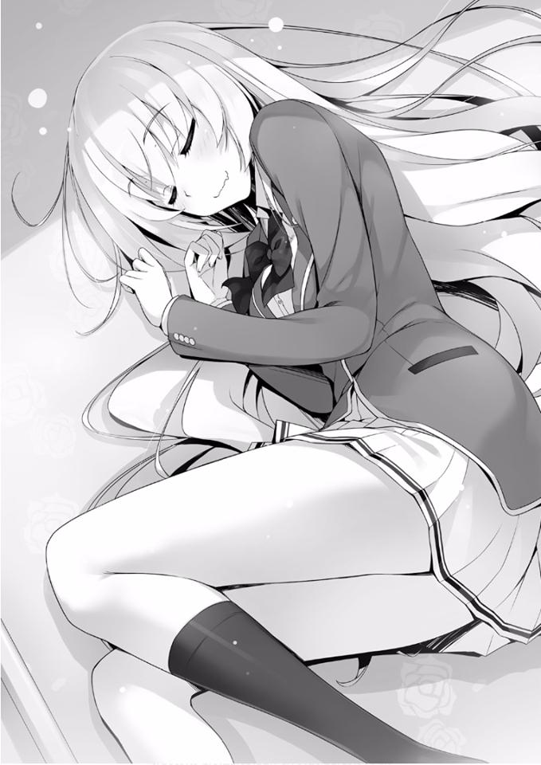
Si esa situación no ha cambiado, podré obtener información. Lentamente y con cautela, me le acerco.
— ...uuuuu.
— Woah.
A medida que la distancia entre nosotros se cierra, tal vez la atmósfera cambia y siente la presencia de otra persona, Ichinose se agitó levemente. Pero luego inmediatamente se durmió de nuevo. Parece que he logrado hacerlo sin despertarla. Cierro nuestra distancia nuevamente.
— ...nnn.
Me pregunto qué estoy haciendo. Aunque es por el bien de reunir información, si alguien ve esto, solo me vería como un pervertido. ¿Qué pasa si Ichinose se despierta mientras le doy la espalda? Siento que estoy haciendo algo que no debería estar haciendo.
Dado que la discusión comienza en 30 minutos, no hay problema incluso si llegué temprano, pero si es así, ¿no debería esperar con calma dentro de la habitación? Si no hay nada de lo que deba sentirme culpable, debería actuar de manera normal. Paso a paso, cierro mi distancia con Ichinose.
— ...nnnnn... munyumunyu.
Esto es imposible. Cada vez que hago un movimiento, Ichinose constantemente muestra signos de despertarse. Para probar esta hipótesis, trato de mover los pies en el lugar sin moverme realmente. Si Ichinose responde a esto, puedo deducir de eso que tiene el sueño ligero. Se dice que las personas que tienen el sueño ligero son personas prudentes...
...esto es patético
¿Por qué estoy siendo tan sigiloso? Pero, curiosamente, ella no habla en sueños.
Pero si alguien me ve ahora, todo lo que verían es la palabra pervertido.
Después de haber reconocido mi comportamiento como un esfuerzo estúpido, renuncié a robar su teléfono y me alejé de ella.
Luego me senté a una gran distancia de Ichinose. Desde este punto de vista, no hay riesgo de ver accidentalmente los secretos escondidos en sus muslos.
Y no me pondré en contacto accidentalmente con ella de esta manera.
Más importante aún, ya que es bastante temprano. Me pregunto cuándo llegó Ichinose aquí. Luego, unos 20 minutos antes de que comenzara la discusión, sonó una linda música en la habitación. Venía del teléfono de Ichinose.
— ... nnnn.
Mientras mantiene los ojos cerrados, busca su teléfono y opera la pantalla de su teléfono, detiene la música. Parece que la música vino de la alarma que ella había puesto. Todavía soñolienta, Ichinose se levanta del suelo y nota la presencia extraña en la habitación, es decir, mi existencia.
Me preguntaba qué haría si mostraba una cara de disgusto por mi presencia, pero ni siquiera estaba preocupada por eso.
— Buuueeeenoos días, Ayanokouji-kun. Lo siento, ¿mi alarma te sobresaltó?
—preguntó.
— No, no particularmente. Parece que dormiste bien.
— Ahahahaha. Lo siento, lo siento. De repente me quedé dormida. Llegas temprano, todavía faltan 20 minutos.
— Lo mismo va para ti. ¿Desde cuándo has estado aquí?
— Desde hace una hora. Solo quería pasar un poco de tiempo en silencio. Si es en mi habitación, hay bastante alboroto con mis amigos entrando y saliendo —respondió ella.
Parece que este era el mejor lugar para tomar una siesta.
— Además. Quería ordenar mis pensamientos.
Más que refrescada por su sueño, su rostro parecía más como si hubiera tenido un destello de perspicacia.
— ¿Obtuviste algún resultado? —pregunté.
— Más o menos.
Luego, poniéndose de pie, Ichinose por alguna razón, caminó a través de la habitación hacia mí y me sentó a mi lado. Una habitación con solo dos personas presentes, y una distancia cerrada. No pude ocultar mi nerviosismo en esta situación, pero parece que Ichinose no lo ha notado en absoluto.
— Todavía queda tiempo antes del examen, ¿charlamos un poco? Si no te estoy molestando, —pregunta.
— No, no es molesto en particular. Si estás de acuerdo con eso, vamos a charlar —le respondí.
— Entonces está decidido. La verdad es que hay algo que quería preguntarle a Ayanokouji-kun. También le he preguntado esto a todos mis compañeros de clase, incluso a los chicos como Kanzaki-kun. Pero no he escuchado las opiniones de las otras clases, así que tengo curiosidad. Ayanokouji-kun,
¿alguna vez has querido subir a la Clase A? —me pregunta.
Me preguntaba con qué me cuestionaría, pero era una pregunta sorprendentemente común.
— Por supuesto, pienso en eso. No... más que querer ascender a la Clase A, es más que debo tener por objetivo a la Clase A. Esa sería una forma más apropiada de expresarlo —le digo.
— En otras palabras... ¿por la garantía de una buena carrera y colocación laboral?
En esta escuela, los estudiantes se dividen en clases de la A a la D y se les hace competir. Pero el máximo privilegio de poder ir a cualquier universidad y obtener un empleo después de la graduación solo se otorga a la Clase A. Estaba escrito ambiguamente en el folleto de la escuela, por lo que puede parecer un fraude al principio.
— En estos tiempos, después de la graduación no podrás mantenerte al día con tu vida y tu trabajo, especialmente cuando se trata de ser empleado —
dije.
— Supongo que es verdad. También creo eso. Pero tener demasiada fe en el sistema también es peligroso, ¿no crees? En el 99.9% de las palabras que dicen, hay trampas invisibles que no podemos ver —dijo.
Por supuesto, la trampa de la que habla Ichinose es probablemente la tasa de empleo garantizada del 99,9% y el avance educativo promocionado por la escuela. Por ejemplo, si quisiera convertirme en un jugador profesional de baloncesto pero carezco de la experiencia necesaria, la escuela intentaría encontrar formas de elevarme al nivel de un profesional. Además, esta escuela es también un caldo de cultivo para las conexiones interpersonales. Pero solo porque juegas baloncesto regularmente o te has graduado de una famosa universidad o escuela, no necesariamente garantiza tu futuro.
Las personas que logran los sueños que han declarado desde el principio, son solo una pequeña fracción. Según ciertas estadísticas, solo uno de cada seis estudiantes de primaria logra sus sueños.
A primera vista, parece una alta probabilidad, pero los datos son ambiguos en el mejor de los casos y los estándares de las estadísticas no están claros.
Convertirse en un jugador profesional de baloncesto con éxito no significa que te conviertas en un jugador de primer nivel. Los jugadores que pertenecen al baloncesto profesional, por ejemplo, incluidos los aprendices, serán alrededor de 900 o 1000 personas. Sin embargo, solo a través de jugar de forma regular y compitiendo y ganándole a tus rivales puedes lograr tu sueño. Al final, solo 100
de esas personas habrán logrado sus sueños con éxito.
En otras palabras, tener como objetivo tu sueño y lograrlo con éxito tiene una probabilidad muy baja. En cualquier caso, lograr un sueño es extremadamente difícil. Muchos estudiantes simplemente repiten sus aburridas vidas una y otra vez mientras hablan vagamente de sus sueños. Pero si uno realmente desea hacer su sueño realidad, necesita de mucho esfuerzo y suerte.
— Pero aun así esta escuela... si lo piensas, tiene una gran influencia ¿no? Y
muchas personas han tenido éxito en la vida por su ayuda. ¿O estás diciendo que no estás interesado en ella, Ichinose? —pregunté.
— Nada de eso. Incluso yo tengo un sueño, graduarme en la Clase A. Y
también un sueño que quiero cumplir —dijo Ichinose.
Y a pesar de que ella lo dijo con una sonrisa, pude ver un fuerte e inquebrantable sentimiento en sus ojos.
— El sistema escolar es bueno y todo eso, pero si no puedes graduarte de la Clase A, tus perspectivas son mínimas. Como la escuela funciona con realismo, si no puedes ganar usando tus talentos, no hay nada que puedas hacer al respecto, los estudiantes son asignados a las clases basados en sus méritos, así que ahora entre Ayanokouji-kun y yo, solo uno de nosotros podría alcanzar sus sueños moviéndose hacia la cima. Aah, pero también hay casos donde ninguno de nuestros sueños se puede cumplir —continuó.
En otras palabras, aunque estamos sentados aquí charlando como amigos, al final solo una clase puede ser la ganadora. Las tres clases restantes no compartirán esas recompensas.
— ¿Escuchaste que también hay excepciones a esas reglas? —finalmente dijo.
— ¿Hmm? ¿Cómo cuando los individuos acumulan 20 millones de puntos? —
pregunté.
— Sí. Parece que nadie ha logrado algo así en la historia de la escuela, pero también hay Ultra C’s —respondió Ichinose—. Sí, sí. Si tenemos en cuenta eso también, es posible que los dos podamos graduarnos de la Clase A —
dijo Ichinose.
— El problema es si puedes ahorrar 20 millones de puntos o no, en primer lugar, incluso si guardas puntos en los exámenes, el sistema ya está configurado para que no llegues a los 20 millones —respondí.
Si solo miramos este examen especial, dependiendo de tus acciones a lo largo de él, es posible recibir una gran cantidad de puntos. Y solo dos de esos exámenes se han terminado hasta el momento. A partir de este punto, es posible que se reduzcan la cantidad de puntos que se pueden ganar y que se consuman a causa de grandes penalizaciones.
— Supongo que eso es cierto. Si comienzas a ahorrar tus puntos, al llegar solo a la mitad de esa cantidad, ya levantarías sospechas —dijo Ichinose.
— Eso es verdad. La situación financiera en la Clase D, especialmente, es terrible. Aunque Horikita hace todo lo posible por nosotros, los puntos obtenidos de la isla deshabitada aún están muy lejos. No, incluso es posible que podamos perder esos puntos en este examen. Ichinose,
¿estás ahorrando puntos? No me parece que seas del tipo que trabaja duro para obtener puntos —le pregunté.
— Ummm... eso me pregunto. No sé sobre los demás, pero supongo que uso puntos algunas veces y los guardo también a veces. Aunque estoy en la clase B, no tengo tantos puntos ¿sabes? —dijo.
En respuesta a mi pregunta, Ichinose responde en un tono muy natural sin indicios de que esté ocultando algo, juzgándola únicamente por su comportamiento.
— Ayanokouji-kun.
— ¿Hmm?
En el siguiente momento, Ichinose repentinamente cierra la distancia conmigo y se da vuelta para mirarme a la cara.
— Parece que después de todo lo viste, esa vez.
Hermosos ojos que parecen succionarme me miraban sin soltarme. Parece que Ichinose es mucho más inteligente de lo que esperaba, ella ha visto a través de mis planes.
— ... Lo siento. Mientras usabas tu teléfono antes, simplemente vi la pantalla.
Tenía curiosidad y solo quería preguntarte —respondí.
— Ahaha... no es como si te estuviera culpando por eso. Ciertamente esa es una gran cantidad de puntos, ¿verdad? — dijo Ichinose. (NT: Supongo que esto sucede en el volumen 2, la parte que está sin traducir, pero si no mal recuerdo se ve en el anime).
Es verdad. Incluso antes del final de un semestre, Ichinose ya ha acumulado una gran cantidad de puntos. Si guardo todos los puntos asignados mensualmente sin usar uno solo, aún no podría ahorrar tanto.
— No te preocupes. No se lo he contado a nadie más. También existe la posibilidad de que haya visto mal. No investigaré más —le dije.
Incluso si investiguara, dudo que pueda obtener una respuesta satisfactoria.
— ¿Has podido encontrar la manera de ganar? —pregunté.
— Ummmm... creo que sí. Creo que encontré una pista.
Pensé que no había forma de que ella respondiera honestamente, pero tal vez por su confianza, Ichinose respondió en un tono relajado. Parece que ella es del tipo que actúa sobre sus convicciones sin perder tiempo.
— Entonces esta pelea... se convierte en una batalla para ver si A ganará o B
lo terminará —dije.
— No lo sabré hasta que caigan las cortinas. La victoria a la que aspiro esPero antes de que pudiera terminar, es cuando se acercaba el momento de la discusión grupal, los miembros del grupo comenzaron a aparecer uno detrás de otro. Los estudiantes de Clase A fueron los primeros en llegar, sin embargo, sin intercambiar un saludo con nosotros, simplemente tomaron sus asientos.
— ¿Qué? ¿Ya estás aquí, Ayanokouji?
— Junto con Ichinose-dono. Solo ustedes dos. ¿Qué clase de contacto secreto estaban planeando aquí?
Tanto Yukimura como Sotomura me bombardearon con esas preguntas cuando entraron juntos a la habitación. No pude notar ansiedad ni depresión en sus rostros, por lo que quizás ya hayan renunciado a la victoria en este momento.
Por otro lado, los estudiantes de la Clase B parecían casi relajados.
— Esta es la última, ¿has encontrado alguna pista? —Hamaguchi me pregunta después de haber esperado en silencio a que la discusión en grupo comenzara.
— Honestamente, no tengo idea. No hemos podido establecer un diálogo adecuado en absoluto —le respondí.
Lo dije, pero ya he ejecutado las estrategias que había planeado desde el inicio del examen. Fue mediante el uso del correo que la escuela había enviado a nuestros teléfonos que el “objetivo” se había camuflado con éxito. El “objetivo”
del grupo (Dragón) es Kushida, pero ¿qué sucede si, por ejemplo, Kushida y Horikita intercambiaran sus teléfonos? Al mirar ese teléfono, cualquiera sospecharía que Horikita es el “objetivo”.
Y si hubiera un traidor que supiera de este hecho, al enviar el nombre de Horikita como el “objetivo”, cometería un error y la victoria se lograría de esa manera.
— Buenas noches, vamos a llevarnos bien —habiendo dicho esto brevemente, Ichinose recompone su postura y sonríe como de costumbre.
Pero aún es demasiado pronto, porque aún no se sabe qué ocultan y planean los otros miembros.
Además, si todos se enfocaran en el tema en cuestión, sería cada vez más difícil camuflar el “objetivo”. Había estado esperando que Ichinose siguiera hablando antes, pero decidí interrumpirla ahora.
— Si todos están de acuerdo con eso...
— Hay algo que me gustaría decir.
Curiosamente, tanto Hamaguchi como yo dijimos esas palabras al mismo tiempo.
— Disculpa, adelante, Ayanokouji-kun —dice.
— No... para nada, tú primero. Estoy bien hablando más tarde —respondí.
Nunca esperé esta coincidencia en este momento. Una terrible coincidencia. Mi plan en sí no tiene fallas, pero si ocurre un problema inesperado como este, el efecto de mi plan puede volverse inestable.
Supongo que puedo escuchar lo que Hamaguchi tiene que decir primero antes de calibrar mi discurso y volver a intentarlo. En respuesta a lo que había estado pensando en ese sentido, Hamaguchi destruyó mis expectativas de una manera inesperada.
— Entonces, con su permiso. Durante los últimos tres días, he estado pensando constantemente en la mejor manera de lograr el primer resultado —Hamaguchi comienza a hablar de su plan a los otros del grupo (Conejo).
Sorprendentemente, el contenido de su propuesta era similar a la estrategia que había planeado.
— Y finalmente se me ocurrió una sola conclusión, que es posible que todo el grupo busque el primer resultado y una forma de hacerlo posible —
continuó Hamaguchi.
— ¿Es eso realmente cierto, Hamaguchi?
Para los ojos abatidos de Yukimura y los otros que habían perdido toda ilusión, un rayo de esperanza había regresado.
— Por supuesto. Es una idea que surgió después de escuchar a todos aquí, incluso Ichinose-san y Machida-kun —dijo Hamaguchi.
— Increíble. No hay forma de que el primer resultado se pueda lograr a través de solo el diálogo —el que se opuso a esta ingenua propuesta de ensueño fue, por supuesto, Machida.
— Escuchemos primero. Hamaguchi-kun no es el tipo de persona que habla antes de pensar.
Ichinose apoyó a Hamaguchi y creó un ambiente propicio para la discusión.
— Ahora procederé a mostrarles a todos mi teléfono. Naturalmente, la escuela me envió un correo electrónico. Estoy seguro de que comprenden a qué me refiero. Ya que está prohibido falsificar o alterar los correos electrónicos de la escuela de alguna manera, no hay riesgo de ser engañados. Por eso es una cuestión fácil, simplemente mostrándonos nuestros correos, podemos encontrar quién es el “objetivo”, esa es mi manera de encontrar la verdad —nos dijo Hamaguchi.
— Esto es estúpido. ¿Quién mostraría sus correos de esa manera? Todavía no sabemos si alguien nos traicionará en el momento en que mostremos nuestros correos, no hay nadie que acepte esto.
En respuesta a este plan que cualquiera podría haber pensado, pero con el cual nadie estaría de acuerdo, naturalmente, el espectador Machida quedó estupefacto.
— Sin duda, debido a que saben que existe la posibilidad de una traición, el
“objetivo” no mostrará el correo en su teléfono. Pero mirándolo desde la perspectiva de aquellos que no son el “objetivo”, hay poco riesgo en mostrar el correo. El examen pronto terminará, si no hacemos nuestra
jugada ahora, no ganaremos. Si una clase colabora para proteger al
“objetivo”, ninguno de ellos mostrará sus correos. Al hacer esto, es posible acorralar al “objetivo” —continuó Hamaguchi.
— Incluso si conoces la identidad del “objetivo” o la clase a la que pertenece, si alguien nos traiciona se terminó. El problema no se resolverá. ¿Estás planeando jugar un juego en el que el más rápido en traicionar gana?
Usando esta estrategia, de hecho es posible descubrir la identidad del “objetivo”.
Pero eso es todo lo que puede hacer. Al final, no todos jugarán limpio y los demás responderán en consecuencia.
— Entonces, cállate. Estará bien si Machida-kun no participa —dijo Hamaguchi mientras se negaba a sucumbir ante la actitud poco cooperativa de los demás y procedió a mostrarnos el correo en su teléfono.
— Estoy de acuerdo con la idea de Hamaguchi-kun. Mostraré el mío también
—Beppu de la Clase B también hizo lo mismo.
Parece que este no es un evento aislado y aleatorio sino, sin duda, la estrategia de Ichinose en acción. El desarrollo es el mismo que la estrategia que había planeado. Pero, no sé hasta dónde han pensado esto. Pero si creen que todos creerán obedientemente en esas palabras y mostrarán los mensajes en sus teléfonos, eso sería imprudente...
— Creo que esto es una buena idea. No tengo objeciones en mostrar mi teléfono —Ichinose sonrió una vez más como si aceptara seguir el plan de Hamaguchi. Combinando las acciones de los demás, también busca en el bolsillo derecho de su falda para sacar el teléfono—. He estado reflexionando sobre esto durante mucho tiempo, pero finalmente lo entiendo ahora, después de escuchar lo que ha dicho Hamaguchi-kun. Lo siento, lo he mantenido oculto hasta ahora, pero... —y con esas palabras intencionadas, Ichinose sacó su teléfono.
Decidí atacar ahora antes de que pudiera completar su estrategia.
— Hablas en serio, ¿verdad, Ichinose? Si vas a apostar por eso, aceptaré esa oferta.
Antes de que Ichinose pudiera revelar el contenido de su correo, ofrecí mi teléfono. Pero este no era el mío, sino uno que había intercambiado con cierta persona.
— Ayanokouji-kun... ¿estás bien con eso?
— Sí. Después de escuchar a Hamaguchi, creo que no hay otra manera más que esto. Como soy malo en comunicarme, lo único que puedo hacer es mostrarte la verdad, así que eso es lo que haré —le dije.
— Espera Ayanokouji. Me opongo. No hay forma de que este tipo de estrategia directa vaya a ir bien.
Yukimura trató desesperadamente de detenerme, pero me encogí de hombros y simplemente le mostré mi correo.
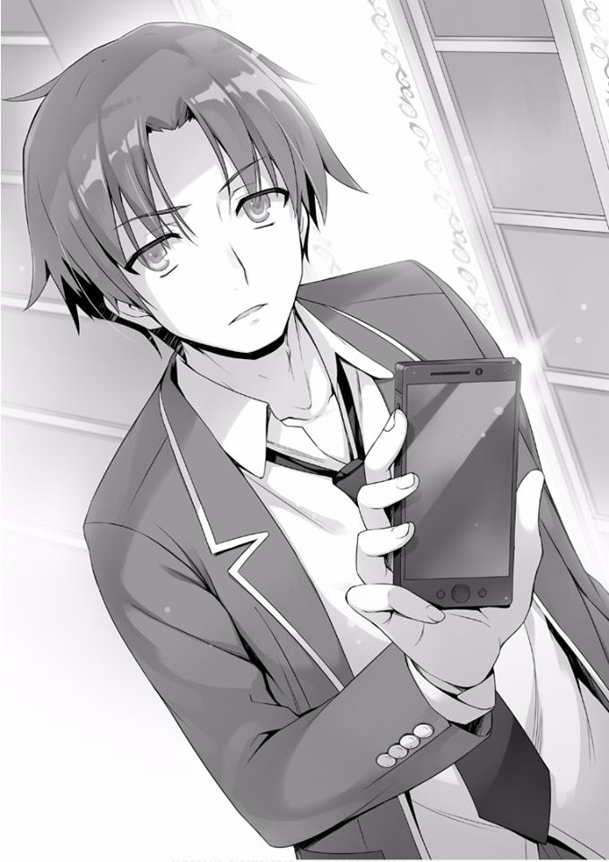
Y con eso, probé que no era el “objetivo”. Una gran cantidad de agua ya se había acumulado en esta presa invisible. Si se abriera un agujero de 1
centímetro, la presa seguramente colapsaría y se convertiría en una corriente fangosa. Esta acción fue el disparador para abrir ese agujero.
— Hmm... ciertamente parece que Ayanokouji-kun no es el “objetivo”.
— Entonces mostraré el mío también.
¿Ahora quién seguirá? De entre la gran multitud de personas que aún se reían de la estrategia de Hamaguchi, una chica expresó su aprobación y consentimiento. Era la persona que nadie hubiera esperado. Ibuki Mio.
— ¿Estás loca? No hay beneficio para nosotros al hacer esto —Fue Manabe quien objetó las arriesgadas acciones de Ibuki.
Pero las palabras que Ibuki dijo en respuesta fueron de hecho, bien razonadas.
— Los que no son el “objetivo”, ni pertenecen a la misma clase que el
“objetivo”, no obtienen ninguna ventaja en mantener el status quo. La Clase B también lo comprende. Si no hacemos nada, nunca alcanzaremos a las clases superiores a nosotros. Es por eso que están mostrando sus teléfonos. Y estoy pensando lo mismo que ellos. Eso es todo —dijo Ibuki.
— Pero eso es...
— O tal vez, ¿eres el “objetivo”? —Ibuki le dijo eso a Manabe, quien se suponía que era su aliada, de una manera hostil que correspondía a un enemigo.
— N-no es e-eso...
— Entonces deberías poder mostrarlo también, tu teléfono —Ibuki le dice a Manabe.
En cierto modo, sus palabras podrían haber sido tomadas como amenazas para sus aliados, pero como si finalmente entendieran, Manabe y los demás también sacaron sus teléfonos. La caza del “objetivo” está en marcha. Karuizawa también saca su teléfono con una correa y lo coloca frente a todos.
— Karuizawa, ¿tú también estás de acuerdo con Ayanokouji? ¿Vas a seguir esta estrategia también? — pregunta Yukimura.
— Solo estoy haciendo esto por mí, también quiero puntos privados —
respondió Karuizawa. El correo de la escuela también decía que ella no era el “objetivo”. Karuizawa también se consideró limpia.
— ... ehhh. ¿Qué debería hacer? —murmura Sotomura.
— Piensa por ti mismo, Sotomura. Esta no es una verificación obligatoria sino voluntaria, ¿sabes?
— Uuuu... terminemos con esto, supongo.
En una situación en que muchos estudiantes se han unido, después de haber juzgado que él no tiene otra opción tampoco, Sotomura se mueve para mostrar su teléfono. Sin embargo, antes de que pudiera, Yukimura rápidamente lo detuvo.
— ... ¿de verdad crees que mostrarlo que es el movimiento correcto? —
pregunta.
— Desde hace un tiempo, ¿por qué te estás entrometiendo? ¿Quizás eres el
“objetivo”? —En respuesta a Yukimura que se oponía fuertemente a la estrategia, Ibuki lo golpea con esa pregunta.
En ese momento, todos pudieron ver que la expresión de Yukimura se endureció.
— Uwa... ¿hablas en serio?
— No. Yukimura no es el “objetivo”. Lo escuché anteriormente —
Rápidamente lo apoyé. Pero risas espontáneas provinieron de algunos de los estudiantes.
— ¿Realmente esperas que creamos solo en tus palabras? Puedes estar mintiendo —Manabe dijo eso mientras dudaba de Yukimura como una cuestión de hecho.
Sin duda, continuar negando que él sea el “objetivo” solo provocará más sospechas. Él debería saber eso también. Pero no puedo hacer un movimiento todavía. Porque Yukimura es-
— Todavía es demasiado pronto para sacar una conclusión. Porque Yukimura-kun también tiene un punto —Ichinose, que había estado observando la serie de acontecimientos, dijo eso mientras sacaba su teléfono del bolsillo izquierdo.
— Me quedé atrapada por la corriente por un tiempo, pero también me gustaría mostrar mi teléfono —dijo ella una vez más, demostrando que ella no es el “objetivo” del grupo.
— Espera, Ichinose. Antes, dijiste que había algo que querías decirnos.
¿Dijiste que has estado callada al respecto todo el tiempo? —Sin haberse olvidado de esa declaración, Machida la presiona.
— ¿Eso? Es solo el hecho de que también siempre he tenido la misma idea, eso es todo —responde a Machida.
— ... ¿la misma idea?
— Digo la misma idea, pero como líder de la Clase B, lamentaba haber sido derrotada por Hamaguchi-kun —Ichinose responde a Machida.
En cualquier caso, parece que todos, salvo la Clase A y Yukimura, han demostrado al grupo que no son el “objetivo”
— ...
Los estudiantes aquí no son tan tontos como para no entender el significado detrás del silencio de Yukimura. Machida y los otros estudiantes de la Clase A, en algún momento se acercaron a Yukimura para mirarlo.
— ...... bien entiendo. Les mostraré. Solo tengo que mostrarlo ¿verdad?
Ya no pudo soportar la presión que todos le dirigían, Yukimura se dio por vencido y también sacó su teléfono.
— Pero antes de hacerlo, quiero que me prometas una sola cosa —dijo.
— ¿Promesa? ¿Qué quieres decir con eso, Yukimura-kun?
— Que nadie aquí se convierta en traidor. Todos aquí. Especialmente la Clase A, quiero que saquen sus teléfonos y los coloquen donde pueda verlos. No, todos. Todos pongan sus teléfonos donde pueda verlos —dijo Yukimura.
Había dirigido esa condición al representante del grupo, Machida, pero Machida le responde en tono despectivo.
— No entiendo a qué te refieres. ¿Qué quieres decir? —le dijo a Yukimura.
— Exactamente lo que dije. Nada más y nada menos —responde Yukimura.
— Bien. Si solo es colocarlos allí —Al acercarse a Yukimura, todos los estudiantes de la Clase A sacaron sus teléfonos y los colocaron frente a él.
Habiendo confirmado ese hecho, sin siquiera una pizca de duda en su expresión, Yukimura hizo su movimiento. Sacó el teléfono de su bolsillo y enciendió su pantalla, ingresa su contraseña requerida de 6 dígitos en su teléfono.
Luego abre el correo que le envió la escuela y levanta la pantalla directamente para que todos la vean.
—...Lamento haberte mentido, Ayanokouji... —Yukimura se disculpa mientras abre el correo enviado por la escuela.
Los más sorprendidos después de ver la oración escrita en el correo deberían, por supuesto, ser los miembros de la Clase D.
— Yo soy el objetivo... —dijo Yukimura.
En la pantalla había un correo diferente del que todos los demás habían recibido.
— ¿Q-qué, Y-Yukimura-dono fue el “objetivo” todo el tiempo? —Sotomura lo mira con ojos asombrados.
Esto también significa que hemos renunciado efectivamente los 500.000 puntos que de otra manera se hubieran dado a la clase D. Sin embargo, Yukimura es la persona con quien he intercambiado teléfonos en secreto.
— Si hubiera sabido que las cosas terminarían así, habría hablado desde el principio —dijo Yukimura.
Karuizawa también parecía realmente sorprendida y su expresión mostraba inquietud. Mirando la perspectiva de aquellos dos que nunca hubieran pensado en Yukimura como el “objetivo”, tiene sentido. Machida se levantó y miró el correo en el teléfono de Yukimura una vez más.
"Parece que el correo es real. Todos los otros correos personales sin duda también parecen ser de Yukimura—dijo Machida después de haber revisado incluso las charlas privadas de Yukimura sin permiso.
A Machida quien se acercó a la situación con sospecha, Ichinose trató de explicar la situación con calma.
— No hay forma de que sea falso. Después de todo, conoces las reglas que la escuela implementó. Con respecto a los correos enviados por la escuela con respecto al examen, copiar el correo y transferirlo está explícitamente prohibido. El correo se envía desde la dirección de la escuela, la posibilidad de que sea falso es cero —dice Ichinose.
Exactamente, desde el principio, la falsificación de información en este examen está expresamente prohibida. Ya que el castigo conocido como expulsión aguarda a aquellos que violan la regla, todo lo que se presenta aquí tiene que ser nada más que la verdad.
Incluso si uno supera este obstáculo mintiendo aquí, el problema seguirá esperándolos después del final del examen, por lo tanto, el resultado sería el mismo de cualquier manera.
— Eso significa que definitivamente es Yukimura-kun —Manabe asiente de acuerdo.
Lo importante aquí era la condición de que el correo de Yukimura se mostrara.
Si la persona que tiene ese teléfono es realmente el propietario o no... es irrelevante. En otras palabras, tomar una decisión sobre si la persona en cuestión posee el teléfono o no es una tarea sorprendentemente difícil.
Especialmente para los estudiantes que están en guardia durante el examen, la idea de que alguien haya cambiado su teléfono con otra persona no es una hipótesis particularmente inesperada. Sin embargo, ingresar casualmente la contraseña de 6 dígitos y desbloquear el teléfono frente a ellos hace las cosas diferentes.
No hay forma de que un alumno pueda conocer la contraseña de otro.
Inevitablemente, sacarán esa conclusión casi inconscientemente al suponer que será así si es su teléfono. Esto no está arraigado en el razonamiento sino en una idea previa que ha sido plantada en sus mentes durante muchos años.
— Lo siento, Yukimura-kun... pensé en esto como último recurso...
— No, creo que esto es lo correcto. Intenté de algún modo mentir para salir de esto. Pero eso estaba mal. Estoy seguro de que Ayanokouji y Sotomura, y también Karuizawa sentirían que esto es lo correcto —respondió Yukimura. Al decir eso, se veía como la persona que intentaba asegurar los puntos solo para sí mismo—. ...Con esto todos deberían saber que el
“objetivo” soy yo. Por lo tanto, todos deberían haber llegado a una respuesta —continuó.
Así es, al aprobar el examen juntos, el grupo completo puede ganar 500,000
puntos. El primer resultado que parecía inalcanzable al principio se puede obtener ahora.
Ichinose asiente con la cabeza una vez, una vez más, con más fuerza que antes, le suplica a la Clase A.
— Por favor, no perdamos el valor de Yukimura-kun. Cooperen con nosotros.
No nos traicionen.
— Estábamos siguiendo las instrucciones de Katsuragi-san desde el principio.
No haremos nada por nuestra cuenta —Machida responde a Ichinose.
Él dijo eso, pero antes del final del examen, habrá un período en el que definitivamente tendremos que disolvernos como grupo. Antes de que finalice el examen, durante ese período en blanco de 30 minutos, debemos confiar no solo en nuestros compañeros de clase, sino también en los alumnos de otras clases.
— Quiero creer... no, creo en todos ustedes... —Yukimura dice eso como si estuviera pidiendo un deseo. Cada clase recibe eso por igual. Me pregunto si los estudiantes que pasaron el mismo tiempo juntos en los últimos días han ganado algo parecido a una amistad.
Me pregunto si aceptarán los sentimientos de Yukimura y cooperarán para la victoria. No, eso es imposible. Estoy seguro de esto, alguien definitivamente se convertirá en traidor. Y si es así, los de la Clase D que hemos cambiado nuestros teléfonos entre nosotros seguramente ganaremos.
Yukimura seguramente debe haber creído en eso. Debe haber estado luchando para evitar estallar en carcajadas. Sin embargo, el placer que debió sentir se evaporó cuando el teléfono que Yukimura sostenía en su mano de repente sonó
y resonó en la habitación. Yukimura fue el más sorprendido por la llamada entrante. En su prisa por agarrar el teléfono de la mesa, tropezó y el teléfono cayó de su mano. Por coincidencia, con su pantalla hacia arriba, cayó justo en frente de nosotros. Como estaba en modo silencioso, envió vibraciones a través de la mesa.
El nombre de la persona que llamaba era --- “Ichinose”.
Mientras sostenía el teléfono sobre su oreja, miró a Yukimura, y luego a mí con ojos serios.
— ¿Qué estás haciendo, Ichinose? No tiene sentido llamar al teléfono de Yukimura en un momento como este —Machida dijo eso mientras miraba a Ichinose con cara de asombro.
Habiendo creado una situación en la que solo Yukimura y yo pudiéramos entender el significado, Ichinose termina su llamada en silencio.
— La escuela dijo que “alterar o copiar el correo” está prohibido. Es por eso que creímos que el correo en frente de nosotros era indudablemente real.
Eso es seguro. Pero no hay una regla que diga que no se puede engañar a alguien con el teléfono. ¿Entiendes lo que eso significa? —Ichinose dice mientras levanta el teléfono caído y se lo devuelve no a Yukimura, sino a mí.
— La persona que posee el teléfono con el correo del “objetivo”, eres tú ¿no es así, Ayanokouji-kun? Porque hace un momento, no llamé al teléfono de Yukimura-kun, sino al de Ayanokouji-kun —dijo Ichinose.
Intercambié mi número de contacto con Ichinose hace un tiempo. Es por eso que ella sabía mi número. No, incluso si no lo supiera, habría investigado para averiguar mi número de todos modos.
— P-pero ¿no es extraño? Yukimura fue capaz de poner la contraseña del teléfono frente a nuestros ojos. También verifiqué sus correos privados y su historial frente a todos —dijo Machida.
— Eso es falso. Fácilmente podría saber la contraseña simplemente preguntándole a Ayanokouji-kun de antemano. Además, todo el historial de
llamadas, el correo y hasta las aplicaciones se pueden replicar aunque se haya necesitado bastante esfuerzo para eso —respondió Ichinose.
Después de haber escuchado eso, Machida cambió su expresión y rápidamente agarró el teléfono que me habían devuelto.
— La gente no puede mentir tan fácilmente, ¿sabes? Especialmente cuando la meta está a la vista, inevitablemente se ponen ansiosos y revelan aperturas. Yukimura-kun mintió, y es por eso que sus gestos y actitud parecían diferentes de lo habitual y parecían sospechosos —Dijo Ichinose, habiendo visto por completo mi intento de camuflaje.
Habiendo escuchado su deducción, el rostro de Yukimura ya se había puesto pálido. No, puede que incluso lo haya escuchado todo.
— También hemos estado pensando en ello por un tiempo, si el “objetivo”
estuviera en nuestra clase, siempre existía la opción de simplemente cambiar de teléfono. Usar la contraseña para hacerse pasar por el
“objetivo” también era una de las cosas en las que pensamos —dijo Ichinose.
Parece que la estrategia que ideé ya había sido pensada por Ichinose y los demás.
— Pero verás, hay una debilidad en esa estrategia. Es el hecho de que existe un número de teléfono. Incluso si puedes replicar perfectamente tu historial y aplicaciones, no puedes hacer nada con tu número. Una vez, Hamaguchi-kun y yo intentamos intercambiar tarjetas SIM, sin embargo, estaban bloqueadas en nuestras terminales específicas, así que incluso si las intercambiáramos, no podíamos usarlas. Eso significa que si también intercambiaron sus tarjetas. No hubiera podido llamarte. No importa quién haya cambiado de teléfono con quién, tan pronto como llamo a ese número, puedo averiguar fácilmente quién es el verdadero dueño. Si no pudiera hacerlo no habría salido con el plan de revelar nuestros teléfonos
—continuó Ichinose.
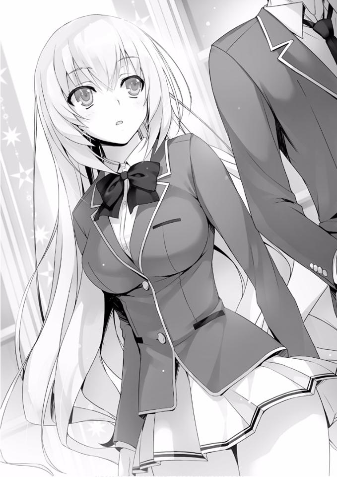
En otras palabras, Ichinose y los otros usaron este tipo de táctica contundente para ver a través de la mentira. El hecho de que Hamaguchi repentinamente comenzara con este tema, naturalmente, era parte de su plan. Así que este es el momento en que la verdad de que Yukimura y yo intercambiamos nuestros teléfonos sale a la luz.
— Simplemente intercambiar teléfonos y replicar el historial fue perfectamente hasta el momento, pero nunca esperaron que verificáramos el hecho de que las tarjetas SIM están bloqueadas en terminales específicas, ¿o sí? —
dice Ichinose. Fuuuu ~ luego exhaló. En ese momento, llegó el anuncio de que el período de discusión de 1 hora termina en cinco minutos.
Nos ordenaron disolver el grupo en cinco minutos y regresar a nuestras habitaciones.
— ¡Mierda! —Ese grito de Yukimura vino de su corazón. Fue un grito sincero y honesto sin ningún engaño detrás de él.
— Lástima, Yukimura. Aunque fue un buen intento —dijeron Machida y los demás mientras sonreían y reían.
Dijeron eso para que Yukimura, a quien habían descifrado completamente, fuera completamente humillado.
También me miraron, la persona que deben creer es el orquestador de esta estrategia. Pero incluso con el ansioso Yukimura y la Clase D, y las sorprendidas Clases C y A. Deben tener muchas cosas de las que quieren hablar, pero las reglas ahora nos prohíben seguir discutiendo.
— En cualquier caso, ya hemos determinado que Ayanokouji-kun es el
“objetivo”. Machida-kun, prométeme que buscaremos el primer resultado juntos y sin traicionar a nadie —Ichinose le pregunta a Machida eso.
— Naturalmente. Confía en mí, vámonos —Machida rápidamente le respondió.
Habiendo sido llamados por sus amigos, los tres estudiantes de la Clase A fueron los más rápidos en salir de la sala.
— Los que creen serán salvados, ¿saben? Nunca las traicionaré. Es por eso que también quiero que la Clase C haga lo mismo. Solo tienen que soportarlo durante 30 minutos —dice Ichinose a los estudiantes de la Clase C.
Manabe y los demás simplemente asienten con la cabeza en respuesta.
Yukimura miró el teléfono que tenía en mis manos.
— Fui un tonto por seguir tu plan. Esto es lo peor —dijo.
Y luego, uno tras otro, todos salieron de la habitación, dejándonos solos a Ichinose y a mí.
— Ahora solo tenemos que confiar en todos —dijo.
— Sí... supongo que sí.
— Ayanokouji-kun, estás bastante tranquilo. ¿No estás preocupado? —
pregunta.
— No puedo hacer nada más que creer en los demás... voy a volver a mi habitación —le dije. No hay nada más que ganar, incluso si me quedo aquí por más tiempo.
— Oye, espera un minuto.
Ichinose me detiene poniendo una mano en mi hombro.
En ese momento sentí que el espacio entre nosotros pronto se volvería tenso.
— ¿Quién fue el que propuso este plan de intercambiar teléfonos? —me pregunta.
— Por supuesto, Horikita —respondí.
— Ya veo. Entonces dile a Horikita-san que su plan fue un gran éxito.
— ¿Gran éxito? ¿No quieres decir un gran fracaso? Fue una derrota aplastante y desastrosa. Ichinose lo descubrió todo —le dije.
— Ahahahaha. ¿No esperabas que nosotros pensáramos en el mismo plan, verdad? —respondió.
— Lo siento. Por mentirte así, incluso después de haber aceptado una alianza contigo ¿Estás enojada conmigo? —Le pregunté a Ichinose.
— Por supuesto que no. También comenzamos nuestro plan sin tu conocimiento, así que estamos a mano —me respondió.
— Ya veo. Estoy seguro de que Horikita también se sentirá aliviada de escuchar eso —le dije.
Habiendo dicho eso, agarré mi teléfono y me moví para salir de la habitación.
— Waa, espera, espera. La parte importante no ha terminado todavía —me detuvo nuevamente.
— ¿La parte importante?
— Cielos --- Eres malo tratando con la gente, Ayanokouji-kun. De hecho, las tarjetas SIM que nos dan están bloqueadas en sus terminales. Pero hay una forma de liberar ese bloqueo... ¿verdad? Le pregunté a Hoshinomiya-sensei para verificar pero, parece que con suficientes puntos, puedes quitar el bloqueo de la terminal de inmediato. Eso es lo que me dijo —dijo Ichinose.
Chiri. En ese instante, sentí como si una corriente eléctrica me atravesara la nuca.
— La respuesta que surge después de que se revela una respuesta falsa. La mayoría de las personas tomará eso como verdad. Después de que Yukimura-kun, quien puso la contraseña para desbloquear el teléfono, fuera declarado como que no es el “objetivo”. La verdad revelada, de que Ayanokouji-kun es el “objetivo” se asentó en su cabeza. Y el hecho de la tarjeta SIM terminó de convencerlos. Nadie sospecharía de nadie más que Ayanokouji-kun ahora. Pero esa es la verdadera trampa. Dije que la estrategia del intercambio es imperfecta, pero eso fue mentira. Porque esa estrategia es extremadamente efectiva. Pero, por supuesto, necesitas hacer una trampa de dos capa para ello. Si esta trampa se presenta, la verdad quedará sepultada para siempre en la oscuridad. Ya no habrá una manera de determinar quién es el verdadero “objetivo” con 100% de certeza —continuó Ichinose.
Esta Ichinose, ha visto el plan detrás del plan. Se dio cuenta de la verdad que había mantenido oculta incluso de Yukimura. En primer lugar, la premisa es que no soy el “objetivo”. Pero me acerqué a Yukimura bajo la apariencia de ser el
“objetivo”. Como prueba, después de todo, había usado el teléfono real del
“objetivo” para contactarme con él. Pero el verdadero “objetivo” y propietario de
este teléfono es Karuizawa. Ella escondió ese hecho muy bien. El único al que secretamente le dijo eso fue Hirata. Hirata también mantuvo oculta esa verdad tanto a mí como a Yukimura que pertenecíamos a ese mismo grupo al principio.
Es por eso que fingió no saber nada cuando hablamos sobre el “objetivo”. Pero después de enterarme del pasado de Karuizawa y Hirata, él me contó sobre la identidad de Karuizawa como el “objetivo”. Y después de que usé a Manabe para intimidar a Karuizawa, utilicé esa situación para intercambiar nuestros teléfonos.
Repliqué los correos e historial como hice con Yukimura. Luego quité el bloqueo de la tarjeta SIM usando puntos. Este procedimiento no es ilegal y se puede realizar fácilmente en una tienda como un servicio complementario. Esto puede ser un barco, pero como este examen requiere el uso de teléfonos, se preparó un lugar donde los estudiantes pueden reparar o reemplazar sus teléfonos en caso de daños. Es por eso que, mientras usaba el teléfono de Karuizawa, también pude transferir el número. Además, a partir de ese momento, cambié ese teléfono con el de Yukimura. Por supuesto, solo le dije que era “mi” teléfono y Yukimura lo había creído. Si sale a la luz la verdad, seguramente estará molesto e irritado conmigo.
Si fuera una persona simple, nunca habrían notado que Yukimura y yo habíamos cambiado de teléfono. Si fuera una persona inteligente, habría notado el intercambio y me acusarían de ser el verdadero “objetivo”. Pero nunca habrían llegado a la conclusión de que Karuizawa era el verdadero “objetivo”. Ese fue el plan de intercambio de teléfonos que se me ocurrió.
— Si la Clase D no tuviera el “objetivo”, ¿qué hubieras hecho? —Ichinose me pregunta.
— Lo mismo que tú. Intentaría descubrir quién es el “objetivo” entre las clases, intercambiar teléfonos con ellos y hacerme pasar por el verdadero
“objetivo” en su lugar —respondí.
Si el verdadero “objetivo” aparece después de eso y señala el engaño, la búsqueda sería exitosa, y si, por ejemplo, creyeran que Ichinose es el verdadero
“objetivo”, el traidor inevitablemente respondería incorrectamente y el examen
terminaría. En esta última situación, no se asignarán puntos a la clase B y es posible disminuir la diferencia de puntos entre las clases.
— Así que está fuera, ¿eh?
Ichinose comenzó a sacar los teléfonos de sus bolsillos izquierdo y derecho. Uno de ellos pertenecía al “objetivo” de la Clase B de otro grupo, uno de ellos de otro estudiante que no era el “objetivo” de otro grupo.
— Por cierto, esta es solo mi predicción, pero si voy con el ritmo de la discusión de hoy- —Ichinose rápidamente escribió un mensaje en su teléfono—. La identidad del “objetivo” es Karuizawa Kei-san. ¿Correcto?
Después de haber escrito eso, ella me muestra su pantalla. Era el correo de
“traición” que iba a enviar a la escuela ahora. Pero antes de que pudiera pasar cualquier cosa, mi teléfono y el de Ichinose sonaron al mismo tiempo.
“El examen para el grupo (Conejo) ahora ha finalizado. Espere el anuncio de los resultados”.
— Aaah... alguien nos traicionó al final, ¿eh? Es la Clase A o C, uno de ellos
—dijo.
— ¿Por qué sospechaste de Karuizawa? —le pregunte.
— La misma razón que Yukimura-kun. Porque ella ha estado actuando de forma diferente a la habitual también. Por lo general, no le importa Ayanokouji-kun, pero te ha estado mirando bastante y te ha estado haciendo caras más de lo necesario. Pero esa no era una prueba suficiente de que Karuizawa-san fuera el “objetivo” así que de cualquier manera no habría enviado ese correo —me respondió Ichinose.
Parece que el plan que había establecido, ha sido completamente descubierto por Ichinose.
— ¿Por qué no le contaste eso a nadie? De esa forma, la mentira se habría revelado —le pregunté.
Ichinose solo se rió. Su sonrisa en este momento era profunda y genuina, la más profunda y genuina que había visto en mi vida.
— Eso es obvio, ¿no? A o C, si alguno de ellos se equivoca, sigue siendo una ventaja para nosotros. Desde el principio, no tenía la intención de pasar el examen con todos a través del resultado 1, ni traicionar a todos a través de resultado 3. En el momento en que el “objetivo” no estaba en la Clase B, siempre tuve la intención de permitir que otra clase nos traicionara a propósito. Creo que el traidor esta vez es de la Clase A —dijo.
— Machida, ¿eh?
— No, no. Es Morishige-kun. Es de la facción de Sakayanagi-san.
Probablemente no quiera obedecer mansamente a la facción Katsuragi.
Probablemente pensó que era mejor traicionar y tomar los puntos, ¿sería eso? —Ichinose me responde. Mientras se ríe extrañamente, me da la espalda—.
Ayanokouji-kun,
eres
inesperadamente
increíble,
la
conversación que acabas de tener conmigo, la ideaste en el acto, ¿no? ", pregunta.
— Si vas a alabar a alguien, alaba a Horikita. Me dio varias situaciones hipotéticas y yo obedecí sus órdenes —le respondí.
Parece que voy a tener que volver a evaluar a la persona conocida como Ichinose Honami. Se las arregló para evitar a fondo cualquier riesgo, al mismo tiempo que ideó una estrategia para salir victoriosa. No tengo derecho a quejarme.
— Me iré entonces. Será malo si terminamos rompiendo las reglas —me dijo.
Pero mientras decía eso Ichinose, nuestros teléfonos reprodujeron un tono único simultáneamente. Y no solo una o dos veces, sino cuatro veces consecutivas en un corto período de tiempo.
— ¿Q-Qué significa esto?
Ichinose parecía estar realmente conmocionada, mientras ambos miramos las pantallas de nuestros teléfonos.
El barco navegando en el profundo y oscuro mar, parecía algo solitario.
Pero a medida que se acercaban las 11 p.m., la presencia de personas aumentaba gradualmente. Cuando me di cuenta, el café al que estaba pensando regresar ya mostraba un gran éxito y los asientos se estaban llenando rápidamente uno tras otro. Frente a mí, que había apartado cuatro asientos por adelantado, una chica se acerca.
— ... lo siento por hacerte esperar —La chica que venía tímidamente era Karuizawa Kei. Algo en su expresión parecía ser diferente de lo habitual.
— Perdón por llamarte tan tarde —le dije.
— No, está bien...
Como no tenía nada en particular que hablar con ella, simplemente me quedé mirando el paisaje coloreado por el silencio. Pero como Karuizawa parecía estar mirándome, me volví para mirarla también.
— Ahh, umm... me preguntaba si todo salió bien —me preguntó.
— Está bien. Estoy seguro de que los chicos de la Clase A enviaron el correo a la escuela con mi nombre.
Puedo decir esto porque como seguro, había una cosa más que tenía además de intercambiar los teléfonos de Karuizawa y Yukimura. Como trabajamos juntos con una meta en mente para asegurar que pudiéramos trabajar juntos de manera sinérgica, no habría preocupaciones en ese frente.
— ¿Cómo puedes decir eso con seguridad? —pregunta.
— ¿No es eso porque el papel que me diste significaba algo, Ayanokouji-kun?
—La existencia que se arrastraba detrás de mí, nos sorprendió lo suficiente como para hacer que Karuizawa saltara un poco. No se podía evitar, porque esa existencia era el chico con el que Karuizawa había tratado de romper, Hirata.
— Buen trabajo en el examen, a ambos. ¿Te importa si tomo asiento? —
pregunta.
— Por supuesto.
Karuizawa se movió incómoda y apartó la mirada de Hirata, pero no mostró ningún signo de rechazarlo abiertamente. Ahora son las 10:55 PM. En 5 minutos más, se enviará un correo a todos los estudiantes.
— Ya es casi hora. ¿Horikita-san aún no viene? ¿No deberíamos contactarla?
— Ella es del tipo que siempre llega a tiempo, podemos darnos el lujo de esperar otros cuatro minutos —respondí.
— Ahh. Parece que está aquí —Al menos en este caso, Horikita ha llegado más rápido de lo que esperaba.
— Haa ~ Si veo una reunión como esta frente a mis ojos, no puedo evitar suspirar —dijo Horikita.
— Por fin has llegado. Por cierto, ¿qué hay detrás de ti? —le pregunté.
— Si le prestas atención, pierdes. Solo piensa en él como un fantasma pegado a mi espalda e ignóralo de esa manera —respondió Horikita.
— No digas eso, Horikita. Pensé que estarías ansiosa durante el período del examen y me preocupé por ti, es por eso que te llamé.
No lo había visto recientemente, pero Sudou Ken estaba junto a Horikita casi como si estuviera pegado a ella.
— Estás en mi camino, piérdete —le dijo Horikita.
— N-No digas eso. Desafié este examen con mis mejores esfuerzos, ¿sabes?
—respondió Sudou.
— Entonces, ¿confías en que obruviste un buen resultado? —ella pregunta.
— ... Estaba solo a un paso de eso. Pero parece que alguien más rápido que yo envió el correo primero —dijo Sudou.
Después de haber escuchado esa excusa poco entusiasta de él, parece que Horikita había dejado de prestarle atención. Horikita toma el último asiento disponible. Sudou entra en pánico y se mueve rápidamente para tomar una silla de una mesa cercana.
— Todavía estás en el camino —le dice Horikita a Sudou.
— Está bien, ¿verdad? Voy a escucharte. Además, no me excluyas —le responde.
A pesar de ser una reunión bastante inusual, parece que Sudou no tiene interés en escuchar nuestro lado de las cosas.
— Más importante aún, la cadena de correos que recibimos antes...
— Sí, también sentía curiosidad por eso.
Hace aproximadamente 2 horas, fue el incidente que ocurrió justo cuando me había separado de Ichinose. Cuatro correos fueron enviados a nuestros teléfonos. El contenido de esos correos nos informó del final del examen para varios grupos.
El grupo (rata), el grupo (caballo), el grupo (pájaro) y el grupo (jabalí). Todos esos grupos tuvieron su examen terminado por la aparición de un traidor.
— El grupo (Caballo) es aquel en el que el “objetivo” era Minami-kun, ¿verdad?
— Sí. En otras palabras, hay una posibilidad de que su identidad haya sido descubierta por alguien.
— En los otros grupos, ¿hay alguna posibilidad de que uno de nosotros haya enviado el correo? —Horikita ansiosamente pregunta. Si el “objetivo”
comete un error, el daño que obtendrán no es para reírse.
— Estaba indagando sobre eso y pregunté en varios grupos antes. Por lo que respecta a los chicos, dicen que ninguno de ellos es el traidor que envió el correo —le dice Hirata a Horikita.
Esto es, por supuesto, asumiendo que no nos han dicho una mentira. Pero hasta cierto punto, estoy seguro de que podemos confiar en ellos.
— ¿Estaba bien Yamauchi? —Pregunté por el hombre que estaba listo para ir al extremo si era necesario.
— Ahh, umm. Está bien. Yamauchi-kun estaba en el grupo (Pájaro), y parece que intentó enviar un correo de traición. Pero dudó demasiado, y el examen terminó antes de que pudiera enviar el correo —Hirata me responde.
— No sé quién era o desde dónde, pero traicionarnos antes de que nosotros lo hiciéramos fue una buena jugada.
Horikita había predicho que si Yamauchi enviaba el correo de traición, se equivocaría completamente. Estoy seguro de que ella también está en lo cierto.
Había perdido su oportunidad en el momento en que no envió el correo de inmediato y vaciló después del final del examen.
— Pero no sabemos de las chicas —señala Horikita.
— Está bien. Ya he consultado con las chicas. Nadie envió los correos —
Karuizawa responde a Horikita sin rodeos ni dudas. Dado que ella gobierna a las chicas de la Clase D, sus habilidades de recopilación de información son casi tan rápidas como Hirata.
— ...Ya veo.
Por supuesto, Horikita, que no tiene esa capacidad para recopilar información, no tiene más remedio que aceptar esa respuesta.
— Al final, este examen. Me pregunto por qué la sesión informativa se hizo con un grupo tan pequeño de personas —Hirata murmura la pregunta de la que no podía entender el significado.
— Este examen es uno que prueba a “pensar”. En otras palabras, cómo pensamos. No es que cada pregunta tenga una respuesta... o algo así —
Horikita responde a Hirata.
De hecho, podría ser que solo al ver a través de esos acantilados sin sentido, podamos encontrar la respuesta oculta debajo de todas las preguntas. Puede ser natural suponer eso.
— Más importante que eso, lo que me preocupa es el hecho de que esos cuatro correos llegaron casi simultáneamente. El espacio para la traición es de 30 minutos. Pero aun así, que todas las traiciones sucedan dentro de los primeros 1 y 2 minutos. ¿es normal? —Horikita pregunta.
— ¿No es solo... una coincidencia?
Parece que desde la perspectiva de Sudou que acaba de escuchar nuestra conversación, puede parecer una coincidencia.
— Cuando Kouenji-kun envió el correo de traición, la respuesta de la escuela fue inmediata. Si asumimos que responden tan rápido como una respuesta automática...
— La posibilidad de que los correos se hayan enviado a la vez es extremadamente alta. En otras palabras, es posible que sea una clase la responsable de todas las traiciones.
Precisamente. También pensé que no había otra posibilidad pero para que se envíen cuatro correos con ese tiempo.
— Pudo haber sido que cronometraran sus correos de traición para hacernos saber que fueron ellos quienes lo hicieron.
— Sí. Tampoco puedo pensar en ninguna otra razón. Y solo hay un hombre que haría algo así... —dijo Horikita.
Horikita y Hirata intercambian esas palabras. Estoy agradecido de que esto termine sin que tenga que decir nada innecesario.
Y tiene sentido usar este café que hemos usado muchas veces antes, para encontrarnos esta noche.
— Como se esperaba, estabas aquí.
Fue para poder invitar al sexto invitado, este hombre, a este lugar.
— ¡¡¡Ryuuen...!!! —Al darse cuenta de la presencia de Ryuuen, Sudou se levantó como para intimidarlo, pero Ryuuen no le prestó atención y simplemente agarró a una silla vacía antes de sentarse al lado de Horikita.
— Pensé en venir y disfrutar los resultados contigo. Gracias por estar aquí en un lugar tan fácil de descubrir —dijo Ryuuen.
— Sí. Elegí este lugar especialmente para que incluso tú, con tu estupidez, pudieras encontrarlo. Agradéceme —Horikita le respondió.
— Pero aun así, Suzune. Esta es una reunión bastante grande para ti. ¿Qué pasa con este cambio de actitud? —Ryuuen le pregunta a Horikita. Ryuuen dijo esto mientras nos miraba a nosotros cuatro reunidos en la mesa (ignorando a Sudou por completo).
— Me molestaba tu insistencia. Los estaba consultando —responde Horikita.
— ¡No le des problemas a Horikita! —Sudou le ruge a Ryuuen.
— Sudou-kun, cállate —dijo Horikita.
— ........ou.........
Habiendo sido detenido por Horikita, Sudou se hunde obedientemente en su silla.
Él es sorprendentemente honesto.
— Pensé que no tenías amigos que en realidad fueran amigos. Bueno, eso está bien.
Esto en sí mismo es otro plan defensivo que preparé contra Ryuuen. Al aumentar la cantidad de personas con las que Horikita interactúa, efectivamente creé un escudo. Naturalmente, aumentará la cantidad de personas que tiene que vigilar y se volverá insostenible para él.
— Los resultados se anunciarán pronto. ¿Obtuviste algún resultado?
— Más o menos. Te ves bastante relajado —Horikita responde a Ryuuen.
— Kukuku. No estaría aquí si no fuera así. También parece que las mismas personas de la última vez están aquí.
— Ah, sí. La última vez, durante el anuncio de los resultados, después de actuar tan arrogantemente, perdiste miserablemente —Sudou se ríe de Ryuuen después de haber recordado algo y le señala con el dedo. Y como para hacer coincidir las acciones de Sudou, Horikita también mira a Ryuuen con una expresión de disgusto.
— Basta, Suzune. Si haces esto ahora, vas a avergonzarte más tarde,
¿sabes? Ya conozco al “objetivo” de nuestro grupo —dijo Ryuuen.
Si esas palabras eran verdad o mentira, Horikita no se agitó ni un poco. Quizás es porque tenía confianza en que no perdería ante Ryuuen.
— Me alegro por eso. Espero los resultados —le dice Horikita a Ryuuen.
— Ni siquiera tenemos que esperar eso. Puedo decirte quién es el “objetivo”
del grupo (Dragón) —responde a Horikita.
— Lo siento pero suenas como un perdedor en este momento. El examen ya terminó y nadie del grupo (Dragón) se volvió traidor. Solo puede significar una cosa —dijo Horikita.
Solo significaría que Ryuuen había terminado el examen sin darse cuenta de que Kushida era el “objetivo”.
Esa sería la verdad innegable.
— Si llegaras a conocer mi amabilidad, estarás tan agradecida que mojarás tu entrepierna —le dice Ryuuen a Horikita.
Y usando un lenguaje tan vulgar, Ryuuen se ríe como si estuviera entretenido.
— ...dime entonces. ¿Quién es el “objetivo” del grupo (Dragón)? —Horikita le pregunta.
Y como si estuviera esperando que ella dijera eso, Ryuuen levantó su mano mientras se reía. Se asoma entre los huecos de sus dedos como una bestia, como si estuviera preparándose para saltar sobre la garganta de su presa.
— Kushida Kikyou —Ryuuen dijo ese nombre.
— ¿Ehh?
Horikita, que hasta ahora no había reaccionado a ninguna de las palabras de Ryuuen, se congeló con una débil y sorprendida voz. Debió haber sido porque confiaba en que él no descubriría esa identidad, pero ahora estaba abrumada.
Hirata del mismo grupo (Dragón) parecía sorprendido también.
— Lo siento, pero desde el segundo día del examen, ya sabía que Kushida era el “objetivo” del grupo —les dijo Ryuuen.
— Esto es una broma... ¿verdad? Si es así, podrías haber terminado el examen enviando el correo de traición. Pero el examen no terminó así. Eso significa que te diste cuenta después de que el examen terminó por otros medios, ¿Me equivoco? —Horikita le pregunta.
— Sentí pena por ti después de verte intentar tan desesperadamente proteger la identidad del “objetivo”, y luego verte tan segura de ti misma, tan relajada y segura de tu victoria que hasta desprecias a los demás. Por eso te guié hasta el final —le dijo Ryuuen a Horikita.
— ¿Cómo lo descubriste? —Hirata le pregunta a Ryuuen en respuesta a sus palabras en un tono que era una mezcla de curiosidad y miedo.
Después de que intentaron con todas sus fuerzas proteger la identidad de Kushida, y el hecho de que aparentemente no había traidor. Deben haber tenido curiosidad sobre eso.
— Desafortunadamente, la respuesta a eso... te involucra a ti, Suzune —le dice Ryuuen a Horikita.
— ¿Yo?
Horikita, en este momento, seguramente está reflexionando desesperadamente sobre los eventos del examen en su cabeza, mientras finge estar calmada.
Cuándo, dónde y cómo fue descifrada.
— Me di cuenta por el movimiento de tus ojos, tu respiración, el movimiento de tu boca, tu tono de voz y todo lo demás sobre ti —le dijo Ryuuen a Horikita.
— Para con las bromas.
— ¿Broma? ¿Entonces dices que sabes de qué otra forma habría sabido la verdad? —Ryuuen responde rápidamente.
— Eso es... seguramente escuchaste eso de alguien más ahora.
— Entiendo tus sentimientos de no querer admitirlo. Que de todos en el grupo, eres la más inútil. Pero no te culpes por eso, Suzune. Acabas de elegir al tipo equivocado con el cual meterse. Y además, el examen fue caótico. En particular, a los que más vigilabas eran los de Clase A. Relájate —le dijo Ryuuen a Horikita.
— ¿Q-Qué estás diciendo que has hecho? —Horikita le pregunta a Ryuuen.
— Pronto sabrás la respuesta —responde.
Aparentemente, los cuatro correos de traición fueron todo trabajo de Ryuuen. Y
una vez que llegaron las 11 pm, llegó un correo a todos nuestros teléfonos a la vez. Y sin mirar a Ryuuen, todos miramos hacia abajo para ver los resultados.
(Rata) ---> Debido a la evaluación correcta del traidor. Resultado 3.
(Vaca) ---> Debido a la evaluación incorrecta del traidor. Resultado 4.
(Tigre) ---> Debido a que la identidad del objetivo está protegida.
Resultado 2.
(Conejo) ---> Debido a la evaluación incorrecta del traidor. Resultado 4.
(Dragón) ---> Debido a la evaluación correcta de todo el grupo después del final del examen. Resultado 1.
(Serpiente) ---> Debido a que la identidad del objetivo está protegida.
Resultado 2.
(Caballo) ---> Debido a la evaluación correcta del traidor. Resultado 3.
(Oveja) ---> Debido a que la identidad del objetivo está protegida.
Resultado 2.
(Mono) ---> Debido a la evaluación correcta del traidor. Resultado 3.
(Pájaro) ---> Debido a la evaluación correcta del traidor. Resultado 3.
(Perro) ---> Debido a que la identidad del objetivo está protegida.
Resultado 2.
(Jabalí) ---> Debido a la evaluación correcta del traidor. Resultado 3.
Y en base a esos resultados. Los aumentos y disminuciones en los puntos de clase y los puntos privados en este examen serían los siguientes. En este caso, cl y pr representarían puntos de clase y puntos privados, respectivamente.
Clase A - menos 200 cl más 2 millones de pr
Clase B - Sin cambios en cl Plus 2.5 millones de pr
Clase C - Más 150 cl más 5.5 millones de pr
Clase D - Más 50 cl Más 3 millones de pr
— La Clase C... es la ganadora —Horikita y los demás parecían sorprendidos por los resultados.
— ¿No es genial, Suzune? Gracias a tu desgracia, el grupo (Dragón) ha obtenido el resultado inesperado 1. Ahora, todas las clases deberían recibir una gran cantidad de puntos —le dice Ryuuen a Horikita. Ryuuen aplaude y ríe satisfactoriamente—. Si inclinas tu cabeza ante mí y suplicas.
Te puedo decir la respuesta —Ryuuen le dice a Horikita.
— ¿Quién haría algo así?
Horikita había empezado a decir eso, pero rápida y fuertemente cerró su boca.
— Hombre. Esa expresión tuya. Es bastante sexy —le dice Ryuuen a Horikita.
Ryuuen saca su teléfono del bolsillo y lo coloca sobre la mesa frente a nosotros para que todos lo veamos. En la pantalla parece haber una lista que Ryuuen ha
logrado reunir. Rata, pájaro, jabalí. En esos grupos se escribieron los nombres de los estudiantes sospechosos de ser los “objetivos” de la Clase A.
— Descubrí la raíz de este examen y llegué a esto. Luego me centré solo en aquellos de la Clase A. Y esta es la prueba de eso —nos dice Ryuuen.
En otras palabras, significa que Ryuuen logró superar este examen sin tener como blanco ni a la Clase D ni a la Clase B y solo atacó a la Clase A.
Normalmente, hubiera sido imposible realizar una proeza tan inconveniente.
Pero no se puede negar que Ryuuen, de hecho, lo logró.
— Y lamento decirte esto. Pero desafortunadamente, mi próximo objetivo eres tú, Suzune. En el próximo examen, me aseguraré de apuntar especialmente a ti. Continuaré hasta que haya desgarrado por completo tu mente y tu corazón en pedazos —Ryuuen le dice a Horikita.
Sin tener más palabras que responder, Horikita solo siguió mirando los resultados del correo.
Significa que la Clase C ahora posee una ventaja abrumadora frente a las otras clases, habiendo obtenido una gran cantidad de puntos en este examen.
Ahora, mirándolo de nuevo, aunque Kouenji parecía haber estado jugando en ese entonces, fue una buena jugada la que hizo al asegurarnos algunos puntos en ese entonces. De lo contrario, habría sido la victoria exclusiva de la Clase C.
Por supuesto, las acciones de Kouenji terminaron como balas perdidas que volaban hacia los “objetivos” de otras clases.
— Espero con ansias el segundo semestre.
Después de pagar la deuda de la prueba en la isla, Ryuuen parecía satisfecho cuando se alejó. Y los estudiantes, a pesar de su victoria, no parecían estar celebrando, sino que parecían agotados.
— Puedo aceptar que Ryuuen-kun simplemente recopiló información sobre los “objetivos” de la Clase A. Puedo atribuirle que tiene un talento que no tenemos. Pero ¿cómo obtuvo el resultado del grupo (Dragón)? —Hirata preguntó.
Pero no hay necesidad de pensar particularmente duro sobre esto.
— No es una tarea tan difícil. Si te lo propones, es bastante simple.
— ¿Qué quieres decir?
— Dejando de lado la forma en que Ryuuen descubrió la identidad del
“objetivo”, todo lo que tenía que hacer era anunciar “Kushida es el objetivo”
antes del final del examen. Por supuesto, nadie creería en las palabras de alguien como Ryuuen, especialmente un grupo de personas dotadas como ese grupo. Pero el período de cierre por sí solo es diferente. Incluso si respondes equivocadamente durante ese tiempo, no habría riesgo. Como tal, incluso alguien jugando a la defensiva como Katsuragi estaría tentado de votar si incluso hay un 1% de posibilidades de que Kushida realmente sea el “objetivo”, el primer resultado sería el más conveniente para todos ellos, después de todo —dije.
Si él había plantado las semillas antes, es una tarea extremadamente simple.
Pero es algo imposible de hacer normalmente. Es una tarea que no se puede lograr a menos que todos confíen en que de hecho es Kushida. ¿Es esto realmente posible? Incluso no puedo imaginar cómo pudo haber sucedido. Esto no pudo haber sido un éxito. ¿Cómo, dejando de lado la Clase D, él guió a todos al resultado 1 mientras ganaba su confianza? A menos que tuviera una “prueba absoluta en la que todos deben creer”... tal vez.
— Horikita. Solo tal vez, pero... podemos encontrar algunos obstáculos en el futuro —y no solo una o dos veces, dependiendo de las circunstancias, puede involucrar a toda la Clase D.
— ... ¿obstáculos de Ryuuen-kun? De hecho, se las arregló bien en este examen, eso es cierto. Pero no hay garantía de que pueda repetir esto en el futuro. De hecho, tu grupo realmente ganó, ¿Estoy equivocada? —
Horikita me pregunta.
— Eso es correcto. Podría estar pensando demasiado esto. No te preocupes
—le respondí a Horikita.
En este momento no es más que una premonición. Pero, ¿y si esta premonición se hace realidad? No puedo evitar pensar que este puede ser el primer paso
hacia la desesperación. Pero al mismo tiempo, también comencé a sentir que la emoción llamada “excitación” comenzaba a crecer dentro de mí.
HISTORIAS CORTAS
KARUIZAWA HISTORIA CORTA
PRESENCIA INVISIBLE
Este fue un evento que ocurrió poco después de que comenzara la prueba especial.
Fui temprano a la sala de examen del grupo Conejo.
—He llegado un poco temprano... pero no importa.
En realidad no tenía la intención de llegar tan temprano, pero unos 10 minutos sigue siendo aceptable.
Sólo quería evitar encontrarme con Manabe y las otras chicas.
La razón es “ese incidente”. La reapertura de viejas heridas en estas circunstancias inesperadas había alterado mi estado de ánimo. Estar de pie preocupada frente a la puerta de la habitación también era extraño, así que simplemente entré directamente en ella. Ghhh.... Sólo vi a Ayanokouji-kun, esperando sentado solo en una silla, después de entrar en la habitación. Vio la expresión de asco que adopté en un instante, pero no me importa.
No quería acercarme a él, así que me distancié. Elegí el lugar más alejado de él y me senté.
Durante el período de tiempo después de esto, me la pasé charlando con mis amigos con mi teléfono.
Luego de eso, Rino quería tener una llamada telefónica, así que lo hicimos.
—Ah, hola Rino. ¿Cuál es la situación allí? ¿Por aquí? Ah..., aquí no sólo es terrible, la situación está al límite. Aunque me estén separando de Hirata-kun, al menos deberían dejarme algunos chicos decentes. Este grupo está realmente lleno de basura.
Parecía que había muchas chicas en el grupo donde Rino estaba asignada, qué envidia. Tenía sentimientos complicados al pensar que estaban de buen humor durante mi ausencia. Las chicas son indudablemente organismos que chismean a espaldas de la gente que odian. Para evitar que surjan problemas después de la prueba, debo investigar con anticipación, para poder controlarlos. Esto es lo más importante que debería estar haciendo ahora mismo. Después de terminar la llamada telefónica con unas pocas palabras, inspeccioné el registro del chat de principio a fin para buscar cosas sospechosas. Bien, no debería haber ningún problema. En este momento mi presencia sigue vigente.
Ayanokouji-kun, que estaba esperando en la habitación, entró en mi campo de visión.
—Ah-Cierto. ¿Eres el objetivo? Parece que ni Yukimura-kun ni So...-kun lo son.
Esto no importaba. Sólo pregunté para pasar el tiempo. Cómo decirlo, no tenía ninguna impresión de este tipo. Era un tipo corriente en la clase, pero lo podía encontrar en los rincones de mi memoria. ¿Por qué? Con sólo pensar un poco, llegué a la respuesta.
Sólo por su apariencia, Ayanokouji-kun no se ve nada mal. Si pudiera socializar tan bien como Hirata-kun, tal vez podría convertirse en una persona cuya popularidad no perdería ante él.
—No.
Me respondió brevemente. No, totalmente imposible, no tiene habilidades de comunicación. Por eso siempre está mezclado con chicas anticuadas como Horikita-san y Sakura-san.
—Ah, ya veo. Entonces está bien.
—¿Me crees?
¿Fue porque sospeché? Ayanokouji-kun me miró mientras decía esto.
—¿Hah? Probablemente no lo eres, ¿verdad?
Le respondí con un poco de enojo y él inmediatamente movió la mirada y se quedó callado. Eres un hombre, muy vergonzoso.
Es inútil seguir hablando con él. Mientras pensaba esto, saqué mi teléfono otra vez.
Al final, además de Hirata-kun, no hay hombres de verdad en la clase D.
Por eso no puedo dejar su lado.
En retrospectiva, esta fue la primera vez que Ayanokouji-kun y yo pasamos tiempo a solas.
En mis tres años de vida escolar, él se convertiría en la persona más importante e insustituible, pero en ese mismo momento yo no era consciente de ello.
HISTORIA CORTA ICHINOSE
EN LAS GRIETAS ENTRE EL SUEÑO Y LA REALIDAD
Delante de mí, había un dorayaki y un stromboli.
—¡Quiero comer las dos cosas!
La hambrienta yo se abalanzó sobre los dos objetivos en posición de vuelo.
Sin embargo, los dos escaparon a gran velocidad.
—Cielos, impresionante. ¡Entonces yo tampoco me contendré!
Volví a saltar, aún más rápido. Después de eso, extendí directamente mi brazo.
Pero la comida una vez más se me escapó de las manos y aumentó la distancia conmigo.
—... Entonces, ¿qué tal esto?
Renuncié a los stromboli y sólo extendí el brazo hacia el dorayaki. Esta vez no lo dejé escapar y lo atrapé fácilmente. Justo cuando pensaba tranquilamente en ir por el stromboli, se me escapó por tercera vez y aumentó la distancia conmigo.
Y el dorayaki que estaba en mis manos hace un momento se me había escapado sin que me diera cuenta.
—Esto sólo puede significar...
Cuando me di cuenta de lo que representaba la comida, desaparecieron y el mundo se disipó en un instante. Después de eso, sentí que la tierra blanda me atrapaba. Entonces, escuché el sonido de la alarma que estoy acostumbrada a escuchar que viene desde cerca de mi cabeza.
—Umm~....
Es verdad. Usé mi cabeza mareada para comprender la situación. Hoy es el último día del examen especial. Como llegué a la habitación antes que nadie, acabé quedándome dormida mientras me devanaba los sesos sobre cómo decidir el resultado de la batalla.
Después de levantarme, me di cuenta de la figura del estudiante de la clase D
Ayanokouji-kun dentro de la habitación, el cual no sabía cuando había llegado.
—Buenos días, Ayanokouji-kun. Lo siento, mi despertador debe haberte sorprendido.
—No, en absoluto. Parece que has dormido bien.
—Jajajaja, lo siento. Me quedé completamente dormida. Llegas tan temprano que aún quedan 20 minutos, ¿sabes?
—Tú también, ¿desde cuándo estás aquí?
—Hace aproximadamente una hora. Quería quedarme aquí tranquilamente.
Es ruidoso quedarse en los dormitorios, con amigos entrando y saliendo de la habitación.
No planeaba dormir, pero estaba un poco avergonzada, así que terminé diciendo eso.
Sin embargo, esto podría ser algo bueno. El resultado de esto fue que pude decidir el plan de batalla.
—Y también había muchas cosas que quería resolver.
—¿Conseguiste resultados?
—Más o menos.
Si persigo dos conejos al mismo tiempo, no tendré ninguno. He establecido firmemente las políticas para enfrentar al grupo Conejo.
Aún así, raramente estoy sola con Ayanokouji-kun, así que investiguémoslo.
Yukimura-kun y Sotomura-kun son más fáciles de leer, pero Ayanokouji-kun parece estar en las nubes, es muy difícil de leer.
Me levanté, me arreglé el pelo y me senté junto a Ayanokouji-kun.
—Ya que aún hay tiempo hasta que empiece el examen, si no te molesta,
¿quieres tener una pequeña charla?
—No me incomoda. Si crees que está bien, está bien para mí, Ichinose.
No le disgustó y accedió a mi petición.
—Entonces está decidido. Tengo algo que quiero preguntarle a Ayanokouji-kun. Ya he preguntado a todos los estudiantes varones de la clase B como Kanzaki-kun, pero no he preguntado a los estudiantes de las otras clases, así que me seguía molestando. Ayanokouji-kun, ¿tienes un fuerte deseo de ser ascendido a Clase A?
En primer lugar, necesito averiguar el interior de su corazón. Lo que piensa, para qué objetivo está actuando, y así sucesivamente.
Me he estado preguntando sobre la distribución grupal de este examen especial.
Ser asignado a un grupo tiene cierto significado. Por ejemplo, Kanzaki-kun fue asignado al grupo Dragón, y el grupo Dragón tiene los nombres de los representantes de cada clase. No estoy tratando de ser arrogante, pero normalmente, ¿no debería ser asignada al grupo Dragón también?
Pero la realidad no fue así. Me desanimé mucho durante una fracción de segundo, pero inmediatamente me puse a pensar en ello. Podría ser que hubiera otro significado.
Debe haber alguna implicación en el hecho de que no fui enviada al grupo Dragón.
Ayanokouji-kun, que está frente a mí, también podría ser una de esas posibilidades.


VISÍTANOS EN NUESTROS
DIFERENTES SITIOS
http://gladheimtranslations.blogspot.mx/
https://twitter.com/GladheimT
https://mastodon.social/@GladheimT
Si alguien desea hacer una donación
https://ko-fi.com/gladheimtranslation
https://www.buymeacoffee.com/gladheimtls
https://patreon.com/GladheimT
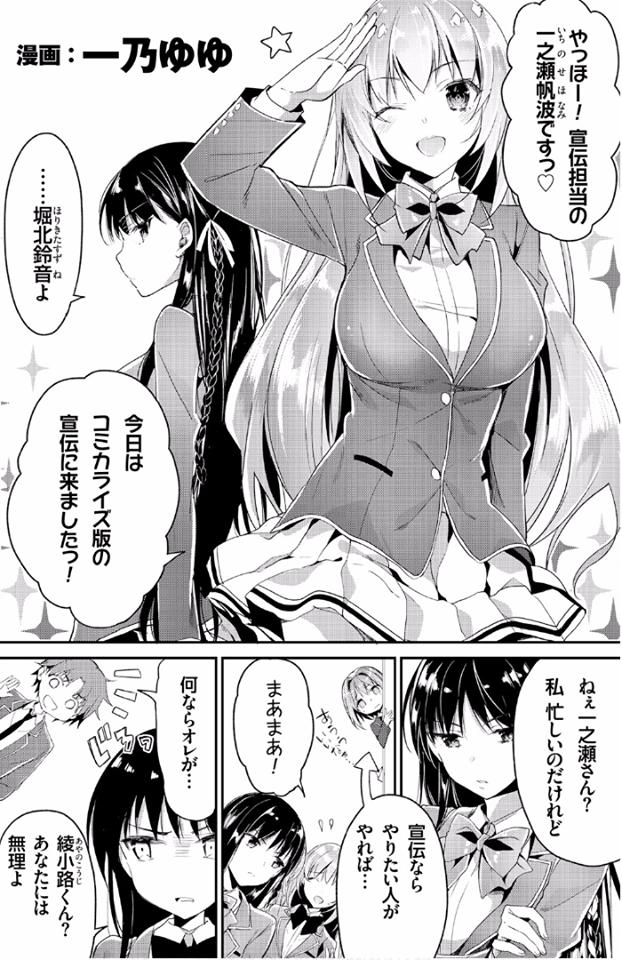
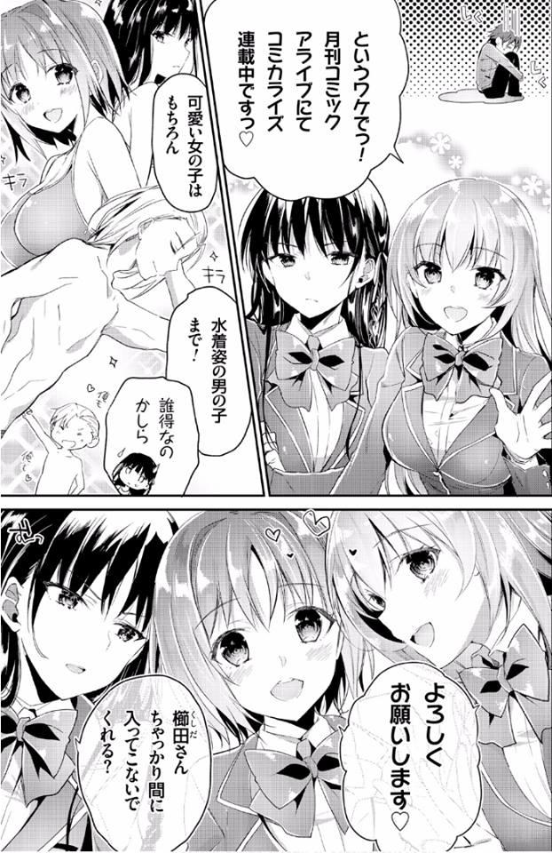